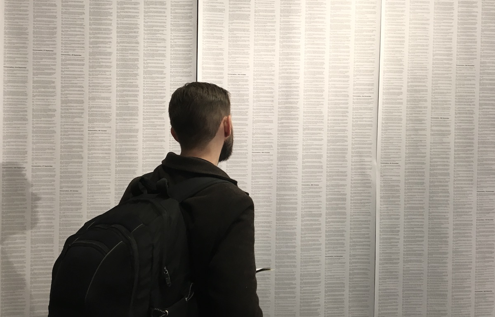
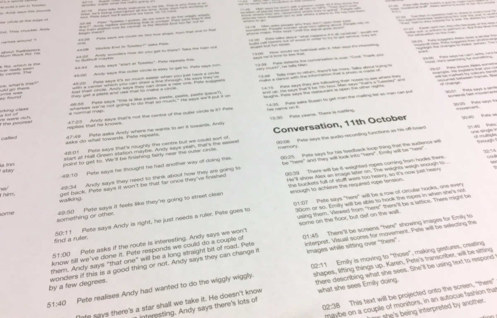

This website has been archived and is longer updated. For more about this project, see art.peteashton.com.
Transcripts of Humans

Conversations between the artist and visitors to the gallery are sometimes recorded.
These recordings are sent to a transcriber who describes them in text to a level of detail she deems appropriate.
Due to the limitations of an audio recording, the transcriber cannot produce an accurate record. Information is lost. Nuance is missed.
Any inaccuracies or misinterpretations are not corrected by the artist. The artist expects you to bear this in mind.
Some material deemed inappropriate or embarrassing has been removed by the artist.
Gallery visitors are invited discuss these transcripts with the artist. The transcriber would like to know what you think.
Transcripts by Karen Cameron
21st September to 29th November 2017
141,000 words

Conversation, 21st September
00:10
Pete talks about the black box text generation system. He’s given it around 1,000,000 characters from BCC future planning documents and also the complete texts of the Illuminatus Trilogy of Robert Anton Wilson.
00:37
Pete explains how the text generating system works, it looks for statistical probabilities and finds patterns.
01:20
Man asks how the images are created. Pete explains that the images are there to counterbalance the text on the other side, as the paper kept falling text side down. The images come from bodycamera images he’s taken around Birmingham.
01:55
Pete explains the process of creating the ink blot images from the photos he took. He used his system to generate images, which he then did a vector trace on. He took the vector trace images and flipped them. The flipping made them look like Rorschach blots.
02:30
These are instructions that don’t make sense, but it’s what you have to work with.
02:57
This space is Pete’s brain, it’s everything Pete’s been thinking about. The idea of making a static thing to look at for 3 months horrified him. He’d hate it after a week.
03:13
Pete says he can’t settle, and he’s embraced that fact. Man says he can relate to that. Pete says he’s going for a professor’s office/lounge/workshop feel in this space. It’s pretty bare at the moment.
03:39
Later on Pete will be be working with Andy Warner and Aleks Drays(?) who’ll be responding to this space using gesture. He wants to get into that performative area, it feels like a fruitful place for him to take this sort of stuff.
04:05
This space is a response to issues around data capture and data surveillance, more around data profiling than camera surveillance.
04:24
Pete is trying to be an artificially intelligent system. He wants people to tell him things, send him ideas, bring things in.
04:43
Like as a child learning, stuff comes into the system, is processed and comes out later as a result. These outputs will be further filtered/shaped by the people who come into the gallery. The space is this emerging, evolving.
04:59
It will look completely different in a few weeks time. Pete doesn’t know how it will look as he hasn’t been given the instructions yet .
04:30
This is a generative art system done by human rather than machine. Pete asks for them to send him photos, a five thousand word essay, a film etc
05:35
Man says he’ll be bringing in students.
05:50
The next thing Pete wants to do is start finding hidden secret surveillance cameras.
05:55
Pete notes that the new electronic billboards on the High St have cameras on, Man seems to know this already, Woman says “is there?”
06:05
Man and Pete say that these cameras are profiling people. Woman says sometimes the billboards have interactive ads on them. Man says sometimes there’s augmented reality.
06:25
Man tells Pete he once stood in front of a billboard and a football betting ad showed up, Woman laughs. He wonders whether it had profiled him.
06:32
Pete is interested in how we relate to these opaque systems. You can only guess at what they’re doing.
06:55
Man describes how the normal duration of an ad was interrupted by the football ad.
07:14
Pete is interested in people trying to reverse engineer systems that they can’t understand. Man wonders if the cameras can record number plates too.
07:31
Man talks about how new traffic systems are researched and “that air thing” is used to counts cars. He says people are sitting in cars with yellow jackets and clipboards. Every ten cars they make a note of something to see if a new crossing is needed.
07:54
Pete says he’s been talking to some guys at Aston Uni who work at an AI research dept called “Alice”. He’s programmer and has been working on a traffic management system for the council which can track cyclists and pedestrians by picking up recognisable patterns from their appearance, gait etc.
08:36
These patterns are used as a fingerprint. Individuals can be tracked as they move throughout the city. Pete’s friend doesn’t even see the images of people and traffic, just the numbers coming in. Pete wonders, if the man has thought through the potential consequences of setting up such a system?
09:00
Pete says it’s great from a cycling strategy pov. Pete says the concern isn’t so much about the tech but more about the culture and society that is behind tech.
09:15
Man says we can be optimistic and hope this sort of research will result in cycle lanes appearing up in a desire line-style around the city. Concludes that the data will prob be used for commercial purposes.
09:31
Pete says here’s where the capitalism angle comes in. Late/post capitalism.
10:06
Man says the camera on a billboard is the modern equivalent of the clockface on a church steeple during the Industrial Revolution. The tallest building in the village now has the time on it, everyone knows where they ought to be and when. It’s a movement away from “natural time” towards a structured working day. The clock is placed where it can’t be ignored.
10:37
Pete says tech is programmed by society and the economy it is created in. Science can be neutral. But the tools it produces are programmed in specific ways.
11:00
Man talks about a textile factory the lake district which has a bell that chimes every hour throughout the night. Guest houses have said they have had enough of the chiming.
11:33
Man said he heard it on the Today Programme. Pete says a tool of control has become a heritage thing.
11:49
Woman asks about the Birmingham Street names text generation thing. Pete answers that he’d been playing around with his generation system, this time giving it Birmingham street names to work on. He says to be honest he was trying to fill the shelves and needed something to put up there. Woman laughs.
12:15
Pete notices a screen that is blank and says there’s supposed to be something on it. Says he’ll turn it back on in a sec.
12:35
All the work Pete’s produced with people will appear on these shelves, at the moment there’s no work to show.
13:20
Man talks about a road opposite the Fox and Grapes that is an overgrown, dead street. He says there must be quite a few dead streets that show up on maps but aren’t in use.
13:18
Pete says that’s Andy Howlett’s kinda thing (am itching to write that it’s right up his street - K.C.) Pete asks man if he knows Andy who is making a film about the Library and walks, he’s a big fan of someone called Laura.
13:35
Andy did a walk as a crowdfunding reward where he followed paths which stop abruptly. This involves walking straight ahead into walls and bumping into things.
14:10
Pete says Andy has made Pete his mentor which is weird cos he doesn’t feel qualified. Andy has come on quite far, Pete is impressed. He’s done “The Home for Waifs and Strays” and is merging filmmaking with performance.
14:34
Man says all he can manage is lunchtime gallery visits. He’s missed so much over the last two years.
14:47
Pete says another reason for doing this show is to get him out of the house and outside of his head and meet people.
15:22
Man says he’ll be back with students at some point. Pete asks which students. Man replies from Dudley College foundation or second year. Further education students. Pete says, so A-level age. Man says it’s a good age to work with, they are often unbiased.
15:20
Pete says he’d like younger people’s perspectives as he talks to a lot of middle aged people. He wants to hear their opinions on cameras and surveillance and profiling. Woman says their relationship is different than ours. Pete has heard stories of children/young people both accepting and rejecting tech/AI/surveillance.
16:05
Pete tells the people their instruction is to think about what we’ve been talking about and send me an email/text with thoughts.
16:28
Pete says they’ll prob notice in 3 months time their ideas have shown up in the work.
16:42
All these ideas filter through Pete. He’s recognised the influence of Patrick (who does the spirals). Pete can see Patrick’s work in his thing that spits out paper.
17:00
Now they are discussing another Patrick (possibly? - K.C.). Woman talks about some performances this Patrick has done. They remember his Twitter handle. No one can recall Patrick’s surname. Pete gives them a copy of his printed Diary.
17:42
Man says he might take some ideas for himself. Ideas are cheap, it’s all about the execution Pete says.
18:05
Karen suggests too many ideas to Pete, “try this, you should try this”. Pete says he has enough ideas. He needs to process and focus.
18:20
Man explains he is in a similar situation, he hasn’t settled down to make anything properly yet. Pete says he’s free to come here and do some work in this space.
18:45
Pete explains the importance of the black sofa, if he’s going to be resident, there has to be a sofa, it’s the centre of the space. Pete might try to build something “here”.
19:10
Pete says goodbye. They say they will send people in to BOM.
Conversation, 21st September
05:16
Pete introduces himself to some people from the BCU media course who say they’ve been asked to look around Birmingham to find media places such as BOM.
05:30
Pete acts as their guide, as the person normally manning the desk is currently talking to architects.
05:58
Pete talks about the show. Explains there are 2 other artists involved, American Kyle McDonald and Nye Thompson from London.
06:08
The show is about surveillance, data collection, profiling etc.
06:20
Pete talks about his decision to be in the gallery all the time, he wanted to explore art practice as a way of engaging people and having conversations, learning from people. He’s looking for people to make art with him, take instruction from him and to do things themselves.
06:51
BOM is a lab rather than a gallery, it combines science, technology, and art. We are artists who use science and vice versa.
07:30
The previous show here was using skin cells as an art material.
08:00
Pete continues to introduce BOM and the spaces. Open Studios “If you’re based here you have to be prepared to be interrupted all the time.” BOM fellows are invited to use the space. There are a couple of larger spaces downstairs. There is currently a restaurant here which will be leaving at the end of the year. A café will be taking its place. Pete says this is probably enough information for now.
09:10
Pete starts talking to a new person. This desk area is a blank canvas he tells them. Talks about what the themes of the show are.
09:40
How do you hold on to and manipulate data? Pete has decided to step into the role of the processor and see what happens.
10:10
He’s interested how these machines can change our perception of the world. We already filer the information we receive, how do these systems alter our filtering.
01:33
Is google editing one’s work. Are they with us? Where is the authorship when google chooses keywords to match photos.
11:20
Man asks Pete how do you see this kind of thing evolving. Pete talks about the performance artists. Says he has a photography background but he’s disillusioned with using photography but is still very into cameras. He’s thinking about gesture..
11:49
An example of his interest in gesture is the image of people submitting to the body scanning machine, by taking a particular pose.
12:03
Pete says he has no performance art background. He’s thinking about getting into the city and out of the gallery. Not just in a dystopian way. But looking into How the city hold itself together, what are the rules and compromises we as a society have. Addressing those by behaving in different ways. Pete’s looking to make collaborative art that addresses these issues.
13:10
Pete describes the “madness of crowdfunding” box. Everyone puts in a pound and an instruction Pete produces an artwork that satisfies all the instructions.
13:40
Describes “the golden apple”. People put objects into the apple which Pete later will read like the I Ching.
14:03
Pete is interested in trying to interpret what the machine is telling you to do.
14:20
Man says Pete is making links between the idea of ritual and the citizen and how behaviour is influenced by AI.
14:45
SEO fascinates Pete, it’s like praying for rain. The Google God is impenetrable. He talks about the spotify weekly playlist song skipping myth. Pete’s wife had heard that if you wanted to skip a track but not have that track receive negative weighting, one must wait 30 seconds to skip the track. This is not documented this is sort of myth that’s built up.
15:55
Computer systems are rational but so complex as to seem magical. It just works. (automagically - K.C.) It’s in Apple’s interest to make it seem magical.
16:15
Man says there’s been a shift from late analogue tech to modern tech which is encased in a black box. You can’t fix/repair tech anymore.
16:56
Pete says there are people in China who have all the parts and can build and fix iPhones from parts they find in the market.
17:35
Pete asks Man if he knows about machine learning. Pete says it’s a way of crunching data. That machine over there is doing simple maths on a massive scale. Data goes in, useful data comes out. Pete uses ants’ behaviour as an analogy, one ant behaves understandably but a whole nest of ants’ behaviour becomes a complex system.
19:12
Programmers have faith in their black box systems, they keep giving them data and believing that it will give them good results.
19:50
Machine learning simple maths done on a massive scale. The main ingredient is the processing power of huge server farms.
20:00
Pete says this is his art, explaining things to people. Asks Man to take a Hummus-zine and to come back and see how things change.
20:50
There’ll be stuff happening, walks and events and performances.
Conversation, 15th September
0:15
Man says he’s been reading things about AI, mentions about a book by Serl(?). Pete says he recognises some of these names but doesn’t know who they are, he mentions a Saul Kripke.
0:48
Man says that something struck at the heart of “the Strong Male(? unclear)” project then says the author is talking about Turing test. How does the mind differ from a computational machine. Man says the conclusion difference is that a computer can’t perceive meaning.
01:15
The AI Pete’s talking about has nothing to do with intelligence, but rather data crunching and patterns. Proper AI would be a meaning-and-nuance-comprehending machine.
01:46
Man says this touches on psychology and philosophy.
01:48
Pete says, “what’s this”. John R Searle “The Mind, a Brief Introduction” he reads. It’s an OUP edition.
02:04
A new voice says “Hello”. Pete replies “Hello”. Pete continues reading “the Chinese room argument… strong AI project.”
02:27
Man says, “yeah symbol recognition” (they appear to be flicking through the book and picking topics). Man says it’s like having ?(unclear) but without any meaning.
02:39
Pete reads aloud “In English I understand what the words mean, in Chinese I understand nothing. In Chinese I am just a computer.” Pete asks rhetorically “Are you just regurgitating data or processing data or is there something else going on?” Pete says he sees that as a granularity.
02:56
Pete says he was talking to Susan earlier about digitizing stuff. Susan had told him she wants to digitize her work. Pete told her that everything is data on atomic level. If you could record all the data about every atom and all the energy in a room you could recreate a person. We are created from data.
03:40
Pete broaches the topic about free will vs determinism. Pete’s always thought that everything is determined but causality is so complex that everything looks like free will to us.
04:11
Free will might be an illusion but there’s no way of seeing past it so we might as well act as though we have free will as we can’t figure out the future even if it is predetermined.
04:30
Man says he was thinking about time travel. Rather than changing the future, the future should be seen as determined and it’s the past is changeable. Pete says he doesn’t even think you can change the past.
05:01
Pete says reality is immutable, but we have no way of experiencing it. We focus on specific things, ignore the majority of everything. Our perception of reality is constantly changing. Pete mentions Robert Anton Wilson and self-reinforcing reality tunnels.
05:55
Pete says Brexit split the British reality tunnel, or made it more obvious how cloven it’s always been.
06:20
Pete says media holds a mirror up to the humans that use it. It might change the way we behave but not radically. It shows us a distorted version of ourselves, but it’s still a version of ourselves.
07:08
Pete says that just being in this gallery is a filter bubble. Only “nice arty people” come in. That door acts as a filter. The concept of the art gallery acts as a filter on the work - is it a good or bad thing, Pete doesn’t know. It’s good in that it gives you freedom to talk about detailed stuff. It’s bad because certain viewpoints and perceptions are kept out.
08:00
Man says Pete’s done all he can to address the gallery filtering people out. Pete says that any space is going to behave as a filter. If you set up in the street, a shopping centre it’s going to filter out certain people.
08:22
Pete was talking to a Hannah (Pete can’t recall her surname) who is setting up a business that who’s ethos is based on the idea that there’s no such thing as a bias free dataset in machine learning. Her response is to attempt to get as many biases in the dataset as possible and understand them on their own terms.
09:00
You can put your system through each of the biases and see how each bias affects the output. Rather than having a “google” or “facebook” standard way of approaching things, you end up with a multiplicity of biases..
09:20
Pete had a friend who was one of those wonderful people who can have conversations with strangers, which Pete can’t cos he’s too introverted. He’d talk to taxi drivers, anyone he met.
09:30
Pete suggests that Man knows AG who’s a friend of DS. DS is/was the drummer in a band Pete tells the Man that they’ve met before at an art thing about 10 yrs ago, Man doesn’t recall. AG looked like a hippie but played guitar and turned into a rock god. He was Pete’s housemate for a while.
10:15
AG had the confidence and the genuine interest in people to try to sample other reality tunnels. To try and get a handle on the problems of the world rather than being self righteous. People on the right and the left can be very narrow, Pete didn’t see AG behave that way.
11:00
Man mentions something about a podcast some school of art, a talk where an all heterosexual panel were talking about gender politics. Eventually the panel came around to agreeing that the status quo was fine (I think, but it’s hard to hear him). Pete mentions a panel of white men talking about diversity.
12:43
Pete says diversity, in the broader sense, is a problem cos you’ve got too much info, which makes it hard to spot patterns. Being a human is a tension between experiencing as much as possible and finding patterns which involves eliminating data that doesn’t fit.
13:18
It’s like breathing, you breathe in data to take it all in and breathe out data which doesn’t fit the pattern. You metabolise what is kept. Pete gets excited about that metaphor.
13:40
Man says he’s working on old school 3D glasses. Says he’ll flag up a similarity rather than something diverse. Man says it’s hard to hold on to two different pov’s at once. Says that an opposition party should hold the ruling party in check, but they don’t.
14:44
Pete says 3D glasses take things that look like chaos and make order from them. One eye dismisses blue, the other red, The filters bring clarity. But by bringing clarity what is lost? e.g. If you make an image high contrast you’re getting rid of what was low contrast.
15:30
If you have a nice clean system for making decisions it might be fine when it comes to Google search results but if it’s applied to running a city and if the minority is ignored as noise then it’s a problem.
16:09
When you have a system that brings focus, something is lost. Pete says he doesn’t know if this fits the Man’s 3D glasses model or not. Each lens is excluding parts of the world but by doing this in concert they bring clarity. Ah! Pete wonders if having multiple filters running simultaneously is how the glasses work.
17:24
Councillors should be diverse so they each bring their own filters to a situation. (like the 3D glasses)
18:00
Pete mentions something he posted on twitter about Commons Science and Technology Committee, who are the whitestpeopleever.
18:34
Man mentions having watched the debate about the EU Withdrawal bill. Pete says he’s been busy, has monitored it remotely. Pete says it’s not about Europe, it’s about power.
19:08
Man says he expected them to block the bill and reconsider it, amend it somewhat put in safeguards. Man says it’s dangerous if bill has the power to amend itself.
20:00
Man muses on why the most important ministers are the most stupid. Pete says the less important ministers have the freedom to be nuanced.
21:00
Pete talks about the responsibilities of the more powerful to get results and less powerful ministers question and keep the more powerful in check.
21:28
He says the American system is quite nice, with its three bodies (the white house, senate, house of representatives) which are all equal. When one party controls them all it’s dangerous. Pete says about Trump as president isn’t king of the world. He can, in theory, be kept in check.
22:35
The US system is a reaction against the British system, as it was, of monarchy and a single parliament.
23:15
Pete says the instruction he’s giving people this week is “Please let me know something”. People are to send in things any sendable format. It doesn’t have to be coherent or suitable for publication, it’s just for Pete to take in and digest. Don’t feel you’re treading on my toes.
24:10
“Yes, it’s my work but I want data to come in… I’m like the Borg”.
24:25
Pete shows his zine Instructions for Hummus which was created to lighten the tone a little bit.
24:32
Pete shows the man Golden Apple and says he’s asking for contributions, tells Man he’ll read the items in an I Ching-style when there are 23 items.
25:10
Pete shows Man The Madness of Crowdfunding box, says he’s no takers yet. He’ll take the instructions and money and instead of saying “I want to do X, please fund me”, Pete is going to synthesize all the instructions into one artwork. “Tell me what to do and give me a tiny amount of money” he says.
25:40
Man mentions a public arts project which was granting £6,000 to an artist. The winning bid was the person who said “tell me what me to do with the 6 grand”.
26:00
Pete says this is completely self contained, he’s gonna make a hybrid artwork that fulfills all the instructions for the budget. Man says it’s like mixing everyone’s favourite colours together, he’ll end up with brown or muddy grey. Pete says it might be terrible, but might be awesome. The spaces in Pete’s space will be filled over time.
26:40
Some things are taking longer than Pete imagined eg the four cornerstones of the Instructions Station. He talks about the pose of surrender to the machine that sparked it all. Surrendering to a system.
27:09
Pete asks Man if he’s staying for a bit, does he want a cuppa?
Conversation, 23 September
04:30
Pete warns this visitor that he’s had a cold and his brain is slightly fuzzy. He mentions strange things have happening outside today, “must be for the Weekender”. “I’m one of the artists involved in everything thing, so I don’t get to see anything.” There’s more Weekender talk.
05:50
Woman asks about Nye’s CCTV footage work, is it legal? Pete reckons that publishing the images would be illegal whereas putting them in an artwork is ok. Pete says the artist does have a duty of care, she’s removed certain images such as only showing a crib when the baby isn’t in it. Pete says that the artist hasn’t hacked these images, they were freely available.
06:42
There’s no financial incentive for CCTV-sellers to implement or encourage security. This is an effect of global capitalism. The incentive is just to make and sell the camera. The artist is drawing attention to this.
08:00
Woman talks about the myriad ways data on us is collected, ostensibly for our protection, it’s scary. They are keeping this data. Pete says there might even be a good reason to give e,g. Facebook access to your mic.
09:00
Pete says he needs to get one of “those” (surveillance cameras?) but then he doesn’t want to surrender that info. It’s a whole area he hasn’t figured out yet. He shouldn’t have to.
09:45
Pete says that people in a control center looking for suspicious behaviour are seeing patterns and making up stories in their heads about what’s going on in the video they’re seeing. Project your ideas onto them.
10:20
In photography we know that the photograph is a fiction/a lie we construct in our mind. We are learning to understand our society and culture via screens. Is that a problem?
11:00
Woman says an image is easy to manipulate. Pete says you manipulate the image just by looking at it.
11:19
Pete talks about body cameras - the idea was to make the Police accountable, but the camera is positioned in a vulnerable place on the officer’s body so everything appears to be an attack against police officer. (In effect justifying aggressive police response - K.C.).
11:50
Woman suggests that if the camera was placed on the head the effect would be different. Pete agrees, the current camera position makes them seem as though they are under attack. (maybe this was un/subconsciously the point of putting them there? - K.C.)
12:12
Pete mentions the phrase “The treachery of images.” An image tells you a little bit of truth and the viewer fills in the rest, bringing their biases with you. It’s an idea that aids in understanding other things.
12:35
Pete talks about setting up a camera on a traffic island in Brum where he got a chance to speak to a lot of homeless people.
13:01
A nice police officer gave Pete his phone no and offered to help if needed. He told Pete to watch out for the Polish street drinkers, as they can be aggressive. Pete notes that he’d just had a really interesting conversation with one of the aforementioned Polish ppl, because his context was different.
13:25
Woman says that police officer was prompting him to have a different experience, telling him what kind of experiences he might have, based on the experiences the police officer has had.
14:00
For the policeman, the Polish street drinkers are trouble, cos that’s the only context within which he gets to interact with them. Pete doesn’t have a uniform and isn’t there at night. It’s not that one perception is correct and the other incorrect.
14:20
We only ever see a small part of reality but it’s all we have to try to make sense of ourselves/the world. Which is impossible.
14:35
Woman says it’s a human need, we need answers and if we don’t get them then we make them up. Pete says if we didn’t do that we’d go crazy, it’s a survival technique. This is what he’s trying to understand by making works about how we see reality.
15:15
AI/Surveillance is really interesting but for Pete it’s the first step in thinking about how people perceive and understand the world. Can we use those thoughts to try to understand Brexit and Trump fascism etc. Pete is trying to understand how all these things happened? Why can’t we communicate with each other?
15:51
Woman says it’s convenient not to question things and that most of this is down to education, we’re not taught how to question. Pete says we don’t teach philosophy or critical thinking, we teach how to consume.
16:20
Woman says people don’t learn history properly. Pete says people from WW2 are dying now, we’re losing that primary resource.
16:33
Woman says all the answers are online now. Pete adds “if you want to look for them, yeah”. He loves the Internet, he was online in the early days. He appreciates the freedom to communicate and get away from big media.
17:05
Woman says “the Internet is for manipulating information, but also sharing the truth.”
17:20
Pete says Google is an ad company using the medium of internet rather than an pure internet company. Their goal is profile people and sell them ads.
11:47
It’s not in Twitter’s interest to rid itself of trolls and abuse because that’s the sort of stuff that drives engagement.
18:18
He compares Twitter to the Bull Ring shopping centre, a closed private space inside the free and open city of Birmingham. You can’t do things inside the shopping centre that you can do on the street.
18:50
Pete says he’s just written a blog post about Uber. Customers think Uber is great because they see only the service, they get a cheap taxi service. For Uber drivers Uber means lower pay, crazy hours. Uber is using venture capital, running at a loss in order to price others out of the market.
19:50
Our culture is geared around keeping customers happy. Pete mentions the metaphor of the graceful swan paddling furiously under water. He likes this metaphor. On the surface everything is calm, underneath the surface of Uber is a drive to destroy the competition and build a monopoly.
20:40
Woman talks about using taxis in Brum, she had to haggle prices with drivers. It’s not like this in Spain, they use meters there. But here it’s like “last week it was £7 but now it’s £10 because it’s Saturday night” and people don’t like that.
21:43
Pete says it’s complicated, but it’s a negotiation between equals. It’s difficult and annoying but fair.
22:00
The large company makes the customer feel as though they have power over the workers. The company has power over them all. Pete says used to work in a shop.
22:38
Woman asks if they really are going to stop Uber in London. Pete says yeah, probably. They broke the rules.
23:00
The woman says she only read the headline, she doesn’t know a lot about the story. Pete talks about Uber’s greyballing of people trying to inspect their service.
24:00
Woman asks “what are these shapes?” Pete explains that they were made by an artificially intelligent system. He explains how it produces the words.
25:15
Woman says she read a couple that were kinda old sounding English. Pete says were they kind of off?
25:45
It’s taken the patterns of words and made new texts from that. It’s a probability game
26:20
Pete explains how the images were made. He took images of Birmingham with a bodycamera. The computer made images from those images, which were then vector traced and flipped.
27:09
Part of being an artist is just following your nose, “I wonder if I do this…”. They do look like Rorschach ink blots.
27:21
“This is like an instruction that may not make sense and you have to interpret it”: Pete’d like people to follow what these instructions say to them.
27:35
“If you see a smile, eyes… it’s quite low down, so maybe the instruction is to crouch and to walk around crouching… I don’t know. It’s up to you.”
28:00
Pete says “I’ve made them all mirror. And that was just to fit them on the paper, really”. Woman says that on one of the images she sees the white area as a shape rather than the black part. she sees an eye and an eyebrow with some crazy hair.
28:21
Pete mentions again that one projects one’s ideas onto something. What that (ink blot/words) means is personal to you. That’s interesting to Pete.
28:47
“At the moment this is all about conversations.”
28:50
Woman says she lives in Brum. Pete says right now he’s researching and developing, thinking about how he can make art and with whom. By Nov. there’ll be performances, artworks, talks, workshops, walks around the area. (how exciting! K.C.) Pete tells Woman to check the BOM website and/or Pete’s website.
30:00
Pete signs Woman up to his mailing list. Pete aims to send out a newsletter every week but admits it’s probably going to end up being fortnightly.
30:25
“It’s really useful to me to talk to people, cos it helps me figure out what I’m doing.” says Pete.
30:35
Pete tells woman he couldn’t make one artwork because the subject is too complicated. “The artwork is like… everyday thinking about it, responding to things. Cos it’s always changing.” As with Google’s search results, there’s always new information available.
31:05
“This section … (is) fixed, something has to be fixed in an art gallery” Woman says she just noticed the eye there. Illuminati. Always watching.
Conversation, 23 September
00:18
Pete claims a visitor has broken a computer. Woman asks isn’t it supposed to do that? Pete says, maybe. But probably not. Woman replies that the lady told her to do anything. Pete and woman laugh.
00:40
Woman says to someone at they told her to interact with the space. Pete says that she’s hacked the thing and gone onto lots of different websites. The laughter and kerfuffle continues.
01:13
Pete explains the “Exhausting a Crowd” piece. Shows the London version which has more tags on.
01:24
People are tagging things in the footage. People are projecting their ideas onto surveillance footage playing at being surveillance operators. It’s a democratization of that.
01:50
The Woman’s daughter takes up piles of Pete’s pieces of papers. Woman says she thinks Daughter has enough now. Pete laughs. Tells girl she’d better do something with all that.
02:16
Pete tells Woman that those are randomly generated so she may want to check the contents of them. He doesn’t think there are any swears. Woman says daughter has seen her first drag queen today.
02:35
Woman says that people do come in and take “it” (I guess one of the pieces of the generated words/ink blot papers). Normally not that many, Pete says, but as long as not everybody does it, it’s okay. “mess with my art, that’s the whole point.” Woman says that’s what it sounds like the point of it is.
02:55
Woman says her favourite place is Tate Modern or Britain. Says her daughter (4 yrs old) has stopped loving Tate, woman is very upset about it. Daughter said she can’t touch anything there, so this (Pete’s work) is her idea of heaven. Pete says that’s cool. Woman says there used to be more stuff you felt you were allowed to engage with at Tate.
03:35
Pete tells Daughter to put back pieces of paper back into the pile.
03:45
Pete - “I’m interested in how they just fall, the chaos of it.” It reminds him of a show at BOM a while back.
04:00
The show featured a rocket that crashed into the desert. Tiny pieces of the tiny onboard lab were recovered. They hung the pieces on fishing wire in the gallery. It looked amazing. Pete says that “then one of these came in”. (whatever “these” are). Woman asks if it was clear you weren’t meant to do “it” on that occasion. (I have no idea what’s going on here.)
04:50
“It was a lesson that was learned” Pete says. Woman says normally she wouldn’t have allowed Daughter to mess with stuff, but the lady had said it was okay.
05:00
Woman asks where the images inside Nye’s booth come from. Pete explains. Says they’re not live.
05:30
Woman - “someone could walk in and go, “wait a minute… that’s Geoff’s room”. That could happen… This is not just for effect this, this is real…” Pete - “it’s some sort of voyeurism weirdness going on.” Explains that it is not live, but edited. With a live feed you could end up showing anything.
06:20
Is it right, is it wrong? Pete asks. Talks about capitalism not having to care about the security of cheap products.
06:55
Pete mentions he saw a woman this morning on the bus who has 1111 as a phone passcode, “what can you do? I dunno”. He can understand why she does that but still…
07:20
Woman replies that it’s a hard world. She knows she should have a password for everything but she can’t keep it all in her head. Pete says he’s started using 1Password, explains how that works. Pete tells her there will be a talk in Nov with his wife that is dealing with this subject.
07:55
Woman says she works in coms and they do internal campaigns on cybersecurity. Pete says it’s going to be an educational workshop covering the basics of keeping oneself safe online.
08:10
Woman says she works nearby, says she’ll join his personal mailing list: “more sort of chatty than PR, really”.
08:30
Woman asks if it’s part of the exhibition that Pete gets hold of her email. Pete says “Well…”. Laughs. Pete says he runs a newsletter for his art practice. Woman says “art protest”. Pete says more clearly “art practice”. He apologises, says he’s had a cold this week.
08:54
Woman says she recently found out that a relative of hers is a protest artist in Brum. Why didn’t her brother tell her this before, she wonders. She mentions the relative works with “Imbue Source”. Pete hasn’t heard of this, says it’s a big city though. She thinks it’s small. Woman had thought relative might have been based at BOM.
10:10
Pete looks for information on the artist, says he can’t see any contact details. - “Artists are terrible at explaining what they do or where they are”. Woman says she’ll give Pete her email.
11:00
Pete tells Woman opening hours. Invites woman to return again. Pete says he’s intrigued by what toddlers do with things. They are sort of random number generators.
11:50
Pete says he’ll have to increase the rate on the paper spit-out thing as Daughter took a load of pieces. Woman had said she was planning to do something with them, so it’s okay.
12:07
Someone tells Pete it’s half-past four. Pete wonders why an alarm hasn’t gone off.
Conversation, 27 September
00:00
Man asks “How do you find stuff like this?”. Pete says it just comes to him now, he’s set up a system. At the moment a lot comes from people he follows on Twitter. This is a massive close-off filter, he adds. He also finds things on blogs. He just follows his nose.
00:50
Pete says he’s printing out this stuff he’s got, and trying to summarize it. He wants people to help him make sense of it by giving him various forms of feedback. He will synthesize all the responses into some kind of something.
01:25
Pete says it’s still the 3rd week, he’s mostly had people come in and look befuddled.
01:30
Man asks if he’s ever had someone come in and (inaudible). Pete says “no, and that’s interesting in itself as well”. Tells Man that there have been people who’ve picked up one thing.
01:41
Man mentions that “this” (some reading material) is ridiculously academic. Pete mentions that some of the other stuff is pretty comprehendible, he doesn’t want to say simple. He loves the title, Folk Theories of Social Feeds.
02:12
Mentions the Spotify personal play list suggestion skipping myth. Skipping a song after 30 secs is a neutral signal, after 30 is negative, a full play is positive. Believing this influences one’s behaviour, (when one skips which songs) although this is undocumented.
03:10
Religious/magical thinking about rational systems fascinates Pete.
03:40
Man asks what a negative signal would do to your recommendations. Pete replies that it means songs similar to that negatively weighted song will also get a more negative weighting making them less likely to show up as suggestions. Songs she’s listened to all the way though get a positive weighting.
04:40
Pete guesses that the actual algorithm is a lot more subtle than that but people take what happens and try to figure out why it happens. Some of the theorising is plausible, some not. They are all based on extrapolation from fragments of evidence. This is also how we see the world.
05:38
Pete – “We think we see the world but we only see a small part of it and we make up the rest of it in our minds”. Our flawed approach to computer systems reflects our flawed approach to reality.
06:00
We can’t talk about divisive issues, because we can’t relate to other people’s realities. People extrapolate from the data they have available and create bubbles that don’t relate to other people’s bubbles.
06:30
“That’s actually everything I’m interested in, in a nutshell. So don’t worry if it doesn’t make sense.” – Pete.
06:40
Man says it’s kinda like confirmation bias. “Exactly”, says Pete.
07:00
Pete wonders how can he make art about this subject. He’s not sure, so these three months he’ll be finding out.
07:30
Man says something about the NFL??
08:00
Pete says, it doesn’t reinforce their belief system, so it’s not relevant. If you look hard at at least one of your beliefs you will be able to pick it apart as not based in evidence. But if fits with your worldview of stuff that is mostly evidence-supported you keep it. One usually can’t see it oneself. A belief in E.g socialism.
09:00
Man mentions flat earthers. Pete says those extremes are fascinating to unpick. Pete is interested in taking extremes into the more mundane realm. E.g. Why is it that a rational person who reads the Daily Mail finds Brum city center scarier than someone who doesn’t. Man says that one’s a clear case of the that paper perpetuates misinformation.
10:10
Pete says he needs to find an example of people having differing opinions not based on them reading bullshit but yet
10:40
Pete doesn’t really know what he’s doing yet and that’s sort of why it’s interesting to him. If he could explain it all perfectly he’d be bored.
10:50
Pete proffers his diary. Explains more about the show. Shows the black box and explains how the texts are generated, using probability. There’s a similar idea behind the images.
12:50
Pete says the box is spitting out a piece of paper every 2 minutes and will continue for the duration of the show. Man says the pieces of paper are going to pile up. Pete says that’s the idea and that he’s interested in how things slowly erode/grow. Gives the example of a church step worn down by all the feet that in stepped on it.
13:35
Man asks “what exactly can you do” with regard to the artworks in the space. Pete says Man has just interacted with an artwork. He admits it’s a particularly wanky way of doing it.
13:57
Pete says he wants to receive ideas and suggestions for artworks he can make and/or ideas people are having.
14:30
If you’re sitting on the bus on the way home and an idea comes to you about this, Pete tells Man to let him know. If the information has gone in and found a match in Man’s brain Pete wants know about it.
14:40
Pete says he’s interested in being a human data-processor.
15:30
Pete mentions he received his first suggestion today. Someone sent in an instruction for creating a map of Brum using the location of discarded nitrous oxide canisters. He’s gonna merge that canister-idea with another idea. Perhaps.
16:00
It doesn’t have to be that specific. Pete mentions the NFL stuff Man told him about, give him more on that for example.
16:45
Pete says he’s preparing a SD card to hold the Snowden Archive of leaked documents.
17:09
Mentions a book he got at the weekend of art based on Snowden’s revelations. Pete tells Man about the Archive: “You connect to it on Wi-Fi in here and then you’re in a sort of intranet type situation… You’ll be able to browse the NSA’s leaked archives, in here.”
17:57
“It’s sort of cool, but then at the same time I’m not sure what it says.” – Pete
Conversation, 27 September
00:50
Woman wants to know what Google is doing with her data in relation to Google assistant. It knows where she is and she’s given it permissions to collect data about her. Pete wonders what could happen if the Trump regime wants access to that data next time she’s entering the US. We have no control over which inferences they make from that data.
01:25
It’s less about where you’ve been and more about controlling meaning. They say “we’re just collecting metadata”. Metadata is more dangerous as it allows people to infer whatever they want from that. It’s like a reality tv show. They selectively edit to create stories fictive stories built with actual footage.
02:15
That’s a really good metaphor for this stuff, Pete thinks. In processing a large data set down a smaller more manageable dataset you remove the noise and are left with a simple story. An example of this is people who claimed to have created machine gaydar.
02:50
Woman says that we’ve built a superhuman, machines are more powerful than us. They are based on us, so they are kind of human, but we can’t know what they are capable of doing. Pete says that’s a nice way of putting it.
03:20
Pete doesn’t want to be alarmist as that isn’t helpful. He likes the trans/posthuman ideas of uploading your brain to a computer and being able to live forever.
03:45
Woman asks if Pete’s watched Black Mirror. He says some of them, yes. Woman mentions an episode that involves just this uploading of consciousness idea. She says that she thinks it’s scary but Pete wonders how far away consciousness-uploading is he by just wearing glasses.
04:10
Woman “Yeah, but I can control it. I don’t know how to control… this is too big. I don’t think I’m able to control every part of it. If i don’t like the pair of glasses I take the off… worse case I lose them… that’s the only thing i can’t control”. Pete wonders if she knows how to polish her lenses. She says she’ll just use a piece of cloth.
04:36
He explains that he means grinding them so they are the correct focal length. She says no.
04:45
Pete wonders if she knows how the optics work, which she does. But says she wouldn’t be able to make lenses to her prescription. But those things are a small amount of things she can’t control whereas all that machine stuff is a lot of things she can’t control.
05:00
Pete wonders if what makes us human is our use of tools, we are always augmenting ourselves. We can’t survive naked in the woods. Woman disagrees. Pete says we’d have to make tools.
05:36
Woman says we can live without tool-making. e.g. living in caves, taking leaves to cover with, killing with bare hands. She says we are like a swiss army knife.
06:05
Pete wonders if the being woman described is a human being. She says yes, it’s a matter of definition. Biologically, yes. Pete is not convinced woman’s human-type-creature would be able to survive without dying from exposure.
06:40
If consciousness is uploaded onto a computer is that consciousness still considered human without their physical form? woman asks Pete.
07:03
Pete says if you replace a human body part by part at which point does it stop being human. Is the brain the thing that makes us human? Everyone draws that line human. Could you consider someone whose knees had been replaced no longer human? Seems absurd, but it’s similar idea.
08:00
If we take the extreme ideas and dial them down a bit… 200 years ago replacing a heart would be considered witchcraft. woman says “It’s culture”.
08:23
Woman wonders if she uploaded her consciousness would she still grow as a person. Humans are people with pasts and memories, without those can one be human? What is consciousness.
08:50
Woman points out a “that” which she finds interesting, the cargo cult screen. She says it’s only when you strip things of their function and purpose and leave only the symbolism that’s what you end up. Wonders if people started wearing nonfunctioning Google glasses that’s when you start seeing “this”. Recreating the forms of things in order to bring those things back, it has not purpose only symbolism. Pete says it’s an inexact metaphor but he ilkes because it has lots of gaps.
09:53
Woman wonders if we started putting bricks in our trousers… Children’s toys are often in the shape of the object they mimic but without the function.
10:20
Pete mentions fidget spinners. He says he found himself aimlessly fidgeting with his phone while watching tv this weekend. The actions in themselves were comforting. Pete says that is prob just a psychosis of some sort. (jk jk).
11:00
Pete wonders if we haven’t got to the point where we miss it yet. Is it nostalgia for something…
11:10
If AR was a mainstream/normal thing and then taken away would we need something different to replace it. Pete recalls an image from Puerto Rico that he saw earlier
12:02
Pete says that the photo depicts a bunch of people trying to get a cell signal, around a cell tower like a totem pole, for perfectly valid reasons he adds. A beautiful tragic image.
12:50
Everyone is submitting to a single thing is not new. We have submitted to monarchs and emperors, now it’s tech. Pete says something happened that convinced us we were free of all that, but we weren’t.
13:34
People say that nowadays we are isolated and lonely and we don’t interact. But it was the same before just with books and newspapers. They both concur. Woman says “we’ve just changed the medium”.
13:50
Pete pulls out “Capitalist Realism” about why it’s so hard to challenge capitalism, “that’s just the way it is”. Capitalist realism in art, å la socialist realism. Socialist realism presented socialism as “just the way things are”, capitalist version does the same.
We are seeing what happens now, when capitalism starts to fail. Late capitalism, where kids ask “why do we still have capitalism” and adults respond, outraged.
15:00
Woman says that people are unaware of their hypocrisy. They condemn submission to communism but ignore the US’s submission to capitalism. When you ask Americans why they follow capitalism so religiously they’re like (Pete chimes in) “follow what? It’s like, it’s normal”.
15:28
Pete says we’re in this model where we consider we don’t have one god to rule us all. (e.g. example the receding importance of the UK royal family.) but actually we do and always have, we just forgot what it was called, the elephant in the room.
16:16
All that Google and Facebook and the NSA etc is doing is taking their place. The elephant has changed colour and we are like “Wo!”
16:31
Woman says we’ve been fed this illusion of choice, a sense of freedom. The ads on Facebook are targeted to you, but you think you are seeing all of Facebook. You think you have the freedom to choose what you see but you’re only seeing one narrative. She reckons this allows for the creation of cults. A lot of similar-minded people on similar pages, expressing similar views – you begin to think this is what the world is like.
17:15
Pete says it’s a self reinforcing thing. Woman says she’s trying to pull out of all that cos she’s seen so many narratives that reinforce her worldview. She wants to see how those who have other views justify their narratives.
17:55
She mentions a rich white man who tries to win over voters who is interrupted by a woman that tells him that he’s privileged while she’s a minority and female and not going to get experience those privileges. Man tries to justify his position. She then walks off. The liberal media frame this as a victory for the woman. The right wing media frame her as disrespectful. Even though you think there should only be one narrative.
19:27
Pete says “all that happens is a woman talked to a man, at a certain volume, using certain words and then left the room that’s the fact… and the rest is interpretation.”
19:45
Living in her own bubble woman often wonders how others can have spun the interpretations they come up with. Pete notes a person coming from another perspective would wonder the same about her.
20:00
Woman mentions a young blonde woman who is on the right, woman’s been watching her videos. She says a lot of people find this woman’s opinions legit. Pete mentions Trump. Woman says it’s often out of desperation that people turn to such individuals. Pete tells woman he would rather stay out of picking over the Trump victory right then and there.
21:35
Pete says he’s interested in confirmation bias, adds that people are welcome to come and read stuff from his library. Talks about fitting a new piece into a into a pre-existing puzzle. If the piece fits you accept it, but reject it if it doesn’t. The fitting is the confirmation bias.
22:44
Mentions reality tunnels. The way Pete thinks about it is that a group of people have overlapping reality tunnels “We’re all just about looking in the same kinda direction, mentally speaking”. Woman says if you need to have overlap with those form relationships.
23:29
Pete says having people come in and talk to him is sometimes like “Yeah, we’ve got an overlap and we can talk and other times they just look at me like I’m crazy.”
23:40
Woman says “well you are sitting here for a day”. Pete says he likes the response of bewilderment.
23:50
Pete’s looking at Brexit etc and attempting to get his head around that. Trying to figure out why we this has happened. Why can’t we talk to each other? Because our reality tunnels don’t overlap enough?
24:15
Woman thinks that reality tunnels are based more on our emotional response to things, rather than our bias. Maybe logically each person works things out in a similar way, but the emotional response is where the differences stems from.
25:00
The emotional response precedes logic. The emotion just “happens”, but logic is something you force yourself to use, later on. She reckons Brexit was borne of anger, people didn’t think about it logically. People who feel they’ve not benefitted from the System
25:55
Pete adds that Brexit was about everything except leaving the EU. Woman says sad for her, it has limited her options for travel. She says reckons a group is better than a solo act.
26:34
Pete says he’s being disenfranchised, losing his EU citizenship, certain rights, for stupid reasons. The plus point is we realise how fragile the things we’ve taken for granted are. There’d been stability for so long. WWII felt like a long time ago. We accepted stability and freedom as normal. Realising this can be taken away shows us how precious it is to us.
27:35
Pete says he has a horrible theory that we need it to be taken away in order to appreciate it. We need a WWII again. He’d rather not but… Maybe we need a massive disaster in order to come out the other side.
28:00
Woman says we wouldn’t come out better. Points out that there are still Holocaust deniers, people haven’t learned. We don’t seem to ever learn.
28:20
Woman says if we were immortal we’d finally learn our lesson. Each new generation has to moves further away from the lessons learned by the previous ones. Woman can’t feel the impact of the Holocaust, only imagine.
28:47
Pete adds there’s no living memory.
28:50
Woman talks about the distance between herself and history, but also the distance between herself and e.g. people affected by the war in Syria. “I feel for you, but I won’t do anything”.
29:25
Pete – “Empathy doesn’t scale is a nice way of putting it.”
29:41
Woman says she’ll be coming to the coding class.
30:00
Pete tells woman she’s been being recorded – “you’ve been collecting data without telling me!”. Pete gives woman her instruction, she’s to get in touch with a response for him regarding his work.
30:48
Pete says he’s received his first formal something or other. Something to do with creating a laughing map of Brum from nitrous oxide canisters. He’s putting the idea in to be processed. He likes the idea of emotional maps based on street litter.
31:15
Woman mentions mapping people’s coffee haunts. Pete hands her his printed blog.
Conversation, 28 September
00:00
Pete explains his involvement with BOM.
00:12
Pete explains the How of the generated images. “You can see… the corner of a building… maybe a tree or something.”
01:00
They are instructions that don’t make sense as instructions.
01:05
Man asks how the images coincide with the text. Pete says, they don’t. They have Birmingham in common. The council texts created were very rigid so he seeded them with the Illuminatus Trilogy.
01:05
One of the ideas in the project is how do we decide what we’re going to focus on. Pete mentions his photography background. Similar choices: where will you point your camera, what do you exclude?
02:15
How do we choose which data to include/exclude. What falls off the edges that doesn’t fit?
02:25
Man says something like “It’s not natural, data’s not natural, it’s just as simple as that. That’s my opinion. … It doesn’t reflect what our actual lifestyle and(?) society is.”
03:01
Pete wants to counter that slightly by saying “yes this is an artificial way of shutting out the world but we kind of do that anyway, we do that biologically.” We focus on a small part of what is available to our eye.
03:30
Explains confirmation bias a bit. Pete sees “this” as a way to examine this bias.
04:20
Pete has always struggled to find out what his art might look like but he knows that he thinks like an artist. He’s one of those “annoying” conceptual artists who don’t really make things. He likes tinkering. He thinks his art is this conversation, that’s the kinda thing he’s interested in developing. Will be working with performance artists which terrifies him. He’s had some convos with them, no concrete plans yet.
05:10
The funding is allows the artists to be here for a while.
05:18
Pete mentions the people posing for the scanners. Showing their “fleshy undersides” in the same way a dog would. Man talks about his staffordshire bull terrier who is very protective towards girls, barks at him sometimes. Man can disarm her by lying on the floor and show submission.
06:09
Pete is interested in how we behave around machines that we think are scanning or monitoring us. Does CCTV affect our behaviour or do we forget it’s there/ignore it. Pete tells man about some Austrian visitors. They have almost no CCTV in Austria. While in a restaurant one of them spotted a camera, Pete nonchalantly expressed his uncertainty, but the Austrians were horrified. Man wonders if we should care about or overlook surveillance.
06:50
Man says at home where we share everything with each other and there is trust where it’s not manipulative that’s not reflected in our society when we go out (must admit, not quite getting this, some is quiet/unclear - K.C.) Man says what’s missing is that touch of what we get from home. Says we are conditioned to want that home thing.
07:50
Pete tells man to send him something. Pete has started a folder for the one thing he’s received so far, a map of laughing highs. Pete wonders if you want tell what kind of emotions are taking place in certain areas based on the litter present on the streets.
08:32
It got him thinking anyway.
08:43
Pete is the AI, this concept was a joke at first, but Pete decided to take this idea to its extreme, and every art show has a zine these days.
09:30
The show will be constantly changing and evolving. The direction keeps shifting around Pete. He’s dependent on the people coming in and the interactions he has with them.
09:40
Pete tells man what’s coming up in next few weeks.
10:55
Man says he doesn’t tend to come to the gallery a lot, instead IKON, Eastside etc. Man says he tries to make time to come to exhibitions, he used to work for Eastside Projects a few years ago.
11:44
Pete says he can’t remember where the title “Instructions for Humans” came from, it was something he was saying that sounded good. Humans as an entity, rather than using the term “people”.
12:15
Pete is a machine waiting to be pushed in various directions, he may resist this however.
12:27
Pete invites man to peruse his library. Pete turns on the big monitor/computer/whatever it is on his desk.
13:00
Pete talks to a new person, tells the woman to “have a read of that” while he adjusts something or other.
13:45
Pete says he’s trying to make art about complex systems that are constantly in flux. Like Google’s search results. How do you make art about this sort of thing? His response was to become a system himself.
14:20
The basic parameters are listed “on there”. He’ll be altering them over the next 3 months. The data he’s working with comes from all sorts of sources.
14:44
“Sometimes people just nod and go “that’s nice“ and leave. Other times we’ve had some really longwinded chats about stuff.” – Pete
14:52
Pete has unloaded his brain into this space and allowed people to browse it all.
15:10
This period is his laying the groundwork/figuring stuff out. Next month is workshopping. November is more formal, with performances, walks, talks, workshops. December is the culmination and the close.
16:11
A big issue is data sets and processing. In response he has created his own bunch of data which he’s processing through his making-art algorithm. Talking to people stops Pete being one single person, sitting at home on a Twitter spree. It broadens out his work.
17:03
He notes that who comes into the gallery becomes interesting. The layers of filters: the idea of a gallery, the gallery door, the wording on the door, Pete’s clothing and behaviour. Pete says his suit is £20 from Army surplus, he’s pleased with it.
17:43
Pete is creating a more layman, less academic or entertainment environment to explore all these ideas. This is taking the art angle. Pete is still figuring out what it means to be an artist.
18:00
Woman says “it’s like being a human, trying to work out what that means”. Woman says “we” (not sure which we she and Pete i s’pose) are starting conversations today, there are various threads of conversation we want to tie up before we leave – she must remember to do that.
18:18
Pete says he is surveilling this conversation, mainly cos he has a terrible memory. “That was interesting! I can’t remember what we talked about.” though it is an exhibition about surveillance, so…
18:35
Pete had been wondering what does it mean to take a photo or to focus on something. What are photos anyway – data. They are just numbers until you print them or show them on a screen. This idea opened up thoughts about data manipulation.
19:10
Mentions the Hummus-zine was intended as levity. Woman says she’s never made a really good hummus.
19:25
Pete says his friend is qualified to make this zine as he is a zine maker, computer engineer and vegan.
20:00
Woman reiterates her question she can’t quite recall, how did Pete get to this point.
20:14
Pete began thinking about cameras in an aesthetic technical sense. Why do they look/work the way they do? Now that images are pixels and not light on chemicals what are the potentials/limitations. And then Brexit and Trump happened and he thought “I can’t be sitting here fiddling with my belly button any more, I’ve gotta make something important”.
20:46
Data profiling and data surveillance became news. Snowden stuff was in the background.
21:22
Data selection and filtering felt similar to how one makes art. A lot of art to Pete feels like throwing away stuff and leaving the selected info/stuff as the art. A good photo contains very little so you as the viewer can fill in the gaps.
21:50
This is exciting cos it’s happening in our heads and is creative, but if you consider a photo to be a representation of reality, that’s scary.
22:04
Heavily processed data sets can tell you interesting things about the world, but to see that data as the world is potentially worrying. Thus Brexit. Why can’t people have conversations?
22:23
We seem to be living in an atomized world. Pete – ”Which to me as someone who encouraged that and thought that was a great thing … I loved the idea of getting away from mainstream media … coming from a fanzine background and a blogging background,” to see the utopia turning into a dystopia of fake news and shit is interesting.
22:52
That fail to scale. You can scale that nicheness, it becomes this soup of crazy.
23:10
Another influence on this show was Pete’s work around Birmingham, walking and thinking about cities and spaces and reacting against being told what Brum is. There are 1,000,000 Birminghams that overlap (maybe not as much as we thought/realised).
The opinions on the Birmingham Mail facebook page were always there, but we couldn’t see them and now we can.
23:51
Woman asks “Are they terrifying?” Pete says yes, but they get the clicks.
24:09
Woman says she read the Metro on the way here (she’s from North Wales. Came on the train). Woman talks about how 2 different stories were written about in the paper. What gets our attention, in this case a man acquitted on a rape charge/woman lying about rape got the attn rather than a murder.
25:25
Things in the news are rare if not they wouldn’t be in the news. Woman talks about sensationalization of the articles she read.
26:05
Pete mentions the difference between the way young black men are described vs young white men.
26:27
Woman says she so rarely sees the physical paper these days, the difference in size makes it harder to filter (compared to screen based media).
27:00
Pete’s not sure how to crowbar this into his work yet: the way that a thing is represented becomes normal. Pete talks about the “is there an alternative to capitalism” book. Capitalist realism, compares to Socialist realism. They both cast a spell, we buy the BS excuses.
28:20
Regulation of AI and ethics can’t be regulated cos “this is the way it is”. There’s inertia.
28:42
Pete’s looking at the early days of the NHS, the post world war settlement etc. which came about cos the norm had been erased. Can neoliberalism crashing and burning leave us with a blank canvas? Do we need a war/disaster in order to find our humanity again?
29:30
Impending climate disaster. We were warned
29:38
Woman asks if Pete’s read “Sapiens”. Wheat domesticated humans. He’s not read it, but has read an article on it. It’s on his list.
29:54
Woman is listening to the book she had a revelation at the wheat section. Agriculture has made us static.
30:42
Pete says you can apply that idea to anything. Mobiles or computers or bricks or cats have domesticated us. It’s a way of escaping human-centeredness. We are interconnected blobs of energy.
31:15
It’s takes us away from our view that we control the world. What if the world (in this case wheat) controls us. The back problems etc that come from farming.
31:53
Woman says – “This idea of freedom is completely imaginary”. The book says we became the top of the food chain only 160,000 years ago.
32:15
Society constrains a person. You agree to the rules and get the benefits of the city in return. If you want total freedom you have to live on Mars. Can we survive as free creatures?
33:00
Woman asks what are the rules for the free place? Pete says there would be no rules.
33:20
Pete says he did philosophy about 20 years ago and came out with the conclusion that there aren’t any conclusions.
33:31
Philosophy is a three year nervous breakdown. Woman adds that after that you begin reconstructing the world. Pete says, yeah. In theory maybe, not in practice.
33:52
Woman has an appointment at a pricey restaurant to keep. Pete says he doesn’t go to restaurants. He’s an artist, he can’t afford it.
34:18
Pete asks her to send him her stuff for him to think about. He mentions the laughing gas map suggestion.
35:00
Pete explains his stuff, blog/diary and asks her to return and see how things change.
Conversation, 28 September
02:30
Pete says to someone “Feel free to interrupt me at any point.”
02:32
Man asks “Are those the backscatter machines that can show you naked”. Pete says yes, they show an abstraction, though what he’s seen is an abstraction down to an outline with squares indicating areas of interest.
02:55
Man says if you had pictures of children like those of the body scanners you’d get arrested. Pete says the images aren’t supposed to be seen at all, in theory. Nevertheless, says man, people don’t realise that this is going on.
03:26
Pete says these images are what he got when he googled “backscatter machines”.
03:30
Man says it would be interesting to know how reassured people are by constant surveillance and the lack of resistance to it is interesting.
04:00
Pete says some Austrians he’s been working with are horrified at the extent to which Brits are surveilled and are accepting of it.
04:20
Video surveillance is less interesting to Pete than online and data surveillance. Man mentions the very British mentality of “if I’m not doing anything wrong then it won’t be a problem”.
04:40
Man wonders what could cause us to change our minds and get us to reject this surveillance.
05:00
Pete says that the being shown naked thing is key here. Mentions John Oliver’s bit with Edward Snowden.
05:45
The thing about the backscatter renders is that they are unnecessary and they only exist as data until you render them. Man asks why does it need to be rendered. Pete says the data is rendered to calibrate the machines.
06:20
Man asks if it’s the machine that does the detecting rather than the human. Pete says yes, it’s looking for anomalies, high contrast edges etc.
06:55
Pete talks about the way you move generating numbers that can build up a movement-fingerprint. One can be identified in other ways than visually.
07:18
The camera doesn’t care what you look like, only the unique pattern you generate.
07:22
Man says imagine a Kafka-esque situation where it’s you vs erroneous data. Pete says the problems with these sorts of systems end up being really mundane. Not one outrageous problem, but many mundane annoying small problems. “Computer says no” type stuff. Or it will affect people who don’t have the voice; homeless people and people on the edge.
08:20
Lost people who will disappear, unnoticed, people whose disappearance doesn’t affect society in any way.
08:40
Big data doesn’t like fuzzy edges, it likes neat boxes. But life is all about fuzzy edges, not binary. This is the stuff social services deal with, not the neat boxes.
09:18
Man asks what’s the deal with the cargo cult stuff. Pete says it’s one more different way of looking at things. “How do we relate to systems that we don’t fully understand, we fill in the gaps.” – Pete.
09:46
Pete found a research paper about just this topic “folk theories of social feeds”. E.g. People are asked how they think Facebook works, the answers reveal that people are inventing rituals that fill in the gaps where their ignorance is.
10:37
The Spotify ritual is described.
11:35
People are trying to reverse engineer systems, which is like praying to the gods for rain. Or like the practising of SEO.
12:17
Pete imagines the idea of him thinking buses would just turn up if he was at a certain place at a certain time. “Trying to game Sod’s law” – Pete.
12:55
Pete, when teaching photography says “We’re gonna start, cos if we sit here waiting… as soon as I start, they’ll turn up”.
13:15
Someone asked Pete what would you be left with if you took away the AI systems, would we still go through all the rituals. Are we stuck in those patterns.
13:40
Mentions the image of Puerto Ricans trying to get a mobile signal, engaging in an action (raising their phones to the cell tower) that won’t make any difference.
14:28
Man says it feel religious, like an altar with people raising their candles to it. Pete says it’s like praying to the totem pole. It’s “up there”. You’ll find out whether your relatives are alive or not by getting this signal.
14:50
Man mentions John Lanchester’s short story Signal in the New Yorker about a ghost haunting a house that is constantly looking for a cell phone signal.
15:37
Man says Lancaster has written about Facebook’s data collection, as a writer he’s trying to understand all this. Pete says this looks interesting, that’s the sort of suggestion he’s looking for from people. Pete realises he has heard of this man before in conjunction with a London Review of Books thing.
16:30
Pete says, this is week three he’s still gathering his ideas and conversing. He’s using these recordings to get a sense of what’s he’s talked about, this will be the basis of what’s to come next.
16:50
October is workshopping, he’s working with some other artists to make work based on this stuff, but he’s also inviting the public in to work with him on an ad hoc basis. The shelves will be populated, “this is like the raw material, I wanna start filling it with the actual responses and the art”. November is when it all comes together, Pete will be working with two performance artists, which will take him completely out of his comfort zone.
17:28
The starting point for the performances is gesture, thinking about doing something, moving about rather than just writing about these issues, or making images. This should help Pete to approach things from a different angle.
17:45
Also walks, talks, workshops all sorts. In December it gets tied together in a bow.
18:00
Pete asks the man to send him ideas and to pop back and see how things progress.
18:10
A woman pops up and asks if she can take photos for Birmingham Eastside. Pete says it’s a show about surveillance so it’s not a problem. Woman says she went to a cybersecurity event on Monday. Pete thinks he might have seen her there.
19:10
Pete mentions Martin Hamilton who’s been submitting 360 footage to Google Maps, Streetview. Woman mentions Mike Smith. Pete says that Hamilton’s face is the only one that isn’t blurred in the images. Pete is thinking of doing something similar, possible a reenacting of Hamilton’s images.
20:15
Pete says there’s just something about these particular images and “this bit” that fascinates him. To take an image from “here” something has to be “there”. “The Streetview cameras it’s nice and… even then you get little bits of car and stuff, but they kind of fuzz it out.”
20:40
Woman talks about using VR in journalism. Art pieces. Woman clarifies she is from Birmingham Eastside magazine part of BCU. Pete says there’s too many Eastsides (he thought she was from another Eastside).
Conversation, 4th October
00:18
Audio begins as Man is describing the following: A digital mass. A full ritual designed around… “the moving to the right is to check the time you wake up in the morning”.
00:42
“The full body pat for the phone”: Pete replies “Yeah, check you’ve got your phone. Keys, money, fags I used to do.” Nowadays it’s keys, money, phone.
00:50
Pete and Man describe this as a ritual act, like crossing oneself before one leaves the house.
01:04
Man says one does the search for a socket in a coffee shop setting. Pete adds that you try to triangulate strong Wi-Fi signal with socket placement. Pete and the Man perform various coffee shop related actions one can engages in. Man adds one does this on trains as well”.
01:30
Pete shows Man the Puerto Rico photo of people waiting for the of the cell signal transmitter. “It’s an amazingly religious kind of totem pole”. It’s disturbing yet awe inspiring. The action they are engaged in makes no difference, therefore it is ritualistic.
02:05
Pete says he shakes his phone to try to improve his signal “which is stupid”.
02:20
Pete says most of the actions he notices are mundane “when I’m reading a book now, I will… if I wanna know what the time is, I look at the top of the page. Because on my phone, that’s where the time is.” Pete notes that there’s no clock here (in the room, or at the top of the page?)
02:43
Pete accepts that this is really more habitual behaviour than a ritual. Ritual is conscious behaviour.
03:00
Man says he gave Pete three examples of deliberate acts. You deliberately enter a busy retail space to do work and directly do that action, nobody goes to the centre of the room straight away, even those with fully charged laptops. Pete adds that it’s nice and quiet somewhere (at the edge/middle??)
03:00
Man says people with babies tend to go to the middle. Pete adds they need the space. Pete wonders, if this is ritual or just reasonable behaviour. Pete clarifies that a ritual for him is more like praying for rain, an act that won’t make any difference.
04:10
Man tells Pete that he’s talking about magic and makes it clear that ritual and magic are not at all the same things. Pete confesses his ignorance in this area.
04:23
Man explains “it’s the ultimate repetition of signifier” something that is done not to provoke an outcome (because that would be magic) it’s done because those actions must occur and keep happening forever.
05:01
Man talks about bit from Nietzsche’s Thus Spoke Zarathustra where a hermit says he wishes he hadn’t met a Zarathustra because now the hermit is obliged to offer the him a service. Zarathustra says the hermit doesn’t have to do this service. The hermit replies that he has to do it otherwise he is not himself.
06:00
On departing Zarathustra wonders if anyone has told this guy that God is dead (I think this is what was said, it is unclear. - K.C.)
06:30
Man describes the chiming sound an Apple computer makes when it starts up and that a friend of his used to take a break from his business to enjoy the chiming sound. Man tells Pete that his friend went to see Wal.E and when Wall.E comes back to life he makes the Apple start up sound. This sound made his friend very happy.
07:15
Pete tells the Man about a humorous video where a person starts up their computer in a library, the start up sound is sounded, but doesn’t stop. The sound continues for ten or so minutes with the computer owner claiming ignorance about the whole matter.
07:40
Pete verbally notes that Karen has arrived.
07:50
Pete wonders if this is like needing to check Twitter in the morning. The man then describes various ways of swiping on one’s phone, (from the top, from the side…) Pete wonders if that kind of behaviour comes under the category of ritual.
08:13
Man says “if you could distill the things that you psychologically feel you have to do around the technology, and turn that into a ritualistic ceremony.”
08:25
Pete thinks it’s more a matter of taking the gestures and repurposing them buy using them in a new ritual. This allows the gestures to be seen in a new way. Pete says he might pass this thought on to Emily Warner. Man adds that he knows Emily.
08:42
Pete says she’s coming in tomorrow to discuss taking the gestures and creating a language from them, sort of co-opting them. Pete realises that this is similar to the way religions co-opt everyday rituals by giving them new meanings.
09:02
The man says it could be completely abstract. Pete says he likes “that”. The man gives a physical example of the gesture footballers make when walking onto the pitch, and they aren’t going to church, yet they make this gesture.
09:20
Pete says “touch wood, yeah you’re harking… yeah. It’s an echo of something that had meaning once”. New meaning is ascribed to these old gestures.
09:35
The man likens the phrase “the Lord is with you…” to “Welcome to AOL”. The Man says this is long gone and not used anymore, owned by Time Warner. (I think, again, it’s not clear)
10:00
Pete mentions the cliché of the religiosity of Apple’s product launches. Man likens it to a gospel church.
10:14
Pete asks the Man if he’s seen any news from the Conservative Party conference. Describes the situation where a confluence of various elements created a powerful effect. (Theresa May’s hoarse voice, the presenting of a P45 and the signage letters that were falling down during the speech.)
11:15
Pete concludes that the Gods (in whom he doesn’t believe) are saying something there.
11:23
Man says in Terry Pratchett’s book/s(?) “the ministers of whatever, they know that there is no (can’t make it out - K.C.).. but they have to give themselves a…” Pete replies that in Blackadder none of the priests in the CofE believe in God. “It was something like that anyway” - Pete.
11:50
Pete and the Man figure out that the described scenario took place in Yes Prime Minister. The new Archbishop of Canterbury doesn’t believe in God, but still goes through the ritual.
12:07
Man implies that ritual and celebration is perhaps the last great pull the church has left. Pete says that’s about holding the community together, rather than being about religion. In those situations, religion is just a tool.
12:30
Man says “but the actions of that…” Pete tells the Man that these ideas are useful, they are helping him tie his own ideas together.
12:33
He’s been thinking about systems that unify. About the compromises we make to live in a society/city. Some things are forbidden. But in return you “probably won’t get mugged and you can drive without being killed. The laws exist, they constrain you and yet enable you.”
13:03
How does gesture come into that, Pete asks himself.
13:17
Man mentions “that book that most of us have read” Capitalist Realism. The author talks about FE students and an education system that doesn’t address the psychological effect posture and stance has on an individual.
13:32
Man - “The minute you remove the ritual of lining up…” Pete seems not to be able to recall this section of the book. The man says “rollcall… It’s beautiful. At the beginning. In fact It’d be able to find it straightaway”. Pete admits it’s been a few months since he read the book, or rather that he’s read a lot of other things since then.
14:08
The Man searches his phone, telling Pete he has a pdf of the book. The Man reads the part of the section aloud to Pete. The man says the book gives a brilliant yet spooky example of a student who was wearing headphones.
14:40
Man says “there we go… an illustration. Ritual, complete and utter ritual”. Pete says “Page 24”.
15:00
Some silent reading occurs. Pete chuckles, then says “yeah, that’s nice” before concluding that he needs to read that section again, in more detail.
15:25
Man tells Pete that he went to Uni with guys like that, they would have one in one ear and one other headphone dangling loose. When asked by a lecturer to remove them the student would assure the lecturer that they were not on. Pete says it’s like wearing a hat indoors, or a hoodie.
15:42
Man asks Pete if he’s talked about the mental health aspect. Man says he has a friend who is obsessed with the rituals of technology. If the Man suggests they go for a coffee, the friend will (if he’s had a tricky day)… try to find ? (I can’t make out what he’ll look for - K.C.)
16:05
Pete asks how much of this is OCD and how much ritual. What is the difference?
16:10
Man says “there’s a correlative…” tells Pete that once a student’s music was playing through his bluetooth headset. The student says that he can’t hear (not sure what it is he can’t hear, I assume the Man). Man keeps talking and hears the student’s music stop because his batteries have died, Man sees the light stop flashing. Man asks the student “Do you see what I mean?”. The student continues to appear not be able to hear him.
16:55
Man says in order to go in to a hall and listen to a lecture students have to put in those earphones. They didn’t listen to anything while eating outside of the hall, but part of the ritual of attending a lecture involves putting in headphones.
17:17
Pete says “maybe it’s alerts or the habit of… in some situations it’s useful… or it programs them.” Pete says it’s like putting a certain shirt and tie on. Like Pete putting this ridiculous boiler suit on programs him for his environment. Man responds with “as you would do in a mass”
17:38
Pete talks about wearing one’s Sunday Best, big fancy hat. Man agrees emphatically.
17:45
Pete says he’s always found dressing up to out weird because he’d always come back stinking of smoke and covered in spilled beer and wondering why he had a shower before he left home. But all that getting ready is ritualistic, rather than practical.
18:02
Man describes someone getting ready before giving a dinner party, they will get ready, dress up. Pete says if you are laying a nice table you make a nice presentation of yourself, Pete understands this, but doesn’t understand dressing up, ironing his shirt, to go out and get wasted.
18:40
Pete says it’s a kind of mix-up of rituals. Pete adds that he’s left a lot of that behind now he’s older, but as a younger man it mattered.
18:55
Man returns to headphone thing again. He can’t comprehend it, says he’s been seeing this headphone for lectures behaviour for over 11 years. Man clarifies that there’s no music playing in the headphones. Man says it’s like people who wear sunglasses or hats all year around. Man wonders what this signifies.
19:33
Pete says sometimes it signifies the shyness and hiding and being an awkward teen. Man says it’s talismanic. Man says that’s “dress”, that’s not for comfort.
20:00
Pete says something young people in particular do is defining the space around them via clothing and sounds and speech etc. due to not having any space of their own in the world. Pete says a friend told him this is why young people play music on buses, they are marking their space. They are pissing on the walls with music.
20:25
They don’t have home, pubs, work, so they mark out eg street corners with music, it contextualises the space and alienates others via sound and maybe also via gesture, “flopping all over the seats”. Man says this sort of behaviour is making a sacred space.
20:55
Man continues - putting on headphones to a lecture is like putting on a cross. Pete adds that people won’t interrupt you if you are wearing headphones, you are isolating yourself.
21:05
Pete wonders if it’s a sign students are pay attn and concentrating with the headphones on, cos this is signifier of shutting out the world in order to concentrate. A sign of respect even.
21:43
Pete says students do it because it feels right.
21:55
Pete says, observing this behaviour raises questions in oneself about what rituals one has and why. It’s obvious to see why one does certain things e.g. why does one wear this on this occasion, but other habits like nudging glasses up one’s nose are harder to fathom
22:10
Man says there’s a difference between middle aged person’s affectations and waking up in the morning, putting one’s glasses “there” and then never using them.
22:36
Pete says he has a slippers ritual: he puts on slippers to walk across the house and then takes them off and puts boots on to go down the garden. The slippers are worn for 10 secs before they are removed and shoes put on, “cos there’s something about slippers.” He takes off the slippers before going upstairs, they are not worn upstairs.
23:00
If he can’t find his slippers and so do this slipper thing… Man says “you feel it”. Pete says he has to pack slippers when he goes on holiday.
23:28
Pete adds that when he gets home he takes off his coat, trousers and puts on jogging bottoms.
23:40
Man declares that he doesn’t wear clothes in the house, he never has. Pete inquires “at all?” Man clarifies that always wears soft clothes, puts them on as soon as he gets in.
24:00
Pete says when he’s working outside of home and has to wear shoes and proper trousers it feels awkward. Man agrees this is horrible.
24:07
Pete says when BOM opened and he was working here, he kept special BOM slippers here for him to change into cos he couldn’t work in shoes. Man exclaims “Wo!”
24:20
Pete continues, “That’s fucked up, but also kinda interesting”. Pete explains he’s worked at home for a long time and is accustomed to not wearing smart clothes. Man no one with any sense would get dresses in order to work in their own study.
24:43
Pete responds by saying it can help people to transition into work mode, so some people do this. The downside of working from home is that there’s no distinction, there’s no commute. This is why people have an office at the bottom of the garden or they take a co-working space somewhere else, so leaving work becomes a physical act.
25:05
Pete is finding doing 5 hours of art everyday has exhausted his current art making drive. He is considering wearing the red boiler suit as a work outfit even after the show is over. His art uniform.
25:32
Taking the uniform off helps Pete stop working. Man says “especially some of the things you talk about … I could never not get out of the things that Pete…” Pete adds that since he’s been doing this, he’s been watching a lot more shit tv. He can’t watch intelligent programmes anymore, now it’s Netflix glossy drama type shit.
26:10
Man asks Pete to imagine the next five years and how hollow and dissociated a lot of actions will be due to tech. Pete replies that gestures have always been quite hollow, mentions remote controls.
26:30
Pete says he wants to be critical of technology trends, but not this lazy criticism of saying all this new stuff is empty and this is a new emptiness. Pete says it’s more a matter of what’s defining that technology.
27:02
TV is basically images on a screen broadcast from an antenna, there’s nothing inherently bad about it however the politics and economics of broadcast tv creates dead-eyed cow tv for the submissive consumer of stuff. That has been going on since the 50s.
27:35
Internet stuff right now is based on Facebook, Google and Twitter’s business models which require evermore engagement in order to sell more ad views.
27:55
Pete concludes the tech is not neutral, but the tech is more neutral than the business model.
28:10
Man says he noticed that we self market these days. Pete responds that he thought all this time he’d thought he was keeping an online diary, it turns out he was actually building a brand. He mentions the capitalist realism concept.
28:30
Pete says it doesn’t have to be seen from that perspective, it doesn’t have to be branding, you could just be living your life, keeping a diary.
28:55
Man clarifies his point about marketing, he has been looking at old articles online, and after a visit to the Barbican two weeks ago where he “signed into the cloud” he’s begun seeing ads for the Barbican.
29:14
He tells Pete a couple of days ago he was browsing an article from 1992 and saw an ad for a Barbican event. Pete ponders the various ways his visit could have been made known to the ad network while the Man exclaims quietly that this is “horrible”.
29:45
Pete asks Man if he used Google Maps there. Man says yes. Pete says he does the same, it’s tricky navigating around the place, this data prob got sold, he surmises. Man says this is “terrible, terrible”.
30:10
Pete talks about the man who mentioned a digital billboard switching from showing an ad for makeup (or whatever) to one aimed at him, specifically at him “the sort of ad that a bald, middle aged, white guy would be interested in” when he walked past. Something like cricket or something (I think it might have been NFL, it’s somewhere above - K.C.)
30:38
Pete says they use this tech to build up patterns.
30:45
Man says “that” was terrifying. Pete says he heard Man talk about the “computervision thing”. Man says “your soul flows around you”. Pete loves the fact that it’s kinda fun and pretty, but then you realise that’s my data. Pete says it’s like recognising your father’s walking style as he’s walking down the street, it’s just pattern matching.
31:19
Pete “we have all this amazing tech and we’re using it to sell people shit.” He concludes this is better than using tech to euthanize people. Man replies that it’s a kind of slow euthanasia.
31:39
Pete wonders if this is how we hold ourselves together as a society. All that is inclusive is exclusive.
31:50
Pete says he was watching a Japanese thing recently, adding Japanese stuff is interesting because it’s human, obviously, but is also at the same time quite alien, reckons it’s the closest we in the West come to watching an alien culture. Pete’s always been aware of Japanese culture via comics and manga.
32:15
Pete tells Man the Japanese thing on Netflix he can’t recall the name of is the kind of thing you’d expect to see at the Japanese Embassy or in a hotel lobby on a big screen, he says. Cultural stuff about Japan, food, how they make things. It’s fluffy and funny.
32:40
Pete was watching this and though “this is what fascism looks like” cultural norms rigidly defined. By pulling everything together it was excluding so much. Japan does that a lot, Pete adds, their reputation is one of a closed of, almost racist nation.
33:17
Man adds they are “hyper-obsessed with their own eventual destruction.”
33:30
Pete breaks off this convo to introduce new people to the work station, telling them this space is filled with everything he’s been thinking about for a while, it’s off-loaded on to the shelves. Explains more art here soon, watch this space.
33:47
New Man asks if he makes new work every day. Pete says yes, today he’s placed a large sheet (A1?) of paper on the floor that lists all the tracking urls that are activated upon a visit to a specific Birmingham Mail page that particular day. 176 requests are sent off to aid in the building of profiles.
34:20
Pete explains the program for the coming weeks. Mentions the upcoming walk across the city. Audio and photos will be collected, possible found objects, these might end up in an installation here after.
34:55
New Man asks Pete to tell him more about the Instruction Station. Pete indicates a gesture what space the Station encompasses.
36:12
Pete says “that”’s the current definition of it, which will change as time passes. It’s basically his workshop. He takes instructions but also gives them out, as required. Woman asks him how he came up with this idea.
35:27
Pete replies he wanted to make work about AI systems and Big Data processing system. These are massive and complex, Pete isn’t a programmer so realised he would have to become a data processing system.
38:00
Pete describes how the system works, input from the public resulting in output from him after his processing.
38:20
Pete tries to make connections, writes up notes and makes work based on that.
36:33
Pete says he’s currently making something in response to the Puerto Rico image.
37:00
New Man says it looks like the people standing around the cell tower are taking photos of it.
37:17
Pete adds that the network is invisible but this is a physical manifestation of its presence. We don’t really know about the ontology of these things we rely on. What is the Internet, what is data.
37:00
Woman (new or same woman?) says the images says so much about the state of tech we are in right now, our reliance on them.
37:50
Pete says 200 years ago people might have gathered around a church or a hundred years ago they’d gather around the cross and wait to be saved. He’s interested in the human impulse to do that. Woman says it’s like the cavemen around the fire
38:10
New Man says if aliens saw this they’d be very confused. “But on the lighter side of things Instructions for Hummus”. Pete says it all gets a bit heavy. New Man says he’s definitely taking one.
38:25
New Man says they (there are a few of them) are BCU students. Woman adds they are here to get inspiration. New Man says Pete has prob had other BCU students through, he says he’s going to talk about some of the deep stuff they saw here and top it off with instructions for Hummus to lighten up the mood. Pete says it began as a typo. Pete tells them a programming vegan helped him with the zine. Pete tells them to take some hummus along to their talk.
39:05
Pete talks about the significance of the Golden Apple, it doesn’t matter if they get the reference. Pete goes through the items in the apple. The students said they found something on the street they could have brought with them, but didn’t.
39:40
Pete tells them he’ll try to weave something out of the items when he’s got 23. Pete wonders whether items from the walk should appear in the apple or not. Pete tells the woman in you add one too many you must remove one and take it away with you and do with it as you will.
40:50
All this leads Pete back to wondering “where does the meaning come from. we see meaning in “meaningless” data similarly a photograph is just data until it is viewed. Pete says all art is about how we ascribe meaning to things and where that meaning comes from.
41:21
Brown person = terrorist would be a lazy, easy example Pete says. You recoil when you see one. That is a cliché he says, but on a subtler level is interesting to Pete. Who controls the meaning we ascribe to things?
41:43
If all one’s info is coming from Internet companies and their algorithmic systems, we need to think about what’s defining that. What is deciding which results we get when we search for “woman” or “man”.
42:15
New Man says our results are personalized, this fascinates him. Pete says on the one hand Facebook has all this data and gives everyone the same thing, but on the other hand we get an individualized interpretation of that data. Do we have a common understanding anymore?
42:45
Is that why Brexit happened, Trump, Catalonia. Do people who used to feel they had something in common now feel they are drifting away from each other.
43:14
Students tell Pete it’s good he’s studying this.
42:20
Woman talks about ascribing reasons to things that happen to one during the day, things one finds on the street etc. She believes that things happen for a reason, if we all thought about this she says we’d realise ? (I can’t make it out). She says she’s fascinated by what Pete does. Pete says this is interesting even though he doubts anything happens for a reason.
43:57
Pete tells her he thinks things just happen and we ascribe reasons to them. It’s just physics. The Big Bang happened, atoms bounce around, and here we are.
44:07
Woman asks if Pete’s thought about how connected some of the events in his life are. Pete says, of course they are all connected, but asks what she means by reason.
44:18
Pete tells her he suspects everything is determined, has a cause and effect that could be traced back to the beginning of time but we are incapable of comprehending that. So to us that looks like free will but actually we just can’t calculate the cascade of events that cause things to happen.
44:44
Woman asks what about fate? Pete says fate exists in that things are determined but we can’t see this. Woman says this is why she thinks things happen for a reason. If faith exists…
44:57
Pete exclaims “Oh, faith!” Man says “faith?!” Pete says “Oh, gosh. Man says “the substance of things hoped for, the evidence of things not seen”
45:13
Pete says faith exists in our minds which are made of brains, in that way faith exists. Pete says he’s a grumpy middle aged man, so..
46:40
Man says you have faith “in” something. Man continues to talk to Woman.
46:51
New Man asks Pete what “this magical box” is about. Pete explains the Madness of Crowdfunding box.
46:20
Pete says there are a few in here, not many yet. Some of the ideas are silly, some are detailed. Pete will create or use an algorithm that tries to synthesize them all. A Frankenstein commission.
46:50
New Man says “sounds fucking awesome, I’m taking part in this.” The budget will be whatever he receives in crowdfunding.
47:05
Man asks Pete for a pen. Pete says he should have put a pen here, the New Man has spotted a flaw in his plan. Turns out New Man has a pen.
47:25
Pete notes that it’s 5 o’clock.
47:37
Pete notices Man dropped his credit card. Man tells him it was deliberate. Man can be heard conversing with Woman in his attempt to disabuse her of her belief that everything happens for a reason. Otherwise there is silence on Pete’s side as New Man writes his crowdfunding idea.
50:20
Pete tells a woman he’ll wrap things up, she’s free to leave now.
50:36
Pete tells the assembled that BOM is now officially closed.
50:40
New Man says he did/didn’t? Submit his idea. He’s excited to see the final thing in Dec. Pete wonders how much of his idea will be left in the work. New Man says that’s the curious part, “what of this is my idea?”.
50:55
Pete says he might ignore everything and make something else completely. Just because, right says New Man.
51:05
Pete signs people up to his mailing list. New Man says he’ll be back, says he’s doing a BA in Media and Communications (I think - K.C.) specializing in New Media. Pete asks who is his tutor. He replies Jo(h?)n Hickman. Pete says he knows Jon. New Man says Jon recommended BOM and his recommendations are usually reliable.
52:00
Pete tells New Man not to take Jon too seriously. He’s a bit of a fool, but a nice guy. Pete says come back and also let him know his ideas on these topics. Pete says he’d like any documentation of New Man’s talk if that’s available. He’d like to see how his stuff is being interpreted elsewhere. New Man says he may be able to get a recording to Pete.
52:52
Pete says he wants to gather all the data.
53:04
Pete says he’ll have to draw a conversation to a close. Pete asks Man if he knows Jon Hickman. Pete says he knows Jon. Woman says Jon is amazing.
Conversation, 5th October
01:33
Pete says greets to a man. Man says “capitalism and realism.” Pete replies that that book is beginning to be one of the core books of this show.
01:50
People don’t feel able to see outside of capitalism because capitalism says it is all that exists.
02:00
Man asks if Pete the office downstairs is free right now, he has tech to leave there. Pete is manning the gallery for the time being. He claims a thing is locked which then turns out not to be.
03:15
Pete and Man discuss the absence or presence of projectors in the office. Pete says projectors are now Ben’s dept.
03:40
Man says Pete has a nice Workstation here. Man says “Cell towers”. Pete says he’s going to build it, after four weeks he feels an urge to make something out of something.
04:16
Pete explains to the Man how he’s been thinking. Indicates the Puerto Rican cell tower image. It’s tragic and hilarious at the same time. Someone mentioned it looks like the people are taking photos of the tower.
04:50
There’s a sense that this is like a ritual, or religious, going to the church, the safe space. This image depicts a manifestation of the invisible network.
05:08
Pete mentions “this lady’s book”. Where does the Internet become real. It’s a guide to New York looking at street telecommunications markings, and the buildings that house cabling, switch centres etc he explains as the pages through the book.
05:45
The grand idea of “the Cloud” is made of cables and routers and radiomasts and data centres.
05:50
Pete became kinda obsessed with the top part (of the cell tower?). Pete’s been thinking he needs a symbol for the show, which is something he’s never had before. The scanner submission photo is as close as he’s come so far, it’s what he used for the pre-show stuff”
06:18
Pete says he needs something to paint on the back of his jacket and he saw this kinda geometric triangle thing on the top of “that”. He tells the man he’s been trying to sketch it out. If he gets bits of wood cut to those dimensions he can build one.
06:40
Pete is considering making the wooden symbol part of Emily’s performance, he says he’ll show the man when Emily arrives.
06:50
Pete tries to explain what goes where in Emily’s performance, but it’s “complicated” Man chimes in. “Basically we’re gonna strap her to one of these.”
07:09
Pete likes the idea of making physical objects that represent “all this stuff”.
07:31
Pete says “I am the machine” he then reads from the statement on the wall. Pete tells the man that a lot of his processing is done in a subconscious way, he doesn’t quite know what’s going on so keeping a record of it is really hard.
07:50
Pete says that his friend Karen (not BOM Karen) is keeping describing what’s being said in the recordings he’s made.
08:00
Man wonders if Pete had thought about doing it automated and live, Pete said he likes the way Karen does it cos she not making a transcription, it’s more of an interpretation of what’s happening. It’s sort of detached… she’s projecting a lot.
08:18
Man asks if Pete is giving her an mp3 file every day. Pete says he uploads the files. Man says she gets to listen to the whole day. Pete says “I switch it on and off… a lot of it is just me sighing”.
08:48
Pete explains that his Mac is in for repair so he’s using a 10 yr old machine instead.
09:05
Pete says “this is yesterday” they appears to be waiting for something on the computer.
09:24
Pete shows the man a section of file. “Here’s me describing the cell phone tower”.
09:29
The man asks if the numbers are time of day. Pete replies that it’s minutes and seconds although the computer reads it out as hours and minutes.
09:54
Pete explains that he started making recordings because he couldn’t recall the conversations he’d been having throughout the day. He’d been using the audio to just scrub through it and see what topics had been covered. Even just tracking the topics was something.
10:11
Pete says now he has a kind of what feels like a surveillance report. Man says to Pete that it must be weird reading back a written description of events. Pete says “yeah, it’s kinda weird.”
10:30
Man says though it’s quite apt that someone is monitoring Pete. Pete says that where errors are made is also interesting. She’s trying to get it right, but there is context missing (mutterings and pointing at objects), which she is trying to fill in. Pete wants to do incorporate these reports into the show.
10:53
Pete is thinking of getting the Mac to read out the texts, he has recorded a trial version of this, which was jolty due to his slow machine.
11:08
Man says he likes the realtime-ness of that. “At 7 minutes 15 the text either displays or it speaks…”
11:20
Pete’s been considering having a parabolic speaker directing audio to a specific zone. He’s thinking that symbols will be drawn on the floor instructing people to “stand here” to hear sound.
11:45
Man says you can do it with sound cones or with ultrasonic speakers. Pete asks man if he knows about this stuff. Man replies, some of this stuff. Pete is not looking to spend a fortune.
11:50
Pete he’s papier machéd a large balloon, cutting out the bottom, coating that in a hard reflective material so the sound is directed.
12.10 Man recalls someone having these directional speakers at BOM before, says the University has some he might be able to borrow. Pete wonders whose show this was. Man says it might have been Justin’s show. Pete doesn’t think this can be correct, “he just had people in boxes.”
12:20
Man is certain, “there was one where they had them up here, I remember the speakers.” He describes them; there’s carrier wave and a soundwave but you can only hear the soundwave when the carrier wave bounces off your skull. It’s a very narrow beam of sound. “It’s a lot better than the sound cones”.
12:42
Man says he’s seen them used in galleries more often now. He says indicates, you could have your projector “here” and a tiny speaker with it. Only when you are standing directly in front of the speaker can you hear the sound.
13:00
Man says “we’ve used it to do some spooky things in a space… you can hear whisperings and things” but only in a particular spot. It makes people wonder if they are going mad and hearing voices that no one else can hear.
13:13
Pete asks Man about the practicality of getting hold of one. Man guesses they cost “a few hundred quid”, he repeats that Birmingham Uni has some from a project the Man had worked on before and the Uni usually are happy to lend out equipment.
13:30
Man makes a note of this. Pete said it’s back to the papier maché balloon if he can’t get hold of those.
13:38
Pete likes the idea of sending information out, you could send information out to specific people without others hearing. Man says you can do this with people walking in the park, which is quite eerie.
14:00
Pete says it messes with your understanding of how sound is produced, where it comes from.
14:14
Man says he should drop someone a line anyway just to say hello, now he has an excuse.
14:30
Pete says that that’s how the conversations can feed back into the space so you get a sense of crushed time. Ghosts of conversations past. But they aren’t recordings, they are mediated. It’s metadata.
15:10
Man says this idea of playing audio back into a space is quite common. Pete says this is the “arbing lucia (??) thing”. People sitting in a room. This was an important work for Pete, he should bring it in.
15:28
Man says he’s seen versions where they interpret the audio, run it through an algorithm before sending the audio out. A bit like something Pete was demoing one week. Visualising sound. He said it’s like that except it was printed and then scanned in again, so you are losing data at each step.
16:15
Pete describes recordings of recordings of recordings that take place in the artwork he mentioned earlier. Eventually the meaning disappears, what was left was the rhythm of the man’s voice and the resonant freq of the room. You remove all the meaning and are left with the shape of the space.
16:43
Pete thinks this is what is going on with “that one over there”. It doesn’t make sense, but the it’s about the shape of the text rather than the meaning. It’s about crunching things till there’s nothing left.
17:08
Pete says that you then project meaning back on to it, which is the point. If you bleach out all the meaning and are left with something pure which is ready to have meaning have placed back on it. This might be what’s happening with all this data stuff.
17:26
Man says he’s just going to riff. Pete says feel free to riff away.
17:35
Man has seen things that measure the amount of radiation almost, coming off one’s phone. It’s a big LED board that shows waves of radiation that phones is emitting/receiving? as you walk past.
18:05
Pete says the thing about Emily’s work is that it’s a really analogue version of a motion capture thing. Data about the movements will be recorded in analogue. He says there’s no reason we couldn’t do some other stuff. Pete says he’d like to stick “it” on a big pole and hang it in the air, but he’s unsure how to make that stay standing.
16:40
Pete is seeing “these” as about a meter or so tall as big blocky antennas. Pete likes the idea of “this” being a simple frame or icon.
19:00
Pete says to someone leaving that they are to come back and see how things change. Tells them about the walk and how that might change this space.
19:34
Pete explains the main ideas of the show to these people. People projecting meaning on to “meaningless” things. He says this is what art is anyway, a photo has no inherent meaning.
19:58
The Google search algorithm presents us with patterns and we then give meaning to the results. “There’s about a thousand things going on in my head, as you can tell”. Woman says “yeah I can imagine”.
20:00
Pete talks about how we can’t comprehend real reality entirely so we use our imagination to fill in the gaps. The gap filling is personal to each of us. Our perception of reality is subjective and personal. Where the perceptions overlap people can get along. One of the women says “we don’t talk” Pete says that they just nod and grunt at each other.
21:17
Pete says he’s trying to understand Brexit and thinks these ideas are the key to understanding why people can’t communicate.
21:40
Pete is trying to make art that helps people think about that, which he doesn’t know how to do. It’s a challenge. If he knew what he was doing he wouldn’t be an artist.
22:04
The leaving people finally leave.
22:08
Pete tells man that’s his art, putting ideas in people’s heads. Hopefully they will get back to him.
22:17
Man says it’s really good that he’s actually in the gallery. Pete said the idea of an unchanging work in a gallery would embarrass him. “It would be fine for the first day and then it would be shit after a week.”
22:42
Man says he’s into things that improve over time. Pete says the data sets he’s talking about change all the time, results change. All photographs are history, the world is constantly changing. The work has to constantly change.
23:40
Man talks about tracking MAC addresses. Pete says iPhones send out random MAC addresses so they can’t be tracked. Man asks if he will be doing anything like that. Pete says he thinks he’s hit the limit of his technical ability.
24:15
Pete says he paid a man to make all of “this”, so why not pay someone to do his programming?
24:40
Pete says it’s nice to have demos, like the one on the Mac over there that tracks major changes.
25:19
it’s less about the tech and more about the idea. The thing on the Mac is a kind of movement fingerprint.
25:30
Man says he’s going to crowdfund some art. Pete thanks him. Pete explains how this crowdfunded art thing will work. Pete won’t tell anyone what he’s done and why, but people will try to find their work in Pete’s work nonetheless.
26:45
Pete tells the man at the top is what Pete put there because he has to fill the space for the show. The text is generated street names. Machine is fed with Birmingham street names which it uses to generate street names.
27:30
Pete explains the letter creating probability thing in relation to the street name generator.
28:11
“Street” and “road” appear all the time after a space.
28:25
Pete explains the images underneath. It works a bit like Style Transfer. He asked the thing to analyse a bunch of photos from around Birmingham and asked the thing to find patterns. He’s given the thing footage and asked it to render the footage using the rules it learned from the photos.
29:20
Pete explains, the video footage is abstracted down to outlines and compares that with the rules it learned from the photos and builds it back up again - is one way of explaining it. It is using image detection software similar to something Google uses.
29:58
This is a byproduct of breaking images down into their component parts. He’s not entirely sure why he has it down there, it is pretty. It demonstrates the tech but he doesn’t know what it means.
30:05
Man says he thought it was CCTV at first. Pete had planned to work with it but came to the conclusion “that’s pretty but so what?”.
30:25
Man says it’s interesting to use this object identification thing in a different way. Pete says it’s trying to make a pencil outline of the video.
30:55
Pete “If it sees a pencil outline of the face then it will try and bring the colours of the faces that it’s seen before, or bricks or the pavement… here you can see the trees are coming out in green cos it recognises the pattern”
(Not sure if there is a break in audio here or just rustling)
31:15
Pete exclaims his Mac is ready.
31:24
Man says it would be nice to show the process somehow. Each person as a tag cloud would be a bit naff. Man wants to make it evident that there is data “in there.”
31:42
Pete says in “that” process it’s not iding individuals, but rather comparing similarities between two sources, recognising shapes from various photos and working with averages etc.
32:08
Pete is trying to get hold of project recognition software as it is getting more accessible. Pete talks about the digital billboards that have two cameras in them. Pete says it’s rumoured that they are being used to take demographic info from passers by. They are said to be able to demographically profile people who stand in front of the ads and play them ads suited to their demo.
33:12
He mentions people who recall ads stopping midway and other ads beginning to play, for them, more suited to their demographic. But in a more benign way it’s just used to do what a person with a clipboard would have done.
33:50
Man asks if Pete knows of Scott Snivve’s work. Pete says he’s not sure. Man says he’s an american something? Artist, had a show at the ICA recently. Pete is interested. It was about your digital shadow. If you stood there long enough it would start to re-present unchanging images. If you stood and looked slowly your shadow would appear.
34:38
Pete says it’s like a long exposure. Pete searches for Scott Snivve. Excuses his slow Mac again.
35:34
They look at images of his work. Man says Scott is critiquing the typical interactive ?(can’t get this) work. Pete says he knows the kind of thing Man means.
35:55
Pete said he was at a digital festival in Belgrade, Resonate and saw a piece that was…
36:08
Pete welcomes some people to the gallery.
36:13
Pete continues, there was a fancy edge to edge monitor displaying a swirling motion with a kinect on the top. People would react to the kinect and “do this” and then looked at the patterns they’d made. It then transpired that it wasn’t switched on yet, it was on a random generating screen savertype mode.
36:55
Pete thought that was better than the original idea. Seeing your own agency in “random” patterns.
37:00
Man notices hummus-zine.
37:30
Pete was thinking of doing placebo interactive art. Screen savers with unplugged Kinects for people to wave around.
37:38
Man tells Pete about a model for interactive art someone he knows came up with “input. Set of arbitrary processes. Output. Man says that’s not quite enough. At a point in art history, just doing that was important.
38:05
Pete says he did a course with Godin 11 (?) who is from that era. They talk about tech they have access to. Pete thinks it’s cool but… Man says, we can do that now, but what’s next?
38:39
Pete says they have done work that goes beyond that, but a tech demo is not enough anymore. Man says the cellphone symphony is amazing. Artists calls people’s phones, it’s a controlled music piece. Pete wonders if they all have to change their ringtones. Man replies that there is a bit of setup involved.
39:27
Man mentions a Dutch interactive dance group which was one of the most beautiful digital things he’s seen. They had visualizations. Man says - Messa di voce.
40:15
They search for this online. They find a thing. Man recalls that at the time it seemed incredible one could do this live. The dancers were making movements and projections came out of their head. At the time it seemed astonishing.
41:10
Pete says they were trying to transcend the tech.
41:20
Man says he’s on his way to a dance performance. Pete thanks him for coming, tells him to pop back. Man says his name is Tim. Pete says his name is Pete.
42:00
Pete asks himself if he needs to jot anything down.
42:10
New people come in. One says he knows him ? Fiona. Pete says he recognises him from somewhere. They know Fiona from the Mac photo montage thing.
42:35
New Man says he did some stuff for Artefact. Pete says he recalls a Liam involved in that. Man says he thinks is was an Adam.
42:50
New Man asks if Pete is knackered with all the talking to people. Pete says yes. Pete says when he teaches photography it exhausts him. Pete says talking and thinking… “you sit at home muttering quietly muttering to your rabbits all day, then you go out and talk to people” it’s totally different. It’s good though.
43:30
Pete says he’s had good conversations, not many people have sent stuff in. He’s trying to sort stuff out. Sometimes an offhand comment will spark an idea, but he also has fairly profound discussion.
44:00 Stuff is coming out that he wouldn’t have come up with himself, which is the whole point.
44:20
Man says something about a hockey tour? Pete says it’s part of the thing. (??)
44:38
Pete tells him about the walk and the planning of the walk. Man says he’ll prob not be up to joining in. Pete and his partner in the walk will be collecting things. They will be making things from the found objects
45:25
Pete says it will def be interesting. It’s about trying to arrange things in a meaningful way. Like with the golden apple found objects.
46:13
Pete goes to make a cup of tea.
Conversation, 5th October
00:19
Man says Instructions for Hummus makes him think of games. Man asks Pete about the street names generator. Pete says “recurrent neural network” and searches for something.
01:15
Pete says it looks for patterns in text.
01:27
It’s not fighting against itself to figure stuff out, just looking for patterns and using those as a rule set to generate new texts. It’s a bit like a Markoff chain, but quite different.
01:50
Man asks if Pete’s tried using Kinect sensors. Pete replies that that’s too much techie stuff.
02:00
Pete says his old work was about ? camera stuff and he’s not sure if he’s over cameras or whether he’s worried he can’t do a good enough job with them. Maybe it’s that theory is what Pete is into. Whatever the reason Pete doesn’t want to build a big crazy camera, other people can do that.
02:32
Pete thinks it would nice to have some “tech demo” things in the space for him to refer to, like the motion detector thing.
02:41
Man asks if Pete saw Numb/Nun(?) that he did with Kate Spence. Pete says he hasn’t been keeping up with his work. Man said it was after Christmas, Pete replies that he’s not been keeping up this past year.
02:52
Man says he keeps wanting to use the Kinect for something. Pete asks Man what has he done with Kate Spence as he loves her work. Man says it was to do with Magdalen Asylums. Pete says he saw something like that at Vivid. Man says that was like a spin off(?) version of it. It was those videos
03:14
Man says he might have a picture of it somewhere. He can’t run it without a Kinect connected.
03:30
Man asks a Leon if he isn’t on a canal boat somewhere, Leon replies that he’s living on it half the week in Brent Spar.
04:05
The new arrival talks about someone coming to pick him up, Pete notes that despite having a lot of gear the New Man doesn’t drive. Man says he doesn’t like to drive, prefers the train. So he keeps everything he makes small enough for a backpack.
04:30
Man replies to New Man saying he’s doing a workshop this evening.
04:48
Man returns to describing the Asylum project. “There’s a nun that would talk to you … there were places in the room that you were directed to go to”. The nun would give you commands and checking your compliance via the Kinect sensors.
05:18
Man shows Pete “that half is the Kinect skeleton thing and this half is … using the Kinect’s camera to work out your position in the room”. Pete says “Mmm”. Man continues “if you were near the table then would trigger something off in the game.”
05:41
Man said they never did much with it, it was made for a Monday project. Pete says “right”. Man says it was a 15 min one-on-one experience. Kate does a lot of those one-on-one interactive things, but in this one Kate was a hologram nun who spoke to you via Bluetooth headphones. It was a branching story.
06:11
The Man concludes that he likes the Kinect camera and doesn’t really use it enough. He suggests Pete could use it for mapping where people stand and walk, making trails etc
06:25
Pete says “we’re leaking data, we’re leaking information” that’s almost physical now. Your behaviour is a data point, your kneeling, sitting and looking. Man says, yeah like hotspots where people spend their time. Pete says, yeah and what do they do at those point.
07:07
Pete is interested in Amazon’s purchase of Wholefoods. This means thinking about tracking consumer behaviour in the real world. Amazon’s bookshops are just R and D, trying to optimize their tracking.
07:48
Amazon has never been about books, they are just non perishable, easily transportable items.
08:05
Pete says Amazon wants to get into grocery supply chain stuff as they are first and foremost a logistics company.
08:25
Logistics involves predicting demand.
08:35
Google analytics can show you how a person moves around your website, Store analytics shows you how someone moves around the store, where they linger, what behaviour they engage in, sentiment analysis. What can be inferred (let’s not say read, he adds) from analytic data points.
09:14
Pete likes it when things make a mis-reading Pete wants to get hold of a face detector that infers moods. Man says there’s a Kinect demo that does that can detect whether your eyes are open or whether you are smiling.
09:40
Pete mentions the digital billboard with inbuilt cameras. He says they are doing instant analysis in order to tailor and direct ads to passers by.
10:02
Man asks Pete if he has examples of this. Pete replies “only anecdotally”. Man says that he’s only heard of billboards collecting data over time and then selling slots to appeal to different demographics. Pete replies that is basic clipboard stuff, he’s interested that running on the fly.
10:22
Man says “they’ve added it to, going in and out of New Street”.
10:37
Pete says we suspect this is what they’re doing. No one actually knows. Pete is more interested in the suspicion. “Well they are cameras, they must be doing this”. Conspiratorial type thinking.
10:58
“If there’s a camera therefore it must have this massive AI system behind it that’s doing all these things and profiling me on the fly, when actually it’s just a Windows XP box that’s just gathering stuff”. Man says too many people watching Minority Report.
11:25
Pete refers to the politics slide “up there” where the screen has crashed and the log can be seen, showing demographic data. Pete says it was a pizza restaurant’s digital billboard. Man wonders what was done with the captured data.
11:51
Pete emphasises that the machine is doing that analysis, not sending data away to be analyzed. Man says it’s easier to send “there’s a black man in front of my screen rather than sending HD video back”. Man says the profiling prob isn’t very accurate.
12:21
Man asks Pete if he’s heard of Microsoft Project Oxford.
12:39
Things are being looked up. Pete says there’s a disconnect between what’s possible in the research world which are fantastic and terrifying and the real-world implementations which are “depressingly mundane”.
13:03
“When the fascinating becomes the depressingly mundane and you don’t notice it”. Man says “yeah, it just sneaks up on us”.
13:13
Man continues explaining the aforementioned Microsoft project. It’s a set of free to use APIs. Pete says he wouldn’t want to spend a day setting something like that up, but if the Man is interested he hack that together for display here.
13:34
Man says it can score faces for happiness, anger etc. Man suggests you could set up a webcam to take one photo per second.
14:01
Man asks Pete if he’s heard of “this kinda Acorn(?) stuff”, Man says it prob has a different name now.
14:16
Man says it’s been around for years, consumer classification via postcode. People tend to live near similar types of people. If you live in a particular street you are likely to have satelite, read the Daily Mail, shop at Waitrose etc Man says they have huge amounts of data which used to be open, he thinks it might now be for pay.
14:48
Man had wanted to bring the Kinect data and the postcode demographic data together. Man says he remembers using the postcode data when he was house hunting. “In this street 60% of people have a Pizza Hut delivered once a week”. They do detailed surveys and they categorize streets into groups. (K.C.’s note - I recall filling in these sorts of detailed shopper surveys when I was a child. My parents encouraged me to as they got discount vouchers in return)
15:41
Man says you used to be able to see how it worked, Pete says yeah, back when they were trying to get bought.
15:50
Pete says, this is the Chinese thing that freaked people out. 20 million AI surveillance cameras machine learning. Pete mentions someone who tweeted “when he was making that, he was responding to the cutting edge ways of doing this” these days it’s cheap commodity hardware. Pete would like to run something like that.
16:47
Man says he dropped out of his PhD in 2001. He’d been doing research on crowds at football matches. He says most CCTV cameras aren’t actively watched.
17:14
Pete says there’s a myth of an old guy watching these cameras, but in reality they are used to collect data.
17:20
The suspicious behaviour “everyone’s moving like this, but this one person is doing this, and checking out every car”. Pete saw this years back being trialled in car parks. Someone moving against pattern would be flagged. It might just be someone trying to catch their dog.
18:05
You don’t need a person to watch a screen for 24 hours. Man says anyone who’s requested CCTV footage of themselves knows that it’s taken forever to receive it. Pete adds it’s the first time a human will have seen the footage.
18:30
Pete mentions a Pete at Aston Uni who’s been working with cameras, tracking and fingerprinting movement for the Department of Transport, tracking cars and vehicles. The man never sees video. That’s someone else’s job, Uni researcher just gets streams of data which he doesn’t even read.
19:13
Man says “there’s too much data with all of these things.” Unpicking the whys and wherefores of this data is like “trying to find the butterfly that caused the hurricane.” How do you track that back? That’s sort of what machine learning is.
20:00
Pete says he’s trying to visualise the invisible, trying to make these invisible forces understandable.
20:15
Pete asks Man if he knows Antonio’s Drone Shadow thing. Pete says that’s a project by James Bridle whose stuff is about trying to manifest invisible forces that are used to control borders. Those flying the drones never see them, the only ones that see them are the mechanics. James wanted to show what these things look like, we’re not talking about remote control helicopters, but “big, fucking planes”.
21:25
Pete refers to his list of URLs as an example of manifesting invisible forces. He said he made this without much thought but it’s had quite a big impact, people are like “wow!”. Man asks Pete if he’s analysed the links, Pete says no, but it’s mostly Google. Says he went through Ghostery and copy and pasted all the URLs it found, made a list and printed it out.
21:55
Man says it makes things slow. Pete says he’s had to put adblock on his temp laptop because otherwise he can’t load articles. Man says the Birmingham Mail is unusable.
22:17
Pete says, when you use an adblocker on it, it’s so fast and it turns into a calm, zen, white space site with a little bit of text in the middle.
23:29
Pete says hello to an Andy. Man says hello to Andy.
23:31
Pete says (to Andy?) that he’s on a roll here.
23:34
Pete continues, “taking this sort of data about traffic stuff and then that is being used for traffic policy, which is then going to change the way we move around the city, they change traffic light frequencies … they’ll experiment with certain things.” Which is fine and innocuous he adds, but this data capture results in a change in how we interact with the world.
24:00
That data capture is invisible and isn’t being reported or isn’t seen as worthy of attn. Our world is changing without us knowing. Which is prob what’s always happened, but now the data can be obtained. You don’t have a trace of someone standing on a roof and deciding to change the way the city works.
24:35
Man asks how does the law covering CCTV work, if he were to install one in the gallery. He says people just put them up anywhere and just put a sign. Pete says we have CCTV here (i shall leave out details of CCTV - K.C.)
25:28
Man says if the camera can see into public space, there’s an issue. Pete wonders if the issue arises then the camera sees into others’ private space.
25:40
Man says you can install one on your own property, but is one permitted to install one that overlooks the street? Man suggests running the analytical stuff on a camera like that. Pete says he’d been thinking of putting a monitor in the window showing passers by how the software is categorizing them.
26:15
Pete thinks he would mess with the database to make say random nonsense occasionally. “Carrot and elephant and stuff.” Pete searches for “domestic CCTV”.
36:35
Man suggests cropping people out of the images and finding images Google (or whoever) think are similar to the people. Pete is up for this idea but is concerned that it’s inadvisable “from a point of view of somebody smashing the window in” in order to grab the “telly”.
27:08
Man suggests rear projection onto the window. Pete says he’s going to discuss the logistics of putting something in the window. He likes that idea.
27:38
Man says you can still do analysis of people as they enter the building. A thing that takes a photo of people as they enter and tweets them. Pete said that was the idea with the iMac. He had put facial recognition stuff on, but it was so slow. “There’s a face… oh no, there isn’t”.
28:00
Man mentions an exhibition in the Library of Birmingham he thinks is called Collecting Stories in the gallery on the 3rd floor. It’s about Asian history. Here you can take a photo and tweet it to exhibition. They print out photos of people and in the middle is a projected photo. You get added. Man was certain he could insert different images to their twitter. Pete said there must be a filter on it.
29:00
Man said you could find images it couldn’t filter.
29:10
After having searched Pete says you can only find out about it by being at the exhibition, which might be an effective filter.
29:28
Pete asks Man if he knows about “Time to Cock”, TTC. How long it takes before someone draws a cock on it or with it.
30:04
Pete asks if Andy has just come to hang out.
30:24
Pete wants to plan the walk on Saturday, he’s invited people to come along and listen and meet Andy. They will talk about what they are going to capture and how.
31:00
Pete wants to gather photos, audio but also objects which will end up on a shelf in the gallery to explore how associations are made between things. The walk will be a gathering trip. We’ll discuss strategies on Saturday.
31:40
Pete said he’s sent out a newsletter mentioning the time change. Andy wonders if people are going to come. Pete says he’s heard back from a couple. If no one comes it doesn’t matter, if they do that’s great, we’ll adapt it accordingly.
32:10
Pete says the IFH site is now live. He says Andy can send people there. If people want to come on Sunday Pete will send them the data after it’s been decided.
32:42
Pete says he tried to buy a fold out map but he couldn’t find any, he tells Andy to bring th old one.
33:00
Pete says he’s thinking of strapping a projector “on there” or “on here” and taping stuff on the wall.
33:25
Pete replies to Andy’s inquiry with “Good I think. It’s going well. I think. I don’t know, that’s sort of the point. I’m embracing the unknown at the moment”
33:35
Man wonders if there are more diaries available. Pete says more will come once he’s picked up his Mac.
34:00
Pete says he can have that copy, he’ll be making more and throwing that one away if still around, replacing it with a three week diary.
34:14
Pete says he knows Andy likes reading things printed on paper.
34:25
Pete shows Andy the gestures and rituals book. Pete says when they do the Nov. walks he’d like them to be about this stuff. The symbols and manifestations of the network, he wants to build up something similar for Birmingham. What the manhole covers mean, the different network companies. Buildings and boxes, antennas, public WiFi etc.
35:38
Even if people aren’t sure what it is, get them out looking for stuff that is invisible cos it’s just boring. Boxes on the sides of buildings that might have a use. Maybe we build a narrative around all this digital detritus in order to see the world from that perspective.
36:18
Pete says we can workshop the shit out of it later this month.
36:33
Andy talks about a video about The World Transformed it’s running alongside the Labour Party conference. Pete says he saw a panel with Paul Mason on it. Pete said his heart sunk a little when he saw it, “it’s just four people sitting behind a table, talking about stuff that ?”. “Andy’s sent it to me for a reason, so it must be interesting”.
37:30
Pete says Andy is young Andy because he’s the youngest Andy Pete knows. Pete says Karen was wondering how Pete reads all this stuff, Pete told her he doesn’t actually read it, he skims it. He adds things to the list because they are points of interest.
38:20
“It’s more important to put it into context than it is to actually read it, sometimes”. Andy mentions an article he found using Time Hop (? - K.C.) about Le Corbusier being the patron saint of skateboarders. Pete notes that the idea is enough, “that unprocessed piece of knowledge, I can place that here”. It fits into a box and Pete doesn’t have to read it all.
38:45
Pete says he’s quite pleased with “that”.
39:00
It’s doing motion detection.
Conversation, 5th October
00:10
Man says he’s booked a Travelodge he’s doing a maker faire in Derby. There are personal details. Man says he’s going to show the Babbling Beast(s?) thing, using NFC tags to trigger audio. Creating an audio game or story around a gallery space.
00:50
Man describes a thing; little stuffed animal toys with mobile phones inside. You hold the toy up to the NFC tag and audio plays from the toy. He’s used other things, not just toys.
01:20
Pete describes the hooks he’s going to put up, says he’s going to work with Emily later. Man says he’ll be downstairs.
02:00
So, says Pete what were we talking about before? Man replies Acorn postcodes and Amazon.
02:10
Pete says Web and physical surveillance, footfall analytics and google analytics are coming together. We could set up sensors in the building that people set off and make lights flash elsewhere. Not something obvious. We could hide things behind the walls.
03:00
Man says in science museums people are asked to pull faces in front of mirrors that turn out to be two-way mirrors. Later on you learn this as you end up looking through at the world the other side of the mirror.
03:30
Pete says maybe a heat map would be a simple idea to execute. One of Pete’s earlier idea was that the exhibits would change shape as people moved around them, “so if you walked close the to black box on side it would start bulging on that side.”
04:12
Man says that’s similar to some stuff Ben’s done, he did beating? heart things, “he did the tech for her project”. Pete asks if this is the things hanging from the ceiling which ? as you approach them. Pete says that was one of interesting things at New Art West Mids
04:36
They discuss this art work, saying someone at FizzPop was involved with the later version of it. Pete says there were pressure pads in the floor.
04:53
Pete says he likes something that’s invisible and then maybe there’s a simple screen that has things coming up on it that are so abstracted as to be unrecognizable.
05:19
Man imagines doing this with a Kinect sensor at a distance of five meters. They appear to be moving about and making actions.
05:35
Pete says if you put it in the ceiling you wouldn’t get anything. Man says if you were to do that you’d use a normal webcam. Man says you can put the Kinect at a normal height, but then people may block it.
06:00
Pete says we’ve already got all this aboveness we can just screw anything in to that. They discuss where a camera could be fitted.
06:22
Man says how tiny some of the recent cameras are. Pete replies that it’s not the cameras that are the issue, but the networking and processing.
06:39
Pete says what if we have a lot of mics and then display audio waves. “You stand here and talk, then it picks up your voice, then something over there starts vibrating.
06:58
Man says doing text to speech on the sound, it would catch the occasional word. It could be all around the gallery. Pete says he likes this idea and wonders where they are going with this.
07:14
Pete says he’s got too many project ideas going on, as always.
07:20
Ideas are cheap.
07:28
Pete asks Man what he wants to do. Pete says the way he’s working is welcoming people to use this space as a test ground. Run it by him first and he’ll say yes or no. As long as you’re bouncing off the ideas of the show. E.g. the way people move in front of sensors, or cargo cults and our tech dance.
08:31
Pete has always wanted to seed recognition databases with nonsense. It’s accurately recognizing a person but telling user it’s a carrot.
09:08
Pete tells man he is welcome to spend an hour here doing something, or a week.
09:19
Man says anything he does has to be feasible cos he doesn’t have a lot of time. Pete says this is perfect for people who have time to mess around with stuff.
09:38
Pete says feel free to go ahead with your Kinect idea. He tells the Man he can stay and supervise or it can just sit there and Pete can makes sure no one steals it.
09:58
Man tells Pete about an idea that involves having dots on the floor. Machine tells you to walk over to the red dot, the question is do you do follow the instructions. If you go the computer tells you “I knew you were going to the red spot”. If you didn’t it tries to convince you to.
10:39
Pete tells Man to make his thing. Don’t try to second guess what Pete wants, but make what he wants to make in response to Pete’s work and thoughts.
11:00
Pete says, then we talk about it afterwards. Pete says that’s what it’s about for him. He tweets angrily as a response to things but how do other people respond?
11:31
Pete tells the Man to go now, he doesn’t have an opinion on what Man does, he is trusted to respond to the work.
11:48
If it fails, that’s fine because the failure is just as interesting.
12:00
Pete and Man both have access to Kinect cameras. Pete says he has a lot of Raspberry Pis. Man says he has some NUCs, which are like a larger, more powerful Pi.
12:39
Pete says he’ll stop the recording and go for some lunch.
Conversation, 6th October
00:11
Man asks Pete what kind of artist he is. Pete says he doesn’t really know what his medium is. He comes from photography but got bored with photos and started thinking about the data capture element of photography and everything that happens before the photo is made.
00:45
Man wonders what Pete means by “before”. Pete says “before rendering the coloured rectangle on a screen”.
01:00
A mediated act of looking. How does having a camera change the way you perceive a space.
01:21
Man says Hockney had a period with ?. Pete says he was using the camera as a paintbrush Man says it could be read as decomposing the space, in a similar way Pete was saying one can use the camera to see where one is.
01:49
Man says camera is static, so with that you need to be jagged. Pete says he’s into making static images that talk about time. Man says that’s a different kettle of fish, let’s get back to IFH
02:15
Pete describes the digital photograph as a byproduct of the data capture process. Unlike analogue image.
03:00
People who work with computer vision often never see the images only the data stream.
03:16
The programmers only see images to debug.
03:40
Man says the computer is just comparing streams of numbers with other streams of numbers. Man points out that his is like bioinformatics. The stream of letters are the genes. When you obtain a particular sequence you are just employing bioinformatic tech to see where a particular gene is. You are looking for a match.
04:30
Man says this tech stuff is almost the same. You draw conclusions from the matched or unmatched-ness.
05:04
Man asks if Pete is recording himself, Pete replies yes. He should have told Man that, sorry. “I reject that, I want you to erase it” Man jokes, “I’m going to be quiet from now on.”
05:30
Pete says with the genes you are looking for exact matches, with computers exact matches aren’t useful, because everything is slightly fuzzy. What they are looking for is a fuzzy kind of pattern matching.
06:00
That nuance between what is and what isn’t, where does the line fall between a thin person and a stop sign for example.
06:28
Pete is interested in how we deal with endless supplies of cameras and images. What happens when photography is no longer for the rich. This show is about how we humans put meaning onto data.
07:05
Man says it’s a logical fallacy to put meaning on to streams of data. How do we derive meaning from engaging in reality.
07:25
Pete clarifies that machines present us with a representation of the world. Pete shows man Karl’s work and describes it.
08:35
Pete sees this as the viewer acting as a CCTV operative projecting meaning on to the video. Man says the mediation arises in the distance. It doesn’t matter if it’s an image or if he’s actually there. Pete says this is kinda what he’s concluding.
09:40
Pete is momentarily distracted by something that is “very distracting”.
09:55
The more abstracted the information is from the real world the more inference and imagination person interacting with that data uses. An abstract painting vs photorealism.
10:15
Pete says when you return to standing in the street you are even then inferring and imagining because we can’t take all that data in at once.
10:31
Man says there are significant differences.
10:35
Man explains when he is walking along the street he is in real reality there are mechanisms at play in his body that aren’t going on when you are looking at a painting. He then talks about “the passive participant vs the observer”.
11:10
He says if you put some people “here” he is then forced to go into his imagination, he will spontaneously want to be like those people. By putting those people there you will have generated a different kind of me, says Man, than would normally be there, the one he’s been pushed into because of the environment, “to show myself how smart I am, how witty I am”. Man says that pushes the whole thing in a different direction.
12:04
You aren’t really sampling what humans are perceiving from a scene, but rather what the humans come up with when trying to be witty. Pete says he is wondering if that’s relevant to what he’s thinking about. Pete says he’s quite tired today.
12:40
Pete starts talking about something else (they are both referring to something, perhaps on a screen or in a book) “he was doing some work in Korea, I think, or somewhere in the Far East”. Man says “that is Japanese, Korean”. Pete says when the person launched this a lot of people from the other side of the planet started annotating Birmingham, which is nice.
13:05
Pete says part of the reasons for this space here are for him to explore complex ideas. Ways of thinking about media, perception, images and data and AI. This stuff has become mainstream recently.
13:44
In the space “I can present all the things I’ve been thinking about and the approaches I’ve been having and the strategies I’ve been coming up with and asking people to use them for themselves and then feedback to me what they think of it”
14:01
It’s him trying to collaborate with people. He takes those conversations and tries to make a response in the form of an artwork.
14:28
Man asks Pete “what is the question”. Pete says he’s not sure. Man clarifies, “what is the challenge,. You’re asking people to interact and do what in order to give you what kind of answer, what kind of perspective.”
14:47
Pete says that Man is asking all the difficult questions today. “Why am I here? It’s a very important question.”
15:00
Man wants to know if it’s fluid and open ended, cos if Man were in Pete’s shoes he’d want to be more definite about what he was after and ask people to respond to specific questions.
15:46
Pete says “i think I do that. I’m just not doing that with you. It’s funny.” Sometimes Pete tells people what he wants from them and they understand him. Sometimes people don’t understand him and leave. Sometimes someone comes in to talk and totally confuses Pete and makes him feel as though he doesn’t know what he’s doing and why.
16:14
Man says he is tired, it’s the end of the day and Man is full of beans after having been to another show. And says Pete is ready to get away and relax, it’s Friday evening.
16:32
Pete says that the context changes and therefore changes him and his responses is also interesting.
16:44
Pete says when he gives people information he wants to see how they respond.
17:02
Pete says this is a scene, as a non-programmer he wants to talk about things like Google search and generated maps, Facebook feeds and the NSA building databases. The Big Data approach to the world.
17:32
“If you’re looking at the world through Google you’re seeing an interpretation of the world, and the creation of that is hidden from us … It’s a black box system”.
17:50
Pete tells the Man that he is becoming one of those systems to be able to talk about them and understand them. He takes in lots of data and processes it in some way. That’s the work.
18:05
Man says problem with that is when the black box does what it does there are well defined algorithms which he doesn’t think Pete has. Pete replies that he has his brain. Man says that is not a well defined algorithm, it’s too flexible. Pete says if it keeps him alive then it’s fairly well defined.
18:30
Man says not in terms of what you’re after. Man says those algorithms are working because a specific type of output is expected. The brain is dealing with too many other things, there isn’t a particular pathway Pete is using to process the data. Pete says he thinks there is.
19:05
Pete says it might be hard to pin down. When he’s in the world there’s a lot of information coming at him, sounds and senses. He filters that through a process which society has programmed into him. He accepts some things and rejects others. The outcome is that he’s able to function in that society. He can’t define what the output is more than him having a motivation to get up in the morning or to eat.
19:57
Pete says now he’s bringing emotions into it, which is a whole different ballgame. The machines don’t have them.
20:14
Pete says emotion is a chemical response to… Man says he’s a neuroscientist so he’s aware of the chemicals. He says those chemicals are relevant at a granular level but emotion is not a granular response, it’s an emergent property that comes from a network. An emotion isn’t just a simple chemical that’s released.
20:52
Pete asks where do they come from. Man replies that no one knows, that is the hard question, that’s the hard question of consciousness. The mind and the brain are still two separate conceptual entities in neuroscience.
21:07
The brain is a necessary and sufficient condition for producing a mind, but the mind is not just the brain, it’s an emergent property of the brain. Motor activity is a different thing. Sensory perception too. Higher level cognitive performance is something we don’t understand.
21:40
Man says when you see a blob on a brain scan represents prob millions of neurons each working in a different way. Other parts of the brain are feeding into that.
22:00
We can see that blob is an area of the brain that is responding in one way, but we are far away from understanding the nature of that response and how that part of the brain relates to other networks.
22:09
Man says this is a response to Pete saying emotion is just a chemical thing or another type of algorithm.
22:25
Pete says this is useful and fascinating. Pete asks Man if we could say that emotions come from the body in some way. Man replies, absolutely.
22:35
Man mentions Antonio Damasio who has a “whole thing” about emotions and feelings.
22:55
Pete looks up the aforementioned man. Man says this isn’t entirely his field but he knows of him. Damasio says emotions are “embodied mind reactions”. A manifestation of an emotion is a bodily response, it’s one pathway from the brain into the body. But the state of the body could also feedback into the brain.
23:37
When you wake up in a bad mood this could be a reflection of the state of various different organs. Man says the point is that there is cross communication all the time.
23:58
Man says emotions are a balance between the brain and body. The brain’s(?) responses are generating an emotional state, this is not a clearly definable neurological response.
24:30
Pete says he likes that idea. He says he’s more interested in the whole thing. He says it’s useful, he’s not sure how, but it definitely is.
24:50
Man says he’s interested in Pete’s approach. He gives Pete his card and says we can maybe keep in touch.
25:00
Pete asks Man if he’s seen the deep learning stuff the Man appears to be aware. Pete says what they’ve found with that is it uses very simple maths performed in many dimensions. Man says they use the term neurons, although of course they aren’t.
25:30
With things like image recognition they are finding that they put information in on one side which then goes through complex, multilayered computation, simple operations done on a massive scale. The results come out the other side, but the engineers don’t really understand what’s happening in between the input and the output.
26:04
They understand that if they change the input then the output changes. That they aren’t aware of how and why is something Pete finds fascinating.
26:15
Pete says we feel that computers are black boxes because they are proprietary code. Pete says this seems very similar to what Man was saying about the neuron systems being so complicated that we can’t tell how emotion is emerging
26:58
Man says one neuron, in terms of the weighing(?) functions which work in the synapse. The synapses are weighing in the information. The amount of info coming in can be modulated by other input. He says we have 86 billion neurons. Just one neuron can have up to a thousand connections, synapses. All neurons have just one output the axon(?).
27:35
The computer-like element of that axon is that it either fires or doesn’t fire. The axon will be triggered when there is a certain electrical charge at it’s base.
28:00
The computation of those thousand connections brings a small charge which is then… Man asks if Pete is following. He says he’s almost getting there. Man asks Pete if he wants him to draw it. Pete says no.
28:18
Man returns to topic. Each of the thousand synapses changes the charge in the neuron (I think this is what he’s saying, he’s not really talking in a straight line here - K.C.)
28:28
Pete says, so the signal is also the charge. Man says no. Man explains.
28:31
This is one neuron, this is another neuron. The information is transmitted at the level(?) of the synapse. The synapse is not physical but chemical.
28:40
This neuron brings the info, the next neuron receives it. This is the axon going out of that neuron, this neuron is going to receive. When “this” is excited it releases chemicals. These chemicals activate a number of receptors “here”.
29:04
That is not the signal, because in order for this neuron (I guess the receiving neuron? - K.C.) to know something has changed channels open to allow ions in. That is the signal.
29:15
The transmission of information is mediated by the neurotransmitter (the chemical). And results in a charge modification of the post-synaptic, on the receiving end.
29:28
Pete says he’s just about, maybe, keeping up.
29:30
Man says we have a chemical which binds to a receptor there. That receptor is linked to an ion-channel. When that receptor is activated it opens the channel and the charge can flow into the neuron.
29:47
These are positively sodium ions which are flowing in. This positive charge creates a depolarisation of the neuron.
29:57
Pete says he’s lost. Don’t worry.
30:00
Man says the point is that the signal, the info received by this neuron here, manifests as a small change in charge which is mediated by chemicals.
30:20
You have 1000 of these small charges which may or may not arrive to activate… He describes “this is dendrite, this is the synapse, this is the axon, this is the neuron’s cell body”.
30:40
Somewhere in my head, in order to activate one neuron, the charges in the 1000 synapses have to reach a certain level. If the information (i’m not sure what he means by information here, the sum level of the 1000 synapses output? - K.C.) comes to the neuron and isn’t strong enough to determine the charge change in the neuron’s cell body the signal can’t be produced.
31:11
The fact that you receive information doesn’t mean that you send the signal. Pete says, yeah, cos it might not be useful information.
31:20
Man says you can have different types of inputs to the neuron, stronger inputs ie more charge, or low inputs. There are inhibitory inputs.
31:40
Man says it’s easy to think the brain works like a computer, but that refers only to the output. The axon, which works in an on or off fashion. In order to arrive at that yes or no it’s very complex and non-computer like.
32:10
Pete says the models that are being used for machine learning are old AI systems that were abandoned because they attempted to mimic the brain, which they failed to do. But the technique was useful for finding patterns in data. So while they use the term neurons, the things aren’t neurons. It’s a bad metaphor for what Man has been talking about.
32:55
Pete says it’s not that he’s uninterested in it (the neurological side?) but rather that he sees “this” as a metaphor for how we behave generally. From an artist’s pov Pete is using this is a framework to examine people’s everyday behaviour.
33:20
It’s not his aim to explain how people function in a biological way, but rather ask “have you thought about how we operate”.
33:35
Man asks Pete if he wants to maintain the black box, what happens inside isn’t of interest in this project?
33:48
Man says this project is a more behaviorist psychology type approach. Pete replies that this seems to be where he’s drifting.
34:00
Man says he’s also assessing people’s psychology. (How they are trying to present themselves to Pete in the conversations they have with him, I think is what he’s getting at - K.C.)
34:20
Pete says “how can you make art about refugees or war or big issues without becoming an activist?” There’s nothing wrong with activism, but that’s not art. Where does art fit into this?
34:40
Pete says he can make things that he thinks are interesting or pretty but then he has feelings and opinions. This always felt like two separate areas to him. Someone said to Pete that a good piece of artwork creates a platform/space/environment which enables a different form of contemplation.
35:07
This space could be a gallery, a website, a theatre production. You go into that space and are given a set of signals (he doesn’t want to use the term “programmed”) so when you leave you are slightly different. Your perception of reality has been slightly shifted.
35:33
This is what he’s trying to do here. He’d like people to leave here having considered something in a different way. That’s about as far as he wants to justify it at the mo.
35:53
“Okay,” says Man. Pete then tells Man that “you’re right, there isn’t that final loop as to why someone would want to engage with it.”
36:00
Man says with art, the artwork usually stands for itself for the viewer to engage with or not as opposed to this work which requires Pete’s input. Pete says that is the art. Which is very frustrating.
36:30
Man says if this is the art it depends entirely on the willingness of the person he’s engaging with too.
36:39
Man says there are two elements to a piece of art. He’s coming from an angle of trying to understand the relationship and interface between science and art. How is art relevant when we are talking about science.
37:10
Man says he’s arriving at the conclusion that art is important because it provides the environment.
37:19
Pete whispers to a woman that he’ll lock up. She can leave. Woman says she wishes Man came more often, because we’d have the most wonderful, interesting conversations. Pete says he wishes Man had come when he wasn’t half asleep.
37:25
Woman says last time? it was so challenging and it made her think. Pete had been thinking it was nearly the end of the day, he can go soon.
37:49
Pete and woman talk about whether something is off or not.
38:10
Man says art puts one in a frame of mind that allows one to look at activism or science in a different way.
38:21
Man returns to what the two elements of art are. One that the artwork stands on its own. Two it will have a message. Man says he’s not perceiving these elements in what Pete does.
38:34
He says Pete might say this is just research. Pete says by next week he needs to have the art and a message. He’s nearly there. Man says he’ll test Pete next week. Pete says not next week, he’s here until mid-Dec.
39:00
Pete describes his timeline.
39:30
The weeks in Dec are for figuring out what it all meant.
39:42
Man says something about talking to Karen about doing workshops with Liberal Arts and Natural Sciences. He wants to bring the Science into a Liberal Arts context.
40:11
He says Liberal Arts and Natural Sciences is a degree that has been going for about 5 years.
40:31
Man says he teaches all sorts. Man says Pete should get in touch with him maybe he can bring students. Asks if Pete wants to organize a discussion.
41:00
Pete would like to explore artists working with data. Data as an art material, can that be a thing. Man says what do you mean by data, Pete replies “yeah, precisely. Numbers, information about something”
41:20
Pete knows some artists who are thinking about this. A Julie something who is doing a project with naked mole rats.
41:40
Julie Friedman/Freedman who is based in London at the Open Data Institute. They are gathering data from the rats. She’s written a lot about data as an art medium and the difference between data visualisation and data art. Data art is not data representation (i’m guessing here - K.C.), she wants to make a distinction.
43:00
Pete wants to organise a thing that helps local artists about the data they are working with. Man asks if he means data in a scientific way, is data inherently some sort of quantification or can it be more like qualia.
43:37
Pete says it could be both. Man asks if he means information in a Shannonic way. (I’ve never heard of this guy before https://www.theguardian.com/science/2014/jun/22/shannon-information-theory - K.C.). Man says Shannon is vital to this subject.
44:20
Shannon invented the word bit. This is the maths/science definition of data as opposed to this fuzzy, qualitative way we’re using it now.
44:55
Man says the danger is that we think of numbers in a qualitative way.
45:00
Pete this will be what the workshop is about; what is a data artist? What is data? People who don’t consider themselves data artists might in fact be that.
45:32
Pete says he thinks digital art should be pottery, cos these are digits. Some definitions are ludicrous.
45:44
Man says they are ludicrous if you get stuck in them but are essential for providing boundaries. Once you have defined the boundaries nothing stops you from moving between bounded areas.
46:04
Man says you can get confused and confuse others if you think you are over here, when really you are over there.
46:15
Man says it’s good to go through the process of definition.
46:40
Man says Pete is asking “them” (the people in Kyle’s video) to commit, they are giving a definition, a boundary for each individual they are making a caption for. That caption defines a state.
47:05
Pete adds the caption illuminates all the other possible states.
47:18
Pete says he needs to shut things down while they talk.
47:25
Man says they each might find each other’s perspectives useful. Pete says he knows it can seem like he’s not thought things through but he’s taking the opportunity to be a bit confused and step into areas he doesn’t yet understand.
48:00
He wants to talk about how we are stuck in our bubbles of opinion. After last year he needed to talk about these things but didn’t know how.
48:26
Pete wants to get out of his comfort zone, so he’s working with performers. He’s talking about issues that are outside his wheelhouse, extending himself on purpose. Which is terrifying.
48:45
Man asks him why, what is it that he wants to achieve? He says it’s like you’re flogging yourself. Pete says no.
49:00
Man says there’s nothing wrong with leaving your comfort zone… Pete says “it feels like an important thing to do”.
49:05
Man asks what is that important thing, flagellating yourself? No, Pete says that’s not what he’s doing.
49:13
Man repeats, “what’s the important thing?”. Pete says “to take people along with me”. Man - “Along what, because you don’t have a message to tell the people ‘come with me because I’, leading you there’. I mean why should people come along with you if you don’t have something to give them. Apart from your attempt to come out of your comfort zone? I’m flagellating myself, come with me” Pete - “It becomes a spectacle, rather than a thing. Ask me in a month. No seriously, ask me in a month, I’ll have an answer. Either I’ll have an answer or I’ll tell you I was wrong” Man - “I presume you were taking it in the proper sense, I was just pulling your leg.” Pete - “No you weren’t, you had that…”
50:13
Man says his immediate response to Pete saying he wants to get out of his comfort zone was “why?”. Pete replies “because it’s important … for people to come out of their comfort zones, to challenge themselves”.
50:25
Man says each person should do that in their own time. Man asks Pete why is it important for him. He says because he gets bored. Man says so it’s a matter of distraction and entertainment? Man says Pete’s entertaining himself then, by suffering by making himself uncomfortable.
51:08
Pete replies “yeah, maybe.” Man laughs. Pete asks “why do you do what you do? What drives you to research yours… what’s the purpose”. Man replies that he’s trying to understand something, but a defined something(? Unclear - K.C.). Man says something that is unclear indicating the conversation has drawn to a close.
51:33
Pete says he’s having a night off tonight. Pete gives the man opening times. Man asks if there’s more info available, Pete gives him contact and website info.
52:10
Pete says he’s populating the site with documentation of this show. Man asks if Pete has a machine to go through the audio. Pete says he has a summarising machine. Pete shows him the summaries.
52:53
Man gives his name. Pete explains the timestamps are minutes and not hours. Pete says it’s 22,000 words so far.
53:45
Pete explains the audio files go in a Dropbox folder and are then summarized.
54:09
Man asks if the summarizer is doing a project of studying Pete.
54:30
Pete says the person is shadowing Pete and Pete has plans to integrate the summaries into the show. Find out what happens in November, he tells Man.
54:42
Man asks if Pete has revisited this information. Pete replies that he skims it and then makes a diary.
54:53
Pete says he’s trying to keep a daily diary, he’s fallen behind this week. It’s like a blog that he’s printing out. He’s trying to keep a record of what’s changing.
55:25
Pete tells Man he can take a copy.
55:31
Pete says he has to go. Someone makes mention of traffic.
Conversation, 7th October
00:13
Andy says, I do like the idea of a squiggly line and small ?, it’s a classic psychogeography thing. Or follow some sort of algorithm deciding which road you take, this takes you places you wouldn’t choose to go. He’s never done that before where each turn is decided for you.
01:03
Pete says the first time they did it they went in a straight line and interesting things emerged such as comparing two districts that are rarely compared, but that wasn’t the intention, just a side effect.
01:20
When they are thinking of ideas Pete is aware that the choices they are making don’t involve comparing two urban areas. But the point may be to find something new. Shake it up a bit.
01:39
Pete says “does a cross city walk have to go through the middle” is the first question. Andy replies “not unless it’s ?, and asks what is the middle anyway.
01:49
Pete says that’s the next question, “what is the middle?” Middle in relation to your home perhaps. If you live in Little Bromwich that could be the centre of Birmingham
02:10
Andy says we could choose one of the starting points as the centre. Pete says that somewhere on the circle could be the centre.
02:28
Andy says we chose the geographical centre of the city so that we’d get a sample of it, from one side to the other, from extreme to the other. An attempt to see as much of the city as possible.
03:07
Pete adds that you’ve got this concrete collar(?) which divides areas. The zones are different. Whereas travelling from Moseley to Washwood Heath, you’re travelling through similar areas.
03:28
Pete has always felt that when you travel through the east side of the city, Yardley side, particularly on the bus it feels as though you are… He sneezes twice. Anonymous post-war or mid-twentieth C suburban blandness.
04:00
The centre is more urban. He bemoans his sneezing.
04:20
Andy reiterates that you get more of a contrast by travelling through the middle. Pete questions whether contrast is what we’re after. He asks what are the centres? There’s spaghetti junction, what other gravity wells are there in Birmingham. There’s the airport
04:47
Andy says that’s not even in Brum. Andy says Heartlands Hospital. Pete says hospitals are a good gravity well. City Hospital over here. The Queen Elizabeth. Aston Uni. Various high streets. Moseley High Street, Soho Rd., Erdington High Street. “Five Ways, Six Ways, whatever it is up there” says Pete.
05:33
These road major intersections. Pete is going to write this down; ideally with a functioning pen.
06:10
Andy says something about moving a stool over here.
06:20
Pete writes down what he’s just been talking about.
06:41
“Hospitals, universities, reservoirs, road junctions. What else is there outside of the city?” he asks. “High streets”. (Andy mumbles stuff in the background that I can’t make out about centres. - K.C.)
06:55
Andy says “that’s not a centre that’s a centre, there’s going to be loads of those.” Pete wonders if “it” is just an office. Andy replies that it’s a café, it’s St. ? sister café.
07:19
Pete wants to know if it’s a gravity well in the sense that the city centre traditionally is. Andy says no. Pete says that it’s just somewhere called a centre. Although amusing, Pete is resistant to that.
07:37
Pete wants places where people are drawn for shopping or activities, places people experience a psychological draw towards. Pete’s not sure that reservoirs qualify, he puts a question mark next to that on his notes.
08:12
Pete says people go there for peaceful and not a centre. He says it could work, although how do you walk across a reservoir.
08:28
Pete continues the list “sports grounds, football grounds, cricket grounds, stadiums.” Andy says something about people sailing on the reservoir.
08:43
Pete adds that stadiums are only gravity wells on match etc days.
08:54
Andy says “Winson Green prison”. Pete asks if that is the only prison. Andy says something about a detention centre. Says some things that are unclear about Erdington. Pete replies that’s it’s his new obsession, that immigrants are always fascinated by the country they move to.
09:44
Someone says “Train stations”.
10:15
Pete says train stations are outside of the city, they are like bus stops and not that interesting. Andy says, one like Tyseley, what’s that all that about. Pete says it’s the depot.
10:28
Pete says “Oh yeah, fuck it, shall we use Tyseley? Shall we draw a circle around tyseley.” He says the incinerator is there; where the waste ends up, the train depot where the trains end up.
10:50
As you come in on the train you see container and goods things along this corridor. And you’ve got the railway museum. He says it’s quite a nice barrier to what’s on either side
11:27
Andy asks if it is a former train depot. Pete says yes, but they occasionally store trains there. It might be a cleaning area. He adds that most trains go through Brum to terminate elsewhere, they aren’t stored here so often.
11:49
Andy notes that there seems to be more track there than activity.
11:55
Pete says we’ll take a look.
12:00
Andy says he used to go to that Railway Museum he says two people had their birthdays there. He says more that is unclear, he mentions something about nostalgia adding that Pete hates this.
12:22
Pete says he doesn’t hate nostalgia, he’s suspicious of it. Then says, okay, he hates nostalgia. Andy says he sees it as some sort of disease. Pete says he sees it as a problem that needs to be…
12:43
Pete points out the museum where they have old trains, and then there’s Tyseley train station “there”, he points out “all this” which he suspects is cleaning stuff.
13:14
He corrects himself, no that’s the “car wash”, that’s a train garage.
13:30
Over here there’s warehouses and shit. Maybe he was confused about the location of the depot, it must be further out.
14:00
Pete is convinced he’s seen storage containers stacked up on the way in/through Tyseley. Pete says it must be further out, cos if you keep going you hit Digbeth.
14.19 Andy says “or like Duddeston”.
14:25
Pete suspects he’s getting confused with his lines. Andy and he discuss train lines.
14:42
Andy says you can go Solihull way to London if you go via Moor St. New St. takes another route, around Duddeston. Pete tells Andy he is correct.
15:02
Pete says “Stechford, he said knowingly”. Pete says “all of this here” between Marston Green and the city is green.
15:23
Andy reads “‘Stechford Cascades’, that sounds nice”.
15:33
Pete reads “Chalfenny(?) Leisure Centre, swimming pool, gym and group fitness and such”. So that’s a sports centre.
16:00
Pete tries to find Tyseley again. He puts a pin in Tyseley.
16:28
Pete says is erring towards Tyseley. Andy says this sounds good to him.
16:42
Andy says something about the outer circle at the edge of the map.
17:00
Pete suggests they start at Worlds End. They chuckle. Andy says “or end of the Worlds End.”
17:13
Pete says there are some great place names around “I walked from California to the Worlds End”.
17:20
Pete asks Andy if he told him the story about Trailblazers. Andy says no. Pete says he was with kids from Alum Rock Rd. He then wonders where that is. He looks it up.
18:00
Pete says they walked around Alum Rock Rd, which is the centre of their city. They were 13 or so and had never really seen much else of Birmingham apart from maybe the city centre. The object was to take them to new places.
18:20
They went “can we go here, what’s this place, what’s this?” And one of them saw California and asked if they could go there. They got the idea that the reason it was named California was because it resembled the more famous California. They found Hollywood as well but that’s outside Birmingham.
18:45
They went there and it’s just Quinton, quite working class suburban. You can call it desolate or whatever. There’s a lot of green, this made the children infer that people living there were rich, there were parks and grass. Pete told them this is one of the poorest areas in Brum.
19:15
The children wanted to know why this place was called California when it was nothing like it.
19:20
Andy has the same question.
19:27
Pete says there was once a pub called the California Inn which defined the area. Travellers coming from Bristol would stay there, the area is named after the inn.
19:55
Someone(Andy?) says to Pete that he knows someone/thing. Pete says “do I, or do you know ?”. Andy says Pete told him, Pete met up with ?
20:08
Pete realises what Andy is talking about, says it was “some email from somebody”. He can’t recall who it was.
20:18
Pete says it’s basically the same because Hollywood is here below Shirley. No it isn’t. He looks for it. Says it’s down Alcester Rd.
20:47
Pete has found Hollywood. He notes that “It’s quite far south”.
20:49
Pete greets a newcomer who thinks he might be interrupting.
20:53
Pete says please interrupt. Pete tells Man they are plotting a walk.
21:00
Man asks if it’s a cross city walk that avoids buildings. Pete says not necessarily, it just takes as straight a path as possible through the city.
21:15
Andy says we draw a line on the map and then try to follow it. Pete says they are planning tomorrow’s walk and that explaining the project helps them figure out why they are doing it.
21:38
There is some unclear conversation. Pete says “yeah but that’s an existing line, we wanna make arbitrary lines.”
21:50
Pete shows him something “saying we started here and immediately had to break into the golf course, we found a hole in the fence and then tried to navigate that in a straight line”. They hit an allotment which was locked.
22:20
Pete said he had a bodycamera that took an image every 5 seconds, just because he wanted to record it. Pete is the “I need to record everything” guy and Andy is the dreamer who just wants to wander around and look at stuff.
22:32
Andy says the lines are what they’ve already done. Man asks if this is the actual path they followed. Andy replies that was another idea, says “Pete’s original idea for a cross city walk was that you have to walk down every single road that aligned ?. So you have to cross the line at every point you can on the map without doubling back on yourself.”
23:17
The three discuss the finer points of this idea.
23:32
Andy says that’s what he thought they were doing the first time so he drew that. Then it transpired that Pete couldn’t be bothered. So they just tried to follow the line as well as they could.
23:41
Pete - Life’s too short and I’m 20 years older than Andy.
23:52
Pete says he thinks they decided to keep going but always be drawn back to the line.
24:00
The idea is that the road is the route everyone takes. In doing this you are going through backstreets, across parks, and through areas you wouldn’t normally see. It gives you a new perspective.
24:22
You start joining up bits that are usually separate. Pete says the best thing that came out of it was a single walk that goes through two opposing districts of the same city. “It feels like you’re folding the city in on itself”.
24:38
Pete shows Man the classic of going through Moseley, one of the upper middle class areas, going through the city centre and coming out in Lozells, one of the poorest districts.
24:58
The contrast in that journey was a revelation. A new perspective on what Birmingham is. How do you define Brum. Pete wanted to have a look at it by taking a thin but long sample of the city and analyse what we get from that, rather than looking at one area and extrapolating from that.
25:27
Andy explains that the thick line is the #11 outer circle bus route, which is symbolically the outer limits of the city.
25:42
They wanted to circle the city but it’s huge. Pete says finding the edges of Brum is quite tricky. When you hit Smethwick and the Black Country it’s like where does Birmingham end and where’s the Grey Country?
26:06
Man says people are adamant about what is and is not Birmingham but they can’t tell you where the line is. Pete says that’s his favourite thing about the outer circle bus route. Pete says Man is welcome to join them.
26:20
Pete says you go through all these different areas. You know when you are in one but can’t tell where it started. They blur and merge into each other.
26:40
Pete introduces himself and Andy. Pete thinks he’s seen Man somewhere before. Digbeth first friday he wonders. Man asks if Pete was there last night. Pete says he wasn’t.
27:11
Man says last night there was a man throwing US money and another man was naked in a an inflatable swimming pool. Pete says “Alex”. Someone was throwing lemons at the man throwing money.
27:25
Andy says it’s never usually that exciting when he goes. Pete says that’s the Fierce Festival launch. He says he had a choice between that and Coventry where there was a biennial launch.
27:25
Pete says he knows the man in the pool, Alex Billingham he thinks. He’s part of Vivid projects Black Hole Club which Pete is also a part of.
28:05
Pete says Brum’s art scene is small enough that everyone knows everyone else by one degree or two. Man says it’s a rich club?. Man says that’s a term used to describe the ? within cliques. He says a rich club has a connected core that radiates out.
28:43
Pete looks it up and says “rich club coefficient”. He says he’ll add that into the data.
29:00
Pete says the black box in the corner is planning reports. Pete needed a large group of words to feed into the system and hit on the idea of using council documents as they use a lot of words.
29:23
The planning reports for the city felt like instructions for the city ie this is where the city should go next. Pete downloaded all the reports he could find on the website and input them into the program.
30:05
Pete explains the recurrent neural network he’s using.
31:03
Pete likes it because it produces an echo or resonant frequency of the text.
31:15
Recurrent neural networks get this essence, background radiation of the text but the meaning has been stripped away. Meaning can then be placed back into the text.
31:44
Pete talks about Robert Anton Wilson and the idea of the mutability and programability of our perception of reality.
31:56
Talks about reality tunnels. Pete thought he’d bring these two things together and see what the computer would make of them.
32:28
Man asks Pete if he’s tried to synthesis planning applications using the algorithm. Pete says that’s not a bad idea, he’s gonna write it down.
32:46
Man says he could create a program for creating a planning application. We hear typing.
33:05
Pete said with only council documents he just got very boring documents back. There’s a formula to how the docs are written which the machine picked up on. The sci-fi novel was put in to spice it up. He also likes the idea of synthesizing two things.
33:40
Pete says it’s ⅔ of the way through, so he needs to do a new batch. He is wondering what to seed it with next, council documents plus something.
33:52
Man asks Pete if he has a science background. He replies that he has a dilettante computing background. He’s concluded that after 20 years he’s not going to become a programmer.
34:10
He’s a kind of copy and paste, Stack Overflow programmer. He’ll take written code, edit it till it breaks and then fix it again. 34:25 Man says there are some interesting themes in what Pete was saying. The notion of mutual information. The link between synergy and the ability to use machine learning to predict outcomes.
34:549
Shannon developed mathematical frameworks. Man says some things that are unclear.
35:13
Man says the idea is you can use Shannon’s thing to ascertain how much information is encoded in a given unit of information. It’s a higher order property. “If you had a stream of 0s and 1s … the depth of information that’s encoded in that is 2, because you have this alternating sequence”.
35:42
Man talks about rolling a dice rolling. “It turns out it’s not always heads tails… there are patterns that will emerge and you can actually extract information from … a so called random event and get greater than random probabilities by extracting (unclear)”
36:00
Pete asks for the name, was is Shannon. Man says Shannon entropy.
36:18
Man says he doesn’t understand it himself, Pete replies that he’s an artists, he doesn’t have to understand it.
36:25
Pete realises someone else was talking to him about Shannon yesterday what are the odds (no pun intended, I’m assuming - K.C.) Pete reflects.
36:31
Man points out Pete must be on to something. Pete replies that this is a pattern.
36:40
Man talks about the idea of higher order principles encoded in information. He says he’s a biologist. Mentions something about neuroscience, trying to map how the neurons in the brain come together to process information, how that gives the brain this higher order function.
37:05
Man says they’ve come up with something that is abbreviated as the greek letter phi (Φ). This is a measure that can quantify how much more something is than the sum of its parts. Pete repeats this.
37:23
Man says the three of us having a conversation, we are individual but there is a synergy in our interaction that can lead to the spawning of new ideas through our collective conversation.
37:38
Man says you can take things like complex neurons and apply phi to it. Consciousness emerges from a collection of neurons. By using phi scientists think they can find a mathematical description for consciousness. Pete says yes, because consciousness is the result of something being greater than the sum of its parts, that’s nice.
38:10
Man says all that reminds him of what he’s talking about here, machine learning etc. Pete replies that societies that exist in what is basically a lump of atoms on the ground produce civilisation.
38:35
Pete says he’s aware that Andy has to leave for work soon. Pete says he’s going to give Man some stuff. Tells man how the walk might change the Station. Pete explains the idea of it changing in response to the interactions he has à la Google’s search.
39:38
Pete proffers his printed out diary.
39:42
Man is amused at the term “Instructions for humans” Pete says that in his proposal he said “the machine will produce instructions for humans” Karen decided that would be the name of the show.
40:05
Pete tells man to stay in touch, gives info. Pete says getting interrupted is part of the deal of conversing in a public gallery. He tells man he’s been recording the conversation. Man says he’ll have to speak to his agent.
40:35
Pete says send me thoughts.
40:50
Andy says something about the walk that is unclear. Pete tells man what’s coming up later in the year.
41:13
Man asks if “this” machine is reading emotions. Man says it’s reading motion, optical flow. It could generate a fingerprint you could use to track someone through a space. In the same way you can recognise someone from the gait.
42:10
Super cool, says Man. Pete says “super cool, super spooky, super what the hell’s going on.
42:16
Pete tells Andy welcome to his life. This is why Pete is so tired, he’s being interrupted all the time. Andy says he’s working at two. Pete says we’ll assume we have 10-15 mins.
42:46
Pete “Tyseley I guess, do we want to do the wiggly wiggly line?”. Andy replies something that is unclear. Pete says they’ll use the train station cos its central. Is the Worlds End too far out to begin there?
43:26
Pete says we could do two bus stops, from that one to that one.
44:08
Worlds End to Tyseley?” asks Pete.
44:22
Andy wonders how do you get to there? Take the train out to Solihull maybe.
44:44
Andy says “start at Tyseley”. Pete repeats this.
45:00
Andy says the outer circle is easy to get to. Pete says mm.
45:20
Pete says it’s so much easier when you just have a circle with a center which you can draw a line through. He says they’ve lost their circle. Andy says they can draw a new one. Pete suggests they get a plate and use that to make a circle.
46:55
Pete says “this is like paste, paste, paste, paste (pace?), whereas we’re not going to do that so much.” He says we’ll put it on a normal map.
47:23
Andy says that’s not the centre of the outer circle is it? Pete replies that he knows.
47:49
Pete asks Andy where he wants to err it towards. Andy asks do what towards. Pete repeats.
48:01
Pete says that’s roughly the centre but we could sort of, start at Hall Green station maybe. Andy says yeah, that’s the easiest point to get to. We’ll be finishing fairly near the outer circle.
49:10
Pete says he thought he had another way of doing this.
49:34
Andy says they need to think about how they are going to get back. Pete says it won’t be that far once they’ve finished walking.
49:50
Pete says it feels like they’re going to street clean something or other.
50:11
Pete says Andy is right, he just needs a ruler. Pete goes to find a ruler.
51:00
Pete asks if the route is interesting. Andy says we won’t know till we’ve done it. Pete responds we could do a couple of them. Andy says “that one” will be a long straight bit of road. Pete wonders if this is a good thing or not. Andy says they can change it by a few degrees.
51:40
Pete realises Andy had wanted to do the wiggly wiggly.
52:06
Pete says there’s a star shall we take it. He doesn’t know what it means it feels more interesting. Andy says there’s lots of stars.
52:17
Someone asks them if they want tea. Pete says “I will, yes please”. Andy declines.
52:29
Pete says he spotted that star, the important star which is Tyseley. This is a longer route than before, but that’s good.
53:17
Pete has drawn the line, he says now we just need to work out the route.
53:50
Andy notices are they starting at Sarehole Mill, that’s nice. Pete says, Sarehole Mill to Tyseley, to Heartlands hospital near enough. He notes they are following the river Cole.
54:30
Andy wonders if they should draw the wiggly line. Pete says Andy should draw it as that’s his thing.
55:25
Pete asks what they’ll be doing on the walk. Andy replies, take photos, pick things up. Andy suggests they look for surveillance related things.
55:53
Pete thinks they should grab as much as possible, we can instruct anyone who joins us.
56:02
Andy says rather than looking up data collection. Pete says there won’t be much of that going on that’s interesting enough.
56:15
Pete says he wants to create a data profile of that strip. Pete says do we tag items as we go? He wonders do we want a bag of pebbles that could have come from anywhere along the line, or do they need to be put in order. Pete thinks this would be an unreasonable amount of work.
56:50
Andy says maybe we just pick up stuff that’s on the line. Pete says that works.
57:18
Pete remembers where his pens are. Pete leaves to find them.
58:27
Pete writes things down. He says we only collect from the line. He asks what are collecting? Andy replies anything that jumps out at us. Pete adds that it should be the ordinary and the extraordinary.
59:07
Weird things like bracelets and stuff, but also stones and pebbles. Leaves. Andy says he picks up leaves anyway. Pete says Andy is in charge of leaves.
59:49
Pete wonders if we see a shoe, do we pick it up. Wonders if they should limit items to those that fit in the palm of the hand.
01:00:35 Pete wonders about other rules. What about recordings. Andy says he might take photos. He wonders if he should have rules for what he takes them of.
01:01:08 Andy says he’s become obsessed with categories of the things he photographs. A cone on its own where it shouldn’t be. Andy wonders if he should look for new patterns.
01:01:47 Pete asks him if he could use “these” as his guide. Pete says he doesn’t have to choose one or five, maybe he can just keep them in his pocket and look at them occasionally. Pete suggests he picks out five or ten to take on the walk.
01:02:34 Pete writes “photos framed by the blobs”. He suggests they can trial that for use in Nov. He says he likes this idea. He says this is similar to what he did on an IKON gallery walk. He gave people photocopies of great works of art from the IKON archive. He asked people to look at the works and the city and try to see connections, lines, patterns.
01:03:15 Pete says he’ll try programming Andy’s vision with the blobs.
01:03:19 He says we’ll do a straight audio recording. He says he’ll just put a mic on. He wonders if they’re going to use the GoPro.
01:03:55 He thinks that’s enough. Stones, leaves and odds, three collections. No bigger than palm-sized. Andy’ll be taking photos framed by the blobs. Pete will be recording audio and video. That’s it. Otherwise it’d be overload. Andy says okay. He has to go to work.
01:04:41 Pete reiterates, “So we’re meeting 12:00 at Sarehole Mill” Andy says “okay” Pete says he thinks there’s a bus stop outside. It’s the main entrance, he clarifies he means by the gate, if not, then in the car park.
01:05:00 Pete says Andy can take the maps cos he has to work out the wiggly road.
Conversation, 11th October
00:00
Pete asks himself what’s going on. Then answers, that he’s here every day BOM is open. He’s currently working with Aleks on some performances they’re going to do in Nov.
00:22
Pete’s investigating ways to make art about data surveillance systems, he gives some examples. He says this is tricky because these things are in constant motion and he was not satisfied with the idea of making one static thing.
00:32
This is a constantly evolving space to experiment and create things as time goes on.
00:59
Man asks Pete if this is digital art. Pete says he works mostly with computers but finds that term unhelpful. He says artists use tools, and this is just another tool.
01:19
Pete doesn’t think computers can make art, but rather we see art in things that emerge from computers. Which is up to us. Man makes some noises of interest and understanding while Pete speaks.
01:26
Pete is interested in how we put meaning on what emerges from data systems. When a computer generates an image and we see (or not) something recognisable. Pete says that’s all going on “in here”.
01:50
A photo is just colours on a piece of paper or screen which you give meaning to. People fill in the gaps, see faces in shadows, read emotion.
02:10
Pete’s interested in how composition can radically change a photo’s meaning. Man says “oh, right. Yeah, yeah”.
02:19
Pete explains that by changing the angle or exposure can change the feelings you have when you look at a photo.
02:37
Man talks about an image viewed by the police which when viewed a certain way can be seen as depicting a crime. Viewed another way it doesn’t. He says police believe a crime had taken place. Man says this is a very tricky area. Pete echoes, it’s a massively tricky area.
03:00
Pete says surveillance is usually about a fixed perspective, from a particular angle. Body cameras have made police seem more vulnerable due to placement of camera. Pete was fascinated by this.
03:40
Pete says he was doing a thing at the Pagoda roundabout with a camera people could look at and use. Pete says among others homeless people were interested. Pete says they were nice, friendly, a little loopy maybe, but interested.
04:05
A perfectly nice policeman informed Pete he was there to help if need be and warned him to watch out for Polish street drinkers who can get aggressive. Pete had just been talking to some who hadn’t been aggressive.
04:20
Policeman’s reality leads him to those assumptions. Pete’s lunchtime perspective is very different. Same world, different perspectives.
04:45
Pete is trying to use data surveillance to investigate why we humans behave “in this way”.
08:05
Pete says he thinks all art is about what it means to be a human, alive in the world. This is why he’s spending 3 months figuring things out in public rather than sitting at home and coming up with a solution.
05:15
Pete’s not coming up with a solution but he’s hoping to produce lots of little answers.
05:30
Pete hopes he’ll at least have lots of questions by the time he’s done.
05:35
Man says all the people are giving Pete a load of different perspectives.
05:50
Pete says he’s talking to people, and receiving ideas too. Pete says Man should feel free to do the same.
06:05
Man is not a great computer fan although he uses one. The more he sees of how they are being used, the less he likes it. But people accept it all.
06.33 Pete says it’s about how the tech is being used and by whom. What is their economic model.
06:45
Google is an ad company, not a library. Their objective is to sell ads with tech.
07:10
Pete says all systems exist to control things. This is not necessarily a bad thing. The law is a balance between freedom and security. Are we pushing things too far the the security side?
07:40
Pete says it’s about democratic accountability for him. He says we are moving towards a feudal situation e.g. entering the kingdom of Facebook where their rules apply.
08:00
Is nationalisation the answer? Pete doesn’t know.
08:05
Pete says making art about this helps you to perceive Facebook as a feudal system. It’s not just a company/service, it’s an ideology. There are systems of power and hierarchy going on.
08:24
Man says he was at college in Birmingham where he was asked to give a 3 minute speech on any topic. He says it was the first time he’d seen phones used in a classroom context.
09:05
Man asked people to choose between having tech and being surveilled or not getting access to any tech. He says everyone listening to his talk would rather have tech and be monitored.
09:40
Pete says it’s nice that Man gave people that ultimatum, it is frightening, but makes you think about what you get in return for what you give them.
09:50
Pete talks about first getting a Gmail account. It gave you a spam free life, no server worries etc and in return they serve you ads. Pete says he had such an awful experience running an email server that he was happy to accept that deal.
10:15
Pete says he is now back using his own system the deal doesn’t seem so good anymore as the email data becomes integrated will all else they know about you.
10:34
He now has a “use less Google” policy. They make good tools, but he’s trying to diversify.
10:46
Man says people just seem to accept everything. Pete replies that people just want to get through the day.
10:55
“People wanna just get out, go to work, come back, pay their bills and sleep, because the world is designed that way, designed to make people…” “toe the line” finishes Man. Pete says “exhausted”.
11:09
Pete says tired angry people moan and complain but they’ll just go out and get drunk and that’s the English way. Man says it is and it drives him nuts.
11:24
Why can’t people question things. Pete wants to know why we’ve never had a revolution in this country.
11:45
Man says he won’t ask a person under 40 if they know the location of places because they all rely on GPS. “They don’t even know where they are, nevermind where they’re going”. People with phones have stopped him to ask where a place is. He has told them where to go.
12:18
Man asks people why they don’t open their eyes sometimes. People wonder what he’s talking about. People rely on phone maps. Pete says “until the signal goes down”
12:35
Pete talks about “what happens if it all vanishes”, would we build cell towers out of wood in order to try to get service, they are stupid but fun ideas.
13:00
How would we feel/deal with it. Man says it’s interesting, says he’d love to see that.
13:39
Pete detects the conversation is over. “Cool. Thank you very much”, he tells Man.
13:48
Tells man to return, there’ll be more. Talks about trying to make a dance with the information that a photo is made of.
14:15
Pete says they are following their noses to see where they end up. He says that’ll be 7th Nov. Man says “that’s a Tuesday” and laughs. Pete says the restaurant is open the other nights.
14:35
Pete asks Susan to get man the mailing list so man can put his name on it.
15:30
Pete yawns. There is rustling.
Conversation, 11th October
00:08
Pete says the audio recording functions as his off-board memory.
00:25
Pete says for his feedback loop thing that the audience will be “here” and they will look into “here”. Emily will be “here”.
00:39
There will be 6 weighted ropes coming from hooks there. He’ll show Alex an image later on. The weights weigh enough to… the buckets full of stuff were too heavy, so it’s now just heavy enough to achieve the required rope tension.
01:07
Pete says “here” will be a row of circular hooks, one every 30cm or so. Emily will be able to hook the ropes in when she’s not using them. Viewed from “here” there’ll be a lattice. There might be some on the floor, but def on the wall.
01:45
There’ll be screens “here” showing images for Emily to interpret. Visual scores for movement. Pete will be selecting the images while sitting over “there”.
02:11
Emily is moving to “those”, making gestures, creating shapes, lifting things up. Karen, Pete’s transcriber, will be sitting there describing what she sees. She’ll be using text to respond to what she sees Emily doing.
02:38
This text will be projected onto the screen, “there” and maybe on a couple of monitors, in an autocue fashion that allows Emily to see how she’s being interpreted by another.
02:55
Pete says there’s a surveillance/observation awareness thing. This will go on for about half an hour. That’s the technical side of things. Pete said we need to workshop it so it’s not shit, work through it and see what comes out of it. The physicality of it, “that’s it”.
03:27
Pete mentions the possibility of a Q + A connected to the performance.
03:45
Says they had lots of ideas that were whittled down, and then built up a bit again.
03:55
The fundamental element is Emily pulling on the ropes, and the abacus arrangement with the lumps of wood.
04:05
Pete says they were originally to be balls of light but now they are just unspecified objects. Pete says that’s Emily’s stuff. Aleks is going to do something different.
04:29
Pete and Aleks can sit on the sofa now it is free of children. Pete says the children just appeared from somewhere.
04:43
Pete is surprised to see Aleks has a proper phone. Aleks affirms that he has a proper phone, he just doesn’t use it.
05:03
Pete is going to cut some wood that’s the right weight, more square that what he has now.
05:20
Emily has selected blobs she likes and Pete’s going to crop out stuff from his images to feed to her.
05:52
Aleks says he loves the mind of an artist. Pete says that’s why he’s working with Emily cos her mind is very strange… “not strange, it’s very strange and also very rational. She has this sort of rationality but in a completely….” Aleks says he knows what Pete means.
06:10
Aleks says he’s had many, many conversations with her. Pete says if you re-calibrate a bunch of stuff then her ideas all make perfect sense.
06:38
Pete reads aloud “preparing library” and says it sounds dangerous. Pete tells Aleks about how the “optical flow” how it works.
07:05
Aleks says it looks amazing with the constant passing of cars. Pete says cars passing makes very straight lines.
07:10
Pete is looking for something on his computer, it seems.
07:33
Pete says Aleks can see why Emily is the one doing the performance and not him
09:15
Pete says Emily’s system is like analogue motion capture machine.
09:30
Pete explains the background idea. All the tech is gone and we are left alone. Emily is capturing data to present to them when the tech returns.
10:05
Pete asks Aleks if he knows about Cargo Cults. Aleks says he did a quick google about half an hour ago.
10:20
Tribal leaders realised they could control people buy building a religion around the tech that vanished. He also is interested in the aesthetics of it all.
10:50
How does one try to make sense of something that is beyond one’s own comprehension. That’s what much of the exhibition is about.
11:00
People have concerns about being surveilled, but no one ever sees the footage. The data remains data unless someone deliberately turns it into one.
11:30
The NSA doesn’t actually see your dick pics, they remain as data. If no one is looking at these images does it matter? Pete is not sure where he’s going with that idea,
12:10
Pete says there’s an intangible quality to this data-only approach to monitoring, recording and interpreting. It’s not like a guard watching people in a prison. How do we make the intangible tangible.
12:38
Pete says he’s looking for a response to that intangibility to that information.
12:50
Aleks says “hmmm”. Pete asks if that’s a “hm, I can work with that hum, or a fucking hell what are we doing, hum.”
13:00
Aleks says he has three ideas which he says are stupid, but…
13:10
Pete says Aleks doesn’t have to get electrocuted in the work.
13:20
Aleks says he sees a box with a treadmill… running on a treadmill with someone tazering him to run faster. The audience can’t see this, only hear it. There’s a camera that’s filming this.
13:35
Pete clarifies that Aleks is hidden. Aleks says yes, but the tazering is audible.
13:50
Aleks says he will start running 3 hours before the piece is to start, so he is already exhausted. The tazer is there to keep him going.
14:02
Aleks says all these things are just electricity. If we strip this down to that…
14:20
Aleks says there’s something incredible about plugging into the mains. Pete says if it’s about electricity it’s about on and off.
14:30
Aleks says the electricity is going through him, he is the computer using what gives life to all these things to try to give life to him.
14:50
Pete says there’s something interesting about switching things on and off, which is how computers work.
16:00
Pete notes the idea of torture and data in what Aleks was describing. Pete seems unwilling to open the “getting data from torture situations” can of worms but then repeats that there is “something there”
16:30
Pete says there’s something about complicity in that too. Mentions the experiment where people were directed to give other people electric shocks. People obeyed their orders.
17:00
Pete said bringing the audience in as complicit (in the tazering?) could be tricky.
17:16
Aleks is fascinated with the ball on a screen that bounces of cars. Pete tells him it just maths.
17:48
Pete asks if it has to be a person torturing him. Aleks replies that it could be a dog, and laughs. Pete said he could bring his rabbits in to do it.
18:05
Pete imagines a scenario with a camera hooked up to give Aleks a shock every time it detects movement in the audience. Aleks says they will see how long it takes before something/someone moves. Aleks says he doesn’t want it to be a social experiment.
19:00
Aleks and Pete come to the conclusion that having the audience worry about hurting Aleks is not a good idea.
19:18
Pete asks why we are electrocuting Aleks anyway. Aleks says he likes the idea of electricity, adds that they don’t have to do that. Aleks says his best attributes are his physicality and ability to take pain.
19:45
Pete asks Aleks what he was doing with Alex he explains he didn’t see it, as he was in Coventry. Aleks replies that he was “the blessed”, he was walking around ? people and throwing lemons at “him”.
20:00
Pete gets clarification that it was the man’s piece and Aleks was working around him. Hosting, as it were. Aleks says in a mini performance Aleks was kicking a punchbag held by a member of the audience. Aleks says as soon as he was finished someone poured something (sounds like “lube”) over A’s head. This then covers the floor. Aleks says the whole thing got a bit too ridiculous. “Just WTF is going on”.
20:47
Pete says it should be fun to get that point. Aleks replies “Yeah”.
21:00
Pete says having Aleks do things throughout the day is an idea. Starting at 12 going through till 6.
21:30
Pete suggest Aleks carries on with an activity, moving blocks of bricks for example. Aleks says that the body is constantly sending data to the brain to make one aware of various states, thirst, hunger etc. This is why the exhaustion idea was interesting to him.
21:45
Aleks says years ago he focused on exhaustion it was about what his body was doing and how his brain was processing that. He wanted to take a shot of adrenaline in the middle of a performance but was advised against this by a doctor. Aleks took the advice.
22:18
Aleks says we are just giant computers. Pete asks Aleks if he’s ever worked with monitors, or data capture things. Aleks says no because he hasn’t understood that stuff. Pete adds that it is expensive. Aleks says that he is however game for trying anything.
22:43
Pete wonders if Aleks could do a repetitive task while wearing a head monitor thing.
23:00
Aleks says he’d like there to be an action related to the data and as the data changes so does the action. Aleks says e.g. every time a certain figure comes up something changes.
23:40
Pete says you can send the data to all sorts of things. Make sound with it, make a colourfield with it.
24:00
Aleks wonders if it’s easy to get one of the “head things”. Pete says he might be able to get hold of one via a contact a Birmingham Uni who’s into biorhythmic data.
24:13
She’s investigated how bodies talk about the area’s they are moving through using body cameras and heart rate monitors (like a fitbit, but costs about a grand). Walking through a park - heart rate goes down, crossing a street - heartrate goes up.
25:07
This woman has also got hold of stand-alone eye tracking headsets. It’s a camera that superimposes where the eye is looking on the camera. The Male Gaze can be monitored.
25:25
Aleks expresses his horror at the idea.
25:42
Birmingham Uni has that kind of equipment, BOM has a relationship with them. Pete doesn’t know if he’ll be able to get live access to the data.
26:00
Aleks says the data must be able to be viewed live. Pete says that’s not necessarily how these things work.
26:16
Pete describes “the head thing” being patched up to be able to control devices. E.g. you think and the arm of a digger moves. Aleks says OMG. Pete explains it just pattern matching the machine is doing with what it’s getting from the brain rather than thought/intention reading. Pete tries to explain how this works, concludes by saying “it’s weird”.
27:00
The brain as a joystick. Pete wonders how interesting that would be.
27:14
Aleks wonders about the duration. Pete has just thought of something.
27:20
Pete tells Aleks there’s a guy he might have heard of who does “durational stuff”. Aleks seems to know of him (It’s unclear - K.C.)
27:33
The Man in question had to check in every hour for a year. You watch tiredness destroying him over the year. In another one “they” had to stay outside for a year. He abides by rules he’s set.
27:57
Karen sent him this info because of the idea of wearing a boiler suit, a uniform to perform in. But Pete likes the idea of seeing the exhaustion on the man.
28:23
Pete suggests Aleks does a similar thing, returning to the treadmill idea. Pete suggests then photomerging the images to highlight the changes to Aleks’ person. The camera will be at a fixed point.
29:00
Pete says he can’t write, he’s been typing since teenage-hood. He’s searching for something.
29:37
Pete shows Aleks something. He says it’s not a great example. He explains that you compare e.g. five frames. Changes will be marked by colours denoting the amount of change that has occurred between frames. Black being no change, white being a lot of change.
30:01
Pete says a similar thing is happening here (on one of his screens) fast movements is marked by quick lines.
30:20
Pete says the line length seems to be marking more movement.
30:40
Pete searches for something online again.
31:40
Pete is showing Aleks his image of every MP merged into one single image. Aleks laughs. Pete says it’s an average. It’s a sort of multiple exposure. Pete shows images where he was working through them, 20 merged together at once.
32:14
Pete says if you had a sequence instead of snapshots we could build up a pattern. We could take a picture of Aleks every 10 secs, wait till there are 20 of those and merge them and put them on the wall. Repeat. Pete says that should be reasonably simple. Pete wonders if that would give Aleks enough to respond to.
32:40
Pete comes up with a variation on that idea. About we keep adding the 10sec images to each other until it becomes, this mush of you “so we’re sort of erasing you in some way”. Pete says what’s left is a sort of echo. You’re just destroying yourself.
33:08
Pete asks Aleks if he knows Alvin Lucier’s “Sitting In a Room”, Pete says it’s relevant to a lot of endurance(?) stuff as well. Lucier records himself sitting in a room saying that he’s sitting in a room. Pete explains the rest. Aleks asks if this is an old piece. Pete says 70s-80s ish.
33:40
Aleks says he’s seen the idea been re-done. P says Antonio’s done it. A lot of digital artists have done it by looking at re-encoding something over and over again. Until there’s nothing left. (I’ve done this actually, re-encoding mp3s as mp3s over and over again. For fun, like. - K.C.)
33:57
Pete says what is left in Lucier’s recordings is the rhythm of his voice and the resonant frequency of the room. He’s getting rid of everything except the echo. An audio portrait of a space rather than what’s happening in that space. He likes that a lot.
34:30
Pete talks about his posting an image of Lucier over and over to Instagram again until it disappeared. What you are left with the echo of Instagram’s compression algorithm. This demonstrates something about the system.
35:10
Pete explains the text generator thing to Aleks. Gives the example of using the machine on Shakespeare’s sonnets (very structured). The meaning has been eliminated and what’s left is the structure. This is a recurrent theme with the machine learning stuff because it’s seeking patterns.
36:40
Aleks says something about the pile of paper. Pete says that every few mins it produces a new one.
36:48
Pete tells Aleks to focus. Pete can’t focus if Aleks can’t focus. Aleks laughs.
36:55
Pete continues we give the machine significant things to analyse. It looks for patterns, gives us the result of its efforts and we put the meaning back on to it.
37:30
The meaning we take from these systems comes from us and our interpretations.
37:40
If you google image search “woman” the results you get are determined by “the patterns that come up”.
38:00
Image search is trained on a bunch of images labelled “woman”. The system is saying “based on the parameters that you gave me and the data that you fed in for that, this is the result.”
38:15
On one hand we are putting meaning on something that is meaningless. On the other hand the meaning was originally put on by someone else. Pete wonders how a google image search for “woman” is representative of womankind.
38:40
Aleks and Pete wonder where the black people are at. Aleks says “mugshot”. Then laughs. Pete says “yeah”.
38:48
The continue to look at image search images. Aleks says the images of men seem to contain more diversity than the women.
39:27
Pete says his google history is affecting his results, and to keep that in mind.
39:35
Aleks says that something Google? is listening. Asks Pete if that doesn’t freak him out. Pete says he turns that off when he can on his iOS device. He’s not sure about Android.
40:00
Pete tells Aleks that Amazon dash buttons contain a mic in them. Aleks asks Pete if he’s heard about an episode of South Park that triggered voice assistants.
40:33
Aleks talks about when XBox One was released, they forced you to be online to use it, and something (unclear - K.C.) had to be turned on. Aleks says the camera could scan your room and serve ads to you based on what was in your room.
40:45
Pete tells Aleks that the new billboards have cameras in them. He’s heard stories of them showing ads targeted to a person when they detect the demographic of a passer.
41:15
Aleks says that they must incorporate that idea into the performance. Aleks says there’s something really nice about erasing it and turning it into nothing, into just everything else. Aleks says he sees himself doing something incredibly meaningful which is rendered meaningless by the end.
41:50
Or, Pete suggests, something emotional and personal like crying or hugging. A praying motion. Aleks says sitting ringing up people he’s fucked up with and apologising to them.
42:10
Aleks says he never tells people about work he’s made is that people will either take something from the work, or take nothing from it. If it’s the latter they’ll think it was just rubbish and if the former, they think he’s amazing.
42:50
Aleks says that a person got his son to come and see one of A’s works and told Aleks he reminds him of Jesus, and he just had to bring his son to come and see, they were believers of Jesus and they found inspiration. Aleks says those people didn’t need to hear that Aleks’ work had nothing to do with Jesus.
43:14
Pete adds that it doesn’t matter. Aleks says the work was called “Man vs Woman” not much of a provocation to religious interpretation. But Aleks can’t argue with the man’s interpretation.
43:28
Pete says we bring our reality tunnels to the work. Pete mentions confirmation bias is relevant here. He explains briefly what those things are.
44:44
It’s not that rational things all fit together, it’s about creating a world view that works for that person in that context/culture etc Which will allow you to live your life. Cos that’s the ultimate goal.
45:09
Irrational beliefs can be the glue that holds societies together, they can be what allow people to trust and respect each other. If a scientific truth comes along to contradicts the glue-truths then that new truth will be rejected.
45:30
Aleks says his mother believes in God, she prays when one of her children is ill, as soon as they recover she gives God the credit.
45:48
Pete says the idea of nationalism is interesting to him, the monarchy, national myth. Brexit, national identity. The EU is a threat to that because it negates the primacy of your country’s importance. The lessening of importance of borders is threatening because borders demarcate a “functional space”. We are us here and not them there.
47:17
Pete says he’s forgotten what he was talking about.
47:20
Robert Anton Wilson’s idea of reality tunnels. You live your life through them, where they overlap is where bonding/belonging can occur. Where they clash is where you get Brexit and Trump, conflict and war etc. If you look through a very divergent reality tunnel what you see through it will look like insanity.
48:30
Robert Anton Wilson wanted to be a guerrilla ontologist, believing everything until a thing was proven to be untrue. He said that doing this would drive him mad, which it did. Not to be recommended.
49:00
Connection to Timothy Leary explains a lot.
49:20
What dictates, forms, reinforces our reality tunnels and for what end. This leads us in to Daily Mail, Murdoch, religion, cargo cults etc.
49:45
Do the systems (AI etc) reinforce us being stuck in our tunnels. One one hand Google, for example mirrors society, adds a layer of commerce to it. But on the other hand the US political system has been challenged by what once were seen as fringe beliefs.
50:30
Pete isn’t sure whether he’s becoming more conservative as he gets older or if the thing he (as a child) thought would be amazing has already taken place. The mainstream has been challenged and shown to be wanting. Be careful what you wish for.
51:00
Pete says he wanted a leftist anarchist utopia, not this crazy shit. The the left is too busy arguing about pronouns while the fascists are rising.
51:27
Aleks says he really wanted to start a revolution (didn’t we all - K.C.), he adds that “it wouldn’t be right”. Pete says, people would die. Aleks says “well, there’s that as well”.
51:37
Pete says we maybe need a war, he describes his view as pessimistic verging on nihilistic about “this stuff”, we need WWIII. Pete says we’ve forgotten what happens. Pete adds that this a conversation for a pub. If he tries to make art about this he’ll end up shooting everyone including himself. Aleks laughs says something unclear about being paid to shoot each other.
52:18
Pete said he thought those were actual wounds, he realises that they are actual wounds. Aleks says yes, this has healed. Pete asks if this is from a paintball (I had originally typoed this as “painball”, I just corrected it - K.C.) gun. It seems he was shot at a distance “From here to where your laptop is. I shot her, she shot me. In the actual show we get shot between ten and twenty times”.
52:45
Aleks says they wiped the paint off the pictures, it was just the bruise and the cuts, the paint dripped off, they wept, they bled. It’s taken a long time to heal because of - where it is says pete, it’s a fleshy area. Aleks tells Pete also because of jacuzzis. Aleks says after kickboxing there’s jacuzzis.
53:15
Pete shows Aleks a cut he has received from changing a drillbit which would not heal and he kept picking. He estimates that will be there for the next month. Aleks says his body heals quite quickly, he gets battered in the course of doing what he does. He shows Pete some scars he got from a show and says they’ll be gone within another 3 days. The show ended two weeks ago. He’d been scribing(?) People’s initials into himself.
54:02
Aleks had 30 needles in both arms once, he tells Pete which he then pulled out. He has no scarring from that. Pete says that’s just tiny little holes though and they weren’t infected.
54:30
Aleks says he met a man who had a scar across his face and claw marks all the way down, he had survived a polar bear attack. Pete says that’s not supposed to happen. Aleks says the man is the only living Brit who’s can claim that honour. Aleks exclaims that the man never ever spoke about it and instead talked about the time he paddleboarded down the Ganges.
55:00
Pete says he prob finds it traumatic to talk about “I’ll just relive my most traumatic experience for you, for kicks.” Aleks says that day was an amazing day and he met Ranulf Fiennes who hates the Dutch. Aleks says it was the most white middle class event he’s ever been to.
55:35
200 white people in a field listening to a bunch of adventurers and explorers talking. In Surrey. Pete adds one of whom is called Sir Ranulf Fiennes. Aleks continues, they were drinking gin and tonic or champagne.
55:56
Pete says in Keswick The Adventuring Society hosted a re-enactment one of Shackleton’s disastrous frostbite. Pete says it was interesting, but the audience was more interesting.
56:20
Aleks lists speakers from the aforementioned event: a guy that rowed the Atlantic on his own, a guy that paddleboarded down the Ganges, Ed Stafford who is a survivalist, an ex-captain who walked across the Amazon for two years alone. Ranulf Fiennes. The girls who rowed across the Pacific. Real adventurers, says A. And afterwards everyone just gets smashed.
57:20
A man who’d cycled across the world told the audience he’d been tried for murder, he’d been cycling in Africa, going downhill and someone had clotheslined it. He came off his bike, the whole village came out to beat him up. A bus of tourists saw this and rescued him. His shoulder was totally dislocated. The police arrested him for murder. The British embassy told him he’d already been tried, convicted and sentenced to death. Death will be in 2 days time.
58:10
The Embassy send an investigator who found the murdered man alive and well in the next village. The bike man said that’s the only country he didn’t finish cycling across. Pete says that one way of nicking someone’s bike.
58:32
Aleks says while driving he met a man with a sign saying “please stop and give me food. I don’t have any money”. The man was cycling down a dual carriageway. Aleks says he ended up having a beer with the man and fed him. Aleks says it turns out the man was a Polish accountant who was cycling across the world having spent 2 years cycling across Europe. Aleks was impressed. They are incredibly selfish people but…
59:12
Pete says there’s a lot of politics around this kind of thing. White people doing extraordinary things that other people just do as a normal part of their life. Pete wonders how they wandered into this conversation… “Oh yeah, the Dutch”
59:50
Pete had been thinking about the terms “double dutch” and “dutch husband”. He found out that it’s these are insults against a country that was once Britain’s primary rival in Empire building. Double dutch is a slur against the language, for example. Seeing as the Dutch aren’t an oppressed minority no one’s bothered. Aleks expressed surprised disbelief “that’s crazy!”
1:01:00 Pete speculates as to whether the Dutch defamed the English in a similar manner. Aleks says that whenever he’s been to the Netherlands, they love the English.
1:01:36 Pete mentioned an article that came to his attention by a Dutch man. He does a bit of searching and finds it. “How I Learned to Loathe England” it’s about the person living here for 6 years and then Brexit. Pete starts reading from the article.
1:02:54 Pete tells Aleks he’s getting a bit peckish and is going to get that sandwich, asks Aleks if Aleks wants another tea. Aleks says “uh, yeah? Why not indeed.” Pete tells Aleks he’ll be back.
Conversation, 11th October
00:04
Pete says that at the moment his main aim is to have a nap.
00:19
His aim is to think about how we can respond to data collection and surveillance.
00:33
Pete is interested in the profiling web companies do, the metadata they collect from our online activities. How does this affect the real world.
00:48
Pete shows the people the pretty motion tracking screen. “This is just numbers relating to the way I move. You could find patterns in that. … Or at least track somebody”
01:06
Woman asks if they can do that now. Pete says yes it can happen, although he can’t think of any concrete examples.
01:18
Woman asks if he’s doing that in the show. Pete says no, this is just an illustration of what can be done by just comparing frames from a video feed. The program looks at the current and previous frames and seeing how the colour of pixels differs.
01:40
“It doesn’t really pick me up so well there because my hand is the same tone as the wall, but the red will definitely pick up on the edges.”
02:00
He’s interested in this information that we are bleeding off. Your phone is constantly talking to WiFi networks. If you had control over a building’s routers you could track and map a phone. This has been used in shops to monitor customer flow through a building.
02:40
Your phone IDs itself, and then you go to the till and it matches up with your clubcard, visa number etc. Pete says if you bring this together you create this data-portrait
03:00
This is where Pete’s interest comes in. From an artistic perspective. That data portrait is a representation of something. That something is open to interpretation, like a photograph it is representative.
03:26
In a photo one person can see a criminal in a photo, another can see the same person as a victim. The same thing applies to these data profiles, it’s open to interpretation.
03:50
That’s all fine, and we see ads in our browsers.
04:05
Pete mentions “Smart Cities”. Applying data crunching to manage cities. Managing traffic, a positive use, optimising for the way traffic moves through a city. Data capturing machines doing the job the clipboard people used to do.
04:34
Pete mentions another smart city thing, policing and crime prevention, which has been controversial. Using police data to predict future criminal activity. That data is biased, potentially. It’s historical data.
04:58
If you start policing an area more heavily you’re going to find more crime. It’s a self-reinforcing system.
05:14
Should we treat data systems as something neutral and suppose they are telling us truths about the world?
05:30
Pete is looking into all these subjects “in here” because there’s a lot he wants to think about and he’s only one person. This is kinda like a public workshop space, people can come in and have a chat.
05:50
Aleks is working with Pete on something a bit more substantial. Pete is using his perspective to plan a performance.
06:08
Pete is trying to break out of his habits and learn how Aleks approaches his work. What can Pete take from that.
06:17
Pete is looking for both useful questions and answers. He’s seeking to create a space where these questions can be asked, this feels more important that producing a static art piece.
06:36
Woman asks Pete if he’s made this stuff. Pete says he’s found a lot of it. He likes the idea of found objects.
06:48
Woman says that “this” is cool and she needs it. Pete says that someone brought that in, they’d been given it an event. Pete says “this” (another this, or the same this?) came from a hackery privacy event.
06:55
But “this” (assuming we have returned to the previous “this”) is an item a retired nurse gave him.
07:10
Pete says that quite niche ideas have become products. This means the niche idea has reached the mainstream, it’s a legit concern.
07:25
Woman says this all makes her think about personal protection and the invasiveness of it all. Pete asks who can one trust. Do we trust Facebook, Deezer? Woman says she’s not on Facebook.
07:48
Google is a useful tool. We’re always making bargains, if we didn’t civilization wouldn’t exist. But are the decisions we make informed?
08:20
Woman talks about surveillance cameras. Pete says Kyle is giving the viewer the role of surveillance footage watcher, placing meaning on to people via tags. Woman didn’t realise one was permitted to add tags.
08:52
Pete shows her how to add a tag.
09:28
Pete says he hit the wrong key.
09:40
Pete says he’s been tagging the council house with political statements about the budget.
09:57
The London version has been running for a couple of years and is even more tag-filled.
10:15
Pete says “commenting, projecting their ideas, putting words in people’s mouths… there’s no meaning here inherently”. These are low-res images of people.
10:40
Woman laughs at one of the tags. Pete tells woman this is available online for anyone to tag.
11:24
Pete says just google for Kyle Mcdonald, Exhausting a Crowd.
11:30
Pete shows Nye’s room and explains the deal with the images. (wow, change in sound is surprisingly noticeable - K.C.)
12:00
Nye has found people who hunt down unsecured webcams. Who is looking at these images?
12:44
Woman agrees with with Pete that it’s fascinating. Says she knows some people who have these webcams.
13:00
Pete says it’s the cheap cameras that are the problem. The more expensive ones force you to have a basic level of security.
13:42
Security and privacy is expensive.
13:50
Pete tells woman about the generated text and images on pieces of paper, how it all works.
15:53
Woman says she can see a little monster in the “ink blot”. Pete says people have to figure out what instruction they are being given by the words or images.
16:05
Pete asks Woman to think about how she would react if he told her these were her instructions and she had to respond to them.
16:20
Pete hopes there’ll be a massive pile of paper by the end. Woman says she thinks it’s amazing, she says the machine is thinking for itself.
16:38
Pete says it’s running a pattern. “If I turn left, then what. Okay, then I turn right, then I keep going, then I turn left”. It’s like following a flow chart. It’s not intelligent.
17:00
The meaning isn’t there but the feeling of it is there. The echo of the text is left behind. He’s really interested in those echoes.
17:15
Woman asks if she can take a piece of paper. “It’s kinda epic” she says. Pete says, pick a couple, anything that resonates with you, take it away.
17:33
Woman finds one she says looks like a butterfly.
17:38
Woman reads out one of the texts. Pete says something that sounds like “cabinet members evolving.” Councillors evolving, that never happens, he says.
17:50
Pete thanks woman for her interest. Asks her to pop back. Pete says he now needs to get on and do some work with Aleks.
18:00
Woman asks if the performance is on the 7th. Pete says yes. But the exhibition will be changing and growing too.
Conversation, 14th October
00:03
Pete says he’s been thinking a lot about how to make art with a political and/or social meaning without it becoming either advocacy or protest. He likes art that creates a space for conversation that wouldn’t otherwise exist. This is why the sofa was important.
00:32
An inviting space says Woman. That doesn’t exist anywhere else, Pete adds
00:37
Woman asks if he’s collecting data from responses he gets. Pete says yes, he’s recording this conversation now. “Ohh!” says woman and asks what’s “all this”. Pete replies that this is his workbench. He’s currently producing some more of “these” because he’s running out of them, they go in that machine there, he tells the woman.
01:00
Pete says the black box in the corner is his but the other two aren’t his. Pete says the other works were brought in separately and when he began there was nothing else here, and there needed to be something here.
01:23
The black box is a machine learning system. He explains how it works.
02:20
The ambience of the text rather than the meaning.
02:40
In its current state AI is misnomer. It’s just data crunching.
03:00
Photos are just a collection of shapes and colours, we bring meaning to them. This is one of the core ideas for Pete. It only becomes art when someone sees it. This means one has no control over one’s art.
03:27
Woman asks when he’s going to be making the art, doing his events. Pete says the first is on the 7th Nov. Are they planned, she wonders. Pete says yes and explains what will be happening.
03:44
Pete explains he comes from a photography background and he’s stretching himself by working with performance artists.
04:00
Pete corrects himself, the performance is now taking place on the 6th, they had to shift it.
04:14
The last 4-5 weeks will be themed weeks culminating in an event. Pete says the problem with on the hoof planning is you don’t know what you’re going to be doing. But something will be happening every week Nov-Dec.
04:35
Pete gets the woman to sign up to his mailing list.
05:20
There is a voice in the background. Main Woman asks if we can put them in together. Pete says that’s fine.
05:35
Woman asks Pete is he here all day, every day? Pete says it’s just Wed to Sat, 12-5 so he’s not moved in. After being used to working from home or studios being in public is exhausting. He hadn’t expected it to wear him out as much as it does.
05:55
Woman says “this person has been asked to come by your… teacher?” the person says yes “to have a look and to interact and stuff”.
06:03
Woman says this is the first time she’s been to BOM although she’s heard about it a lot. Pete says it’s a sort of artist development space. There’s a community of artists and technologists who work upstairs, downstairs there are some larger studio spaces.
06:23
The restaurant has been incubated into life and is leaving soon. It will become a open café, refitting is taking place in Jan. A lift and new flooring upstairs will be installed.
06.44 Woman says cautiously that in Spring BOM is going to be autism friendly. Pete says yes.
06:54
Pete explains that some of the artists that work here are part of a fellowship programme. One of the aims of the programme is to get art and tech out into disadvantaged groups. BOM is working with Baskerville School a school for autistic children, and a couple of other schools in deprived areas.
07:17
Pete says noise treatment will be applied to the building as at present the acoustics are terrible. Quiet spaces will be created. Woman says that that sounds great.
07:30
Pete says we here will also be learning from neurodivergent people. Pete is fascinated by forms of perception that we don’t hear about/from. From an artistic pov. that is invaluable.
07:50
Woman asks Pete if he’s a fellow. Pete replies that he was for the first couple of years. Last year he went off on his own and left the bubble for a while, he came back for this show. Woman says he’s got a strong link with BOM.
08:05
Pete says he was here when it opened. BOM’s director is and has been Pete’s mentor for a while.
08:11
Woman tells Pete thank you. Pete thanks her and says he hopes to see her again. Tells her that “this” wasn’t here last week, the show is in a state of constant development.
08:24
Woman asks “Where’s this? We were trying to work out where this was”.
08:30
Pete notices that what she’s looking at is upside down. Pete inverts the map. Pete shows her the outer circle bus route and locates Moseley on the map. Pete says if you go east a bit you arrive at Sarehole Mill and shows her the River Cole coming up near(?) Tyseley.
08:55
Pete said the path was chosen fairly haphazardly. He explains that Andy and he have been doing Cross City Walks for a few years now. Originally they’d choose a bus stop on the outer circle, draw a line from the stop to the Cathedral which continued until it met a bus stop on the opposite side of the outer circle. They would walk this route and follow the line as closely as possible.
09:14
It’s about a 10 mile walk.
09:17
The idea is to look at the city in different ways rather than exploring one area. They started walking in Moseley and walked through Lozells. From upper middle class, hipster district to one of the country’s poorest areas. They are located directly opposite each other.
09:35
Woman says that it’s mad. Pete says it’s like you’re folding the city in on itself and making connections and contrasts you wouldn’t normally make. Pete says they’d planned to do a similar thing again but decided to do something a little different this time.
09:43
Instead of taking a long walk quickly they decided to do a short walk, slowly.
09:55
Pete instructed Andy to use the blob images as a reference point and take photos of similar patterns he saw during the walk.
10:03
Sometimes the similarity was blatant but other times more subtle. Pete took Andy’s photos and turned them back inte blobs to see what they’d look like.
10:14
Pete says that one of the threads of his practice is to crush images until they become static or incoherent.
10:33
Pete says he and Andy picked up a few things along the walk. Pete was going to merge his collected items with Andy’s but decided against it. “Everything there (Andy’s collection) is wrong, this is right”.
10:39
Woman asks if this says more about the person collecting. Pete says something about Andy came out in what he picked up. Pete saw Andy’s stuff and went, no.
10:47
One of the women says “those are more everyday objects”, the other woman says that “these are really peculiar”. The first woman says that Andy’s tried to find the peculiar.
10:54
Pete says if an object caught his eye, it’d go in. Pete notes an object and says this is nothing, but when it was on the ground it must have reflected the light.
11:07
One of the women asks Pete if he was selective in picking up objects. Pete replies that’s it’s all about instructions. He gave himself instructions: Start here, follow this route as closely as possible, he’s to collect objects that fit within the palm of his hand. He has chosen things that speak to him. Whereas Andy, who is more of a drifter and a dreamer, his instructions are more procedural. Andy goes of and follows his nose. Whereas Pete is the robot, here are his rules, obey the rules otherwise it all gets too much. One of the woman says this is really interesting.
12:12
Pete says all this will look totally different in a week or two. The women say they will be returning. Pete asks them to send him their thoughts.
12:45
Pete gives them some printed details “that’s the website” he says.
13:05
Pete says he spend the summer thinking about this on his own and ended up either being sent mad by the scale of the topic or going down routes that were too narrow and missing the broader scope of the topic. So having other people’s perception to grapple with is a valuable thing.
13:25
He says it’s not just some survey thing, he wants to integrate “it” all into the final piece
13:45
Someone asks Pete about information. Pete says he’s sorry he didn’t get a chance to say hello. He asks the person if it all made sense. Person says something I can’t hear
14:05
Person asks if they are making the machines smarter. Pete says what is smart anyway. Person says “close to human”. Pete says probably not. Says it’s about pattern matching and making connections between things.
14:30
Humans can recognise people we know because we match our pattern of what they look like with the elements of their face, walk, voice etc a computer can do that much faster. In the last 5 years computer power has increased and programming has become more complicated. Systems can recognise things faster but they are limited.
15:00
Systems can recognise faces and gesture and movement but not jokes, or irony. Things that aren’t simple patterns.
15:12
Person (who I will now call Woman2) tells Pete that IBM’s Watson is close to human. Pete says, yeah, but Watson can only behave in a very restricted way. He says he thinks it works by ingesting lots of songs and can generate a new song based on the patterns it has learned.
15:42
Pete shows his text generation thing and explains it, says it only knows as much as he’s shown it, “It can’t look over here, it can’t be creative in that sense”.
16:01
He adds that maybe we can’t be creative. Maybe that is human and we are limited.
16:15
Pete is trying to make artworks that talk about this. (a very loud vehicle passes in the background here, possibly a motorbike).
16:25
Woman2 asks him if he’s positive about the future. Pete says he’s positive about tech but not humanity. Woman2 laughs. Capitalism as we have it means that tech isn’t necessarily good. The business of Google and Facebook worries him more than the tech itself.
17:05
He blames the workman not the tool. He loves the tech, what it enables him to do.
17:25
He says thanks and bye to Woman2.
Conversation, 14th October
00:00
Maybe allowing one’s Facebook profile vote on your behalf might be better, as it has access to more information.
00:10
Man says something about both Facebook and spouses being questioned on what they knew about the people in question, in some instances Facebook outperformed the spouse in being able to give correct information about the person. Sometimes Facebook outperformed the person themselves.
00:30
Pete says this doesn’t surprise him when it comes to basic information. Man says the Kindle is going to be able to detect when… (Unclear - K.C.). “Eye track… it will just… “ says Pete.
00:45
Pete mentions new phones have facial recognition which requires them to constantly be scanning for faces, tracking your eyes.
01:00
Pete says all this is too much for his brain to handle so this is why it’s out for people to look at and have conversations about. This will help him to get his thoughts together.
01:12
Man asks Pete if he’s read Homo Deus. Pete isn’t sure. “As in god?” he asks. Looks it up. Man says it’s like the future of tomorrow. Pete says, hang on is this… Man says he wrote Sapiens as well. Pete says he knows of that book, but not this one. He says he’s read some articles about it. One about wheat domesticating man.
01:55
Wheat has taken over the whole planet using us to propagate it. We used to climb trees and be energetic and healthy. Now we do backbreaking labour purely to farm wheat. Wheat existed in a small area in northern Africa, but now thanks to humans it grows all over the world. As a result we have back problems and neuroses due to lack of exercise. Pete loves his way of turning things upside down.
02:38
Man says it talks about the jobs market, by 2040 80% of the population might not have a job due to automation and AI. The elite will need a way of controlling the masses.
03:03
Pete says from a communist pov. That’s great, that’s Star Trek utopia, not needing money or jobs. From another pov, what are we going to do with our time and who is going to pay for this?
03:20
Man says he watched something recently about automatic car-washes and the UK allowing in more Eastern European migrants than expected due to Germany closing their borders. Man says automatic car washes closed and the jobs were done by these migrants. Pete says under capitalism it’s cheaper to have a bunch of poor people wash your car than a machine. It’s supposed to be the other way around.
04:03
It should be that the machine does the work and people don’t have to be poor any more. Man says after things have gone so far maybe they’ll reopen staff served (he says self service) checkouts to give people a job to do. Pete says why can’t we just give them the money.
04:20
Give the money you save to people to save them from pointless jobs. There are jobs that don’t need to be done by humans. Man says it’s to control people. Pete says if you give people freedom then they’ll use it. Keep people in stupid jobs and they won’t rise up against you.
04:55
Pete says the more he thinks about this, the more he becomes a revolutionary communist. The logic is there.
05:05
Pete thanks Man, hopes he will enjoy this space and it provokes him to consider things he wouldn’t otherwise have thought about. Pete point him toward Kyle and Nye’s work.
05:25
Pete spots someone it sounds as though he might recognise. Woman introduces her sister to Pete. Pete says “Hello Sister”.
05:35
One of the women says something to the effect of if anyone asks about the show she went to see she’ll say it is hard to explain but interesting.
05:45
Woman says how did it start. Sister says, that’s what she wants to know. Pete said this show began with him spending three years thinking about these ideas and not being able to reach a conclusion. So he brought his thinking into the art gallery to allow others to assist him – is one way of explaining it.
06:03
Another way of looking at it is by asking how does one make art about large data systems that are always developing, amorphous things. How does one respond to that. Pete decided that he would become one of these systems to try to understand them.
06:30
Pete says this is a space for questions and evolving ideas. The space has changed a bit in the past three days. If you come back in a week it will be again, different.
06:50
One of the women says she read about the walks. Pete says that happened last weekend, explains the concept to the women. Pete says this walk was only 3km as opposed to their usual 10 miles. Shows them the shapes that Andy used as a guide to take photos
07:15
Pete turned those photos back into blobs. He’s interested in data loops. Pete shows his collected items. A data collection of the area, he says. He said he wanted objects this time not just photos of objects.
07.40 Woman says it reminds her of when she used to dissect owl pellets. Pete says that’s good. She says her mother didn’t like it. Pete realises that owls eat things whole. Woman says you find bones and skulls. Sister asks her where she found them.
08:00
Pete looked at what Andy had picked up and though a lot of it was just wrong. They were using different criteria. So he kept the collections separate. Pete says there’s things he saw and rejected which Andy picked up.
08:30
Pete says he was going to do something else with the objects afterwards but he’s quite happy with them as they are right now.
08:45
Woman(?) says that in our work… Pete says remind him of what their work is.
08:50
Woman says something about a social lab in Dudley. Activities that inspire the ? of civic commons, people doing practical things together. Woman brought in an ethnographer and geographer to do research.
09:10
They used an evaluative approach, where the researcher is part of the team. It’s not objective.
The researcher has suggested to the team that they are all “detectorists”. Pete repeats “detectorists”, and are looking for treasure. Pete says old metal detectorists(?). Woman continues that some of the team members don’t have an academic background they didn’t want to use too much off-putting jargon.
09:48
The participants are invited to take part in “the doing of things”, they have detectorist badges and journals. Developmental evaluation involves evaluating something that is constantly evolving and iterating.
10:10
Woman implies that Pete is doing something similar. Pete says, there were lots of words there, which are the key words, developmental evaluation? Michael ? is one of the key people. Pete finds a similar sounding Wikipedia page.
10:40
Pete reads a bit from what he’s looking at. “Ooh, gosh, boxes and things” he says. Woman says most of the stuff has come from America. It’s a process to use while you’re innovating.
11:05
Pete says he thinks he gets the idea. It’s an iterative process, he says. Pete says this is kinda like that, in a totally unstructured way. Woman says that “Jo” keeps talking about artifacts and Pete has artifacts too.
11:33
Pete says he’s trying to make sense of a lot of stuff. It feels very unfocused a lot of the time. The subject matter is about overload, data overload, but he also feels overloaded by the subject. All the information, ideas, data, strategies.
12:00
This is also why he can’t finish it. He’s just ploughing through, taking on more opinions and trying to get to some kind of conclusion which he then rejects. The more you refine a thing, the more you ignore.
12:20
It’s basically a psychosis on display he says. That’s what all art is really, he says. No, it’s only a little bit like that.
12:52
He wants to create a space where you can think about these things. Pete mentions the Google garage. Which is a nice idea, but it’s Google. The people involved are quite neutral. He says he had a chat in there about using the Tor browser to avoid Google tracking. The setting however is not neutral - corporate ad agency.
13:24
Woman says their car radio is stuck on one radio station, Heart FM, she says she hears ads. The ads are an attempt to get people who aren’t online into the world of Google. Sharing data with Google.
13:52
Sister asks if Pete has seen Billion Dollar Deals, a three part series. The one on money was all about data as currency no more gold bullion.
14:24
Pete says if “this” is a currency how does it relate to us. Money is a myth that works and we are used to. This new economy, how does that relate to buying a sandwich?
14:44
One of the women asks, is it another myth though? Pete says of course. Woman says it becomes meaningless, the more data there is about her, the more meaningless it is.
15:00
Pete says it’s you as a behavioural system. Stuff in and stuff out view of things.
15:19
One of the women says something about her Fitbit. Pete mentions data shadows. Your shadow represents you but isn’t you.
16:00
It’s being used as me and potentially used against me. Sister says something about there being another reality, her data is not her, but which is the more real?
16:33
Pete asks her if she said she’s a counsellor. She says therapist. Pete says we behave differently in the world and at home. He says “me now, I’m putting on this… this isn’t me. Or is it? Me and my wife is that… that is very different to me now… The chemistry that is in me is very different now.”
17:17
How do the differences between the versions of the self compare to the difference between the self and the data shadow self. Is the data shadow self just another self, says one of the women. Pete wonders if he is the actual shadow.
17:35
One of the women says she knows her FitBit is collecting data and she’s okay with that, but the data that’s collected she’s unaware of while she walks around the city, that’s what worries her.
18:00
Pete says people pattern match to recognise people. A machine can pick up these patterns quickly. A machine can give people unique references based on their unique ways of moving. “Individual X was here and then they were there…” purely based on how they walk.
19:11
It’s not your face that is being recognised, but rather the mathematical relationships between various elements of your face.
19:25
Pete is concluding that it’s not the tech that’s the issue, it’s the political and economic systems behind the tech. Pete says there might be democratic accountability now, but if a dictator came into power, he would also have access to this data.
20:22
One of the women talks about scientists creating dangerous things in the course of them just doing what they do. An example being the hydrogen bomb. She wonders if there’s a distinction between that sort of thing and the tech we’re talking about now.
20:36
Pete says not necessarily, he mentions eugenics which was an emerging study used to prop up Nazi ideology among other things.
21:00
Pete says the Hydrogen bomb was accelerated in a political environment. WWII was a massive boom for technological development. And the same for the Space Race.
21:33
Pete mentions a media theorist (sounds like willem fleusseur - K.C.) he talks about how the camera takes the photograph rather than the photographer. The photo is dictated by the design of the tech, which is dictated by society that created it.
22:08
All photography is taken from the perspective of the French Empire. You think it’s neutral, but the technology was produced by that society, it inherently contains that society within it. He mentions how Kodak film is set to make white skin look correct. It wasn’t calibrated for darker skin. Film was inherently racist, or at least skewed.
23:00
Pete says this is massively complicated. What happens to enable scientists to make the discoveries and tech that they make, this is wrapped up in the politics of the time and place.
23:30
Pete says lenses improve dramatically around the time when ships were sailing to the New World as the demand for better telescopes increased. In improving telescopes the camera obscura comes into existence, which results in photorealism in art.
24:00
David Hockney’s thesis about how the great Dutch painter achieved their realism if not by tracing what they were looking at, but by seeing how the world looks when projected onto a flat surface.
24:25
Previously armour would be a dull grey, reflections are constantly shifting so you revert to the average colour, grey. But with a static light source, static projection you can trace the image and easily get enough information to create what we call photo-realism.
25:00
Seeing what a face looks like when projected onto a flat surface changes the way the artist perceives.
25:20
Art from the Middle Ages before this discovery, faces are almost cubist in appearance. Woman says that we can’t imagine this, as we’ve always had access to these 2D images.
25:40
People and the world are constantly moving and changing. The idea of fixing something in space and time is radically weird. Which is why photos are all lies and we should never trust them.
26:15
Pete recaps media tech is informed not only by its function but by the systems that allowed it to come into existence and shaped it. Laptops are the way they are because of the economic and social systems in place at the time.
26:20
Pete says an example of this is the Space Race which fascinated Pete as a child. There was an exhibition Pete went to that focused on the Soviet side of the Race. He describes it as a parallel universe, the technology does the same thing except the gas tanks are on the outside, the shapes are different, uniforms are different. It came from a different culture.
26:58
One of the women says it’s almost like splitting up a pair of twins and allowing them to grow up in different environments. Pete says Canon and Nikon cameras do exactly the same thing but all the dials go in different directions but he puts that down to obstinacy on their part. They are two different ways of thinking about cameras two different cultures.
27:29
One of the women says if you grow up with Canon then their way becomes intuitive, you take all of that in, unquestioningly. Pete says that given that idea, maybe people do take different images with Nikon vs Canon cameras. They might look the same but maybe the act of navigating the controls changes the way you took the photograph.
28:11
It might have slowed you down, or sped you up, made you pause. Maybe the act of moving your hands in that certain way changed something in your brain chemistry which changed when you set off the shutter.
28:25
Pete tells them how long the exhibition is on for. 16th December. The last 5 weeks are going to be more focused he says.
28:40
There’ll be some performances happening in here, he’ll be working with performance artists to try to represent data through movement. He gives them an overview of the final month of the show.
29:15
Pete tells them the Instructions for Humans website. Tells them to get in touch with any ideas the show might have provoked for them. One of the women says the show resonates with other things she’s been hearing about “social change in terms of systems practice”.
30:09
Pete says it would be great to hear about more of that. Woman says, you’re just looking for that interaction, says she’ll be back.
30:30
They say goodbye. Pete says he’s putting his photography teaching hat on tomorrow and Monday his shed-destroying hat, Tuesday his photography workshopping hat.
30:48
One of the women asks where he’s doing his photography stuff. Pete says it’s personal tuition he’s doing, just a couple of hours.
32:06
Pete says he appreciates their time, thanks them for their interest.
Conversation, 18th October
00:27
Man talks about a “power ranger” someone in café looking for a socket to plug in their laptop. The man thinks this is a very funny term. Pete says there are at least a couple of attempts at Power Ranger revivals going on.
01:00
Man says there’s a rotating roster of Power Rangers, there has been about 30 generations of them in the Japanese source material. Pete says it’s bit like Doctor Who.
01:27
Man asks if “this” is a Pirate Box. Pete says effectively yes, it’s really just a web server. This thing here is running whatever Pirate Box runs.
01:45
Pete says this server thing is supposed to come with a web traffic sniffing device as it’s an using an insecure connection. No one on the Web can see who’s looking at it, but anyone in the vicinity could be monitoring his actions.
02:00
It should have come with a screen that displays what the web sniffer is picking up, but Pete says that disk image wasn’t available.
02:18
Man asks if “that” is a security camera hooked up to a machine learning system. Pete replies that it’s footage he took processed through some pix2pix things that’s been trained on photos of construction safety signage around the city. Pete thinks, it might have actually been trained on something else.
02:42
Pete says he thinks this is week 6 of his show. Man asks Pete what’s the most interesting or scary revelation that he’s had so far. Pete replies that he gets so tired. Man laughs.
03:00
Pete had thought that he was tired because he’d been doing a lot before the show had begun and because he was still settling into a new routine. Now he’s still tired. He reckons it’s because he’s talking to people and thinking actively, using mental muscles he doesn’t normally use.
03:18
Pete acknowledges that isn’t what Man meant. Pete says he doesn’t think he’s had any massive revelations, it’s been a nice slow burn, which is what he was after. Incremental changes in his brain. At the end of it he’ll have something, though he doesn’t know what yet.
03:47
Man asks Pete if he’s happy with the identity he’s coming up with (sounds like this, unclear K.C.) Pete says it’s not his position to be pleased or displeased with that, he doesn’t know. Man inquires further if that’s Pete the Artist speaking or Pete the person. Pete replies that he’s in his boiler suit, so it may well be the Artist.
04.10 Pete says he’ll answer in a non-dickish way. Man says no, go ahead, be a dick. Another person in the background says “That’s what we came for”.
There is noise on the recording from 04:23 to 04:30
04:32
Pete tells someone that they can just deposit a pound into the Madness of Crowdfunding box later.
04:42
Pete asks for the question to be repeated. 2nd Man says he thinks Man asked Pete if he was a character or an artist. Or just Pete.
04:52
Pete says due to his lack of proficiency in setting up his own machine learning system he decided to play the role of one instead.
05:05
How does anyone make art in response to massive(ly?) opaque digital systems like Google search which are constantly changing and evolving and are like data vacuum cleaners. Google changes very slightly with each site it indexes.
05:27
Pete would use that as a template for thinking about many different kinds of system. Power systems, systems of compromise, systems like cities and communities.
05:41
Everything Pete’s ever thought about feeds into this show in one way or another.
05:53
Pete says he’s not being a robot and talking like this (he says in a robotic voice). He is being himself being an machine learning system. It is a performance, he says, although so are many things one does in life. He gives the example of working as a teacher, you put on certain clothing, you talk in a certain way, you behave in specific manners.
06:19
Pete says his role in the gallery as an AI system isn’t totally pure because he is at times also playing other roles. For example as friends to various people who come into the space. He says in talking to them in this friendly way he is currently compromising his performance. They are never going to get to see the full performance in person.
06:30
Man says that’s interesting in itself. Pete agrees. He says his system is having a context error.
0645 Man says that 2nd Man and he, to use a web metaphor, has accessibility issues so they require an interface to sit on top of the other layer.
06:57
Pete says hopefully this space is that interface. It’s a representation of his thinking, the books and articles etc.
07:15
Pete shows Man newer additions to the space’s display. He says things are starting to develop. He says he though one work had just begun, but it doesn’t seem to have gone much further. He might do something with it later.
07:50
Pete says he has performances coming up in Nov. He gives the man details of the performances.
08:06
Pete shows man three hooks in the ceiling. He describes how Emily will be using ropes and movement, informed by Pete’s blobs as a score for her use while moving. Pete says he’ll explain how the blobs came to be later. Pete will select which images to show her and she’ll respond to them by pulling ropes among other things.
08:46
It’s a kind of analogue data capture system. The story is that all the fitbits have left the planet and Emily is capturing data for them when they return.
09:05
Pete said this ties into the cargo cult idea. The subtitle of this part is A Cargo Cult for Artificial Intelligence. Pete says not many people have heard of Cargo Cults.
09:24
These unfathomable systems appear and then promptly disappear. When they are gone someone uses the promise of being able to bring them back to create obedience among the people.
10:00
Pete says that sense of magic or ritual behaviour is interesting with a view to how we the public respond big systems around us.
10:18
Pete says the machine learning and the tech stuff isn’t the meat and potatoes of what he’s interested in. Pete’s not so much interested in making art with AIs. He had been, but says he felt it wasn’t really taking him anywhere interesting. It looked nice but that’s about it.
10:35
What Pete wants to investigate is what can we learn from looking at how we behave in relation to these systems. Using AI and data processing to think about other stuff.
10:49
Pete’s been using these ideas to think about cities and spaces and other things. Pete concludes that computers in themselves aren’t very interesting to him.
11:00
Pete has said that machine learning is just “dumb maths done big”. It’s pattern matching on a massive scale. What people make of what the systems give us is our interpretation, we project our ideas onto the data we are given.
11:20
Pete gives the example of a painting. It’s just shapes and colours. Any meaning it might have is given to it by the viewer and what they bring to it/relate to it. That’s where the magic happens.
11:39
Pete doesn’t like using the term “magical thinking” because it has connotations he doesn’t like. Nevertheless Pete finds that a fruitful way of looking at how we take meaning when it isn’t inherent in a thing.
11:59
Pete says if we are told what a thing means, our perception of it changes. He says rituals don’t physically alter the world but they do change our perception of the world. This is especially effective when a group of people can be influenced by ritual in similar manners and end up assuming the way they see things is the way everyone sees things.
12:28
Pete says everything ties in with something else, hence the need for an evolving show. He says the assumption that one’s own perception of things is actually “real reality” ties in with the aspects of the show that touch on social media.
12:40
Pete says the ways algorithms affect people’s experience of social media is fragments a community’s sense of having a shared view of reality, shared values etc. We are left in a situation where we can’t have a conversation with the people in our communities/nation/other social groupings.
12:58
Pete wonders whether we have for a long time been more fragmented than we realised and things like algorithms and social media have merely drawn our attention to the differences as attention is drawn away from the dominant ideologies expressed by mainstream media.
13:00
Pete says that maybe constructive communication isn’t possible anymore and that’s why views and politics are tending more towards extremes than before.
13:16
Pete said this leaves him in a curious situation as someone who once believed in breaking down monolithic mainstream media outlets.
13:36
He said the space left by the diminishing power of mainstream media has given space for powerful agents… here Pete breaks off. Man asks him something that is unclear.
13:55
Man asks him about the iMac showing the bouncing ball. Pete repeats that it’s pretty and adds that it can recognise you based on the patterns it picks up from how you move.
14:30
Pete says he’s getting people to think about the idea that the computer is only interested in the patterns you generate. It can’t see ugliness or tiredness it just is matching patterns.
14:55
Man asks Pete if he uses a transcription service. Pete says no. (Ah, it’s so funny listening to Pete trying to describe Karen, and then giving up, knowing Karen is going to be listening to this audio later - K.C.) He has a transcriber/summarizer.
15:15
Karen has offered to make summaries of the recordings which Pete had begun making as an aide mémoire. Pete had been going blank when trying to recall the conversations he’s been having during the day and so decided to record them.
15:33
Man asks if Pete gave the transcriber the instruction to make everything 3rd person. Man says it’s interesting, it’s not a normal transcription. Pete says they are more descriptions.
16:04
Pete says the transcriber can’t hear everything equally well, and can’t see what Pete is pointing at so a lot of inference takes place in the descriptions.
16:15
Man says he has just had to do something similar, he interviewed Clint Mansell, but discovered his recording only contained Man’s own half of the conversation. So Man had to write an article from memory filling in the blanks with what he could remember of the interviewee’s section of the interview.
18:05
Man remarks that it’s interesting that He and Jon Bounds are getting into the same reading material. Pete replies that they’ve always shared reading interests although they’ve been driven by different urges.
18:18
Pete says maybe they are too similar and he agrees with Jon too much. Pete says they’ve both long been into reading about KLF and Discordian matters.
19:11
Pete says he read the Illuminatus trilogy when he had his eye operation. Man says that he himself listened to the audio book while in India.
19:43
Pete shows Man the Kyle and Nye’s parts of the show.
19:57
Pete shows Man his black box text and image generator.
20:20
The text comes from Birmingham City Council planning strategy documents merged and the Illuminatus trilogy.
20:54
Pete says the text it produces are like surrealist poetry
21:03
The images come from Pete’s bodycamera images and processed.
21:20
Pete explains the text generation works using probability to pick which letter comes after its randomly picked start letter. The image generator does a similar thing but with pixels. Pete took the images it produced, did a vector trace on them and them and then flipped the result
22:03
The image on one side and text on the other are intended to be instructions. Man asks if the can take some. Pete says yes. Pete says there should be around 6000 pieces of paper in the pile by now.
22:23
Pete says he generated “them” back in Sep. A Raspberry Pi is going through the text line by line and a printer prints them out.
22:35
Man says he has an urge to back-engineer black box systems to understand how they work. Pete says this might be a nerd thing. He experiences that urge too. He says it’s nice to know, but you need to take bigger ideas from that understanding.
23:15
Man says that taking bigger ideas from understanding how processes work is what you get taught at art school. He says they teach you a process for looking at art.
23:32
Pete says the last five weeks of this show will be themed. One of those weeks will cover using data as an art material. Data-viz tells you about the data/information whereas data-art uses that information to another end. Data-art doesn’t have to be accurate.
24:18
What is the materiality of data, how can you use it in art. Pete says this is an area he has yet to explore in depth.
24:39
Pete is dubious about the validity of the IMac bouncing ball screen. He says it’s nice and gets good responses. He then thinks he’s perhaps being too critical. If people like looking at it he says it’s cool
24:56
Man asks if it’s a problem to be performing in this space while also working. He wonders if their visit interrupted something. Pete says that’s part of the process. He says if he’s not speaking to visitors then he’s doing admin.
25:12
He would have been doing admin about the show anyway so he might as well do it at BOM. He might not get as much done as if he had peace but he’s also generating material. Talking to people is, in fact the work. This is something he is pondering.
25:36
Can his interactions and conversations be art practice?
25:44
Pete says his art is not photography, so what is it? How does it manifest itself. Man replies that he perceptualizes, deals with ideas. Pete says you could say Tracey Emin is a perceptual artist, Pete says she’s not the best example. Man says she has developed a recognisable aesthetic.
26:10
Pete says he doesn’t have an aesthetic and maybe that’s the point. He’s been told that his photography doesn’t have a style. Maybe his style is to try new things.
26:22
Maybe his style is the conversation he has about his work, which is why he has to be present.
26:30
Pete says gallery shows are a bizarre way to do art. But he is being forced to get out of his bubble and meet the public.
26:48
Man asks about the images on the back on the pieces of paper. Pete explains that the paper would fall text side down so you’d end up with a pile of white pieces of paper. He tried using fans to mix up which side down fell face down, this didn’t help. He needed something to counterbalance the weight of the toner on the other side. He used the images. It was a purely practical reason.
27:29
Pete says he loves when constraints shape the work.
27:37
Man talks to Pete about Rorschach tests. He says sociopaths tend not to have a vivid imagination and might just see an ink blot as an ink blot. 2nd Man says it’s a test to see if you are human.
28:35
Pete says he ended up with a lot of Batman shapes. When he put an image of the shape he’ll be building online, people thought it looked like a flux capacitor. Pete became exasperated at this display of mass-media programming.
29:10
Pete shows man Nye’s work, images from unsecured webcams. There’s a community of people online who hunt down such image feeds. Nye likes these images aesthetically, images with no purpose.
30:05
Pete says people get a bit freaked out by this surveillance station style room. Nye has edited out any dodgy images beforehand.
30:42
Man says he was interested in one of Pete’s screens, the one about magic and ritual and cell phones.
31:00
Man says on a train journey there was a suicide or an attempted suicide and the train broke down. Man couldn’t use his phone to find out what was going on. He began switching the phone on and off, moving to another platform etc.
31:20
There’s a structure of waiting at the platform and getting on a train. They ended up at another station where they were told there were no trains. Man got a lift in the end, he did a little PA work for someone on the way.
32:05
Man says he was trying to invoke cell phone magic for a while there. He says even if he had found the information online it would have been the same as what he’d seen on the screen on the platform as the data is the same.
32:55
Pete shows Man Kyle’s work. Tagging surveillance footage. The Birmingham version has been running for 5 weeks. Man says he likes that a lot of people are tagging the Bears, he notes no one has tagged the lions.
33:58
Pete says there are a few different views that are looped.
34:04
Pete and Man talk about people being shocked that to find out that a thing (unclear as to what, sounds like the Iron Man) had feet.
34:30
2nd Man says what’s interesting about the sculpture is that Gormley as a result of the popular public name he changed his title of it. Pete adds that he still put a pretentious colon in the middle.
34:45
Pete shows Man the finer points of tagging on Kyle’s work. Man thinks he’s spotted Pete in the footage. Pete says he doesn’t have a red scarf like that one.
35:35
Pete says this work is a very playful way of showing the kinds of projections people make when they watch footage.
36:08
Pete says the interpretation of mediated images is not objective.
36:20
Man tells Pete about the Magic Pole. A pole that rises and falls and allows cars to access the building. Man says that he and a friend had a conversation with the pole. For about half an hour they asked the pole questions. The pole responded with one bang for yes and two for no.
36:50
It has a mic on it, the controller can hear you.
37:05
Man says he has to go to work.
37:30
Pete shows Man the Puerto Rico cell tower image where the it looks like people are offering desperate prayers to a totem pole.
37:52
The gesture is empty but expressive.
38:11
Man talks about a document showing up detailing an application for an antenna to a car park, people were considering protesting but hadn’t noticed there already are two antennae in said car park.
39:20
Pete says he is interested in why religions get founded in the first place. Pete says to Man he’s free to bring in students.
39:57
Pete wants to add Man to his mailing list, which he then does. Pete and Man say farewell.
41:07
Pete talks to a Man about the smells in the gallery coming from the restaurant. Man asks if smell tracking technology exists. Pete says this is how bomb sniffing devices work.
42:11
Man tells Pete that some airport guards noticed that their dogs would pick out people of colour more often than white people. They figured out that the dogs were actually picking up of the guards unconscious biases. Pete says the dogs are after their reward.
43:02
Pete says they might as well be placebo dogs, people behave differently partially due to their presence.
Conversation, 19th October
29:00
Someone interrupts Pete’s conversation to ask him to explain the various elements of the show. Pete shows the person Kyle’s work and explains what is going on in it.
30:00
Pete demonstrates how to add text to the footage.
30:40
Pete says his interpretation of Kyle’s work is that the viewer is playing at being a surveillance camera operator who is trying to make sense of what’s going on in the footage.
31:00
Pete tells his story about a time when he was doing a camera project on a roundabout in Birmingham. He had some nice chats with some of the street drinkers that approached him and displayed interesting in what he was doing. A policeman later warned him that some of the street drinkers might become aggressive.
31:22
Pete adds that although what the policeman said was true, it was only true from a very limited point of view. In Pete’s very limited experience of the world the reality was very different.
31:33
Pete says that if you are looking for criminals while watching the kind of footage that’s in Kyle’s work, then you will see suspicious behaviour. If you are looking for humorous incidents then you will interpret things as humorous.
31:50
We determine the meaning of the visual data we receive. The meaning we give that data is informed by our prejudices, biases, experiences. We live in a community that shares many of these biases and experiences, so we assume that our perception of the world is the objective truth.
32:34
Pete talks about Nye’s work, the booth of images from unsecured webcam feeds.
33:14
The issues this work raises. Should people be searching for these feeds? There’s the aesthetic of robotic static vision.
33:30
Another person joins the group in the booth and Pete explains a bit more: These are cheap, unsecured webcams from around the world that people have connected to their network. This allows them to monitor their shop, baby’s cot, stables, whatever.
33:58
These aren’t live images, they are Nye’s collection she’s chosen which ones to display.
34:08
Pete says the work also touches on themes of voyeurism, static vision - a feed images being sent that no one is going to view, surveillance.
34:20
What interests Pete about Nye’s piece is the economics of personal surveillance cameras. They are cheap to produce but ensuring that customers use them securely is not cheap. “The materials are cheap, but the knowledge and the wisdom is expensive”.
35:27
Pete has left the booth and is now showing someone his black box text generation thing. A woman asks Pete if there is a person inside the box. He says there’s a printer inside… or maybe there is a person in there, he’s not sure.
35:40
With black box systems you feed information in, and after the black box system has processes your information it gives you a response. It is not clear to the user of the system what has gone on inside the system to produce the response.
35:50
Pete was playing with this idea. The box spits out instructions that are unfathomable.
36:10
Pete says he took two sources Birmingham City Council planning documents and The Illuminatus Trilogy. The machine learned patterns that make up these texts.
36:46
Pete says the words “Wholesale Markets” occurs quite a lot. W is frequently followed by H which is often followed by O. The machine isn’t making language it’s just laying down letter after letter based on probabilities.
37:10
Pete says the texts it generates of often nonsense, gobbledygook.
37:20
The images are made from Pete processing images he’s taken with a bodycamera. He took those images and asked a system to detect patterns of pixel sequences in the images. Those patterns were used to generate new images.
37:45
He scaled up the small images his Linux machine produced and took a trace of the images so he could scale them up. He then produced a mirror image flip of the images which made them look like Rorschach blots.
38:00
Pete likes taking data and crunching it through as many processes as he can until it’s no longer recognisable as anything. “It produces an abstract”.
38:13
Pete says he likes the idea that “this is an echo of Birmingham, this is an echo of that text”. He’s stripped out the meaning and the structure of the material remains.
38:28
Pete wants visitors to treat these texts and images as instructions or guides. It’s for us to interpret these meaningless texts and give them meaning again.
38:40
Pete also likes things that build up slowly over time, like this pile of paper that machine spits out one sheet per minute.
38:50
Pete tells the woman about a man who ran in and almost stood all over his pile of paper. Pete had to “rugby tackle” him away from the work.
39:22
Pete says to the woman she should feel free to take away a sheet of paper from the outer edges. She should let him know about what she does if she actually uses the sheet as an instruction.
39:40
Pete tells the woman that this space representing the things going on in his brain over the past few years. He’s invited people to come here and sit and read and think and chat. Any chats that he records are transcribed.
39:59
Pete shows the sheets of trans/descripts that are lying on the floor he says “the first batch of that is on those sheets on the ground there”. These are his conversations fed through the summarisers brain and turned into text.
40:10
Pete bids farewell to that woman.
45:44
Woman says there seems to be overlap between what she’s working on and the Instruction Station and events she has coming up. She’d like to receive an instruction from Pete. Pete says the instruction should be implicit in her feelings when she leaves, it will emerge.
46:20
Woman wonders how the Instruction Station works. Pete says he doesn’t know either. Woman says now he has the chance to find out. Pete says it should be named something else, it’s not accurate.
47:28
Pete concludes that Woman’s instruction should be “keep doing what you’re doing”.
49:32
Woman says she expected that Pete would create artworks from an individual’s direct input. Pete says he’ll be making art based on the entirety of what he has taking in rather than making individual works based on each interaction.
50:00
Pete says Woman is welcome to submit one of her pieces if she wants. Pete says the things people have sent in live in that folder up there. It hasn’t been wildly successful he adds.
50:29
Pete says it’s an experiment he sets up a lot of things at the beginning some of which works, some of which doesn’t. Getting people to collaborate with him hasn’t really worked he says. He says the transcription has worked, so he’s working on that.
51:30
Pete says this interaction with Woman has got him thinking about a couple of things.
52:00
Pete says there’s a piece by another artists downstairs that he hasn’t seen yet as he keeps forgetting.
52:39
Pete recognises some people that enter the gallery. He says “Hello, welcome”
53:15
The Just Arrived Woman says she’s flyering for an event, Pete says he’s bought tickets for the event in question. She’s here to arrange a time to talk about something, she doesn’t have time today.
53:40
Just Arrived Woman says she’s heard that Aleks and Emily are going to be doing work with Pete soon. Pete says Aleks’s work will be self-contained, Pete doesn’t have to assist him with that.
54:36
Someone says that they’ve just noticed Pete’s Optical Flow screen. Pete tells them it’s comparing the amount of difference between frames. It tracks motion and the speed of motion of high contrast differences.
55:26
Pete says he’s really busy today. There are many young arty types in the gallery. He suspects they’ve been sent here and adds that they seem very keen. Pete notices they are BCU students.
56:14
Pete remembers Just Arrived Woman was at the launch. Pete says things have changed quite a bit since then.
56:36
Just Arrived Woman asks if Kyle’s work is live footage. Pete says no, it’s a loop. If it were live you wouldn’t be able to annotate it.
56:50
Pete shows the Just Arrived Woman and a man how to annotate the footage.
57:38
Just Arrived Woman says “Spock Bear”. Pete thinks the Spock Bear looks like a pig.
58:28
Pete tells Just Arrived Woman that she is under audio surveillance. The audio will be described. He shows the A0 sheets of descripts. Pete says he’s looking to feed the texts back into the show somehow to create a feedback loop. He’d like to have conversations with people based on their having read the descripts.
59:09
Those descript-based conversations will then appear on the sheets. “Conversations about conversations about conversations,” Pete says.
59:16
Pete says printing the text out was the fastest way to put the descriptions into the show. He is considering turning them into audio somehow.
59:26
Someone suggests sign the texts could be rendered into sign language. Pete wonders if sign language can be automated. One of the women says she’s been looking into the possibility of automating sign language, she’ll get back to Pete about it.
1:01:30 They discuss whether it’s likely. Whether a machine could inflect the correct tone and nuance.
1:02:01 There is a discussion of children’s programmes that feature signing. They discuss a few signs they know. A child starts crying.
1:03:05 Pete tells the people that a five year old tried to take all his black box generated pieces of paper.
1:04:40 A woman (I’m finding it hard to tell who is who) tells Pete that Talking Birds have an app. Pete looks this up. Pete says he has to look into it.
1:04:19 A woman tells Pete the young people were from BCU’s Art and Design programme.
1:04:28 A conversation takes place in the background about a job. It is hard to hear.
1:05:1 Someone asks where the toilet is and for directions to the theatre.
1:05:40 Pete wants to figure out a time for one of the women to return to BOM and talk.
1:05:58 The child begins now to wail. Pete would like the child to cry loudly in the direction of the restaurant.
1:06:40 A clearly articulated woman approaches Pete and says she had a very interesting conversation with Woman about data-mining and algorithms which was quite frightening but enlightening.
1:07:22 Pete says the Internet was less pernicious when there were fewer large corporations involved in running of it, and we didn’t have (as far as we know - K.C) the NSA datamining. Those things have altered the texture of the Internet.
1:08:18 Pete is more interested in changing society than in implementing regulation. He then wonders how much of a distinction between technology and the makers of that technology.
1:08:39 Clearly Articulated Woman (sorry, can’t come up with a better name right now- K.C.) says we’ve sold our souls because we need all this instant data. Pete replies that we want the freedom of access to data without responsibility of processing it.
1:09:00 Pete says processing data used to be the Mass Media’s job.
1:09:22 Pete says we are now using maths to decided for us what is and isn’t important. Your Facebook feed shows you what it reckons is important for you. This is easier for you to deal with but you can’t know why it’s chose to show you that and see what it’s chosen not to show you.
1:09:48 Pete says you can change the newspaper you buy, but how do you alter your Facebook feed? Pete says maybe it’s a question of the right to be able to modify one’s media diet. He says he just made that one up.
1:10:25 Clearly Articulated Woman asks Pete if we are all addicts. Pete says we are addicted to knowledge, and living. Pete says he wants to know the origin of his brainfood is coming from, and to be able to trace the path it took to get to him, and asses those sources.
1:11:15 Things show up on Pete’s Facebook feed because of his past behaviour and Facebook’s profile on Pete, this is something he can’t control.
1:11:37 CA Woman says to Pete that when she first used to use Google you could find interesting things and go down rabbit holes whereas now she just gets results that are much of a muchness. Even if you get beyond the results on page one they are still very dull, it’s more of the same.
1:12:07 Pete interrupts the conversation with CA Woman to say goodbye to the person who wanted to arrange a time to speak to Pete (this might be Just Arrived Woman). They make arrangements.
1:13:47 Pete says Aleks will be here in Nov, sweating. Pete says he’s going to lay down some thick cardboard which Aleks will sweat onto, a sweat portrait of Aleks.
1:14:10 Pete says everything he does is ripped off/inspired by others. He says ? Hasson? where he sweated all over the print (unsure what is being said here - K.C.). Pete has heard he is in Birmingham.
1:14:27 A child whines. Pete says life is really hard when your body keeps getting bigger and bigger and you don’t know why. (do you reckon you are aware that your body is getting bigger? Maybe the world appears to be shrinking K.C.) It appears the child is teething.
1:14:45 There is discussion of where to leave flyers and tickets for the event the flyers are advertising.
1:15:48 They discuss the event further.
1:16:13 Pete welcomes someone into the gallery, “make yourself at home,” he tells them.
1:16:47 Pete says there have never before been so many people attending this show at the weekend. “Art’s not supposed to be popular” he says “It’s not right”.
1:17:07 Pete gives the newcomer an overview of the show. He points out the static works “over there”. He shows them his work in progress, an attempt to respond to issues around data profiling and surveillance, and also making art with data. He says the struggles with making life simple for himself.
1:17:54 Pete says this space, like Google search, is always changing depending on what data comes into it. People come in with ideas and suggestions which affect his thinking.
1:18:08 Pete asks himself what he means by instruction, he says it’s more nudges and hints. He says a lot of the time we are being given instructions but we don’t realise it. The way something is presented to you changes the way you feel and behave.
1:18:33 A man asks Pete if he’s using an algorithm. Pete replies that he’s using his understanding of algorithms and machine learning as a framework to make other work. He hasn’t got the technical chops to build an AI himself.
1:19:06 Pete says he’s an actor playing the role of a computer system. The same man asks him if he has a bias. Pete replies that all systems have a bias. One of the hilarious things about Silicon Valley is that they believe their systems to be bias-free, but they are in fact massively biased towards something they can’t see because they are in the middle of it.
1:19:47 Pete is interested in confirmation bias and the concept of reality tunnels. He explains reality tunnels. Pete says that Robert Anton Wilson tried to look through every reality tunnel simultaneously and went mad.
1:20:18 Pete says that communities have overlapping reality tunnels. Your tunnel and the tunnel of a person from another culture/person who votes differently from you don’t overlap as much. You might think that they are wrong or idiots as you might with climate change deniers. But their climate change denial fits into their tunnel.
1:21:00 Pete explains how to see the Brexit situation via the reality tunnel concept. Either our tunnels once were similar and they began to diverge, or they were never that similar in the first place. The internet has either created that divergence or just highlighted it.
1:21:25 Pete says the national myth was holding us together but we now have to deal with our separateness.
1:21:42 The man asks Pete about the Computer Vision. Pete explains that this is a display of motion detection. The system stores all the frames in sequence and looks for differences in pixels. Pete says if one set out to find patterns that data those patterns could be used to create a fingerprint of one’s movement and used to track them.
1:22:57 Pete says some people find that prospect terrifying. Pete says everything is data, everything is patterns. You can make a fun game with that data or you can make a creepy Orwellian surveillance system. Or you could track a criminal through a city centre. The tech in itself present a problem, but the systems that employ those systems.
1:23:41 Pete says that Google began as an information organising company and now are an ad company. This means everything they do is geared towards manipulation in order to sell things. Pete says in a capitalist system and the investment that they took this is how they have to behave.
1:24:10 A woman asks how far does the society we live in instruct those within the society. Pete says yeah, how much are we programmed by the systems we take for granted. The woman says that we are told we have to work and have money in the bank.
1:24:39 Pete says the law restricts one’s freedom but in return you get to walk through the streets without getting shot. You give up certain kinds of freedoms and get others in return.
1:25:05 The city requires its inhabitants to behave in certain ways for it to keep functioning. People need to work and pay taxes in order for the city’s infrastructure to function. Pete asks if we need all the things our taxes go towards.
1:25:40 Man reiterates what Pete has said. Pete says that the law keeps some people safe. He says the origin of the police service is fascinating. The concept originally was to hire criminals to catch other criminals.
1:26:28 Pete talks about having read that all cameras are programmed by the French Empire due to photography being invented in France in the 1900s. As that technology was created out of that culture all our photographs have a French Imperial bias in them.
1:26:43 A woman says “really?” Pete adds that this is slightly over the top. Pete mentions that photographic film was in the past biased towards making whiter skin tones rather than darker skin tones look good. The film was tested on and calibrated for white skin.
1:27:45 Pete says once you start picking at one thing, everything unravels. Pete says he’s been making little artworks but he doesn’t think one work can address all the issues. He says he thinks these conversations are part of the artwork.
1:28:03 The man asks if these are leaflets, Pete replies that they are articles he’s read that he thought was interesting. He notes that someone has been reading a lot of them today. He points out there are also books available for perusal.
1:28:20 Pete says there are things here that aren’t actually his, he points out the Edwards Snowden archive.
1:28:30 He says this one is his, the collection of found objects from his walk. He tells the people he’ll be doing some performance works in Nov.
1:29:10 The man asks Pete a question that is unclear. Pete replies that he never can finish anything. It’s a myth that artists ever finish a work.
1:29:20 The woman says that when she finishes something she has so many ideas that she wants to carry on with those instead. Pete says finishing something should leave one with more questions. Pete says he finishes something when he gets bored with it and wants to move on.
1:29:54 Pete says this is week 6 of 14.
1:30:00 The woman asks Pete about Kyle and Nye’s work, asks if they are his. He says no. She says she is interested in an event that someone has left flyers for.
1:30:33 The visitors say they are off to look at the rest of the show. Pete gives them something with website details on. Tells them to come back soon as the show will keep evolving.
1:31:11 Pete remarks to a member of staff that it’s been a busy day.
1:31:43 There are more newcomers. The member of staff and Pete welcome them, ask if they are students. They say yes.
1:32:16 Pete says “Hello” to someone/thing.
1:32:47 Pete says goodbye.
1:33:21 Pete explains the gallery setup to someone. He says here’s here everyday BOM is open, making work in response to data surveillance culture and how that reveals something about society and human beings. He shows them his current instruction on the large piece of paper. He invites them to hang out in the space and read, and have conversations with him.
Conversation, 20th October
00:03
Pete and two women say “Hi Karen!”
00:18
Woman asks why aren’t we astonished by the crazy stuff Western Society is presenting us with, how are we managing to filter out the wonder and stop going “wow”. When did it become about minor improvements in tech that we must have and various iPhone iterations.
00:40
Pete quotes that “sufficiently advanced tech feels like magic”. None of it is really magic, he says. We just get used to it, it’s our new normal.
01:05
Woman asks if it’s the stream of new things that becomes normal rather than the abilities of the individual devices.
01:15
Pete says he doesn’t have the knowledge to fix his car, but that doesn’t mean it’s magic. It is rather selective ignorance on his part. Woman laughs.
01:30
Pete says there are things he wants to understand the workings of, things he can’t be bothered with and then there’s the wonder of things he’s never conceived of before.
01:35
Woman says with many things today we are encouraged not to be curious about. Black boxes that we void the warranty of by breaking the seal on. Does this make these devices more magical?
01:57
Pete says when one takes an iPhone apart and realise it’s just a collection of bits soldered together.
02:13
Pete says he took his Mac into the Apple store recently. He’d thought they needed to bring in a wizard because the machine is all welded together. They told him what they could replace in the machine. Pete was surprised to hear how simple it was and wondered whether he would be able to replace those same parts himself if he could gain access to the machine (via screws for example).
03:04
Woman asks Pete what he means by the magic being lost, the wonder of what the devices can do, or how they work? 2nd Woman reckons it’s both those things.
03:25
Pete asks if he should get another chair, he says “have a seat”.
03:55
Woman says that her phone knows exactly where she is in the world all the time. She wonders if we are losing our community. 2nd Woman says it’s normalised now.
04:40
2nd woman says we are used to delegating a lot of things to other agents; governments, nannies, schools.
04:58
Pete says this reminds him of toddlers struggles as they learn to walk. You don’t think about the dexterity required to carry out complex gestures. He gives the example of walking up and down stairs, you are conscious of all that is required the first time you do it, after a while it becomes like second nature.
05:40
Woman says a few years ago she had a knee injury and had to re-learn a lot. She was acutely aware of every step and how she was moving her weight around. Pete says the wonder of being able to walk returns in those situations.
06:12
Pete says he remembers being amazed the first time he used a touchscreen. He remembers seeing someone stroking their phone and wondered what they were doing. The wonder quickly disappears and the touchscreen becomes “invisible”.
06:47
2nd Woman says it’s amazing how fast touchscreen related gestures become instinctive. Woman says her friends with 3yr olds have TVs covered in handprints from children trying to swipe the unswipeable.
07:05
Pete has noticed that when he’s reading a book sometimes he will look to the top corner of the page to find out the time. Pete says he’s felt frustration at not being able to define a word by pressing on it. (I have, when writing in a notebook, sometimes waited to see a word get underlined in red when I am sure I’ve misspelled something - K.C.)
07:30
Pete says he doesn’t know how this fits into what they were talking about.
07:37
2nd Woman(?) says she’s been doing a residency. Pete says he’d applied for this and she got it, he tells her he’d been envious due to these scarce art funding times. 2nd Woman asks him if he’s applied for the new funding. Pete says he hasn’t yet, she replies that it’s gone. Pete says that he missed it then.
08:05
Pete says he’s going for something that is more philosophy based. He says he’s been finding the AI stuff either boring or restrictive, he’s not sure which. He needs to keep in mind that he gets bored fast. He went to Ars Electronica in Austria recently and saw a lot of AI related stuff.
08:42
Ars is quite establishment, he was surprised AI was on the table for them, they’re usually a few years behind.
09:08
Pete says by AI he means machine learning. The stuff at Ars didn’t really speak to him. It was just like watching tech demos to no apparent end.
10:15
Woman asks what is the definition of a tech demo. Pete says it’s a demonstration that doesn’t go anywhere. He adds that might be unfair as AI is in its infancy.
11:00
Pete says tells the women that his original exhibition pitch was that he’d build an AI system to take in data and generate instructions from that. The work would respond to the data that kept coming in.
11:16
Pete imagined his job would be to sit and press buttons and to keep everything running properly. But then he realised he isn’t MIT and he can’t build that complex a system. He can take ready make things, spend a week getting them up and running and then feed it stuff. He can only get it to output tiny images.
11:50
He is limited in what he can do. And that’s okay.
12:11
Pete realised he’s not working with AI/data as a material, he’s working with ideas and ideology. 2nd Woman says a plus is that you don’t need complex setup and technicians.
13:00
Woman says she’s working with 3rd year Media students on the module where they plan their final project. She says getting them to acknowledge the frameworks and context around the project is difficult.
13:40
Pete says it’s not about the tech it’s about where you take your idea. Pete admits is can be about the tech. The pocket camera allowed Cartier Bresson to take the photos he did.
14:18
Pete says Flusser’s idea is that it’s the camera and not the human that takes the photo. The form of the camera is informed by society, the application of ideologies, economic and political systems. Cameras dictate their usage to the human.
14:52
An example of systemic bias informing the tools one uses are that Kodak’s film being calibrated to show white skin clearly while black skin was hard to shoot well.
15:37
Pete mentions what’s in the news, stories about Facebook and Google Ads. The problems that are created by systems. That Google is an ad company doesn’t mean they use ad revenue to generate income for their real work. Their being an ad company dictates all their actions.
16:17
2nd Woman(?) talks about her residency. She found it interesting how AI was defined. She was interested in AI that beat the world’s best Alpha Go player. She says the Alpha Go machine played a trillion games with itself in order to learn what it needed to know.
17:33
Pete says it’s what he calls “dumb maths done huge”. It’s just looking for patterns. Pete says it’s not intelligent, unless you think intelligence is made up very simple things.
18:10
Pete says if intelligence is a cube the size of a planet then Alpha Go is equivalent to a one atom slice from the bottom of the cube in what it can do. Pete says he isn’t sure what intelligence is.
18:49
2nd Woman says an AI could never be a plumber. It doesn’t have the required general common sense to we would have where we would understand “if I just give this a little wriggle over here…”. She says in order for an AI to be a plumber you’d have to modulate the whole world.
19:24
Pete says plumbing is like trying to model the weather there are complex systems interacting with each other. Computers can’t take a leftfield approach
19:45
Pete says humans should be more afraid of stupid AIs rather than superintelligent AIs. He mentions the Paperclips game. Woman warns of the addictiveness of the game.
20:10
In the game you are an AI whose job is to make paperclips. The AI can learn. You can sell paperclips and use the money to make an automatic paperclip maker. You end up destroying the planet, and eventually the known universe in the quest to make paperclips.
21:05
Woman says she found it the game very compelling. Pete says it’s like watching the progress of progress bars or a game where you have to level up.
22:10
Pete says the game demonstrates the need to give AI proper boundaries. He mentions unintended consequences.
22:20
The women chat, it is almost impossible to make out what they say.
22:55
There are new arrivals. Pete welcomes them. There is laughter and chatter.
23:23
The New Woman asks him how it’s going. Pete says okay. The New Woman wonders if she is interrupting an interview. Pete says it’s more surveillance than an interview. The conversations will be described and put up on the wall.
23:50
Pete adds that the text is edited. Pete invites New Woman to have a look at the rest of the show, says there’s stuff behind the curtains.
24:10
2nd Woman says the first AI Lab showed her what the current thinking is on the definition of AI. She says the reason AI remains behind closed doors until it’s rolled out and put into use is because the people who create it don’t really understand how their creations work.
25:07
Pete tells the people he has a friend who works at Aston Uni in their AI lab called Alice, he’s doing things with cameras which piqued Pete’s interest. Pete asked the man what his debug screen looked like, the man replied that he just sees numbers, someone else checks the images to make sure the camera is capturing data about the right things. The man then sends his data on to another person. They are siloed.
26:34
Pete says “oh, cool someone’s finally lifted that up”.
26:45
2nd Woman says she was reading about AIs that can recognise people who have obscured half of their face. Woman says you can’t opt out of this AI world.
27:05
Pete greets some new people. An American Woman says “you are under audio surveillance, that you put on yourself.” Man asks if there is a new version of the…
27:35
Pete says “they’ve been transcribed up here”. Man asks if he appears somewhere in the text. Pete says yes, but names have been removed, it just says “Man” instead of his name.
28:01
Pete tries to find the Man’s section in the text. He locates the correct section.
28:26
Pete explains that they are more descriptions than transcriptions. “It’s filtered through her understanding of what she hears.” Pete says he wants to create more loops so the text gets fed back in.
28:43
Pete says “now we’re talking about this, so she will then transcribe this and it will appear on here and…”.
28:49
Man suggests colour coding for each person or giving people numbers. Pete says he likes the idea of eliminating all of that. He wants to erase the meaning and leave the echoes.
29:13
American Woman asks if it’s necessary that it says “Man” do we have to know the genitalia of the person speaking (I’ve been thinking about this, with respect to mis-gendering people. Initially if a file said “Brian” and had a masculine sounding voice I would write “Man”. At one point I wanted to start using initials instead e.g. “B asks Pete how the texts were generated.” but that’d be divulging personal info. - K.C.).
29:38
American Woman asks if those are the only choices “Woman or Man and Pete” (At one point Pete was referred to as both “Pete” and “I”. It was confusing - K.C.) Pete says it’s interesting how the describer’s biases will come through.
29:50
Pete says this environment is filtered through me, the audio he records is filtered through the describer’s system. He’d like another person to filter this text? Through their system.
30:06
Man says that there is another name here, Andy. Pete says he is another artist Pete is working with. American Woman says the only ones who are named have male names. Pete says those are the artists he’s working with. He is working with an Emily, but that conversation wasn’t recorded.
30:34
American Woman says “you are taking as a given what you’re trying to prove then you are and then you’re going off and restating it or you’re saying well it’s somebody else’s filter.” She says that if your project is really about this technological disruption of authoritarianism it’s only going to restate it, she says that caution is required or a more playful approach.
31:10
Pete says he’s interested in the biases of this space. Woman says that if one only has man or woman nothing else is clear about them. Is that a feature of the fact we are in Birmingham, is it due to the fact that people in the space are self-selecting. Pete says it’s inherent in the media he’s capturing the data in because it’s just voices.
32:07
Man says you can put Voice 1, Voice 2, Voice 3 etc. Pete says he is aware that it matters what is written. American Woman says that what Man is suggesting makes the voice convey the data. Man suggests putting “Tenor voice, soprano voice, contralto voice”. There is information in the voice.
32:50
Man says signify whose voice it might be, but not in a gendered way but in a tonal way.
33:26
Woman says instead of Pete and Andy it could be Artist One and Artist Star. It doesn’t have to be ranking or ordering.
33:34
American Woman says what are the systems of logic that you’re using to order this? You’re using dates, you’re assuming that people that come in can use the English language. That’s the underlying assumption.
34:00
If you are elucidating how systems work you have to be careful you’re not using a system that will load the dice in favour of a certain kind of answer. Pete replies that in that definition that is an authoritarian system. It uses existing biases in Pete and Karen in this case to produce an outcome which is massively loaded with inherent biases. Pete isn’t interested in producing a bias free system.
35:00
He wants to highlight that all systems are biased to some degree, we need to think about what those biases are and how we mitigate them. American Woman says that’s a political rather than a technical question. Pete says, yes, he’s no technologist.
35:20
American Woman says the political nature of the matter becomes a factor “right here, right now. Not just in stage two.” she’s not claiming that a text can be bias free.
36:04
She says her brother is colourblind and he can see what other’s can’t see and he is tuned to that frequency. Woman says she is concerned about ways one can break open tech and technological systems. She says the change comes from implementing change within that system.
37:00
She explains further as she notes that Pete is lost. People often use the term technology to refer to technological advancements cameras and gadgets of some kind, but when you think about it technology is the logic of how grasping happens “It’s an -ology of the techna” literally, etymologically speaking.
37:40
There’s a relationships to the gadgets, and there’s the way that one grasps and is grasped by the relationships. The relationship that is formed in order to have this conversation already has this moment of grasping going on. It’s not as such a bias but rather the variables that are established. In a neo-liberalist situation a yes would be a 1 and a 0 would be a no.
38:25
In AI a 0 is a plain and a 1 is a segment otherwise robotics couldn’t get into thinking. She says, Pete is trying to figure out change gets incorporated into systems.
39:04
Her suggestion is to rethink how the narration gets told. Paraphrasing has already got this intelligence going on. It makes sense to rethink the terms you’re using. Even the word “artist” or “man” or “woman” sets the conditions which of course you may want to do but it’s not arbitrary .
40:12
Pete says he’s going to have to listen back to this.
40:19
Man says that Pete considers this raw data. Pete says that no, it’s been massively processed, Man says by another agent.
41:02
Pete says the idea of tone is interesting. Pete says how the describer writes is informed by how she hears it, they way people articulate, the tone they use, the accent they have, that’s in this.
41:30
Man says the early descriptions will be very different as the describer learns more about the information. Pete says yes, there is a learning process. Man says it would be interesting to compare various takes of the same information at different stages and see how the learning process alters the text.
42:10
Pete says the initial reason for Pete recording his conversations was that Pete wanted to track how he spoke to people over three months. He starts off not being able to get his ideas out. By Dec he expects to have everything at his fingertips.
42:30
American Woman asks why is that? Pete replies that he’s had that experience before while teaching. She asks what clarifies things for him. He replies repetition and iteration, digesting feedback and experimenting. She says “sharpening up”.
42:53
American Woman asks Pete if he has read any work by Mandelbrot. She says Nina Samuel’s writing on Mandelbrot’s work with fractals among other things. Mandelbrot comes up with a fractal feedback loop. Z = Z2 + C. She says what Pete was just describing was that equation.
44:08
Pete says he’s been finding that information he came across five years ago is bleeding out again. American Woman says it comes back and has widened the original position. That’s how Mandelbrot started discussing sharpening one’s reason.
44:42
Bots would, by iteration 15, have learnt how not to walk into a wall.
45:00
It seems the visitors have an appointment elsewhere soon, it’s 5 minutes away.
45:16
Pete asks if they’ve heard of sound artist Alvin Lucier, a piece of his is one of Pete’s favourite’s and it informs a lot of the show.
45:42
Pete thanks them and says goodbye.
46:00
There is chatter and crinkling of packets. Food is being consumed. There is talk of “four different types of chicken”.
47:20
It seems that Pete is talking to gallery staff about some things.
47:24
Someone asks Pete if the Computer Vision could be used to identify people in the gallery. Pete says it’s measuring how you move, you could take those measurements and look for patterns in the data.
48:00
Pete says he found an impenetrable academic paper that he understands the title of which deals with the topic of tracking people via the patterns in their walking style. In a similar way to your ability to recognise someone you know by recognising the way they move.
48:30
The face doesn’t need to be seen to identify a person.
49:00
2nd Woman says in her research and development she’s been wondering if a certain kind of movement could be considered suspicious. Pete says he’s seen a version of this used in carparks.
49:25
99% percent of people in carparks walk from the car to the exit. If the camera detects a different kind of movement then this is classed as suspicious. It’s worth alerting someone to pay attention to this camera.
49:47
There are cameras everywhere but they can tell what is suspicious or unusual behaviour/movement.
50:22
Pete explains that if you disrupt your natural pattern of walking by making an unusual repetitive gesture the camera wouldn’t be picking up a your “natural” data. It’s fingerprint would be inaccurate.
50:50
Pete says everything you do has a pattern to it. Your online activity, your commutes and travels. If you can disrupt those patterns tracking becomes less easy. The patterns won’t be distinct enough. To escape tracking one needs to ensure that your data shadow is fuzzed up.
51:14
Fuzzing the data shadow 2nd Woman likes that term.
51:37
Pete says that they’ve just experienced his art. He brings clarity to confusing things.
52:00
Pete had been thinking that setting up a show was getting in the way of his ability to just make art, which is what he wanted to do. He kept having to think about how this show he’s preparing for is going to look. He doesn’t think in those ways.
52:30
Pete explains what he’s been doing recently. He’s collected objects on a walk and put them on display. He’s also been thinking about materialising invisible systems. He shows them the photo from Puerto Rico, taken just after the hurricane. It’s a photo of a group of people gathered around a cell tower. The cell tower looks like a totem pole, they are holding up their phones in an almost ceremonial gesture.
53:53
Pete has taken the triangle shape from the top of the cell tower in the image and created a version of it from wood. He has plans to build a bigger and better version soon.
54:13
An idea he’d abandoned in the early stages was to build a data totem pole. Pete mentions two people he’s planning to get them involved in the penultimate week to do some kind of ritual around the triangle, bringing in the Cargo Cult idea. How do we relate to systems we can’t comprehend.
55:00
Pete shows the people he’s talking to his book of tech gestures.
55:49
2nd Woman? says it would be interesting to do a performance to do gesture and phones. She says Apple have patented the two finger swipe and the zoom.
56:17
The women talk about an artist who wanted to use the two finger swipe in a performance and patent her dance. The patent office told her she can only patent an aerobics routine not her dance.
56:50
Pete says it’s not about the movement itself, it’s about how the movement fits in to a structure of monetary value. An aerobics routine could be a product whereas just making a gesture isn’t sellable.
57:11
In the case of Apple the gesture is related to the software.
57:42
One of the women asks when his performances start. Pete replies that it’s all been a bit up in the air, as he makes on the hoof plans. 6th Nov is when the performances take place.
58:28
Pete says Kyle McDonald is coming in on 7th to do a workshop.
59:06
Pete explains the idea behind Emily’s performance. All the tech has vanished and Emily Warner is a data-cultist that is capturing her data in an analogue way to present them with when they return.
59:32
Pete admits this is a silly conceit but it’s given him a framework to work with.
59:50
Pete explains that Emily will take the AI generated inkblots as visual scores for her movement. One of the women says this is something she’s been exploring for a while.
1:00:25 The idea was to turn visual data (the inkblot images) into movement.
1:00:42 Pete says these images just begin as data, as numbers and are later rendered. Pete says he wants to explore that unexplored middle area.
1:01:12 2nd Woman talks about a person who’s converted DNA into a song and then into something else (unclear - K.C.). Pete talks about the concept of transduction with regard to an electric guitar turning movement into electricity into sound. That gave Pete the idea of using that concept with images.
1:01:50 What if Pete did what sound artists do but with light. The ideas about turning images into gesture come from wanting to explore those ideas.
1:02:10 Emily is trying to find meaningful parts of the inkblot images and turn them into movements.
1:02:35 Pete will control which inkblots appear on the screens, Emily will respond to the screens and pull up and down on six weights. While Emily moves her actions will be described by Pete’s transcriber, thus turning her movements into text.
1:03:12 The transcriber has said that the most difficult thing is not to be very repetitive “The woman has lifted her arm, the woman has put her arm down” Pete says. He told the transcriber that these actions can be used as a trigger to talk about other things else.
1:03:29 The textual response will be projected “here”. Emily will be able to read the text and see how she’s being interpreted. Pete is interested in feedback loops, this is a sort of feedback loop. He also hopes it will make the performance more visually interesting.
1:04:05 Pete describes what Aleks is going to do. Aleks will be here for five days.
1:04:28 Aleks has said he’s going to take photos of people around Birmingham. Pete will show a random selection from those images to Aleks, a new one every 5 mins. Aleks will respond to the code in these images e.g. a high vis jacket in his instruction to do press ups, a young white woman is an instruction to run on the spot. He will be creating his own code. This will be filmed and a photo will be taken every five minutes.
1:05:05 Pete also wants to capture his sweat shadow by laying down cardboard underneath the place Aleks stands. He wants to capture data without just uncreatively putting a fitbit on him.
1:05:37 One of the women says “there’s so much going on!”
1:05:40 Pete says the final week will tie everything together and the four weeks prior to that will consist of four themed weeks.
1:06:00 Pete speaks to the everyone in the gallery now, so as to escape having to repeat himself. He repeats what he just said and adds that the themes of the four themed weeks will be: cybersecurity, data as an art material - how can one use data as one would use clay. There will be two other themes which Pete has forgotten.
1:06:43 There is laughter, someone says “oh, no!”
1:07:00 Pete looks up his themes. “Politics” is the third theme and the final theme is “Rituals”, this one will feature Johnny, Dale and Andy Howlett. Pete says so far the plan is to walk around “here” and be on the look out for surveillance equipment and also where the internet manifests itself.
1:07:30 Pete mentions Ingrid Burrington’s book which is currently on loan to Andy. The book is about how the infrastructure of communication is visible if you know how to read the codes and signs. Pete says they’ll be hunting the Internet in Birmingham.
1:08:22 Pete tells them to check out the website.
1:08:45 Pete talks about a book he got for his birthday, a small expensive book that he wishes he’d bought a long time ago.
1:09:11 Woman reads from the book.
Conversation, 26th October
00:08
Someone asks Pete about Nye’s work, Pete replies that the images in the work are from image feeds taken from personal surveillance cameras. He says there are groups of people online who spend time trying to find unsecured webcam images.
00:42
Pete says Nye found a database of webcams and collected images from them. Pete says this work raises many interesting questions.
01:00
One being that It’s cheap to make and sell a camera but expensive to teach people how to use it securely.
01:15
Pete says that internet connected lightbulbs among other things are being hacked and used to form botnets that mine bitcoin, or send spam for example.
01:38
Pete says he was looking at Nikki’s website and an image of himself popped up. He says “Those were the days when I had time to just carry shit around for you.”
02:59
Pete sneezes twice.
03:05
Pete says Library Genesis is like Pirate Bay for academic texts. He goes off to find a tissue as he has no tissues/handkerchiefs as his boiler suit has been washed.
03:24
Pete says hello to John. He tells John that he’s got a student group in. It’s Nikki Pugh with her students.
03:50
Pete says he will speak to the students, then Nikki will send them to have lunch.
04:34
Pete returns to the main gallery area to hear someone in the gallery talking about Captchas.
05:15
Nikki tells the students that Pete is going to tell them a little more about his processes and methods. She says the students are to think of themselves as researchers for their final project. She says with regard to their projects it’s equally important to define how questions are to be asked as it is to define an output.
05:43
Nikki says that Pete has good process-based project examples of to talk about.
05:50
Pete starts speaking, “where to start?” he asks himself. He says that this whole show is a result of three years worth of his thinking.
06:11
He began thinking about cameras as data capturing machines that just incidentally make photographs. The image they create is, in a way, just a by-product.
06:28
He began wondering why cameras are shaped the way they are. Why is the Nikon/Canon shape the dominant one. Why do smartphones look the way they do? How else could they look? He was imagining other possible camera shapes, other cameras that could exist.
06:53
Thinking about data led Pete to thinking about what we currently refer to as AI, but what he prefers to call machine learning. In the same way that cameras produce data representations of the world, Google is a data capturing entity that produces a representation of the world.
07:15
Going into Google is like looking into a mirror. But mirrors can distort.
07:32
Pete says that stuff is fun to talk about, but how does he turn that into art? He says he doesn’t know. He doesn’t know what he’s doing half the time, and accepting that fact is liberating.
07:47
Pete says he knows he can make a nice image, produce things such as the items on display in his space in the gallery.
07:58
What makes this Art rather than a job is precisely this experimental approach, he says.
08:15
Pete directs attention to the inkblot images. He refers to them as blob shapes.
08:28
Pete says he didn’t intend to make these blob images, but they turned out to be one of the show’s dominant images. They came out of Pete training a computer system to generate new images by feeding it certain photos Pete had taken around Birmingham.
08:44
The images the system generated were abstract, impressionistic things that resembled Birmingham in some way, but were not recognisably Birmingham. The system produced that were too small. At 64px2 they just looked like smudges when Pete printed them out.
09:05
He’d spent a week training the system on these images. He decided to do a vector trace of the images. He says to the students that in this image here you can kind of see a streetscape, buildings, a tree, the road. You can see the vague shape of a city.
09:44
Pete says that due to the fact the image didn’t fit nicely onto the paper he was using he created a mirror image of the blob so it fitted better on the page.
09:52
Pete says there’s an even more mundane reason for “this”. His initial idea was to send out pieces of paper with text on one side which would fall to the ground creating a pile of text. But the sheets kept falling text side down. The toner the printer uses to print text weighed down one side of the paper. Pete ended up with a pile of blank sheets of paper.
10:13
Pete needed to counterbalance the printed text by putting something on the plain side of the paper.
10:24
Pete says the blobs became the Show’s dominant iconography. He’s sending the blob images around with his publicity things, says people seem to be responding to the images. But these blob images were at first just a technical fix, a fudge.
10:40
Pete says this is a lovely example of him knowing which topics he wanted to deal with and the blobs coming from his attempt to solve a practical problem.
11:02
Pete says he’s going to describe another example. Pete says there are networks around us all the time that are important but invisible.
11:30
Pete wants to think about these intangible systems that we use and are involved in, that tell us what to do and we tell what to do. It’s the cloud, it literally feels like a cloud.
11:42
Pete became interested in the everyday manifestations of these networks. Routers, signal towers, cables, data centres. Pete says there are many artists interested in this area of trying to grasp the Internet to see what it’s made of.
12:02
Pete shows an image from aftermath of the hurricane in Puerto Rico. It’s an image that was taken while the show was underway. One aspect of the show is that the show respond to events that are taking place.
12:11
Pete explains that infrastructure in Puerto Rico collapsed. The data infrastructure has become vital to us.
12:38
The image shows people gathered around a cell tower as though it were a church or a totem pole. This is the symbol. One of the women in the image is holding up her phone in desperation, attempting to get a signal. If one is that close to a cell tower, that action does nothing to improve reception, so the action is functionally empty.
13:08
Pete became interested in the shape at the top of the cell tower. This is where “this” has come from. It sounds as though he is lifting his wooden sculpture.
13:20
Pete says this is the opposite of making digital work, he was trying to make something that was tangible. This is another example of an unplanned image ending up being a core element of the show.
13:30
Pete says this is a work in progress, he still has the antenna to add, which should be up tonight.
13:40
This is Pete’s interpretation of a cell tower. Pete will be doing something with this, possibly with other artists who work with ritual and performance. He will use this sculpture as a way to talk to the Data Gods.
14:05
Pete asks how do we talk to these godlike systems we can’t comprehend. We might as well treat them like gods and perform rituals for them.
14:24
A student asks if Pete is referring to certain native people’s rituals. Pete says yes, but he’s also referring to everything. Pete says it’s easy and lazy to look at other, distant cultures for examples, but we have our own rituals. Pete mentions one of his books that deals with gesture.
15:00
One of the examples in the book is the gesture one makes when sitting on the toilet to re-activate a motion sensitive light.
15:13
Pete says these are gestures we make all the time, using the systems that surround us. We don’t need to go to other cultures and study them in an exotifying way.
15:30
Pete says the key point is that when the show opened he hadn’t intended to make the wooden sculpture, or the ink blot blobs. He had no idea what was going to happen, he gave himself a direction but the things that emerged through following that direction came either via problem solving or scratching an itch or experimenting.
16:05
Pete says he’ll often get ideas joining together to form something else, while in the shower. He will often discard these ideas, but it’s the process of connecting ideas, and being open to new ideas that is important.
16:25
Nikki comes back in and says “ideas just come, don’t they… you’ve got to show up and do the work, the three years of paying attention to stuff.” She says you need to pay attention to what’s happening in the world, be it one-off events or systematic things ingrained in our culture. She says she loves the part about the pieces of paper tending to fall the wrong way up.
17:18
Nikki says there are things you can’t foresee when you are looking at a blank screen. There’s a certain type of knowledge that you only get from making things physical or testing out your early ideas.
17:40
Pete says that it was Nikki that gave him the urge to become an artist himself. He says she saved his mental life. He says Nikki taught him the concept of developing a practice, which for him, at the time was a revolutionary idea.
18:10
Artists don’t make art, the art objects are just a by-product of being an artist. The artist can’t help making things.
18:35
People who are defined by what they do are people who are compelled to do it every day. They have that drive and curiosity.
18:55
Pete says in preparation for the show, he had forgotten that he needed to have work ready. He tells the students not to worry about the final piece “the final piece will look after itself. It will be what it will be, what you need to worry about is what you’re doing every day before that.”
19:25
Are you practising, experimenting, following a path, tying things together, giving yourself time to make connections between things you did five years ago and what you are doing tomorrow.
19:44
Nikki says these students are in their final year, they can trust themselves to come up with the goods. It’s not what you do, but rather the way that you do it.
20:11
Nikki says employers are looking for people they are going to work with day in, day out. It’s their approach that matters.
20:28
Nikki says where do they gather their ideas from, where do they approach people to get involved in their projects. Acknowledge what is outside of them, what surrounds their project.
20:54
A student asks what Pete’s inspiration was for the work he has done. Pete replies that he doesn’t know.
21:09
Pete says finally that if he didn’t do it he’d go mad.
21:20
Pete says he did some philosophy when younger, and is always asking questions. Doing this (the show) allows him to ask questions and to talk to people about things he wants to talk about. This is what he needs to do, and this is how he currently does it.
21:43
Pete says he wanted to be an artist because he found nothing else satisfying. He adds that his art practice doesn’t totally satisfy him, but it satisfies him more than being a consultant or photographer did.
22:10
Pete says being an artist is a means to an end, the end being something he doesn’t fully understand, but it involves being satisfied.
22:15
Pete says he spent 20 years doing things he didn’t want to do. He became an artist in his 40s. The student asks him if that’s why he remains so open-minded. Pete says he doesn’t really know, figuring out the answer would require an hour of therapy.
23:10
Nikki says that part of being a grown up is finding ways to do things you do enjoy.
23:17
Pete is asked how he gets hold of the people he works with. He replies that he’s built up a group of people he’s in contact with and it’s taken him 10 years. He says he’s an introvert and doesn’t like networking. He says in the beginning Twitter was very useful for finding people.
23:46
He says he spent 20 years finding all the weirdoes and filtering out the boring people. Pete says the question-asker is young and probably knows a lot of people they don’t like.
24:16
Pete says he thinks it’s a matter of joining the dots between the interesting people he knows.
24.22 Pete says in this case the two people he’s hoping to perform with work in a café in Stirchley. He’d heard they were doing something related to ritual. One is a carpenter, they are building large ancient monolithic things.
24:57
Pete says he curates people.
25:02
Pete wants people like Nikki to be able to come in and work in his space at BOM. People whose brains he’s interested in and who share other interests with Pete.
25:24
Pete says he quite likes that he doesn’t know the answer to some questions about his practice. He says questions are more interesting than the answers most of the time. Answering a question leaves Pete bored, he says.
25:37
Nikki says the most interesting projects are those that spur one on to investigate the next level of questions.
25:41
A student who’d asked Pete a question previously, says they are always asking too many questions. Nikki laughs. Pete gives him a quote from Plato, the more you know, the more you realise how little you know. People who think they know everything, know nothing, Pete says, as they haven’t examined things enough. Questions beget questions. Stay away from people with an instant answer to every question.
26:20
Nikki says she completely understands the concept of compulsion being the driving force behind making art. She tells the students she wants them to be able to identify what is driving them in their work.
26:35
Nikki says she came to Birmingham from the South Coast to study Metallurgy and Material Science at Birmingham University. Back then she was also working for the guild theatre group making props, and learning how to edit videos, taking art classes at the MAC, making 3D birthday cards for her flatmates. And then she watched her gran die of cancer.
27:15
She had a moment of realisation that life is too short, you only get one shot. You need to have an idea about what is important to you and why. Being an artist is an unstable life, without a regular income, but the compulsion drives people to do it anyway.
27:40
Nikki says it’s the students’ last chance, they have the uni’s resources, and a network of people at their disposal. Pete chips in and says that they will miss the network when it’s gone.
28:00
Nikki says they need to harness this final project to make what comes next something they want to spend their lives doing.
28:15
Pete says that’s probably it then. The thanks the students for their interest. He hands Nikki the reins, she carries on telling the students what they’re to do next.
Conversation, 26th October
00:12
Pete says hello and says that this is a pseudo-performance/installation/exhibition/workspace lounge kind of setup, he’s here every day working on things. He didn’t want to create just one piece to address the issues at hand.
00:35
Pete has become a large data system and is inviting people to spend some time in this space and talk to him about the issues. His work will reflect the interactions he’s had and the people he’s interacted with.
00:54
Pete tells the newcomers that they are currently being recorded, but not to be concerned about that. He says the transcript-summaries are “over there”. Pete says he’s playing around with the idea of data and information as an art material.
01:15
Pete instructs the visitors to absorb and enjoy.
01:20
Pete says this is the contents of his brain over the last two years. There is laughter. He says the work starts to emerge from what he’s poured out here.
01:30
Pete says he’s here till mid-Dec. He says towards the end of the show things will be more about art and less about ideas.
01:47
Pete shows the visitors the wooden cell tower antenna he made. He says it emerged yesterday. This antenna ties together ideas about cargo cults and… He asks the visitors if they have heard of cargo cults.
02:04
Pete says that surprisingly few people have heard of cargo cults. He finds cargo cults fascinating.
02:08
He explains that during WWII there was a lot of freight being taken back and forth via the South Pacific Islands. Systems of getting items from “one side to another” was put into place for the duration of the war. After the war the war these transportation systems were no longer necessary, and the the technology suddenly disappeared from the islands.
02:35
Pete is interested in the idea of technology making its importance felt by vanishing. Pete gives the example of air conditioning going off, making one suddenly aware of its absence/presence.
02:48
Pete is playing with the idea that in order to understand the tech one can take it away. Or imagine the world without it. One of the visitors replies that it’s like when one’s iPhone goes down and you suddenly realise you have nothing to do.
03:02
Pete says that around the time he was thinking about these things, this image emerged. He shows them an image from Puerto Rico after the hurricane. Pete explains in the image the network has gone down and some people are gathered around a cell phone tower. This tower is the only physical manifestation of the network.
03:20
In previous times they might have gone to the town hall or the church for information and solace. One of the visitors says it’s quite a harrowing image.
03:28
Pete points out the posture of one of the women in the image. A desperate reaching up to get a signal. There’s something religious about it, he says.
03:49
Pete says some friends of his play about with ritual. Sometimes in a silly way; by putting on hoods and chanting. Sometimes they do things that are subtle. He’s going to get those friends involved in his show.
04:10
One of the visitors says when students are new at a university one of their first actions is finding WiFi access points. If you walk into a room all the students are looking at their screens, he says the Puerto Rico image reminds him of the students.
04:29
Pete shows the visitors his tech-gesture book. He says it’s a book about new rituals that have emerged from our interactions with technology. He says his favourite is the “RFID Hip”. With one’s key card in a pocket, one makes a movement, sticking out one’s hip, trying to pass the card over the sensor.
04:46
One of the visitors says they always have to bend to execute this move.
04:55
Pete looks through the book for another gesture. He remarks that he needs to put some markers in the book.
05:03
He shows them the gesture for re-activating a motion sensitive light while one is in the bathroom.
05:08
Visitor says that you also do this when you walk down the corridor. Pete says or at a meeting where lights start “this” because everyone is sitting still. Pete says this area of new, tech related gestures/rituals interests him.
05:20
Visitor says these gestures aren’t a conscious thing. Pete says he sometimes shakes his phone if a webpage isn’t loading fast enough, like “come on”.
05:39
Visitor says you see people doing this on trains, raising their phones to a window etc.
05:45
Pete says people are trying to second guess the system, to reverse engineer it. It worked once, so let’s try it again.
05:56
One of the visitors says something turning a dial in order to speed up a process (it’s unclear - K.C.). The visitor says they saw one person move the dial and the light turned red, which told the visitor that sometimes this dial-turning thing works. It later turned out that it didn’t make any difference, and was “only for the blind people”.
06:24
Visitor says one gets conned into thinking these things work. Pete says there are myths that spread around complex systems like Facebook.
06:38
Pete’s wife was telling him about ways of gaming your Spotify recommends playlist. By skipping tracks at certain timepoints one can avoid them adding or force them to add weight to the song, thereby affecting the algorithm that creates your recommends playlist.
06:51
None of this is documented, it’s just instructions made up of hunches and supposition. “I notice that if I did this, then this happened.”
06:55
Visitor says that they heard skipping songs just before they ended was a way to avoid getting adverts.
07:06
Pete says it’s things like that, like SEO and trying to game the Google engine that he’s talking about. We are prodding at systems to try to figure them out. Visitor says it’s mass human trial and error.
07:20
Pete says that’s pretty much how humans work in general. If you eat this you die, if you eat this you don’t die.
07:35
Pete says our irrational behaviour around these rational systems makes the systems part of a larger irrational thing. “Makes them as random and chaotic as other things,” he says.
07:50
Visitor talks about games console manufacturers inviting people to hack their systems in and rewarding them for finding problems as this improves their security.
08:10
Pete says that he’s always found gamification to be slightly sinister, tricking people into doing things by triggering dopamine stuff. Pete says he’s as susceptible to that as anyone, visitor replies that we all are.
08:35
Pete says he doesn’t want to sound like a neo-luddite here. But you need to be aware of the politics and security issues surrounding tech, rather than refusing to touch a computer.
09:14
Pete asks the visitors if they’ve looked behind the curtain over there. Pete says he loves Nye’s work because it raises loads of questions. The important point for him is that our economic system allows manufacturers to sell cheap cameras but doesn’t give them any incentive to inform the customer about securing their purchases.
09:40
Pete says our society doesn’t make it valuable to care about security, therefore all these unsecured image feeds are available to anyone who has the will to find them.
10:15
Pete says Apple is a bit different here, they’ve set themselves up against the Google model. Visitor says are they really different, or do they just perceive themselves as different? Pete says it’s something like that, they’ll abuse your freedoms in different ways.
10:45
Visitor says that was really interesting. Pete says thank you.
10:52
Pete notices the visitors looking at his Computer Vision screen. He tells them that’s a motion detector, or more technically “optical flow”. It detects motion and it measures speed. He says it’s someone else’s code.
11:11
Pete says it’s a nice illustration of how our movements can be registered as data. Patterns can be found in the data. These patterns can be used to identify people. You can track people based on the kinds of gestures they make and the way that they walk. He says gait-analysis is a thing.
11:32
One of the visitors says they called HMRC yesterday who have a new thing where you can log in to a system using your voice to identify you. The other visitor says that their surface Pro uses face to login, but they have to put their glasses on to make it work.
11:58
Pete wonders how beards work with these face-to-unlock systems. His own appearance can change quite a lot, he notes, would the system still recognise him both with and without beard?
12:11
A visitor says that when they read out their National Insurance number to HMRC, the system kept repeating it back wrong.
12:30
Pete says the system isn’t looking for meaning, it’s looking for the structure of one’s voice, the things that make one’s voice recognisable and unique.
13:08
Computers can extract patterns, but aren’t so good at detecting tone of voice changes and inferring what they mean. Computers aren’t currently good at detecting irony and non-literal statements.
13:33
Pete talks about his black box text generator. He says it works by producing texts based on the patterns of probability it’s taken from the text/s it’s been fed.
14:05
A visitor says it’s like using predictive text on your phone to write a sentence. Pete says yes, predictive text can create things that look like, and are structured like sentences, but those sentences don’t necessarily make sense.
14:25
One of the visitors asks Pete how the black box thing works. Pete replies that there’s a printer inside. The other visitor says “told you it moved”. The visitor who’d asked the question says they’d not seen anything coming out of the letterbox hole.
14:38
Pete says that when there’s paper in it, it will spew forth one piece of paper every 90 seconds. He can speed it up or slow it down. He says it was astonishingly complicated to set up.
15:02
He says the images on the reverse were generated in a similar way. Pete fed photos he’d taken while walking around Birmingham into a system. The system made new, tiny images from his photos. He took the tiny images and traced them and blew them up… He summarises the whole process by saying he processed the tiny images until he got something interesting from them.
15:30
The visitors say it’s really interesting. Pete thanks them for their time and interest.
Conversation, October 26th
00:12
Pete asks the visitor if they’ve been to BOM before. They haven’t. Pete tells them there is studio space upstairs, a restaurant over there which will soon be vacating the premises, leaving space for an open café space. He says there’ll be a lift installed and major rebuilding happening.
00:27
The visitor asks if BOM receives grant money. Pete says they have received National Portfolio stuff which means 4 years of guaranteed Arts Council funding. He says there are some other funding streams coming into BOM that he’s not entirely certain about.
01:01
Pete says alterations were on the cards all along, as BOM hasn’t changed much in all the time it’s been open.
01:15
Pete gives the visitor an overview of the show. He shows them his workshop area and gives them a copy of the gallery guide. Pete says people are to take in the work and chat with him about it if they want to.
01:35
Pete says this is an installation/workshop/performance/studio kind of lounge area… library. He had begun this as a brain dump into the space. It’s slowing turning into artworks in conjunction with the conversations he’s been having with visitors to BOM.
02:05
Pete tells the visitor to take a look at everything and come and have a chat with him afterwards.
02:15
Pete says he’s going to take a quick look at the thing downstairs while the visitor checks out his show. He asks a person if there’s anything about the show he should know. The person replies, “Alchemy, DNA, Crisper, Frankensteinian Monsters…” Pete says “I know what she’s talking about. Cool”
02:50
(The background sound on the recording now sounds like something from a David Lynch film)
04:23
Pete emerges from downstairs and says to the person “Well that’s very impressionistic, isn’t it?” He says he’ll lock up. The person says they’re not in a massive hurry, they were just doing what they could.
04:42
Pete says he’s going to the cinema at 7. Person asks what he’s going to see. He replies, Thor Hulk. Person says “of course you are, yeah, you said.”
05:00
There are the sounds of various activities taking place, voices in the background.
05:10
Pete asks the visitor if they went into the curtain-room. The visitor replies that it’s very hot in there so they didn’t spend too long. Pete replies that it’s surprising the amount of heat a Raspberry Pi can generate.
05:35
Pete says these images are taken from unsecured network connected cameras. They are just streaming out to a webserver somewhere.
05:45
Pete says that amongst many things, this piece is about the economic systems. It’s very cheap to buy a camera but expensive to teach people how to secure their data. The visitor says that one just wants to plug it in and use it. You just want the machine to do it all for you.
06:14
Pete says to some extent it does just that. Visitor says it’s great how much one can get to see from just sitting in front of a monitor. Pete says, “Mm.” He tells the visitor that these aren’t live it’s a curated stream. Visitor says you can watch someone’s potatoes.
06:49
Visitor says they like the idea of having a really dumb home. Pete says he wants to keep his as stupid as possible. Visitor doesn’t want Amazon unlocking their doors or (inaudible). Pete asks if that’s a thing now. Visitor replies they’ve heard about “Amazon Key”.
07:15
Pete says if you have a large house with garage delivery people can have access to it and just pop your delivery inside, put your food in the fridge. Pete says it’s designed by people who have servants.
07:30
Visitor says you can just burgle people by just following the Amazon guy up to a house, knocking them out and taking their access key.
07:55
Visitor says they don’t want to have to update firmware on their lightbulbs or not be able to turn on the heating because the Internet is down. Pete says the smart home is kinda a solution in search of a problem.
08:25
Pete says there’s an economic imperative at play.
08:35
Visitor says they used to work in a Casino. Inevitably they staff would end up talking about how to steal the money. They reached the conclusion that wherever there is money, there’s someone trying to steal it.
08:56
Visitor says with any nice tech like Amazon Key there are going to be people looking to use it to steal from you. Pete says, yeah but people put windows into houses which are just fragile panes of glass, but every house doesn’t get broken into. There’s a system of norms and acceptable behaviour.
09:23
Visitor says people break into cars. Pete says, but not all the time. Pete says if we were living in a Utopia where money wasn’t necessary, there wouldn’t be any robbery. The Star Trek model, you eliminate want, give everybody enough stuff. Visitor says that greed is a driving force. Pete wonders if we are just programmed that way.
10:05
Pete says he tries not to accept that just because things have been a certain way for a few thousand years (I find it infuriating when people claim that a thing is or isn’t human nature. How can we know anything “human nature”. - K.C. )… Visitor says it’s interesting to question their own motivations.
10:24
Visitor says when they do something to get a free item, do they really want the free thing or do they just want it because it’s free? (reminds me of this book http://danariely.com/books/predictably-irrational/ - K.C. ) Pete says he has a thing for free food at events, he says as a bookseller he trained himself to take as much free food as possible at events. He used to just live off canapés.
10:47
Pete says he now has a robotic response to free food. Visitor says it’s fair enough if you do freelance work. Pete says he doesn’t need the canapés anymore. Pete says he doesn’t know if we could imagine how we’d behave in a scarcity free environment.
11:24
Pete says it’s like when the licensing laws were changed to a more European model, Pete says all the Brits just got shitfaced cos they didn’t know how to deal with that. They’d been programmed to have dinner and go to the pub from 7-11 to drink as much as possible and go home.
11:45
Having now 8 hours to drink just confused people. Pete says you are programmed by your cultural norms. Visitor says that in the Mediterranean people will sit for hours and drink wine while chatting with their friends. Pete says they are running a different program.
12:26
Pete maybe the same applies to greed, and the desire to rob. Pete says there are countries where people leave their doors open. He says in Austria there’s no general CCTV surveillance of the population. He says his Austrian acquaintances came over here and were horrified at the number of cameras everywhere.
12:50
Pete says that there’s one in this gallery. Pete says we accept this surveillance as normal, but it wasn’t normal for the Austrians. Pete says this tells us we don’t have to accept that as normal.
13:13
Visitor says one’s idea of normal changes, shifts. Pete wonders if we can eliminate poverty and redistribute wealth. Visitor says you don’t see the things you just accept as normal. Pete adds unless you go elsewhere and come back.
13:40
Visitor says at least ¾ of Puerto Rico is without electricity. Pete says it’s still crazy. Visitor says it’s worrying what becomes normal. When one thinks of how awful America is, their normal there is that one gets maybe two weeks holiday in a year, you pay through the nose for healthcare, a trip to one’s GP will cost $300. But yet they fight against having better healthcare.
14:19
Pete says he’s been thinking about data and privacy, there’s a tradeoff. Google’s products are useful, but in order to use them you need to give them a lot of data. Visitor says it’s like store loyalty cards, they get all your shopping data and metadata. Pete says that in return you get some vouchers and discounts.
14:56
Pete says with regard the US healthcare, you have the freedom to choose and the freedom not to pay. Pete says the balance is always shifting and trying to correct itself if it moves too far in one direction.
15:24
Pete says he’s getting interested in how flexible our reality is.
15:43
Visitor says that when you are a child you accept what you are told, and to get with one’s life one has to do the same. Every so often one questions something, “is that right, do I have to do it that way, do I have to behave this way, think that”. Visitor says you can’t do that for everything.
16:16
Visitor says this is how we function as a society, one is influenced by everything and everyone. Pete says, yeah. Visitor says a lot of people don’t consider what it is they actually want cos you have so many things telling you what it is you should want. Pete says also what does wanting a certain thing mean, what are the implications of wanting that thing rather than another thing.
16:52
Visitor says that’s how we’re destroying our planet. We value convenience over everything. It’s pretty bleak. Pete acknowledges it’s bleak.
17:21
Visitor wonders if Pete wants to close up. He says he’s in no rush, he’s going to the cinema later.
17:26
Pete says “this” is him attempting to make sense of it all and trying to make art from that attempt.
17:35
He says the show is ostensibly about the Big Data systems and AI systems (which are about data crunching and machine learning) that power Google search or Facebook feeds. Anything where patterns are searched for in a mass of data.
17:56
Pete says the black box in the corner is powered by a machine learning system that’s looking for patterns in text. It uses those patterns to generate new texts. Pete says what it generates has the feeling of language.
18:16
It has what he’s been referring to this week as “the architecture of language” without having the semantic meaning.
18:26
Pete says he’s interested in the fact that meaning isn’t inherent in the data but is instead placed onto data by either the creators of the system or by the users of the system.
18:40
Pete wonders how one makes art about these systems which are constantly in flux and are also opaque. They are opaque in that you can only understand them via the responses they give you, you ask the system something and it gives you something back, you can’t see the inner workings.
18:58
Pete says he figured that the best way to understand how these system works would be to become one himself. In the show he is playing the role of a data processing system. The conversations he’s having are feeding into his system, they are altering his brain chemistry and prompting thoughts in his head.
19:18
The idea is that the work he produces is informed by his inhabiting the space.
19:24
Pete says he’s created a work space, performance thing, it’s also an educational resource. He wanted to create a welcoming space, hence the sofa, books and the articles. He says some of the connections between the articles and the topics in hand are obvious, some less so.
19:45
Pete says he put “that” on the table today as he wanted to emphasise Robert Anton Wilson’s influence on Pete and the show. One strand of thinking his that’s important to the show is his idea of how massively subjective an individual’s perception of reality is, and that our perceptions can be bigger than reality itself.
20:06
The visitor mentions something about conspiracy theories. Pete says that Robert Anton Wilson and Robert Shea were working at Playboy on the letters column. They began creating their own letters that talked about conspiracy theories, these “fake” letters prompted people to send in their own conspiracy theories. They decided to make a book from these letters from the perspective of imagining that all the conspiracy theories in the world were true.
20:38
Pete says people now take this stuff seriously, so in a way the two Roberts made it true.
20:50
Visitor says they don’t really understand what the Illuminati is supposed to stand for. Pete says it’s just a kind of joke.
21:04
Visitor says that they went to Astana where there were various Illuminati conspiracy theories about the layout of the city, as it’s a planned city. Pete asks where is this, visitor replies in Kazakstan.
21:30
Visitor continues that Astana has a pyramid, the station looks somewhat like an eye. Pete looks up Astana, he thinks he recognises some of the images. They look at images for a while.
22:15
Visitor points out the new station, that has an eye-look to it. Pete says they are projecting that on to the building.
22:27
Pete says that one of Robert A.W. used to talk about the magical number 23. The point being that this prompts one to begin noticing 23 everywhere. It’s not that it is everywhere, it’s just that you’re tuned into it. (It was killing me trying to recall the name for this. It’s Baader-Meinhof phenomenon. -K.C.)
22:45
Visitor says that people think they happen to notice the clock at 11:11 a lot, but they also look at the clock at 09:23 a lot but don’t attach any significance to that. Pete says he has 13:37 o’clock, (leet o’clock).
22:58
The Visitor says Pete’s all the colours of the Computer Vision thing on the screen was reminding them of. Pete says it’s creating an immersive low-res kind of thing.
23:16
Visitor says that in Astana all the architecture is all in a row, you also got the eye-station, a pyramid, the president’s palace, she says there’s a great big sphere. Pete says, yes but it’s just a big sphere, he adds that there’s a big sphere in Paris.
23:36
Pete says when you put a bunch of these things together you start to see patterns and meanings emerge from perceiving those patterns.
23:44
Visitor says they watched a YouTube video about conspiracy theories regarding Astana. The person in the video spoke about numerology and that Astana was connected in some way to 9/11. They noted the importance of the architecture. Visitor says the person in the video was really grasping at straws.
24:57
Pete says that this sort of magical thinking, seeing patterns and making sense of the world. He says the magic is programming people to see things they’d never noticed before, it’s a matter of changing the perception of the world through language.
25:29
Pete says art does the same thing. A film can alter the way you perceive the world for a while. Pete says his favourite example was going to see a David Lynch film in London that ended at midnight and then getting the last tube home. It was the most terrifying tube journey of his life.
25:51
Pete’s reality had been changed by this piece of art. Reading the Daily Mail every day will do the same thing, it will program your perception of the world in a different way than reading the Guardian will.
26:06
Pete asks himself what his point was. He says he can’t always finish his line of thinking.
26:18
Visitor wonders if people point out the way things work just to aid in everyone’s understanding of how the world works, or if they point out how things work to highlight something they think is a problem.
26:39
Visitor says something about people who explain how magician’s acts are performed, and says that we can’t take in all the data around us. Pete says, but we think we do.
27:00
Pete says we feel that if we have the data, we can see the truth. The more facts we gather the close we get to the truth. He says this works in a scientific context but in a human mind context it means we end up reinforcing what we already think. Confirmation bias plays a role.
27:29
Robert A.W. referred to this as each person having their own self-reinforcing reality tunnel that accepted data that fit into it and rejected data that didn’t.
27:50
We think that what we perceive is reality, but what we really see is the stuff that’s made it past our filters and ended up in our brain where the data is processed accordingly. What we end up with is a massively biased interpretation of reality.
28:14
Visitor says we process for usefulness rather than truth. Pete says, yes. He says that’s what he said condensed into one sentence, thanks! Pete asks what is usefulness. Evolutionarily speaking useful is what helps you to stay alive.
28:57
Visitor says they could count how many books Pete has on his shelf, but they haven’t, because that’s not useful to them. Pete says some people do. They can walk into a room and can answer questions about power socket placement, but that’s considered freakish.
29:35
Pete mentions forms of autism where people can study a building for a short amount of time and then go away and draw that building in exquisite detail. Visitor says heard of a person who could do that.
30:00
Pete says he recalls this person’s drawing of St. Pancras station, drawn on a huge sheet of paper. Pete says he guesses this person just sees patterns and memorises connections.
30:15
Visitor says that we are doing a lot of things that that person couldn’t do. Pete says your brain is taking in a huge amount of data too, it just can’t recall it at that level of detail.
30:30
Visitor says there must be a way to get one’s brain to recall data it’s “stored”. Pete says he has a terrible memory, hence the recordings he’s making.
30:40
Visitor says they were just at a meeting where everyone around the table introduced themselves, half an hour later they could only recall three names. Pete says he forgets everyone’s name, but his brain doesn’t optimise for that it’s optimised for other things.
31:02
Visitor says they should be good at faces but aren’t. Pete says he used to be good with faces.
31:17
Pete says this is his art, he’s not quite sure what it is. Visitor says they’ve known Pete for a few years and back when they first met Pete they’re certain Pete wouldn’t have described himself as an artist.
31:32
Visitor says he would have described himself as a photographer. Pete says social media guru/consultant. Pete says in hindsight he can see the connection. He says when he was doing the TTV square pictures stuff he was calling himself an artist without really knowing what that meant. He realised he didn’t need to ask permission, he could just be that.
32:05
He didn’t have to apply for an artistic license. Pete says about four years ago he decided to do it properly and get a mentor, apply for funding etc.
32:40
Pete is wondering where he goes next, doubts he wants to be an artist “in the career sense”, having worldwide shows and selling his work. That would be interesting but there’s something that doesn’t feel quite right about that (I’m putting words into Pete’s mouth here - K.C.)
32:58
Pete says he feels things need to take different direction. He says it will still be art-related, because art practice is something that he thinks is important and a liberating way of thinking about the world.
33:07
Pete says while he was preparing for this show he was wondering how the show related to the art he was interested in making. He felt the show had more to do with PR and branding and other stuff that was the reason he stopped doing social media.
33:20
He admits that this was an overreaction but he felt that the show was a hindrance rather than an avenue for him to channel his art into. He says he then flipped that on it’s head and decided to make the show serve the art.
33:32
Visitor says they used to know a lot of musicians. The visitor talks about the importance of good PR and branding.
34:15
Pete says “that whole pop star thing, wanting to be a pop star instead of wanting to be a musician, and that distinction between the two. There’s an art to that.”
34:25
Visitor says something I can’t hear.
34:38
Pete says you can’t escape, people would say “he’s going for that anti-marketing dollar, that he’s going for anti-branding market… it’s really big” (this sounds like something from a Bill Hicks show K.C.)
35:05
Pete says he is constantly disappointed by the music industry. He says the whole rebellion thing is dressed up in masses of capitalism and conservatism. He says music as a scene is all very conformist and business model friendly.
35:41
Pete says the only times he has any respect for musicians are when it’s someone like Radiohead who say “we’re a business, we make money, we’re not interested in the music industry, we’re in the Radiohead industry”.
35:58
Pete says that’s a whole nother story.
36:10
Visitor says something about former musicians that now work in a bank. They say that in the end not everyone can be famous. Pete adds that fame has nothing to do with music. But what is music. He says he tries not to think about that too much.
36:42
He says he’s just aware that people who are deep into the music scene are seldom nice.
36:55
Visitor wonders if artists are generally nice. Pete says conceptual artists are generally alright. He laughs.
37:09
Pete says he was talking to someone at BOM, saying that we are a bit too cool for the nerds, and a bit too nerdy for the cool people, what are we? He says the next day he realised that what they are is artists.
37:30
Visitor says that a while they were was Blue Orange theatre and met a room full of synth nerds. Visitor hadn’t realised synth nerds were a thing. (I would like the details of this group - K.C.) Visitor says that they were stuck there watching a discussion on transnationalism in German electronic music. Visitor says they bought a ticket to see Thomas Dolby speak.
38:07
Pete says the visitor scratched and found a seam of activity they had no idea existed. Visitor continues that this group of synth nerds organise events and do stuff together.
38:15
Pete is reminded me of an internet term from years ago “an embarrassment of niches”, which is what Birmingham has. City of 1000 niches. Visitor says they love it when they stumble upon a niche they didn’t know existed. Pete replies that’s what has kept him going for most of his media consumption life.
38:50
Back when Pete made zines the thought he knew the zine scene on a particular topic, understood the parameters, who they key players were, who published regularly etc. But then you’d get a new zine which had a list of other zines on the back. And you’d realise there was a whole load of activity bubbling out of Leeds, or somewhere that Pete’d never heard of.
39:24
Pete says people were always trying to define the boundaries, but Pete realised those boundaries only encompassed what they were aware of.
39:44
Visitor wonders why they like things like art and theatre. They conclude that it’s because they like meeting ideas they never would have had themselves. Pete says they like being re-programmed in interesting ways.
40:05
Visitor describes how they are amazed by ideas they meet at the theatre or at art shows.
40:27
Pete says “someone thought it was vitally important that “this” appear “there” and that in itself is amazing.”
40:35
Visitor talks about a museum that had a room with lights going on which was next to a room with terracotta warriors from China. Visitor says they were looking for an explanation card for the room with the lights. She found the juxtaposition, the new with the old.
41:10
Visitor talks about an exhibition where a robot makes art. Visitor talks about another? exhibition where the artist had done something with data and algorithms which resulted in a mass of cardboard sheets being carved into a pillar (I’m not getting all of this, it’s quite noisy K.C.)
41:52
Pete says computers can make things we haven’t thought about making, but those things are inherently meaningless. We get to say whether they are art or not. It’s like found art.
42:11
Pete describes seeing the render falling off a wall in a “random kinda way”, seeing that and considering that a work of art. Pete says it is if you say it is, and put that in a gallery. Visitor says that’s like being an artist if you say are. Pete says, yes, completely.
42:25
It’s all up to you, it’s just a matter of convincing enough other people to agree with you. Visitor says that’s where the beauty of people not thinking for themselves comes in.
42:35
Pete says we’re all charlatans in that regard. Visitor says you can be a charlatan and do what you do beautifully, to get more people on your side.
42:53
Pete says he has to leave now and get some food before the cinema.
Conversation, 1st November
00:05
Visitor tells Pete about a game called Watch Dogs in which the player profiles people via hacked CCTV cameras.
00:40
Visitor says this can happen in real life.
00:58
Pete mentions drone controllers in the airforce. They are pilots who sit in pilot chairs and wear pilots’ uniforms. They watch screens and control drones remotely.
01:14
Visitor says technology has its upsides and its downsides.
01:22
Pete says it all comes down to a question of what kind of society we want to live in.
01:40
Pete says there is a refusal to question the dominant ideology of our economic system.
02:00
Why is nostalgia booming? Pete says the future is nostalgic now.
02:10
Visitor says that in the 80s we believed by now we’d have hoverboards or be living on Mars.
02:25
Pete says the only visions of the future we currently have are either nightmare dystopias or a retro “tomorrow land”.
02:34
Visitor says that these days it feels like a game of who’s got the bomb.
02:58
Visitor says that this feels like come kind of technology pinnacle. Pete says that the things the visitor grew up with as a child would be things their grandparents would have been blown away by.
03:30
Visitor talks about the first iPhone. It did a spectacular job at the time, these days it looks dated. Visitor mentions the latest iPhone and says that the technology in the phones is fundamentally the same.
04:50
Pete says the tech change/growth area doesn’t lie in the hardware it lies in the emergence of data centres that power things like Google search and Facebook. The latest amazing thing is the ability to process data, rather than the abilities of our personal tech devices themselves.
05:30
Pete says he has a friend who gives Google Now access to everything on their phone and allows the phone to tell them what to do. The friend asks “Where should I go for coffee?” The phone tells them.
06:20
Pete says that everyone’s Google map is different, it’s not like we’re all looking and the same standard AA or OS printed map.
06:55
Pete he’s been asking around and noticed there are slight differences in how businesses are displayed in maps. We don’t know why these differences exist. You have to try and reverse engineer it.
07:30
This leads to a mystic approach to dealing with this rational technology
07:42
Pet says it’s like measuring the weather and trying to plan when to plant one’s crops. We look for patterns rather than deepening our understanding of how the black box functions.
08:00
Pete asks does Google even understand how their black boxes work?
08:10
Pete says iPhones are called “black box systems” because you can’t mess with the code, it’s a closed proprietary system.
08:18
Programmers talk about “black box systems” in which input goes in, algorithms do their thing and then something pops out at the end.
08:30
Pete says these “dumb maths done big” systems are so complex, they are like ants’ nests. One ant is very dumb.
09:00
Pete says you get emerging complexity from very simple things. It’s chaos theory, or maybe fractal.
09:07
Pete says fractals are a good example of how incredibly simple things can produce endless systems.
09:20
Pete says the creators of black box systems might just know that when they put X in that Y happens and when they put A in B happens.
09:35
Pete says it’s not so much that it’s proprietary, it’s a fundamentally closed system.
09:44
Pete says city management/planning is a massively complex emergent system.
10:00
Visitor says it’s amazing that Birmingham is so busy yet a good deal of the city centre is diversions and closed roads.
10:13
Pete says Birmingham’s weird.
10:30
Pete says the place where BOM is was devised from scratch in the 50s and 60s. Old Victorian buildings were demolished to make way for the car.
10:45
Pete says Spaghetti Junctions was great when there weren’t many cars using it, but it wasn’t sustainable.
11:00
Pete says the past 30 years have been about “the breaking up of the concrete collar”, which has had many unexpected consequences.
11:12
Pete says Birmingham City Centre has always felt quite small. Visitor says they don’t know Birmingham that well.
11:23
Pete says when he first moved to Birmingham, decades ago, he never went to the Jewellery Quarter because he would never “drift” there.
11:35
There are barriers to wandering to certain places in Birmingham. One has to make a conscious effort to go there. Digbeth was another of those place.
11:51
Pete says the re-building that accompanied the construction of the New Bull Ring has opened up what constituted a big barrier between the Centre and Digbeth.
12:00
Pete says we are currently in a transitional stage. On one hand the A38 goes “through the underpasses and around” . People treat it as though it’s a motorway. And on the other hand there are completely pedestrianised, blocked off areas.
12:25
Pete says if one is in China Town and wants to drive up to BOM one has to go all the way around town and come back in again, which is crazy.
12:45
Visitor says that while surveillance is scary, it is in a way comforting. Pete adds that “at least somebody’s watching you”.
13:07
Visitor says in New Town a person was beaten up and subsequently hospitalised. There’s not much CCTV in that area. This means it’s harder to catch the perpetrators.
13:45
Visitor says that the denser the population the more necessary CCTV becomes.
14:00
Pete says he has had Austrian exchange visitors with him who were horrified and amazed by the level of CCTV coverage here. “Why is there surveillance in a restaurant?”
14:25
Pete says in Lintz there’s virtually no CCTV in the street.
14:35
A new voice comes in and says that no one is really watching it 24/7, they rewind it to relevant points. Pete asks rhetorically again, what kind of society we want to live in.
14:50
Visitor says that we in this country give the government a lot of control. We are ignorant about politics. Pete agrees, we don’t have an informed electorate.
15:20
Visitor says that an uninformed electorate does uninformed things.
15:44
Pete says that Brexit was about everything other than Brexit.
15:55
Visitor says people got involved in politics that didn’t understand it.
16:00
Visitor says on election day we make choices that are superficial, we haven’t thought it through.
16:15
Visitor says that so few people knew about the Snooper’s Charter.
16:43
Visitor says people don’t know what they’re signing up for. Pete adds that there’s no impetus for that situation to change anytime soon.
17:00
Pete says he’s been thinking about the long history of Britain. Pete says the entire British project is based on Empire, domination and class. In a similar way to the US being based on slavery and racism.
17:30
Pete says we live in a historical bubble that only goes back to what our parents experienced and ignore the other stuff, inherent in our society.
18:00
Visitor mentions the Boston Tea Party.
18:15
Pete mentions workers’ conditions during the Industrial Revolution. He says there’s exploitation of the workers and of slaves to enrich a small number of people in the Home Counties. Pete says that’s basically what is happening at the moment too.
18:35
Pete says the visitor can see why he’s reluctant to make just a single object to represent these ideas.
18:41
Pete says his work is about everything and he can’t focus.
18:51
Visitor says from having a look around the show they can see that Pete’s not stupid, which is brilliant.
18:58
Visitor says when you can see the thought that’s gone into a work as opposed to “that’s a square with a pretty square inside of it”…
19:13
Pete says he’s showing his workings, which is something he’s always done. Pete says they should be wary of judging things just because they can’t see the thing’s workings.
19:20
Visitor says they do graphic design and do all of their work digitally. They say that although the pieces are simple they can spend 9-12 hours on a piece.
19:45
Pete says simplicity is hard.
19:55
Visitor says some of their friends think the work can be too simple. Visitor says a simple thing can have a month’s worth of thought behind it.
20:00
Pete says the show is currently a failure on the simplicity front. He says by the end he wants things to have become as simple as possible.
20:20
Pete wonders if he can boil the whole show down to one statement or object. Pete says to visitor “Thank you, you’ve helped me make my end-game”.
20:40
Visitor says they are sure Pete had a concept in mind before the show opened. Pete says he wanted to see how the show grew in public rather than him doing all the figuring out beforehand.
20:53
Pete says BOM is an open, collaborative space. You come here to be interrupted and distracted. Pete says he wanted to demonstrate that in the show.
21:10
Visitor says interruptions and distractions with new ideas can be so helpful occasionally.
21:12
Pete says he needs others’ input. Pete says people who think they know a lot/are clever are the worst. Pete says he’s aware of his ignorance.
21:25
Visitor says his strong area is concepting. They say they work on a 32 inch screen, there’s so much space for mess.
22:05
Visitor says finalizing everything is the best feeling in the world.
22:15
Pete says he had interesting conversations with the BOM curators who wanted to know what the show would like like on launch day. Pete wanted to launch with a blank canvas but couldn’t do that, as that’s what one does on a residency.
22:50
Visitor says this has been very interesting, they hope their babblings have helped. Pete says visitor will go on the wall eventually.
23:04
Visitor says that they like the way the printed transcripts on the large sheets are laid out, asks if it’s Helvetica. Pete replies that everything is Helvetica.
23:12
Visitor says it’s the big bold titles and the little print.
23:17
Pete says it’s a load of words but when he printed it out it feels quite airy because it’s composed of very short paragraphs. Pete says he’s not a designer, it was accidental.
23:40
Visitor enquires after the bathroom.
Conversation, 2nd November
00:09
Pete says the downside of being in his own show is that Pete doesn’t get to see others’ work.
00:12
Visitor says something about work that deals with being watched by authorities.
00:44
Pete says he’s been thinking a lot about these things over the past few years. Dealing with all the issues was incredibly intimidating and felt almost impossible.
01:04
He’d decided he’s going to respond to it all by just swimming in it working in it and refine it through interaction with visitors. Pete’s always found that having conversations about the work is what helps give the work shape.
01:20
The show is that. It’s about having conversations with people.
01:26
Pete says sometimes people come in off the street wanting to know what the hell is going on. Other times people come in who have thought about things and a prepared to have a conversation in this context.
01:43
Pete says it’s a bit cheeky, BOM asked for an exhibition and Pete gave them a residency. Visitor says that Pete has fulfilled the brief.
02:04
Pete says he wanted to start with empty shelves, but that idea was rejected. Pete says this is probably the last week it will look the way it looks now. Pete thinks he’s going to clear things off on Monday and start afresh.
02:33
Visitor asks him if the show is helping Pete’s thinking. Pete says it’s hard to say, but he thinks so.
03:00
Pete says in someway he (Pete) is the art material. He is the thing he’s working on, which is what makes it hard for him to assess what progress has been made. Pete says he’s made a wooden thing, which helps.
03:20
Pete says it’s about where the network manifests. Pete says one of the big themes of the show is how one can understand a thing from experiencing its absence.
03:34
When things disappear you begin to see the shape of them. Talking about data surveillance is hard because it’s intangible. The cameras in the street are just data capture, which isn’t the interesting part. Visitor says the interesting part is the analysis.
04:06
Pete says cameras collecting data, finding patterns and processing the data has more implications. Pete doesn’t want to say that it’s good or bad at this point.
04:50
Pete says many artists have been investigating manifestations of telecommunications technology, e.g. sending a drone to fly around a data centre to get a sense of the scale of Google/NSA. This helps one to grasp the intangible.
05:15
Pete says a woman in New York does a tour based on showing people telecommunication infrastructure, boxes on the side of the road, markings that are sprayed on the pavement etc
05:36
Pete says he’s just noticed one out there, that white blob. It’s a camera. Pete says part of the show will be a walk around looking at network infrastructure.
05:58
Pete says this is part of thinking about how people respond when the network goes down.
06:14
Pete says it’s like when rubbish collectors go on strike.
06:27
Visitor says it’s like ?’s paintings. Which involved blurred images.
07:05
Pete asks if visitor knows of Alvin Lucier’s work. They say no. Pete mentions the work “I am Sitting in a Room”, which is a soundpiece by Lucia. Pete says he came across it years ago, it’s like one of those weights that sits behind him.
07:21
The artist of I am Sitting in a Room recorded themselves saying something in an echoey space. They then played back that recording while recording it on another tape recorder. This process was repeated.
07:34
Information is lost with each recording. The rhythm of the artist’s voice remains. The artist says they are trying to capture the resonant frequency of the space. Pete says that’s an important piece for him. It’s tied to his black box text generator.
08:00
Pete says explains the black box text generator, it’s a machine learning system. It doesn’t understand meaning, it understands patterns and sequences. A different voice asks “and then what does it do”.
08:19
Pete says it takes those probabilities and tries to recreate the patterns it found. An H often follows a T, and an E an H. Pete says the images are made in a similar way, but done with pixel sequences instead of letter sequences. The meaning of the text is gone but the architecture of it remains.
08:55
Pete says he was on a Wittgenstein related thing, and was with a guy who knew a lot about the philosopher. Pete fed the works of Wittgenstein into the text generation system and created a new work which was just nonsense. The friend read the new work out loud and said that it feels like Wittgenstein.
09:22
The structure was recognisable.
08:34
Visitor says something about listening to the wind and turning the sound into language which can be read out.
09:50
Pete says this reminds him of an old girlfriend’s mother. The mother was from the Black Country. Pete says that listening to the conversations mother and daughter had on the phone was, Pete does an up and down repeating melody thing.
10:03
Pete says he could tell it was the mother on the phone, not due to the voice, but because of the musicality of her voice.
10:30
Visitor says something about an artist working with language, looking at patterns of speech.
10:49
Pete says anglicized Japanese words are very phonetic and rhythmical. You can always break it down into two letter syllables. Pete says he finds it quite easy to read, whereas Eastern European languages use roman characters… He says he finds it hard to pronounce Alek’s last name.
11:43
Visitor 2 says it might be the shape of the word on the page that’s throwing Pete. Pete says the shape doesn’t relate to the sound. Pete says with Japanese, it’s already been half translated.
12:00
Visitor mentions Matt Parker’s work “the Imitation Archive”. They made an archive of the sounds of all the computers and code breaking equipment. The sound the machines made was a large part of the experience of being in the space they occupied. The recordings can be listened to at the British Library.
12:54
In the future people will be able to experience how that technology sounded. They say these days computers are quite quiet. Pete says the noise they make is mostly the noise of cooling.
13:20
Visitor 2 says something unclear. Pete replies that that’s related to thinking about the tangibility of the network.
13:35
Visitor 2 says something about a person doing work about the intangibility of the net. Pete says this person is locating cables and server sites are. Pete asks if this person is local.
13:50
Visitor says the person spoke at an event for the National Trust. Visitor 2 says the person talked about Google’s new sites in Ireland. Pete asks if these are actual data centres, Visitor 2 replies, yes.
14:14
Visitor says the person was talking about the relationships to “Irish folk”. Visitor two says something that I can’t make out.
14:52
Visitor asks how long Aleks is here. Pete says he’s just started today, he’s in 5 hours today, tomorrow and Saturday.
15:04
Aleks is trying to translate photographs of Birmingham using his movements. Aleks has a code to respond to things he sees in the images. Pete says they just figured this out yesterday so he’s not got it down.
15:47
It’s about moving information from one medium to another. How it degrades, what it picks up.
16:00
Pete says he should be a media theorist, but he can’t manage reading those books.
16:06
Pete asks Visitor if they were responsible for the grant for the Travel Bursary. They reply, not directly. Pete says he started writing it up… it was all badly timed. This current show was moved forward a month. This show began the day after he returned from Austria.
16:53
Pete says if nothing else in Austria he made a solid contact there and wants to try to bring that artist’s work over here. Pete says he’s interested in developing a community of practice around something.
17:15
Pete says around Christmas it will be clear to him what he was moving towards.
17:18
Pete says he has to finish writing something, presumably the application.
17:30
Visitor says they are working on a project looking at Midlands in other countries. And thinking about how artists make art and survive while being in those midlands. Visitor gives the example of Jutland in Denmark. Is there an ethos of work made in the middle, the centre of a country.
18:30
Pete says Linz is similar to Birmingham in being an industrial city that grew fast and is in Vienna’s shadow. Pete wanted to lay Birmingham over Linz and walk Linz as though it were Birmingham, but it turned out it Birmingham is huge and Linz is quite small.
19:10
Pete notes the visitors have to leave now. He tells them when the performances will be taking place and invites them to return to the gallery to see how the space develops.
Conversation, 2nd November
00:07
Pete says it began with him getting bored taking images with cameras and began thinking of cameras primarily as data capture devices, the images created being a secondary function.
00:30
Pete also was interested in things like Google and Facebook’s systems, and the Snowden revelations. He was looking at how important metadata was. It’s not your phonecall that’s interesting but the data around that call. What time, to whom, how long etc
00:54
Visitor says “the relationship”. Pete says, yes.
01:05
What does it mean from a data processing point of view that cameras have become ubiquitous. Another element is machine learning. Pete became interested in using that as an art practice, but it’s quite tricky as he doesn’t have access to a huge data centre with which to crunch data.
01:35
Pete says he got one running on a big GPU and used it to generate the work that the black box spits out.
01:55
Pete is trying to take the frameworks from that and apply them to making art more generally.
02:05
This space is a space that helps people think about the issues he’s examining. Pete says it’s a workshop, it’s a study, a space for discussions with educational material.
02:25
Pete says he’s making things constantly, he never finishes anything. Visitor says “Leonardo da Vinci”. Pete says maybe not quite as good as he was.
02:39
Pete talks about his wooden sculpture being a response to the Puerto Rican image. Pete says the people in the image are “sort of praying” to the cell tower, seeking solace, gathering around the tower as though it were a church or a town hall. There’s a communal aspect. Also the tower is a manifestation of the network.
03:20
Pete says refugees crossing the Mediterranean have cell phones with them. The last thing to be let go of is the connection to the network.
03:30
Pete says you can’t really hold on to the Internet, but it appears in these places. Visitor says “in that form”.
03:45
Pete says to Visitors that when you see things like the surveillance camera out there, that’s the network manifesting itself.
04:00
Visitor says that data goes down the line and ends up elsewhere. Pete says then that data is gathered together and processed.
04:15
Visitor asks Pete about the wooden sculpture. Pete replies that it’s the cell tower. He explains about Cargo Cults.
04:25
During the WWII the US and Japan were at war and used the Pacific Islands as a supply chain. A lot of military technology landed on the islands. Runways and planes delivering cargo. This transformed the islands.
04:53
When the war ended the technology vanished. Pete shows the images of the control towers people constructed from bamboo. Pete says the question is does this bring a plane, or is it what you do when one arrives.
05:20
If you copy what the army was doing, will the technology return? Visitor says it wasn’t the movement of the body, but rather the movement of the tech. Pete says that’s one way to look at it, but ultimately it was probably a religion that was created to control people.
05:55
This got Pete to thinking about trying to understand the intangible by removing it. He says that you suddenly become aware of the air conditioning when it goes off. The sound goes and an absence is felt.
06:18
Pete is interested in creating that gap.
06:20
Visitor says if the Internet disappeared we’d eventually adjust. Pete agrees but says that it’s at the point of disappearance that we understand what it is we’ve lost.
06:45
If you go out into the countryside and can no longer get Google Maps up, you are acutely aware of Google Maps because you have no access to it.
07:05
Pete says he’s interested in how Facebook and Google, which are ad companies manipulate us. Twitter won’t ban Trump because he brings in views, which is what they need. Pete is trying to understand those kinds of dynamics.
07:35
Pete doesn’t want to say “that’s just the way it is”, he wants to look at the shape of that and maybe change it.
07:42
To understand the shape of that maybe Pete needs to understand that the tech has gone. What shape is the hole it leaves.
07:55
Pete says he became interested in different ways of thinking at images.
08:04
Pete says Aleks works with movement and gesture and there’s another person coming in who also works with movement. They respond to the place they’re in, images etc.
08:14
Aleks has taken some photos around Birmingham and he’s trying to describe the photos to the camera using his movement. It’s not going to be accurate but Pete finds it interesting.
08:29
Pete says Aleks’ work is based around how strong he is and how far he can push his body. Aleks will be doing “this” every day for the next three days. Pete says at the moment he’s relatively fresh. Pete asks Aleks if this is true.
08:45
Pete says by Saturday Aleks will be quite tired and his movements will alter the more tired he becomes.
08:53
Pete says he’s gathering images of Aleks with the GoPro to try and make sense of Aleks’ work. Pete says “these” are about the images on the screen, but not literally.
09:14
Visitor says they don’t actually see the screen, just Aleks and says today Aleks will have more stamina, it’s almost like an experiment. Pete says yes.
09:41
Pete says art for him is about asking big questions and answering them via making stuff. Practical philosophy. Pete says he makes things instead of writing essays.
10:00
Pete says his job is to make people think in a slightly different way. In the same way that the world seems slightly different after having seen a good film. That’s the effect he’s after.
10:29
Pete says your brain chemistry gets altered slightly, maybe colours seem different, that’s what he’s trying to do.
10:35
Visitor asks about the Snowden stuff. Pete shows him the book about art made about Snowden.
11:03
Pete remarks that he needs bookmarks in these things.
11:10
Pete finds the page with badly designed Powerpoint slides. There are templates to make your own covert surveillance terror thing.
11:36
Pete was just interested in how people responded to stuff. It’s a big deal with massive implications, but ultimately it’s just a database of numbers.
11:50
What is interesting is trying to understand the power structures behind the numbers.
12:05
Pete says he’s more interested in the mundane stuff. Like the way that everyone’s Google Maps shows slightly different information. Everyone is navigating the city with a different reference map.
12:24
Pete says one’s Google Maps is informed by one’s search history, by the profile of you Google’s built up, businesses that have paid to be promoted to your demographic.
12:37
In the past people used to work from the same reference materials ie. physical maps. Pete says maps which are constantly updated are great but we need to ask ourselves who is making the decisions about what is being fed to you.
12:58
Pete says that example is more mundane than Snowden, but it’s still a question of power and control.
13:10
Pete says dictatorships arise incrementally. The big stuff comes later. The important part is the ten years beforehand with people shrugging off their ever decreasing freedoms.
13:40
Visitor says something about one’s photos being accessible ? Pete says do you trust that company to look after that information. Pete says 10 years ago he trusted Google with his email but now he’s not so sure.
14:14
Pete says he doesn’t think they will do anything nefarious with his data but one can never tell what kind of government will come to power and what kinds of laws they will enact.
14:45
Pete says Germany in the 30s is an image that keeps coming up of where the census listed where Jewish people lived. When Nazis came to power they had a handy list to track down Jews with. Visitors say “yeah, yeah, yeah.”
15:05
Something that could be used for dealing with the needs of a minority group can just as well be used to target and persecute that group. The data is neutral.
15:42
Pete wonders what kinds of safeguards we need around our data.
15:53
Pete says in the US they have a three tier system. President, and two Houses. Pete says in the UK once you get a majority in Parliament the government can do what it wants, it’s just custom that means that they don’t.
16:25
Pete tells the visitor about the Computer Vision screen. He says the lengths of the lines indicates the speed at which things are moving.
16:55
Pete says gait analysis can be used to track a person by how they move. These patterns can be used to identify and track a person. Pete says it doesn’t matter if you try to obscure your face, you can still be tracked.
17:30
We’re constantly giving off data. It’s how we move and walk. Visitor says it’s in one’s DNA.
18:00
Pete explains The Golden Apple. He says he needed something to fill the shelves on the opening evening. Pete says the apple is a reference to an old sci-fi novel. One of the author’s concepts is reality tunnels.
18:25
Our perception of objective reality is restricted, we can’t process all the data that is available to us. Our perception is programmed by society. Pete says you can’t have a conversation about Brexit with people because they see this, you see that and there’s no overlap.
19:05
Pete is interested in the idea that communities are held together because the members of a community all see through similar enough tunnels.
19:20
Pete says it can be good to listen to people from different perspectives but it makes communication harder.
19:30
The Golden Apple is to symbolize the author is in the backseat, whispering into Pete’s ear.
19:42
Pete tells Visitors about his walk with Andy. They usually walk from one outer circle bus stop to the outer circle stop that faces it, this is a route that connects up parts of Birmingham that are usually thought of very separately.
20:05
Pete says the classic one was starting in Moseley and walking through to Lozells which is directly opposite. If you fold the city over one of the most middle class and one of the poorest areas are on top of each other.
20:31
Pete says this time they walked a shorter route. They dropped a coin on the map and decided that’s where they’d start.
20:40
This show is all about instructions, so Pete gave himself the instruction that anything man made item that caught his eye and fits into the palm of his hand, we was to pick up.
20:55
Andy did something similar, but his main instruction was to take these blob images and try to use them to frame his vision, program his mind. Pete shows the Visitors the booklet of Andy’s images. Visitors say it’s like the Rorschach test.
21:18
Pete says he then turned those images back into blobs.
21:26
Pete says it’s a similar idea with Aleks here. He’s translating images into movement, Pete will then translate Aleks’ movements back into images. Visitor asks if it’s then up to Pete to make sense of the images.
21:42
Pete says it’s up to the viewer. Art happens in the perceiver’s perception. Everyone sees something slightly different.
21:54
Visitor asks if this is Pete’s work. He says this is Kyle McDonald’s work.
22:10
Pete tells the Visitors it’s called “Exhausting a Crowd”.
22:17
It’s footage that people can tag. Kyle is trying to get people’s analysis of what’s happening in the footage. Visitor says that some people in the footage could be having a conversation. Pete says sometimes people will write thoughts or speech or descriptions. Pete reads out some of the annotations.
23:04
“Pillar!”
23:07
Pete says normally there’d be one person in a control room keeping an eye on this footage, trying to judge the situation. With this work you have many different people judging over a period of time.
23:19
Kyle is playing about with the idea that we don’t really know what’s going on in the footage. It’s a matter of our perceptions and judgements.
23:27
Pete says when he was doing work on a roundabout where he set up a large camera. A friendly policeman came around and told Pete to watch out for the Polish street drinkers who can be a bit rowdy. Pete spoke to one of them, and he was lovely.
23:49
Pete says it’s all about context. The police officer only sees them when there’s trouble happening. Pete was talking to them in another context. One’s perception of reality is subjective.
24:25
Pete says it’s nice now Kyle’s Birmingham work is filling up. He tells the Visitors the London version has been running for two years.
24:33
Visitor asks how to find the work online. Pete says go to BOM’s site, or search for Exhausting a Crowd.
24:53
Visitor says Kyle’s work fits well together with Pete’s. Pete says the curator has found things that fit with what Pete’s working on.
25:19
Pete says all the works are trying to find a deeper understanding of what it means to be surveilled.
25:30
Pete asks the Visitors if they’ve been in the booth with Nye’s work. They say no. Pete says a Please Come In sign is needed.
25:42
Pete says these are unsecured webcams which anyone, potentially, can access. Nye has found these images and collected ones she thinks are interesting. Visitor asks if they are active. Pete says no.
26:16
Pete tells them Nye has collected the images and has presented this as a piece. Anything contentious has been removed.
26:27
Pete says some people see this and are horrified. Other people think it’s really interesting. It prompts so many varied responses. Visitor says it’s something that needs to be highlighted.
26:42
Pete says he’s interested in the fact that the webcams are cheap. But showing people how to use them safely is expensive. The capitalist system is good at making cameras but terrible at telling people how to use them.
27:05
Pete says it’s potentially in the network’s interest to have unsecured cameras. Visitor says the makers could sell protection for an additional cost. Pete says that would draw attention to the insecurity of their products.
27:50
Pete says maybe it’s the job of artists and activists to tell people about these things. Visitor asks Pete which is he? Pete says there’s a fine line.
28:02
Pete says when he talks about it he’s an activist, but when he makes work he tries to make it a neutral platform. He doesn’t want to be one of those shouty people.
28:19
Pete says he knows some activists who make art, but he’d rather create a space where people can make up their own minds.
28:30
Visitor says he could combine the two and be an arctivist(?). Pete says that sounds like archivist. Visitor says it’s a talking point.
28:46
Pete shows the Visitors the black box generator. He says he’s trained it on council documents and the sci-fi novel he told them about earlier.
29:00
The system learns the patterns in the letter sequences it’s fed. It then generates sequences based on the analysis it’s made of the texts.
29:10
It’s learned that P is often followed by R which is often followed by O. It’s rolling a loaded die for each letter. It produces something that feels like language, has the architecture of language, the echo of language. But has no meaning.
29:47
Pete says if you distort someone’s speech you won’t be able to understand their words but you can tell they are speaking a sentence. Or you can hear someone talking on the phone and detect the accent.
30:00
Pete says he recalls the mother of an old girlfriend who was from Walsall, he could tell from the other side of the room it was the mother on the phone because of the melody of the words, not the content of words that were being spoken.
30:20
Pete says the system hasn’t understood anything, only analysed the structure. The images are made in a similar way.
30:29
Visitor asks if the blob images are all different. Pete says they are all unique. Pete says there’s currently 7000 there. Pete says it looks like there’s a paper jam.
30:45
Pete says there’s a printer in the black box. It gets jammed every so often.
31:15
Pete says he had thought of doing a time lapse of the growing pile of paper.
31:30
Pete says he likes the way the pile is building up. Small things adding up to larger things over time. Visitor says it’s more dense in the middle.
31:47
Pete says it’s seven or eight week’s worth. One is released every minute. Pete says they can take a couple of any of the pieces of paper from the edges if any grabs their eye.
32:20
Visitor says they will definitely return. Pete says Aleks won’t always be here.
32:27
Pete says on Monday the proper performances will take place.
32:48
Pete shows them his site details, the mailing list details and the BOM website details. Visitor says they like the layout of the poster. Pete says they asked the designers to play about with the ideas.
33:18
Pete thanks the Visitors and says goodbye.
Conversation, 3rd November
00:11
Pete answers questions about his sick rabbit.
00:20
Visitor says it must be difficult trying to read the rabbit’s communications. Pete says you learn very quickly that you’re projecting a lot on to the rabbit that’s not there. The rabbit is a blank canvas.
00:45
Pete says you can try to ascertain if they are in pain or not. He sneezes and blows his nose.
01:05
Pete says let’s go and sit on the sofa.
01:22
Pete says they are bringing the rabbit in at night.
01:35
Pete says he’s had the rabbit about five years.
01:55
Visitor says that this space is really fantastic. The visitor seems to be in awe of the reading materials, it’s unclear from the audio, there is some rubbing on the mic.
02:15
Visitor says they like Curious Rituals. Pete says it’s a print on demand book, it’s the outcome of a research project.
02:30
Pete says he’s got to figure out what to do with his mic.
02:30
Visitor is now talking about Georges Perec and his listing of simple things like what one ate during a day. Pete says the writer’s mind is affected by what he eats and he notes how awake he is, how hungover he is etc.
03:20
Visitor mentions reality tunnels. Says they went to Natural Health Foods(?) and had a vegan plate for five pounds. He went to Cherry Reds to get a cup of peppermint tea and noticed they had deep fried tacos. Visitor wonders if their steps or movements would be different if… something or other. They conclude yes.
04:05
Pete says yes, in a subtle Butterfly Effect way. It’s not the butterfly that causes the hurricane. Tiny changes can have large cascading effects. Pete says something the Visitor ate could have no effect at all. Will the slight shift the thing Visitor ate causes them to shift into a new mindset.
04:41
Visitor says something about a gymnasium and bodies. They say that just cutting it down to food is really interesting. Pete says food is data.
05:07
Visitor wonders if computers feel or eat. Pete says they are just abacuses really. They look at patterns, they recognise patterns and pattern match.
05:40
They can recognise things that are similar and dissimilar.
06:06
Pete says one could say an apple and a slice of pie are the same because they contain the same amount of calories, but if you look at other elements such as sugar content and nutritional data, you can see the differences. You can drill down into various types of apple.
06:39
Computers feed on data sets. That’s what they eat.
06:50
Pete says there’s a theory about that if one just gives the machine more and more data and it will produce a more refined view of the world.
07:05
But we have to ask where that data comes from and how is it biased. All data is biased.
07:28
The idea of more data resulting in a more nuanced view isn’t too controversial.
07:33
Pete says like humans, the more you read the more nuanced and uncertain you become.
08:11
Visitor wonders about corrupted data affecting the algorithm. Pete says the algorithm is what processes the data.
08:24
Pete says it’s good to break the language down into a process. He says data is just information. For example your heart rate over a period of time, or the placement of the elements of one’s face in relation to each other. That could be a data set, data point.
08:55
The algorithm is what processes that data. The JPEG algorithm takes image data and pushes it through a system to remove inessential data and keep the data that’s necessary to show the image. That algorithm’s job is to sort out the useful from the unnecessary and keep the useful.
09:33
Pete says the reverse of that is taking a string of ones and zeros and translates that into pixels on a screen. It’s a codec. It encodes and decodes.
10:05
Visitor asks how much of a margin for error there is. Pete replies that it depends, either something works or it doesn’t. Data can get corrupted and your image file can no longer be opened, as the data can’t be interpreted.
10:28
Pete says this is how people make glitch art. Pete says the algorithm tries to interpret the data and either fails, succeeds partially or succeeds completely.
10:45
Visitor says they are interested in when these things fail. They say that failure can mean a lot of lost earnings. Pete says one should back up critical systems. Visitor laughs. Pete says backups are cheap.
11:22
Visitor wonders if the human mind will be able to get backed up. Pete says it’s dangerous to use one thing to model the other. It’s only useful to think about the brain as a machine to a certain degree.
11:50
Visitor says they have recently been diagnosed with Asperger’s. Visitor says that sort of thing wouldn’t happen with a computer would it?
12:10
When the data is being fed in, is it used on one big processor or sent through various processors to get different results?
12:20
Pete says these are big questions.
12:44
Pete says Windows and Macs are usually running on the same processors anyway. Pete says he doesn’t know if it’s a useful question, but it’s interesting.
13:00
Pete asks if it’s still called Asperger’s. Visitor says something about Autism Spectrum Disorder that is hard to make out. Visitor says being diagnosed is great and explains a lot.
13:30
Pete says he thinks in terms of computer systems, but he’s aware that these are just models. Pete says one of the staff here is autistic and they wear noise cancelling headphones. Pete says next year after the refit it will be quieter and more autism friendly.
14:15
Pete and visitor talk about the restaurant which will be leaving next year.
15:00
Pete says he’s interested in how objective reality exists but humans can only perceive it through our own reality tunnels. We can’t deal with all the data. We sample from it and work with that sample.
15:33
The ways that we sample the data is governed by the culture we live in. The people you get along with have reality tunnels that are in sync with yours.
16:05
Communities and society are about how much overlap there is between those people’s reality tunnels. Shared rules, understanding etc.
16:15
Things like smiles fit into a lot of people’s reality tunnels. Trying to have a conversation with someone who doesn’t speak your language and has no shared symbols with you is hard. There’s little overlap.
16:55
Pete says when you add in different systems of processing you’re adding in another aspect. Pete says people on the autistic spectrum see the world in a different way, colourblind people see the world in a slightly different way.
17:17
One can learn a lot from people who see the world differently. The staff member that is sensitive to sound is more aware of architecture from an aural perspective.
17:45
Pete talks about the large dome at the centre of New Street Station. He says it’s obvious that no one involved in its planning is especially sensitive to sound levels. It’s a giant sound reflector. It’s terrible.
18:04
Pete had to go in to the new Apple Store get his laptop repaired. He found it a bit painful to talk to the repair person due to the sound level. Pete says he knows people who would find that environment actively painful to be in. But it looks nice.
18:35
Visitor says that Apple Store used to be a bookshop. Pete says he used to work in that bookshop. It was a temple to that “bookshops are the new libraries” idea.
19:20
Pete says he was working in bookshops when Amazon came along and destroyed the dominance of the large bookshops.
20:41
Visitor asks Pete if he’s read the new 2023. Pete replies he hasn’t even opened anything he’s bought since August since he’s been so busy.
21:00
Pete and Visitor discuss books they mean to read.
21:41
Pete says he was trying to listen to a podcast the other night which he wanted to get through, but he kept falling asleep. There’s something soporific about being read to.
22:20
Visitor talks about the Cargo Cults. Pete says there’s a lot of loaded terminology in this area, referring to other cultures as primitive for example.
22:42
Pete says we are a primitive society in relation to Google. We the way we’ve adjusted (or failed to adjust) to technology is probably analogous to islanders adjusting to being part of a supply chain for five years.
23:17
Pete says it’s the supply chain vanishing that’s the interesting point. How does the culture respond to that. Does a leader claim to be able to bring the planes back if a certain ritual is undertaken correctly?
23:43
Pete says those ideas are feeding into the stuff he’s doing with performance and the thing he’s doing with Andy. Pete says he’s written it up today.
12:52
Andy Howlett was in earlier and he and Pete went for a walk before the gallery opened to look at internet infrastructure in the city. Cameras are obvious and everywhere.
24:05
They looked for anything that had some kind of radio transmitter on it, cell tower masts and mysterious boxes on the sides of buildings that might, or might not be part of the network.
24:24
Is it a WiFi repeater, is it a signal thing, is it just an alarm or an empty fusebox? There’s a mystery there.
24:50
We are aware of and dependent on this network, that doesn’t really physically exist. It only appears in aerials etc.
25:13
Pete says the parking meters are all being reinstalled. The new ones require you to the enter one’s numberplate, they are connected to the power grid, they can be connected to the cell network. There are all these things that are now potentially part of this intangible network including the cables under the ground.
25:53
Pete says he’s become a fan of the Fast and Furious films. They’re ridiculous, but a conceit in them is the God’s Eye which can tap into every camera in the world. Using this you can search for a face and locate it.
26:24
Pete says in the film there’s flashy graphics that accompany the God’s Eye working. It’s a nice illustration of the ubiquity of sensors.
27:30
Pete says the Fast and Furious is a working class fantasy about cars. Pete is interested in how pop culture deals with this sort of stuff. He says in one of the Captain America films they have Project Insight where they had cameras on satellites to find potential bad people.
28:38
Visitor says they are sure there’s a lot of film theory about that.
28:40
Pete says he watched Spectre last night. They tried to deal with Snowden by having MI6 combatting MI5’s data surveillance.
29:15
It was interesting to see how the James Bond franchise tried to tackle this complex stuff.
29:33
Pete asks visitor if they went on Andy’s “thing” where he was dressed as an angel. Visitor replies no.
29:42
Pete says he and Andy could just go and point at stuff and say “We don’t know what this is”, but that wouldn’t be very interesting.
29:50
Pete wants Andy to create something about the network being tangible but also still intangible. We don’t know what these boxes are, we speculate about cameras, we assume they are all functioning and turned on.
30:43
Visitor says there’s an interesting bit in the Texas Chainsaw Massacre where they are about to get to the house and all you hear is a loud generator. When they find the generator, the camera pans out and gives it sense of evil. Visitor gives another example from a film Assault where an electricity pylon is shot from crazy angles.
31:25
Pete says putting the ghost in the machine.
31:32
Pete says he hasn’t really touched the hauntology stuff. It’s a bit of a terrifying door to open. This idea that the machine is haunted by ghosts is more useful in regard to social media.
31:50
Ghosts on Twitter. It’s not you on Twitter, but an echo or or a shadow of you that exists on the network. Pete is just talking about the network itself, he’s not even touching on things on another level of the network, that stuff’s even more terrifying. Visitor adds that it’s such fun though.
32:13
Visitor says they love what Pete’s doing here, it’s fantastic. Pete says they are free to do something with it if they want.
32:19
Pete says he has the formal commissions, Aleks and Emily. Pete is paying Aleks to do “this”, he’s not just doing it for fun.
32:36
Pete and Aleks talked around the space. Pete didn’t want to tell Aleks what to do, he wanted Aleks to do what he would normally do but to use this space as a context.
32:50
Pete says if Visitor wants to use this space to produce work on an informal basis over the next few weeks Pete’d be delighted.
33:02
Pete says Susan did that thing in the corner, there, on the bottom shelf. It’s drawn with the pen in the bottle. The pen draws as it sways around. You place it in your bag or hold it next to you and go for a walk. It’s an analogue motion tracker. The drawing relates to the way one has walked. If one goes up and down steps you’ll get a jolty line.
33:45
Pete and Visitor talk about Computer Vision. Pete says it’s someone else’s code. It demonstrates that motion and gesture can be rendered as numbers.
34:05
Visitor asks if the Computer Vision camera is recording. Pete says it’s not but in a surveillance society one can never be sure what’s recording and what’s not.
34:19
Visitor says they are going to go and have a good think about what they’ve seen here. Pete invites them, again, to create work around these topics.
34:35
Pete says he’s adding more to the website, it’s getting to the archiving stage.
34:47
Visitor says they’ve noticed a lot happening on the website recently.
34:50
Pete says he’s got a schedule now, for the last eight weeks. The last five weeks are specifically themed.
35:25
Pete says if you don’t feel like doing anything, that is also fine. But come back and hang out.
35:43
Pete says if Visitor wants to borrow a book they can borrow it on Saturday and return it on Wednesday.
36:00
Pete and Visitor discus the borrowing of the book.
36:40
Visitor says that “this” reminds him of Ulysses, where there are long lists of everything.
37:12
(Visitor talks, saying something about horror films, but it’s difficult to make out as Pete is fiddling with his outfit. I hear zipping happening - K.C.)
37:36
Visitor asks “what is that from originally?”, Pete replies that it’s from a comic strip which was turned into an animation.
37:43
Pete says he’s struggling with the politics stuff. He’s not happy with that particular screen.
38:00
Visitor asks if there are other performances planned (besides the one on Monday). Pete says there’s stuff happening on each Saturday during the final five weeks.
38:11
Pete says some of those will be drop-ins, some will be more scheduled. The main performances are on Monday.
Conversation, 4th November
00:50
Pete says, sorry, he jumps around a lot and it’s potentially rude. He asks Visitor if they were talking about something or was the conversation over.
01:20
Visitor asks Pete if he knows the people downstairs doing the ?. Pete replies they are Juneau Projects.
01:40
Visitor reads off Pete’s screen “J U N E A U”.
02:00
Pete and Visitor try to figure out if they’ve found them on Twitter.
02:30
The Visitor isn’t sure they’ve got the right Juneau, they are trying to @ them on Twitter. The Visitor tells Pete they are going back downstairs.
03:07
Someone asks Pete something.
03:11
Pete replies that he’s working on Aleks’ stuff. He stops and then realises the person doesn’t understand what those words meant.
03:24
Visitor asks Pete if “that’s” Aleks right now. Pete says that’s when he he’d left to go to the toilet.
03:30
Pete says he has footage that consists of a five second interval timelapse. There’s also live recorded video. Pete says he’s going to spend tomorrow doing some kind of processing/analysis of the video to see if he can extract something from it.
04:02
On Monday it will be presented when there’ll also be an event with another artist. Aleks’ work is an endurance piece. The other performance is a self-contained 30 min piece. Aleks does work that goes on for hours, there’s no point asking him to do a 30 min piece.
04:18
Aleks’ performance art is based around how absurdly strong he is. He pushes his limits to find out where they can go.
04:40
Aleks has taken photographs of people around Birmingham and is developing a kind of code to communicate the content of the images to the camera. For example he makes a certain gesture to indicate there’s a man in the image, or another movement to indicate that certain clothing is being worn.
05:00
In theory you should be able to summarise the content of the photos by looking at Aleks’ movements. Pete has no idea how it will turn out on Monday when he presents the information.
05:33
Pete says he comes from a photography and computing background and working with performance art is taking him outside his comfort zone.
05:53
Pete says he doesn’t want to just find a niche and stay in it for 30 years. He gets bored easily.
06:05
Visitor mentions Bruce someone, who has done “a dance, exercise thing”. Pete says “Oh, Nauman. Yes”.
06:15
Pete searches for Bruce online. Visitor says Bruce maps out a square on the floor in this piece.
06:43
Pete says when he first came across this kind of stuff he wondered what the hell it was. He couldn’t understand what they were getting at, where were they coming from.
07:03
Emily who Pete is working with has made work that Pete has never understood. He says she carried a fish around Birmingham to talk about spawning and female reproductive… “I’m like, great, but what?”
07:40
Pete shows Visitor pictures of the rehearsal that took place last Monday.
07:45
Pete explains that there are weights (wooden blocks) hanging from the end of ropes. The ropes will be attached to the ceiling.
08:11
Emily will be making gestures using Pete’s blob shapes as a visual score. When the ropes are pulled the wooden blocks will move up and down. It’s like an abacus record of her movement.
08:37
Pete and Emily were on the same residency where they got talking. Pete realised that even though he doesn’t entirely understand what she does, he understands that she responds to places through movement in the same way he responds to spaces with cameras.
08:55
Pete moves himself in order to take images, Emily moves herself to fit with the space. Pete says they found a simple meeting point.
09:07
Pete says he got bored with photography (and photographers). He took a lot of inspiration from sound artists he hung out with. He took the things they said about sound and translated the ideas into things he could do with light.
09:23
This didn’t always work but, he’d end up in curious places that he otherwise never would have reached if he’d remained in the world of photography/image manipulation.
09:40
Pete says, sorry to Visitor, says you are a photographer. Visitor responds that they do fine art in Dublin(?) and shoot film.
10:05
Pete says he didn’t mean to be dismissive. Visitor says they wouldn’t ever call themselves a photographer.
10:10
Pete says photographer is a loaded term. Conjures up images of a kit-obsessed person.
10:20
Pete says he teaches photography, but the first thing he says is his SLR and his cameraphone are equally valid tools. One has more controls on it, but the other one is the one I always have with me.
10:46
Visitor says it’s more about what you do with it. Pete says he loves his Nikon, but he also loves his phone.
11:00
He likes walking around and framing, he loves the constraint cameras give. The biggest problem Pete has is that he can do anything so he needs constraint. He has to work with the light he has, and the environment he has and the people who are there.
11:25
He has to accept that the image he has in his head isn’t going to get taken, so which images can he take. Studio photography with lights and everything, where you can take that perfect image isn’t interesting for him.
11:51
That’s more of a craft. He has respect for those who can do that but it doesn’t interest him.
12:15
Visitor talks about our relationship to things that aren’t new, a mixture of distrust and nostalgia.
12:28
Pete says he has a difficult relationship with nostalgia. He finds it pernicious and dangerous. Having said that he did learn a lot from shooting film as it forced him to slow down.
12:46
Pete says his father gave him his old camera that just has a light meter, it’s completely manual. It teaches his that discipline.
13:15
Pete understands why we are nostalgic and why the past is interesting. But at this stage of capitalism, where we can’t imagine a viable future, it’s lazy to be nostalgic. Pete says our ideas about the future are 20-30 years old.
13:45
It feels as though we’ve submitted to this capitalist normality. Visitor says kinda giving up.
13:50
Pete says we can’t see beyond this bubble of late 20th C neoliberalism.
14:00
Pete says we will get through it. It might take a war, but we will.
14:09
Pete says he finds himself to be nihilistic, rather than pessimistic. He’s disappointed rather than resigned. He’s not sure if those are the correct terms.
14:23
Visitor asks something about whether technology is a positive force or not. Pete replies that he thinks about this far too much.
14:40
Pete says for him technology was very liberating. He began making fanzines with technology, photocopiers and word processors. He moved into blogging, it was really liberating being able to put things online for anyone in the world to read.
15:03
It was a tragedy to see these tools of liberation being co-opted by surveillance capitalists like Facebook and Google whose business it is to mine people’s data.
15:21
Pete wonders if the tech in itself is neutral, seeing as all technology is a product of the society is grew out of. Visitor says the technology also changes the society it’s a part of.
15:36
Pete says there this idea that all photography is and cameras are embedded with the prejudices of 19th C France because that’s where photography was invented.
16:02
Pete gives the example of the racism inherent in calibrating film for white skin tones. It didn’t have to do that, but that’s how the system it emerged from made it. This film then became the industry standard.
16:21
Visitor talks about the image categorising software that was tagging black people as gorillas. Pete says it’s early days and maybe they shouldn’t be testing stuff in public, but they kinda have to.
16:40
Pete says that is a demonstration of the bias of the people making those systems.
16:50
Pete says, at the same time there is a relative neutrality there. Google began as a research project but now is an ad company. They could have taken another route.
17:10
All the stuff we use online is funded by venture capitalists, who are predominantly right wing capitalist entities. We reap the benefits of that, with our free blogs etc… Pete says he’s rambling now.
17:40
Pete says when he looks back at the transcription he’ll understand what he was getting at.
17:44
Visitor says they think certain parts the transcription of the transcription are amusing. They give the example of the section where a visitor thinks they’ve broken a computer, Pete says something to them, and then “it’s like, they both laugh”.
18:05
Pete thanks the visitor. They say goodbye.
Conversation, 4th November
00:10
Pete says that a thing has become one of the main anchors of the show. It was one of four elements of the show, but is not the prominent thing.
00:25
Pete says he needs to re-write “that”.
00:27
The show on Monday will be based around a cargo cult based around the idea that the data related technology has disappeared.
00:36
Pete says he’s not judging the societies involved and seeing them as primitive etc The idea he’s interested in is what happens when a society doesn’t understand the technology they find themselves living in.
00:52
Pete says the same thing happened on the south coast before D-Day, rural communities found themselves living with the US Army stationed in their midst for a year.
01:02
The idea is that a technological culture appears, becomes the new normal for five years and then vanishes. The absence is what is interesting.
01:15
It’s like being made aware of the air conditioning when it goes off. You notice its absence, rather than its presence. The vacuum that’s left behind demands your attention.
01:29
Pete shows the Visitor the Puerto Rican image taken after the hurricane. He says the network goes down and people become viscerally aware of the network because they can’t get in touch with their loved ones.
01:45
They are gathered around the cell tower, which is the only manifestation of the network that exists.
01.57 Pete says, there’s something primal about it and also something religious.
02:10
Visitor mentions a programme called Ancient Aliens, which they say is a lot about “that”. The visitor talks a bit about the programme. Pete says is this the Von Daniken stuff. Visitor says yes.
02:33
Visitor says there are similar ideas in that programme. Were the Egyptians building things for the aliens to return.
02:45
Pete says it’s like guiding in the planes. If you make “this” movement enough times will planes appear? If you light fires along the runway will it make the planes land? It’s a chicken and egg thing.
03:05
Pete says we are developing fascinating folk theories around Facebook feeds, e.g. if you like everything then X happens. If you hide things then these other things happen.
03:29
We are attempting to reverse engineer what’s going on.
03:34
Pete says his wife heard one about the Spotify weekly recommended songs playlist. His wife finds this playlist valuable so she doesn’t want her behaviour to mess up the recommendations.
03:48
A friend had told her that if you let a song play for 30 seconds before skipping it, that skipping will count as neutral behaviour. If you skip before 30 seconds, it will be a negative sign. If you allow the song to play all the way through it will count as a positive sign.
04:00
Pete says, even if this is true, we don’t know what Spotify does with those signs. Pete says from what he’s read the system is very complicated.
04:19
Visitor says that Spotify radio gives you thumbs up and thumbs down buttons which you can press for each song, these buttons aren’t available for your weekly playlist.
04:34
Visitor says they’d like Spotify to be taking that skipping/not skipping data into account. Pete says we don’t know if they are. We don’t know, someone reckons that’s what they’re doing and it makes sense.
04:56
Pete says these myths affect a person’s behaviour, and the way they interact with the app.
05:03
Visitor says they usually, always, play the weekly recommended playlist because no one can be bothered to choose music. Pete says it’s self reinforcing.
05:22
Visitor says they’ve heard that Spotify promotes or excludes certain artists via the recommended playlist. They will use the playlist as leverage to get favourable deals. Spotify has the power to make or break artists.
06:10
Visitor talks about the power of Shazam. They have so much data on what songs people like/are listening to.
06:33
Visitor says that when they look at what people are Shazaming around the world, it’s often the same songs that are the most popular.
06:42
Pete says Shazam/Spotify are trying to shape the world as seen through music. You don’t know what is algorithmically found, what’s placed there because of deals, maybe some artists are paying to get played. You don’t know, it’s all behind the scenes.
07:22
Pete says that maps are fascinating him. Google and Apple maps are generated on the fly, they aren’t tiles, they are vectors.
07:35
The basic map data is the same on all the phones, the businesses that are shown on there might change. Another visitor says “oh, really”. Visitor says “yeah, I’ve noticed that.”
07:45
Visitor says that things you’ve searched for show up, and sometimes they’ve zoomed in on an area, looking for something specific and that business won’t show up. They have seen said business show up before.
08:00
Pete says in the past if everyone bought the same maps published in the same years, then we are all working from the same maps. We are all looking at the same representation of the world. But using maps generated on the fly means everyone’s representation is unique.
08:15
One of the visitors says that’s the same for everything isn’t it. Pete says yes, but maps are a more obvious example, because we like to think of maps as reflecting reality.
08:25
Visitor says map makers used to put fake things in their maps so they’d be able to spot who’d copied their maps. Visitor says that then those fake places became real.
08:42
One visitor says people went to looking for the fake place and nothing was there.
08:58
Pete says he likes the idea that the map becomes the territory. Pete says the map is an abstraction, a fiction, a story written about the world. When people start treating the map as though it contains truth, is when the map becomes the territory.
09:27
Visitor says they have a vivid memory from when they began using social media in maybe 2006-7 of thinking that it was great. In the real world things happen and they don’t control much of it, but on their social media feed they control what they see.
09:53
They say that if they want positivity they can choose to follow positive things. Visitor says they were sold that idea, the social media dream that you can create your own online universe.
10:10
But Now that we’re so far into our virtual experiences everyone is jumping in saying telling us that we don’t control our social media experience, and they are instead showing us adverts and the Russians are telling us things about Hillary Clinton.
10:32
Visitor says you created this safe environment for yourself which has now been corrupted as is as confusing as the real world. Pete says that’s a nice one/line(?) actually, that capitalism has made the online environment as confusing as the real world; he chuckles.
10:50
Visitor says that’s why it was so appealing. Pete says yes, he agrees. He tells them he began making and buying zines in the 90s because he was interested in niche topics that weren’t being covered by the mainstream press.
11:06
This allowed Pete to get information and connect with people. Blogging and the communities that evolved around blogs were a natural extension of that. Early Twitter.
11:25
Pete says there were communities of interest. All the comic fans were over here, and all the rap fans are over there. That could be a great way of meeting people who aren’t like you but happen to share your interest.
11:40
Pete says photography was great because it allowed him to meet people he wouldn’t normally meet. He started having conversations with people who were not in his bubble.
11:50
Those community of interest thing became “Community”. Pete says, as you (the Visitor) say it just became a kind of echo chamber.
12:06
It’s not good, Pete says. Something went wrong.
12:20
Pete says the geek approach to society has given us Trump.
12:25
The other Visitor says when social media began it was authentic and had good intentions. Visitor says, it was a free for all wasn’t it. The other Visitor says, it was the new world. The other Visitor says the big players came and put their authority on it.
12:43
Pete says, in order to sell ads you have to reinforce all the bullshit. The other Visitor says that old system where everyone could be a publisher is gone.
13:00
Pete says there’s something about the way media services are corrupted by that commercial imperative that bothers him.
13:11
Pete says that yesterday he was running to the bus stop, the driver didn’t wait for him. Pete ran to the next stop, which nearly killed him. The driver told Pete that they can’t stop in the middle of the road. Pete says bus drivers used to do that, back when they worked for the local authority.
13:28
Now they work for National Express and have an insurance policy which exists to stop them from getting sued, but they don’t serve the people anymore, they serve some corporation.
13:39
They won’t let you off if they’re in a traffic jam because they can be reprimanded for that action.
13:56
Pete says that’s not specifically about adverts, but it’s about a commercial imperative.
14:00
Pete says Twitter won’t ban Trump because Trump is… One of the visitors says “he’s traffic”.
14:04
Pete repeats, he’s traffic. And traffic is ads and ads is money. People have arguments in a big Twitter storm from which everyone comes away feeling awful. And Twitter makes bank off it.
14:19
The other Visitor says, it’s like in that Hypernormalisation film, disasters mean ?.
14:27
Pete says he probably agrees with Adam Curtis to the point where Pete finds him so annoying. They’re on the same path, but he just goes off into this…
14:45
The other Visitor says they think we are at an interesting time.
14:48
Visitor asks Pete if he’s here till the end of Dec
14:50
Pete says, the middle of Dec. The 16th. Visitor says they are just down the road, so they can pop back in. they are based at the Jubilee Centre.
15:00
Pete says, when he’s not here, he’s hanging around in Stirchley, the last place in Birmingham that hasn’t been dominated by… The other Visitor says “next year”.
15:24
Pete says it’s like King’s Heath was twenty years ago.
15:30
Pete says, if he’s not here, he tends to be at Artefact, which is a nice little artist community place.
15:37
The other Visitor says they have little exhibitions there. Pete says they are a really nice sort of grassroots arts space. It’s a good place to just go and hang out.
15:48
Pete says he’ll see them at Artefact. He’ll probably have forgotten who they are.
15:56
Visitor says, nice chatting. Pete says hopefully see you again, here or in Stirchley.
Conversation, 8th November
00:10
Visitor asks what kind of technology is behind the piece in the television (Kyle’s work). Pete replies that he doesn’t know as it’s not his work but he suspects that it’s web app running on a server, it’s not run locally.
00:29
Pete says Kyle works in Open Frameworks a lot, so it might be built using that. Pete says the visitor should get in touch and ask Kyle, as Kyle is open to sharing his stuff. Pete wonders if the code is out on GitHub too.
00:50
Pete talks to someone about handing out gallery guides, “that’s all the artists listed in there” he says.
01:13
Pete says he should have given these guides out at the beginning. A voice says “that’s not working”. Pete asks if it’s on. The voice replies yes. Pete wonders if the problem could be to do with a changed IP address.
02:12
Pete says the voice was right and says it’s just a mirror of the website and that if the person goes to the Snowden Archive website it’s exactly the same as “that”.
02:30
Pete continues to hand out gallery guides.
02:45
Pete tells someone that these kids are nice people.
03:09
One of the students says “this is amazing” as Pete hands out the gallery guides. Another student says “this is where my interests lie, heavily” as they enter Nye’s surveillance booth. Pete asks them “In what way?”
03:20
The student replies that they are interested in unsecured webcameras. They say that at the University WiFi network and see that people haven’t secured their webcams. Pete says they can chat later on.
03:45
Student says they wants talk to Pete about Pete’s background and the language learning too. Pete says the language learning part will be included in the talk he’ll be giving them.
04:06
Student says that their interests lie in the darker corners of computing.
04:11
A student asks Pete if there’s anymore, or just this. Pete replies it’s just this room.
04:20
Pete says he thinks everyone has a gallery brochure. Someone asks him if he can do a talk explaining how… Pete says now that people have seen they can…
04:34
Pete asks this person if there are any particular points they want him to focus on. Another person says the generated texts. Pete says he’ll say a bit about that.
04:46
Pete says they’ll gather here afterwards and he’ll set the challenge.
05:34
Another voice asks what software something is running. Pete replies that it’s running in a browser and one can reach it anywhere online. Pete says there’s a link to it on the BOM website, or they can just google “exhausting a crowd”.
05:50
Pete says he believes Kyle has built it in Open Frameworks, a C++ Framework, but the person should ask Kyle, he will be open to questions about his work.
06:08
Pete says that a lot of people in the tech artworld aren’t protective over their code, because it’s the implementation which is the art, rather than the code.
06:19
Pete says it’s a nice area to learn things as everyone is generous about sharing their techniques.
06:40
Susan tells the students they can sign up for the newsletter on the signing up form.
07:15
Pete complains about the something (the printer, I expect - K.C.) jamming again.
08:24
Pete tells a student they have the power now, so do they want to be nice or nasty? Are they a dick or a nice person?
08:49
Pete tells the students they are going to have a chat now.
09:20
Pete asks someone if the drilling is going to be going on much longer, Pete has to give a talk. He says he’ll be five minutes.
09:43
Pete tells the students, there’s a lot of them and he hasn’t had a chance to speak to them all, but those conversations he has had have been interesting.
09:50
Pete says he’s been asked a bit about “this one”, so that’s the one they are going to work with.
09:55
Pete says the printer has just jammed so it’s not working currently, but every minute it spits out one of these pieces of paper.
10:05
Pete says it’s called the Black Box, which is a reference to black box systems. Any proprietary or copyrighted software is a black box system, as one doesn’t know what it going on inside it.
10:21
You speak into Siri, something happens and then an answer comes back. You say to Google “Hey Google, can I do this”. Something happens and you don’t know what it is, it’s an enclose space.
10:30
Black box is a term used by programmers to describe massively complex data processing systems, which are known as “machine learning” or AI. Although it doesn’t have anything to do with intelligence, Pete adds.
10:45
Pete says the processing of all the photos that are uploaded to Facebook, or all the webpages that indexed by Google, or the stuff that the NSA is gathering and sifting through. The systems involved in those processes are so complicated that the programmers themselves don’t fully understand what’s going on inside.
11:11
They just know that they put the data in, something happens and then data comes out.
11:26
Pete says says that his black box is generating texts and it’s generating images. He says the texts are simpler to explain.
11:35
Pete says the system is learning how the text works. Pete says he’s given it about 1,000,000 or so characters from Birmingham City Council documents and also a sci-fi novel from the 60s written by a contemporary of Timothy Leary, sort of way out reality warping kind of stuff. The two couldn’t be more different.
12:00
Pete brought those two texts together and asked the computer to understand how they work.
12:03
Pete says the machine looks at each letter in the sequence. It doesn’t look for meaning, or what the texts are about. It wants to know that “this letter is followed by this letter, is followed by this letter.” And how often those sequences occur.
12:18
Pete says the machine then generates text using those rules. This is how the text on the paper here was generated.
12:24
Pete says the machine goes “I’ve got an F, I roll a die, but it’s loaded, so it’s weighted”. So an E is 60% likely, a Z 0% likely etc. It does that in sequence.
12:36
Pete says that this process produces something that looks like language, but doesn’t make any sense.
12:41
Pete says he did this with the collected works of the philosopher Wittgenstein. He fed the texts into the machine and asked it to generate new texts. Pete then gave these generated texts to someone who was familiar to the texts of Wittgenstein.
12:55
Pete’s friend said that the texts read like Wittgenstein, but didn’t make any sense although the structure/architecture of the text was present.
13:08
Pete is interested in the idea of what remains once you have removed meaning from a thing.
13:14
Pete tells the students that the wooden cell tower thing there, is a response to the idea of the what happens when the network vanishes. People pray to the infrastructure that remains. You try to get a signal from the remnants of the system.
13:30
Pete says he went off on one there.
13:33
Pete says the images are done in a similar way to the text. Pete used a bodycamera to take photos on one of his cross city walks around Birmingham.
13:47
These images are examined on a pixel by pixel basis and the system creates new images.
13:53
Pete took the tiny images the system created and enlarged and then flipped, which created Rorschach like images.
14:00
Pete wants people to see these blobs as instructions. A blank canvas onto which they can put meaning.
14:10
Pete says he’s rattling through everything really quickly. Pete tells the students he’d like them to pick up a few pieces of paper than grab their eye and take the pieces with them.
14:25
Pete says he asked the previous group to use these pieces of paper as a guide as they walked around the city.
14:30
Pete asks if everyone has access to a camera.
14:37
Pete says, for example if you were to take this one, he wants them to use it as a frame to look at the city. Look at the image and try to see the shape in the city around you.
14:55
Pete says being in an environment where you can do anything is horrible. Using these blobs as frames is one way to focus yourself within a small area. It forces you to look at things you would never normally look at.
15:20
Pete asks the students what it is they’re studying. A tutor(?) says Digital Media.
15:30
Pete says the students will at some point have to make something. They might not know how to execute their idea. Pete finds that the more limitations he can put on himself, the more creative he can be.
15:49
He has the freedom to choose his lack of freedom.
15:53
Pete tells them now to take a couple of pieces of paper, go out and take some photos. When they return they will see what everyone’s done. The talk is now over.
16:00
A student approaches Pete and asks something that ends with “…psychedelic experience?” Pete replies “No, the Illuminatus Trilogy”. He tells the student that there is a copy of that “over there”.
16:13
Pete says the book mentions the concept of reality tunnels, and talks about all kinds of crazy shit. The student says that they haven’t read it fully, but their father is really into Timothy Leary(? Can’t make it out - K.C.)
16:20
Pete clarifies that this is Robert Anton Wilson, people says he’s less well known than Timothy Leary, so Pete uses Leary as a reference point.
16:37
Pete explains what Robert A.W. means by reality tunnels. People are locked into their way of perceiving the world. He says there is a term for it. The student says that they know, but they have a memory like a sieve. Pete says that’s why he records everything.
16:55
Students asks what the name was again. Pete says “Robert… Come over here I’ll show you”.
17:02
Pete shows student the book and a biography of the man. He tells the student that Robert Shea wrote the biography, but he (not sure which he) is the guru guy.
17:20
Student says that they are quite tinfoil hat about everything. They says that Nye’s room is what their bedroom looks like, but on a larger scale.
17:40
Student says they want to get into machine learning and deconstructing and backtracking APIs.
17.50 Pete asks them if they have a hacker mind. Student says they like making bad, bad things.
18:00
Pete says the student might find this book interesting. Student says, yes. Pete says this is art made in response to the Snowden Archives.
18:05
Student says they come from a very conceptual background. They say their mother was at Goldsmiths and their father was an engineer.
18:14
A tutor interrupts to ask Pete how long the students are to spend on this photo-taking task. Pete says there is another group coming in after. Pete says, maybe they should go and have lunch and do it. Tutor asks Pete if he wants them to return here. Pete replies he doesn’t mind, they should do what suits them best.
18:40
Pete says there’s plenty for him to do if they don’t come back to BOM. Pete says the tutor could take the students to the IKON.
18:48
Student continues; half their background is conceptual art and the other half is engineering and computing. Pete says he has a friend who teaches the third year, Nikki Pugh. Student says they are aware of NIkki.
19:07
Pete says she did an engineering degree, here he points out one of Nikki’s pieces. And then Nikki did a fine art degree. So she has an analytical approach to art.
19:26
Student says it’s like Stelarc. Pete says he’s not sure if he knows of that. Student says this person is a professor of art and also of robotics at Melbourne.
19:44
Pete says he realises he has heard of Stelarc. Student says Stelarc has strapped himself to a 100,000 pound automated robot…
19:55
Pete says he thinks a few times he’s suggested things he wants to do and people have directed him towards Stelarc. Student says Stelarc was doing it in the 80s.
20:07
Student asks Pete what his background is. Pete says he drifted around for 20 years before realising he was an artist. He says he’s done photography. He says he did a philosophy degree years ago.
20:20
Pete says he sees what he’s doing as applied philosophy. This is thinking about stuff by making things.
20:30
Student says it’s also a matter of getting other people to think. Student says the fact that people aren’t terrified of the establishment keeps him up at nights. People says they might well be terrified, and that’s why they put their heads in the sand.
20:46
Pete says his wife has been getting interested in the world of cybersecurity, and she has been looking and the Tactical Technology Collective who have been doing educational things dealing with surveillance and how to protect one’s privacy.
21:12
Pete’s wife has begun to consider doing workshops with people, as she sees a massive gap for non-tech heads to learn about cybersecurity.
21:28
Pete says his wife has tried to do PGP email can was just confounded by the complexity of it.
21:3
Pete’s wife has noticed that people become struck by fear at the mention of cybersecurity. Pete says capitalism tired people out and makes the unable to deal with these things.
21:56
Students says the societal norms that their generation has grown up with are what they take as normal. Even though the Snowden leak has made information available, but their classmates are only even vaguely aware of the leak, let alone the implications of it.
22:28
Pete tries to remember a phrase. Something like “we’re slouching towards…”
22:50
Pete stops to explain something to someone else. “The machine hasn’t put any sense into it. It hasn’t written it with the intention of it making sense.” It’s just a stats based production. He tells the student that if there’s any sense in the text, that’s what they are bringing to the text.
23:05
Pete says machines don’t create meaning, they create patterns.
23:15
A student says when you notice one that actually does make sense it’s kinda creepy.
23:26
Pete says it’s like seeing shapes in the clouds. (Or Jesus on a piece of toast - K.C.) Pete says the clouds aren’t drawing pictures, you are making connections.
23:40
Pete says it’s not the computer stuff, but rather this stuff that interests him. How do we make meaning from things that are inherently meaningless. The computer stuff is purely a means to an end.
23:46
Some people will see the same things, some people will see different things. It depends on our culture among other things.
23:53
Pete says maybe that’s why we can’t have a conversation about Brexit. People are seeing the world in completely different ways and drawing totally different conclusions about everything.
24:03
Student says that these images remind them of every inkblot test they’ve ever seen.
24:05
Pete says he was very happy when the blobs were all unique so he could just leave the machine to generate endless inkblots.
24:22
Pete says the student doesn’t have to go out and take pictures if they would rather stay here and chat.
24:33
Student says they are by people’s blithe acceptance of surveillance. Pete says there are things the student gladly accepts. He says they are probably wearing sweatshop produced clothing and Nike trainers.
24:44
Pete says when he was a young activist, Nike were verboten, but here they are, wearing them. You accept certain things.
24:55
Pete says one has to be selective in one’s protest. He refuses to use Uber, but he uses Amazon. Does that make him hypocritical? Student replies, probably.
25:03
Pete repeats, probably. But does it also make him able to function in society?
25:05
Student says one needs function and be perceived as sane. People need societal approval.
25:30
Pete says we make compromises all the time. We accept the restrictions places on us in order to reap the benefits it provides us with.
25:46
Pete says we have freedom by giving up our freedom, he realises this is what he just said about creativity.
25:58
Student says this is a very big subject.
26:93
Student says that slowly everything is being integrated into one single service.
26:10
Pete says in some ways he’s failed at “this”, because he hasn’t focused. But whenever he has focused on one thing, he realises it’s connected to other things.
26:20
Pete mentions a friend of his who is doing interesting work around the topic of copyright; the way artists are falling foul of copyright, or playing with the notion of copyright. He says this person is very open source.
26:30
Pete says, copyright is a symptom of capitalism. If you are going to solve the woes of copyright, you have to also solve capitalism.
26:40
Pete says he realises that that sort of thinking makes one impotent because one person can’t dismantle capitalism. It’s like trying to stop the world from turning. He says one can do these little things on the edge here.
26:00
Student says you can make a few people think. Pete talks about the butterfly effect, you don’t know what kind of effect you are going to have. Pete speculates if his friend’s approach might be more effective than his own. It might get through to people more easily.
27:20
Student says that for 99% of society, ignorance is bliss. They take directions from their phone, their food gets ?, a lot of people don’t care. Pete says he doesn’t care about food.
27:31
Student asks him if he just eats without caring where the food has come from. Pete says he tries to eat ethically, but at the end of the day he will buy a sandwich from a corner shop. Student says for him food is just a means to an end.
27:40
Pete says there are people who are massively particular about what they put in their bodies, but they don’t care about their computer is an absolute mess.
27:50
Pete says as long as everyone is doing their bit it’s fine.
27:55
Student says a lot of people label them as paranoid, which they admit they probably are. But if they are then it’s because of what they know has happened and could happen.
28:05
Pete says the challenge of dealing with these topics is to let people know how things are without just scaring them.
28:12
Student asks Pete if he’s heard of the targeted individual. Pete says he’s not sure. Student says targeted individuals are convinced that they are being tracked and surveilled, have implants in their bodies etc.
28:33
Pete says he’s been a big Internet user for a long time, he thinks that the algorithms that Google and Facebook for example employ just seem to be mainstreaming the views of people who we previously wouldn’t have stopped in the street to listen to.
29:17
Students says the problem is that everything went too fast. Pete replies, yeah, and money.
29:30
Pete says they see what they’re doing as a way of investing. They let the market take care of things. Pete says the market is very focused in what it can accomplish. It does some things well and fails at others, like health care.
29:57
Pete says he skips past things like details of the Paradise Papers, because he doesn’t have half an hour to read that. He just wants to see… Student says, who’s dodging tax.
30:10
Pete says he knows that it’s happening, and it doesn’t surprise me. Student says they had a sift through the data, and what they found was abhorrent. They say there’s nothing that can be done about it, whatever can be done will be worked around.
30:31
Student says the main the was that people are creating companies and then lending money back to themselves. People says doesn’t anyone wonder why there are so many billionaires.
30:44
Student says this is how they liquidate their Bitcoin assets. So they can’t complain, they are doing the same thing. Pete says, because they are trying to be outside the system.
30:01
Student says they don’t want a call from HMRC. Pete says he’s a freelancer, he admits to everything. But then he likes using amenities like roads, so…
31.12 Student says when they were 16 they bought about £100 worth of Bitcoin with their birthday money. Pete says they must be quite well off then.
31:25
Student says they weren’t 18 at the time, so they obtained a fake identity with which to buy the Bitcoin. Their Bitcoin is owned by a person that doesn’t actually exist.
31:52
Transferring the bitcoin into legal tender would involve dodginess.
32:00
Student says, if they wanted to get £100 out of their Bitcoin fortune, they’d end up with £30 after all the the dodgy wrangling had gone on. They say the best idea is to buy things in Bitcoin and sell them for cash.
32:29
Student says they don’t like divulging this Bitcoin information. Pete says, well you’ve just told me, and I’m recording you. Student says they trust Pete.
32:33
Pete says it’s going to end up on the transcripts over there. Pete laughs. Student says, please do it. Pete says, as long as he has student’s permission, he just wanted to remind them. He adds there’ll be no identifying information on the transcript.
32:45
Student says that Pete doesn’t know his name. Pete says that’s a good point.
32:50
Pete says to the transcriber that they’ll enjoy anonymising this. Student wonders if the transcriber is listening right now. Pete says they will be. “Hi Karen”, says the Student.
33:00
Student says that this is their current predicament. Student talks about what their Bitcoin is currently worth and Pete finds it somewhat confusing. Pete says it’s not necessary for him to understand any more than that Student is comfortably off.
33:27
Student says it’s very strange not being able to afford bread while they’re sitting on a pile of cash. Their housemates tell them, they’ve got a load of money and they tell housemates that they don’t want to risk getting arrested by spending it.
34:08
Student says the government is scared of the growing popularity of a currency they can’t control.
34:16
Pete says money is one of the myths that keeps countries together. Pete says he was wondering why we’ve still got a royal family. He realised that without them and the national myth, countries wouldn’t exist.
34:35
Pete says you have to keep the myth going. Pete says Brexit and the rise of the alt-right has been on his mind recently.
34:50
Pete says when he was Student’s age, he was all anti-globalisation and anti-capitalism and trying to break away from the mainstream media. He was into zines and later blogging.
35:05
Pete is now wondering if that whole movement was a mistake. Did he and his cohorts cause the rise of people like Richard Spencer. He wonders if this kind of narcissistic nerdiness something that came from them.
35:30
Pete says it’s a classic grandiose thing that humans think they are responsible for everything, because they don’t understand the complex nature of reality.
35:45
Despite that, Pete says, they did set these trends in motion.
35:55
Student says that people are afraid of not being tied to a system. People don’t know what it’s like to be free. Pete interjects that freedom is terrifying.
36:13
Student says they are an ice climber and while they are doing the climbing for example in the Cairngorms they realise they are free to do whatever they want.
36:25
They say once you break through the boundaries and are free, you realise this is freedom, no body cares. They say people try to apply meaning to something that doesn’t need to have meaning applied to it. Just live.
36:45
Pete says one needs to create one’s own constraints, because they are something we need. Student says society needs constraints.
36:52
Pete says we are constrained, we don’t and can’t see everything.
37:05
Pete tries to remember this anarchistic quote “Do what thou wilst…” He can’t remember the phrase. It’s basically accepting the responsibility of freedom.
37:18
Do whatever you want, but don’t harm others, is the basic rule. Pete is annoyed by his failure to remember the quote.
37:34
Student says humans by nature will be malicious. Pete says, is that so. Student says some of us will. Pete asks, is that just habit.
37:50
Pete says he likes looking at mundane examples. When he worked at Waterstones in London the publishers used to invite staff to book launches in order to populate out the room.
38:07
Pete says there’s be free food at these events. Pete says the staff were on minimum wage, so they’d go along and eat the canapés and drink the alcohol and go home with ? in their pockets.
36:20
Pete says yesterday there was an event at BOM at which free food was served. Pete found himself going back for seconds before most people were even finished with their firsts. He thought to himself that he’s not in need of free food.
38:35
Pete says he had to have at least one of everything. He wondered, what the fuck am I doing, where is this coming from? He realised it’s this learned instinct he can’t program out of himself.
38:50
Pete says this is a trivial example, but it applies to things like violence or people who’ve grown up around violence or were scared as a child. Unlearning that stuff is very difficult, especially as one gets older.
39:09
Student says ever since they were young they’ve had this thought about something unethical, how would humans develop as children in an environment if no preconceptions were placed upon them. Pete says, culture and society also teach people good things.
39:30
Student says you can’t undertake such an experiment. Pete says, yeah, because it’s fucked up. Student says you’d be accused of being a eugenicist.
38:39
Pete says there are probably other studies where people have found themselves excluded from society. Children learn from adults, from imitation, which is great. Pete says this whole show is basically imitation, as far as Pete is concerned, that’s part of the beauty of it.
40:12
Pete says, if you take Austria for example, where they have almost no CCTV and people aren’t as paranoid as we are here about locking doors all the time. We are similar countries, but we have a very different approach to things.
40:43
Pete says it’s not impossible to imagine things being different. Pete says he has to admit the country also houses a deep seated undercurrent of Nazism, which was never totally eradicated there. But one can’t have everything.
40:52
Student says that a lot of people are ignorant of the existence of other cultures and other ways of life.
41:08
Student says when Christians missionaries went out to ? they were asked if the people they were trying to convert would go to hell if they didn’t know about Christianity. (I think this is what was said, hard to hear - K.C.)
41:30
Student says they read this when they were about 8 and realised… Pete jumps in, “… that I’m an atheist.”
41:37
Pete says he thinks that part of growing up is realising that everything is a lie, and realising that some lies are useful. Student says it’s very convenient. You don’t have to hunt or kill or get eaten by mammoths.
41:55
Pete says, and he gets to do this. Student says we get to play with computers and use cars.
42:10
Pete says you have to remember the Louis C.K. thing about some guy on the plane moaning about not getting his WiFi to work on the plane. Louis C.K. says of that guy, you’re in a tube in the sky that’s taking you across the ocean, and you’re pissed off because you can’t check your email.
42:30
Pete says it turns out that the guy on the plane was Louis himself. Pete says you have to remember that we live in an age of miracles.
42:46
Pete says utopias are always flipsides to dystopias.
42:55
Student says a thought that comes from their transhumanist interest is that part of them believes that human beings are on the cusp of ? evolution but it’s not going to be in a form that we’ve previously seen.
43:13
Student asks, is the human body obsolete. Pete says he thinks people are a bit too obsessed with the human body. Student says we always design robots in our own image.
43:45
Pete says trying to think about what “it” will be is interestingly pointless, because it will surprise us.
43:47
Pete says we don’t have a sense of the future that isn’t either a dystopia or a nostalgic vision of future that we’ve stolen from the 60s or 80s.
43:58
Pete says the fact we can’t think about the future means we must be at the end of something. We’re hitting a wall we can’t see past. Something is going to happen.
44:09
Student says, they don’t think that something will happen within their lifetime.
44:11
Pete says, this is a good little book. Student says we need a plague or a revolution or something. Pete says the author is talking about Soviet Realism, which is an artistic style that allowed for no conception of alternative existences. This meant people couldn’t argue against it, as they couldn’t see a place outside of it to argue from.
44:35
Pete says that we are in a similar position with late capitalism. We can’t criticize it because we can’t imagine a reality that doesn’t feature capitalism. Pete says, we’re not even talking about the concept of the market, or buying and selling stuff, just capitalism as it currently exists, which has only been around for about 100 years or so.
45:00
Pete wants to know why there’s this massive resistance to interrogating capitalism. He wonders if that’s why we can’t imagine a future, because this framework we’re stuck in has no future.
45:14
Student wonders if there are forces at work that don’t want us to interrogate it? Pete says, no. Ockham’s Razor, we are just idiots.
45:25
We know we could solve global warming but we don’t. Because it doesn’t relate to the way we’ve evolved, we aren’t designed to deal with long term threats. Pete says our society is built to allow us to hunt and farm and build houses.
46:03
Pete says there’s no conspiracy. Student says they read a thing that said the brain views the problems of the future as the problems of another person.
46:25
The only thing that matters to your brain is that you are okay now and in the immediate future. We just think climate change is the next generation’s problem.
46:46
Pete says that excessive worry about the future can be a mental disorder because it paralyses you. Pete says all that mindfulness stuff talks about being in the moment.
47:07
Think about what you can control, rather than what you can’t. Pete says we aren’t built for the things we think we’re built for. We are very specific. Student says the human body is obsolete.
47:27
Pete says, it’s not obsolete, just specific. Student says it’s obsolete for what we have mistaken it to be for.
47:45
Student says why do we need to wear a helmet on a bike, because we’ve built something that can kill us. Even a helmet is an augmentation. Pete says he’s a cyborg because he wears glasses.
48:00
Pete says humans are defined by the tools they use, that plays into the transhumanist idea. Without tools we are apes. Tools make us human, clothes make us human.
48:30
Students says we don’t need a lot of body hair, we wear clothes and have had shelter from the elements.
48:55
Student says, there’s quite a lot wrong, and it does get to them. They are a bit “special” and thinking about this stuff drives them crazy. Pete says he has to do this art stuff otherwise he’d go mad.
49:17
Student says they need an outlet. Pete says Student needs to find a positive. He notes that this is starting to become a therapy session now.
49:29
Pete says Student needs to find the small scale stuff they can do. Humans do things well on small scale. They can mesh together. A top down system isn’t necessary. It’s about just being nice to somebody in a shop. That can be as powerful as designing a sharing system.
49:57
Pete says if you let someone out when you are driving, they get a boost from someone doing something nice for them, they will do something nice in return. Pete says that sounds dreadfully hippy, but they were on to something, the hippies.
50:07
Student says they were raised in quite a traditional environment, with a good set of morals. Pete says that they are easily disappointed. Student says their mother and father are old money bohemians. Pete says he knows the type.
50:40
Student says that, this sounds really bad, but they had no concept of money, because they’d always had it. This allowed them to pursue their freedoms without the rules and pressures of ?
51:00
Pete asks Student their age, Student says 20. Pete says in 2000 they would have been 3. The Student gives the ages of their parents.
51:30
Student talks a bit more about their family, says they decided to do something with their lives rather than sitting around contemplating their freedom. That got boring.
51:55
Student says they come from a strange background. They and their twin have always been a bit oddball, they say. They say one can’t hold a conversation with the twin for more than five minutes.
52:18
Pete says sometimes he thinks he’s wasted 20 years and at other times he thinks that this is the right time for him to be making art. He’s a bit calmer now.
52:27
Student says, one knows the right time, it’s not something one can force. They say a lot of people try to force art and themselves into doing something.
52:38
Pete says he definitely wasn’t ready when he was Student’s age, he was far too immature.
52:45
Pete says the Student wants to take some photos, and he has to get some tea before the next group arrives. Pete says he has two groups today.
53:00
Pete makes sure Student has all the info. Website, brochure etc. Pete says stay in touch, pop back if you like. Student says they are vaguely local, they say they’ll send Pete an email.
53:22
Pete says anything related to the show that he’s sent ends up in this folder.
53:39
Student says it’s nice to speak to someone who doesn’t think they are completely nuts.
53:50
Pete says he’s spent the last 25 years filtering out people, or maybe filtering people in and he now has a community, this network of people who aren’t idiots. He says Student will get there.
54:10
Pete says watch out that the people you agree with might be idiots. Pete says Student will find their tribe. Student says they could be an idiot too. Pete says they might well be.
54:40
Pete says he’s had a bit of a chat with some of the other students too who were quite cool. Pete describes one of the students he spoke to. Student says they don’t really speak to the other students. They were much more interesting than he was expecting.
55:05
Pete says, everything is interesting, that’s how you know you’re an artist.
55:10
Student says they need to take a video of this webcam.
55:17
Pete says he’s going to make a cuppa before the next bunch arrive.
Conversation, 18th November
00:14
Tutor says that one becomes almost paranoid when you know that someone’s listening or watching, you act differently.
00:25
Tutor 2 says this is why you spend some time with the person before you start filming a documentary, so they get used to you.
00:34
Pete says he does the same thing on the rare occasions he’s shot portraits. He says it’s often the final photo he takes that’s the useful one. You tell them it’s over, they relax and then you get a good shot.
00:57
Transcriber (who is present at BOM) says, what is annoying is having to write down Pete’s explanation of how something works for the 23rd time. Pete says you can just write “Pete explains how the thing works”.
01:11
Transcriber says they then realised if they did that they’d miss the nuance of what Pete was saying. They had been starting to do as Pete suggested, but they realised it was necessary to describe how Pete was explaining things, as this alters slightly over time.
01:27
Tutor 2 says yes, you want to document that evolution.
01:32
Pete says, so it’s becoming work.
01:37
Transcriber says they can’t be lazy.
01:44
Pete says he likes the fact that sometimes the transcriber is tired and half arsed (Pete didn’t say this, I’m saying this - K.C.) and other times they are really paying attention.
01:52
He likes the fact that it’s not a steady and perfect process, there are human errors.
02:04
Transcriber says, it’s an interesting exercise. Pete says it’s one of the best artworks that’s come out of think, he thinks. The transcriber laughs.
02:13
Pete adds, that is was a complete accident. Pete says that’s a good lesson on creativity, this wasn’t part of the brief at all.
02:24
Tutor 2 asks if anything will be done with the transcripts afterwards. Pete replies, probably. At the moment he’s happy with the print outs, he wants that to build up.
02:30
Tutor 2 asks what’s the word that gets repeated the most? Pete says his wife’s been doing text processing using python scripts and the like. She now has tools which she’s used on the transcript document
03:00
She did things like finding all the “Pete says” or “Pete something”, so she has lists of all the lines that begin that way. She’s creating this kind of poetry.
03:20
Transcriber says they are starting new paragraphs off with “Pete/Visitor says” on purpose now. It’s a nice way to break things up. There’s not always a good reason for all these breaks, it’s mainly a dislike of big blocks of text.
03:42
Pete says he likes the fact that although the printout of the transcripts contains a lot of text, it’s quite airy, when you go up to it, you don’t feel attacked by it. It has this airy quality to it, which is shouldn’t have.
04:00
Transcriber says they don’t like intimidating large blocks of text, like you find in articles. Tutor 2 says you can’t even scroll down to see where these things end. Pete says he’s sure this is why he didn’t do well at philosophy, when he was studying it they were looking at enlightenment philosophers who write massive paragraphs with no full stops and loads of commas.
04:26
Pete says he got on with Plato because with him it’s basically a play. Short lines which he felt he could make sense of.
04:40
Transcriber asks Tutor 2 if they are a tutor. They say yes, they teach Media. They say stuff like Photoshop… Tutor says “me too”. They say they are from Coventry. Pete says yes, they are all from Coventry University.
05:03
Visitor says they can only see the big prints. Pete says he normally has magnifying glasses which he uses for the camera obscuras. Visitor says they can just see the headings of each new transcript, not the rest of the text.
05:35
Pete says he has varifocals. Visitor says they when the sun shines they can’t see bus numbers. Pete suggests they get a hat.
06:10
Visitor starts talking about a programme, they say they saw one episode but it was very violent and this put them off. Pete says that’s who it’s aimed at. Visitor says there was some filming being done on Broad Street a few weeks ago.
06:25
Pete says he watched it, and yes it is quite violent. He says it’s the same with Game of Thrones. Visitor says they haven’t watched it. Pete says, don’t. Pete says he quite likes it despite the fact that it’s stupidly violent.
07:00
Visitor says they are glad the transcriber began doing the transcriptions. Pete reminds Visitor that the transcriber will be listening back to this later. Visitor is related to the transcriber. Pete laughs.
07:54
Pete say when the show is over he wants to do something with the transcripts, his wife is also doing some work with text. Maybe she and the transcriber can get together and do some brainstorming.
08:26
Pete has moved elsewhere now and starts speaking to another person. He tells them that Kyle’s London footage tagging thing has been running for two years.
08:32
Visitor 2 asks Pete if this is live. Pete replies that no, it’s a loop.
08:42
Pete says some of these were annotated a couple of years ago, some were done yesterday. Pete says it’s also stacked on top of each other.
08:55
Pete tells Visitor 2 that Kyle was here last night and was talking about a love story that has evolved in the footage.
09:03
Someone spotted a couple holding hands and someone else put words in their mouths, other people continued this story. Over a period of months various people added more to it and a over time a narrative emerged.
09:30
Pete says it’s a bit like a Wikipedia article, only less boring.
10:00
Pete says “Oh, shit” (He might have found a paper jam again. - K.C.) There are squeaking noises and lifting noises.
11:03
A telephone rings in the distance.
12:23
Pete says he needs to pop something on there. He says to someone, don’t worry, the whole point is that you play with the space. He’ll tidy up afterwards.
13:00
Pete says it’s supposed to print every minute, but there’s paper jam. It’s catching up from last night.
13:10
Pete says the pieces of paper contain text and images that have been generated by a machine learning program that has learnt how a body of text and certain images work.
13:21
Pete says it’s easier to explain how the text generation works. The machine analyses the text, not for meaning but looking at how the letters are sequenced. The machine can then generate new texts based on the pattern it found in what it was given.
13:35
Pete says if you find things in there that make sense, the sense isn’t something the computer has put there. The machine has only noticed that C is followed by I, is followed by T quite frequently.
13:45
Visitor 2 (I think - K.C.) asks if sometimes it will write things that aren’t actual words. Pete says most of the time it will write words, but sometimes it will invent words.
14:05
Pete says if you see meaning in a sentence your brain has created that meaning, rather than the computer.
14:07
Pete likes that it produces something that has the shape of the language rather than the meaning.
14:15
Pete says the texts he fed the system are Birmingham City Council documents and a sci-fi novel from the 60s about the Illuminati. He had given it only the council documents but it just created more boring council documents. So Pete thought he’d pollute that with some psychedelia.
14:38
Pete says he’ll talk about the images when the larger group has gathered. It’s a similar principle, just using pixels rather than text.
14:45
Pete says this machine has been running since mid Sept. during gallery hours, twenty hours a week, he adds.
14:57
Pete says it will keep running for another eight weeks. A visitor asks if he has stacks of paper to keep it running. Pete answers that he has a box of paper to get him through as printer trays are shallow.
15:20
Pete says, this is about half. He adds that on opening night there was one piece of paper on the floor, and this pile has built up since then. Pete is interested in iteration.
15:30
Pete wonders if iteration is the key to this whole show. You begin with one thing and add to it.
15:40
Pete says an example of iteration that interests him is the wearing down of steps in old buildings, as you might see in an old church. You see that kind of curve in the stone step.
15:47
Every time a person steps on the stone they scrape off a few atoms, which is totally imperceptible to us. But after trillions of steps you start to see the effect of people stepping on it.
15:58
Each of those actions has an effect, but the effect only becomes visible after enough of them have occurred.
16:09
Pete says the paper is building up one sheet at a time. Ideally one minute at a time, but the printer is playing catch up at the moment.
16:20
Pete says they had an event last night, he picks up a piece of paper that he reads the timestamp from “7:30”.
16:26
Pete says “Oh God, it’s going to go on for ages. That’s fine. It didn’t get turned off until about 9 o’clock.”
16:37
Pete tells person he’s talking to that they should feel free to keep a couple of sheets if they feel like it.
16:50
Pete says, the big idea is for you to take these away and treat them as instructions to live your life by. Or at least do something that’s been guided by the instruction.
17:14
Pete reads one of the texts from a piece of paper. “Trying to ensure that affordable males here for which star”. God, that’s dodgy, he remarks. Pete and person he’s talking to wonder what that could mean, “finding male prostitutes for a hollywood starlet,” Pete says.
17:43
“Trianna for the ordnance summers hocksmasonary” (I’m just writing what it sounds like Pete is saying - K.C.) That’s good, Pete says.
18:00
Pete reads out some more texts. He says the novel is kind of crazy.
18:25
“And the meetings of meeting from the sales of which was grafims a maintaining.” Visitor says something about a secret ?.
19:00
Pete tells whoever is nearby that there has been another paper jam. He fixes it.
19:37
He says “there we go.”
19:55
He says, “as I was saying if there are any that grab your eye… please feel free to take them home”. He asks them not to touch the middle pile, as he likes the way that’s growing.
20:06
Pete says a child almost ran into the middle of it the other day and he had to rugly tackle them out of the way. Pete says that all this paper is just crack for toddlers. The person he is talking to laughs.
20:19
Pete says “Oh, there’s a bat! Awesome”
20:22
Pete says he’ll give a more detailed later, but the blobs are generated from the images of Birmingham. He sliced them and flipped them to make the inkblots.
20:46
Pete says to Tutor 2 that they’ve found Snowden.
20:50
Tutor 2 mentions that Pete is wearing a badge telling visitors that they they are being recorded. Pete remarks that no one ever reads it. Or they see it halfway through and go “Ooh”.
20:55
Tutor 2 says they wouldn’t have noticed it, if Pete hadn’t told them about it. Visitor says it looks like an ID badge. Tutor says “perfect!”
21:04
Pete says it covers his ass, or rather his chest. Visitor says it’s a disclaimer, people can’t say they didn’t see it. Pete says that’s part of the game.
21:12
Visitor says even though they didn’t read it, they can’t say they didn’t see it. Pete says that’s the point.
21:19
Pete says there were some people here from the Open Rights Group recently, they discuss interesting stuff like digital rights and privacy. A couple of them were horrified by this show. Especially the images from Nye’s booth containing children.
21:45
One or more of the people from the group said some of the show just chilled them to the bone and told him. Pete was by someone that they couldn’t stand the whole premise of the show, the “semi-covert” audio recordings that Pete is making.
21:53
Pete thought this person was going to get angry with him, but at the end the person came up to Pete and thanked him and told him that they’d really enjoyed it.
22:03
Pete says this is the point. He’s not doing anything that’s not being done on a massively industrialised scale. Tutor 2 and Visitor voice their agreement.
22:13
Tutor 2 asks Pete if he knows about the recent Samsung TVs that make users agree to having their microphone turned on at any point in time.
22:38
Pete says they aren’t going to be actively snooping on you. Tutor 2 says they know. Pete says there is a creep of the level of things that we are agreeing to.
22:50
Pete says “they” can be used to do basic language processing. Tutor 2 mentions something that was profiling people in Starbucks, or somewhere similar. It could tell “male, 93% attention…”
23:11
Pete says these systems need to be trained on actual speech. Everyone says things slightly differently. So the more information you have the better it gets at detection. Pete says if you can get that running on ambient sound…
23:35
Pete says the problem is that you don’t know if they are listening or not. Transcriber says that sounds very panopticon-like. Tutor 2 says they were thinking about the panopticon earlier today.
24:00
It doesn’t matter if a CCTV camera is switched on, you assume that you are being watched. Pete says they shield the camera in a black blob so you can’t see where the camera is facing. Tutor 2 says they assume they have 360 vision.
24:20
Pete says it’s on a 360 axis, but it’s a single lens.
24:27
Pete says there’s a chilling effect.
24:34
Tutor 2 says they like to mess with them sometimes. They don’t view pages in the order that they should be viewed, just to mess with their data gathering.
24:57
Pete says this is your little protest. Tutor says yes.
25:05
Visitor says you can go back to pen and paper. Pete says the cameras could read the text. Visitor says you aren’t safe anywhere. Pete replies that you don’t know if you are safe.
25:25
Tutor says they are kind of proud of human ingenuity for being able to create these surveillance systems and algorithms. Pete agrees but says it’s how they are being used that’s the problem.
25:35
Tutor 2 says people are always going to use good things for bad purposes.
25:48
Pete says tech might be neutral, it might not be. A gun is basically a gun, you can’t repurpose it.
26:00
Pete says we need to be a bit more reflective regarding the things we make and how we used them.
26:06
Pete says if he can achieve anything with this show it’s just to make people think. He doesn’t want to scare people. Tutor 2 says you can’t be oblivious to what’s going on around you. Pete replies that if you scare people too much they just stop listening.
26:30
Transcriber says they find it interesting that the people from the Open Rights Group so horrified, didn’t they already know all about this?
26:38
Pete says it was only a couple of them that were horrified. Some of the others were very positive about the show and could understand the aim.
26:50
Pete says there was just this one person who had a blanket response that it’s unethical to use people’s images without their consent. If you are recording people who aren’t fully aware they are being recorded, you shouldn’t use that data.
27:09
Pete says his response is, yes, and no. If we impose that kind of restriction, we are never going to learn. We’ll just forbid everything. People will still do it, just not in public.
27:24
Pete says this is similar to censorship. Censoring things drives things underground. Pete says these aren’t necessarily arguments he’s thought through. Tutor 2 says they understand what he’s getting at.
27:50
Pete says he doesn’t know. And that’s the point. If he did have an answer he wouldn’t be doing this show. It wouldn’t be interesting.
28:04
Visitor says that the person Pete was talking to probably was shocked when they came face to face with the webcam footage.
28:07
Tutor 2 says, we know it’s happening. Pete says people think it’s worse than it actually is.
28:13
Pete says there was someone at BOM last night claiming that Google are listening to you all the time. The artist who was here said that they’d worked with people at Google, and that’s not what they are doing.
28:25
Pete adds but they could. Tutor 2 says maybe he doesn’t know they full story, they still are convinced that Google is listening out for some words.
28:35
Tutor 2 says they think and they are guessing, of course. Pete says that’s what interests him.
28:51
Pete asks Tutor 2 which country they are from, they tell him Romania.
29:01
Tutor 2 says there’s not that much CCTV in Romania. But people know that the government is listening on phone lines, so they don’t talk about certain things on the phone.
29:13
Pete asks if that’s a hangover from the communist era. Tutor 2 says, it’s just democracy. It’s from the west.
29:27
Tutor 2 says here they hide the fact they are doing this, but in Romania they are open about it. You hear in the news about court cases where personal phone records and facebook messages are used as evidence.
29:55
Pete says he’s starting to get interested in how different cultures address the issues of surveillance and data collection etc
30:11
Tutor 2 asks if there’s any culture that deals well with it. Visitor says we just accept it. Pete replies that some cultures just accept it, in other countries there’s more protest.
30:20
Pete says that most English people think it’s a good idea to have all the cameras around and that there should be more of them. Tutor 2 says, yes because they protect us, in case something happens.
30:32
Pete says in other cultures they reject the cameras and think they are terrible. Pete says there’s no right answer. Tutor 2 says that’s what they were going to say.
30:42
Pete says he’s interested in multiple perspectives on a single idea. Tutor 2 says if Pete does something in this area that he has to look them up, they are very interested in these things.
30:55
Pete says if he does do something it’ll have to be a big project. Tutor 2 says that’s exactly why he’ll need some help, and laughs. Pete says he’ll have a think.
31:08
Pete suggests that it’s time to gather the University students together.
31:30
The students gather. Pete shepherds them together.
32:00
Pete thanks the students for their interest, he hopes some of them found this interesting and that it sparked lot of thoughts in their heads, that was the purpose of the visit.
32:14
Pete says the one thing art can do is to reprogram your brain and give you a new perspective on the world.
32:20
Pete talks says he’ll set them a little challenge regarding the black box.
32:34
Pete says the black box produces a piece of paper every minute, although at the moment it’s jammed. He says the reverse is already printed as it uses a lot of toner.
33:00
Pete says a black box system is something like your phone, it’s something you can’t access the inner workings of. Most of your phone is probably not open source. You don’t know what’s going on in there.
33:15
Siri, or Google now or Google’s assistant is a black box system. You give it instructions or ask it a question, something happens and then an answer is returned to you and you don’t know how it arrived at the answer.
33:40
The term is also used when we are talking about massively complex data processing systems. When programmers are churning through data with an algorithm, it gets so complicated that they don’t know what the algorithm is doing.
34:02
Pete is interested in the fact that we can’t see inside these systems, but stuff comes out. We have to then figure out what does that mean, trying to reverse engineer the system.
34:12
Pete says the way his system produces text is the easier to explain.
34:18
Pete says he’s used a computer system to learn how text is structured. If it was analysing “this” it would see the W and that an H comes after the W. One tick for that, Pete says. It would then see that an A comes after an H, then a T and a space, and so on.
34:40
It looks through the sequence of letters, turns that into numbers and finds patterns. The system sees that certain patterns are more frequent than others, it adds weights to those patterns.
34:55
All that learning can take a good few hours. Pete fed it about 1 million characters, about 200,000 words.
35:05
He then asks the machine to generate some text. The system starts with a random letter and then looks for the most likely letter that would follow that and repeats that action.
35:15
What you end up with looks like English, but doesn’t mean anything. The system isn’t analysing the texts for meaning, it’s just analysing it for patterns.
35:25
The system produces might make sense, but that’s not because the system is trying to make sense. Any sense that comes out of it, comes from your brain.
35:35
That’s you being creative, it’s not coming from the thing itself.
35:44
The images are made in a similar way, but they’ve gone through more processes than the text has.
35:37
Pete walked around Birmingham wearing a bodycamera that took photos in front of him. He trained the system on those images and got the system to generate images of Birmingham by looking at pixels. The system looks for sequences of pixels, this colour followed by this colour, etc.
36:07
The system randomly generated images that looked as though they might be of a city. But everything was in the wrong place. The JPEGs the system produced were tiny, so Pete did a trace of them in order to be able to enlarge the images.
36:23
He then flipped them over to make these ink blot things.
36:26
Pete says the blobs are of Birmingham, but the meaning in them is even more obscured. Pete likes that people will see what they want to see in the blobs. It’s like the Rorschach test.
36:43
Pete says to put it crudely if someone is in a good mood, they see a pretty flower and if they are in a bad mood, they see a rotting corpse, but it’s the same image.
36:55
Pete says the challenge he’s set for the previous two groups is to take a couple of these pieces of paper and use them a framing device.
37:05
He says he knows they are working on creative projects and you probably suffer from that blank screen paranoia of having total freedom, but not knowing what to do with it. Pete says when he’s working, he finds it good to give himself constraints.
37:22
E.g. I have to work in this space, or with these materials. If he’s taking photos a constraint might be that he can’t zoom in and he has to stick to 26 pictures, pretending he’s taking images on a roll of film.
37:33
This forces one to make creative decisions.
37:37
Pete says he’d like the students to take their pieces of paper with blobs and text on and allow that to frame their vision or focus their attention in places they wouldn’t normally focus.
37:48
Pete says you might look at your piece of paper for a while and then look around you to find something that matches the blob’s shape. Pete says there was a shadow there that matched his pattern perfectly an hour ago, but now it’s gone.
38:05
Pete says that if you find something that matches this randomly generated shape, you will be paying attention to something you wouldn’t normally pay attention to.
36:06
Pete wants them to look at that a bit more and maybe take photos and use that inspiration to look at other things. This can start a visual journey of exploring a space in a way you would never have done if you were just walking through looking straight ahead, or looking for the obvious.
38:25
Pete says we are already programmed to see the world in a certain way, via the life experience you have had and the media you consume etc Doing this exercise is a way of breaking us out of that programming for a while and forcing us to look in different ways.
38:40
Pete says asks if the students are getting on the coach soon. It seems they are. Pete says they can take the paper with them and work on that when they get back.
38:52
Pete says that’s a quick and dirty way to reframe your perception. He says when they are doing a project it’s good to try to find a way of just changing your perspective slightly to force you into other places.
39:03
Pete concludes the talk. He thanks the students and says he hopes that was interesting. Go on and do great things, he says.
39:13
Pete says that this lot were more bored than the previous lots. He asks a tutor if they’ve already been to other places. Tutor says yes. Pete says that’s fine. Another tutor says that these guys are 1st years. Pete says they’re all still scared.
39:36
Tutor says they like looking at Snowden and surveillance. So this is the most perfect exhibition they could hope for.
40:10
Pete gives them information about websites and newsletters. Tutor 2 says they will email Pete to ask about that project. Pete says, yes, remind him, because he forgets everything.
40:30
Pete says all the links for articles and a book list is on the site. He says he’ll be building up an archive over the next couple of months. The tutors say that this is brilliant, thanks. This is so useful
40:43
Pete thanks them. He adds that they should feel free to come back and chat when they aren’t being tutors. He says he’s here till the 16th Dec.
41:07
Pete tells them that the final 5 weeks of the show are going to be themed. There’s a ritual week, privacy week, politics week and data as art material week. The final week will probably will just be a wrapping up. Pete thinks he might do a lecture
41:41
Thanks are said. Pete tells the room it’s time to go.
41:58
There are more thanks said as people file out.
Conversation, 10th November
00:01
Pete says he thought the visitor had literally written down some questions for him. Visitor says they could have done.
00:13
Pete apologises, says he’s just faffing for a second. He says the Visitor may start.
00:26
Pete says “Hello”. Visitor replies “Hello. Right. Where does the data come from, the original data?”
00:37
Pete says the text is actually two texts. One is Birmingham City Council planning documents from their website. Visitor says they can see it’s written in council language.
00:50
Pete says it’s sort of instructions for the future of the city, that’s the idea there. But they weren’t very interesting, so the other text is a Robert Anton Wilson novel, the Illuminatus Trilogy.
01:03
Visitor says “Ah, I see.”
01:05
Pete says it’s those texts, one of which is formal planning for the future and the other is about the perception of reality and how we should trust all infor…. Whatever.
01:20
Visitor asks if it’s a novel. Pete replies yes. Visitor asks if the novels are here at BOM. Pete says yes, it’s the big fat paperback in the middle.
01:35
Right in the middle, Pete adds. Massive paperback. Yep.
01:39
Pete says it’s the book that Ken Campbell adapted that Bill Drummond was in the… Visitor says they wondered what that apple was.
01:55
Pete continues, Bill Drummond was doing carpentry for the sets and Jimmy Cauty saw it when it was in London and it informed the KLF. All the KLF stuff comes from that.
02:03
Pete says the book follows the same pattern. Visitor says a lot of acknowledging single words. “Okay, right, okay… good”
02:16
Pete asks if they want to know how the text was produced. Pete says what’s interesting to him about the text is that it uses a machine learning system that looks for statistics in the text.
02:32
It doesn’t care about meaning, that’s irrelevant. It cares about which letters follow other letters, and the likelihood that an A will follow a C.
02:50
In this case it would say, a Y follows an M. So that likelihood is now weighted. Then there’s a space.
02:56
The system sees the word “my” as being a two letter sequence, consisting of these two letters and followed by a space.
03:07
A random letter is picked to begin with and then it rolls a loaded die to figure out what letter to place next. A Y following an M is 30% likely. A Z following an M is 0% likely, an A is 20% likely, for example.
03:25
Visitor asks if these are new words that the system has created. Pete says yes. Pete says the system learns the statistical model of the text.
03:39
It’s recreating the structure of language, rather than making meaning. There’s no understanding there, it’s just architecture.
03:52
Visitor says that some of the generated texts are quite readable. Some of them are quite surreal and funny, but still kind of readable.
04:07
They are logical, according to the rules that it’s learnt, but the sentences are nonsense.
04:18
Visitor says one category they noticed was words that they’d never heard before. Pete says they are probably not real words. Visitor says they look as though they could be real words. Pete says they follow the structural rules of spelling, but they aren’t literate.
04:40
Visitor says this is interesting from a linguistic point of view. Pete says it’s not language. Visitor says it can pass for language.
04:50
Pete says this is a very crude example of how this stuff works. He says natural language processing does this sort of thing but in a deeper way, with more meaning tagged into it.
05:13
The system gets told that certain patterns mean one thing or another thing. The machine can make connections itself, but it often needs to be told things like “that shape that you keep recognising, is a dog”.
05:39
If you show it one picture of a dog, then the system can potentially find other pictures of dogs. It isn’t aware that it’s looking at dogs, only an arrangement of pixels that is typically corresponds to X.
05:53
It will also find things that don’t look like dogs, but it has calculated that do. Pete says one of his rabbits got tagged as a cow once by one of these systems as it followed the same kind of shape, was a brown object on a green background.
06:15
Pete says a more sinister case is black people being labelled as gorillas. Pete says a lot of the early data sets which are explicitly tagged, contain a lot of nature images. “These are the animals… architecture, these are the trees, dogs, whatever.
06:43
“People” is just a small subsection of all those images. Visitor says if they are training it on people they probably aren’t getting a very diverse representation.
06:55
Pete says this ties back to the origin of Kodak film which was calibrated for displaying white skin well. People think that film is just neutral. Chemical film was inherently racist because of the manufacturing decisions that were made.
07:28
Visitor says they picked up the texts that made them laugh out loud. They say that’s them putting their interpretation onto things. Pete says yes, (quite enthusiastically) that’s the big thing that he wants to pursue.
07:36
Visitor says their humour is quite surreal. Pete says it’s all going on in their head. None of the humour or the poignancy or the offense or whatever is coming from the machine.
07:56
Visitor says they are going to get the original pieces they’d picked up.
08:22
They found one they thought sounded quite religious. Pete reads it out “He shallow his hounds, represent ligtet fless” (just making this up - K.C.)
08:48
Visitor says that one sounds a bit like Shakespeare. “Is this a moor” Pete reads out.
08:58
Visitor asks how the pictures were created. Pete says they were done in the same way. Pete says “this” is pretty much raw data as it came out.
09:06
What he’s done taken the bulk of text the system produced and asked the machine to give him anything that began with a capital letter and ended with a full stop and was under a certain character limit.
09:20
Pete says the images are created on a pixel basis. Visitor asks if there is a relationship between the words and the images. Pete says no.
09:30
Pete says the images were a fudge. The weight of the toner was causing the pieces of paper to fall text side down, so you’d just see a pile of blank sheets of paper.
09:44
Pete needed something to act as a counterweight to the toner. Visitor says you wouldn’t imagine that a bit of toner would make such difference. Pete says it really surprised him.
09:58
Visitor says they were trying to pick up the pieces without turning them over. Pete says he likes that they found some text that grabbed them and then look at the image or vice versa.
10:22
Visitor says with “these ones” they haven’t read the text yet, they picked them up because they liked the image.
10:37
Pete tells Visitor any connection between the image and the text is purely coincidental.
10:43
Visitor says they can see faces and things in the blobs. Visitor asks about the symmetrical nature of the images.
11:00
Pete says he trained the system on the Cross City Walk photos, which are photos taken by a bodycamera. The system is analysing images on a pixel by pixel basis.
11:13
It looks at the top right pixel, which is a shade of brown and then the next one is a lighter shade of brown, then it gets blue. Those colours are represented as a sequence of numbers in which patterns can be found.
11:30
In the same way that the system looked for sequences of letters in the text which is represented as numbers, this time the system is looking for patterns in colour values of pixels.
11:40
The system generates new images based on the patterns it finds in the images it has been fed. That’s a crude description, Pete says, there’s more going on too.
11:47
Visitor starts to speak. Pete says there’s way more to this. Visitor laughs.
11:52
Pete says that worked, but the images the system generated were tiny 64 x 64 pixel images which had a look of Birmingham about them.
12:00
Visitor asks if they have showed some of these tiny images somewhere before. Pete says no. Visitor says that they recall Pete had something with him from Cross City Walks. Pete replies that he had the actual images themselves with him that time, sliced up into 12ths.
12:22
Pete says, that was an understandable confusion. Pete says the system has learnt those
and generated new ones, but the images were tiny and low res and didn’t look good when printed out. Pete didn’t know what to do with them.
12:37
So he decided to turn the JPEGs into vector images by tracing them. Visitor says they saw Pete’s tweet about the dog the other day. Pete says that’s a good example.
12:51
It draws around the low-res images and creates an outline. Because that is a line, which is coordinates: start at this point and end at this point. It’s a vector. A vector can be easily stretched up to make the images full size.
13:09
The upscaled images were square. So in order to fit them on the reverse of the pieces of paper, he flipped the images and got an interesting result.
13:16
Pete says sometimes art is intentional, but most of the time it’s happy accidents.
13:28
Pete got a sort of Rorschach blot. Visitor says that word rings a bell, but they can’t place it.
13:41
Pete shows images of the Rorschach ink blots (presumably on a computer screen).
13:45
Pete says, you put down some ink on a piece of paper and fold it over. You end up with this shape. The idea behind it is that, some people will look at the shape and see a butterfly, others will see something squashed on the ground.
14:04
Pete says he’s oversimplifying but, it’s a way of interrogating what happens in the brain without resorting to strict logic.
14:13
Some people will see a scary demon and some will see a nice butterfly.
14:20
Pete says people keep seeing Batman in his images, which is annoying.
14:30
The blobs are very open to being interpreted, he wants people to take them as instructions, or things to program their way of thinking.
14:40
Pete had a visit from some students and he asked them to pick some of the pieces of paper that grabbed their eye and use them to focus their attention as they move around new spaces.
14:48
The students were to look for these shapes and patterns and when they’d found something to focus on that area of the city instead of looking at the obvious stuff. It’s a way of getting people’s minds to think in different directions.
15:16
Visitor says they went to the collage thing at Artefact, but since then they’ve had a different idea. They ask Pete to talk about “that thing”.
15:45
Pete says this is… he looks for the image on his laptop.
15:54
Visitor says they are very interested in the Cargo Cult thing.
16:00
Pete has found the Puerto Rican image. Pete says he’s always been a bit interested in Cargo Cults and about the ways we behave and the gestures we make around technology.
16:19
He refers to the image of people being scanned at airports. He says there’s something interesting going on there.
16:26
The Puerto Rican image cropped up a couple of weeks into the show during the hurricane season.
16:35
There’s something about the way they are gathered around this emanation of the network. People think they are taking pictures of the cell tower, which is funny. They are waiting for the signal to return so they can find out what the hell is going on.
16:57
After any kind of disaster people used to go the town hall or a church for information or solace, but they went to where the internet comes from, because that’s where they will get information and solace from.
17:13
The way they are gathered around the cell tower is almost prayer like. Also the fact that it’s up there in the sky as well, it’s elevated.
17:28
Pete points out the triangle shape at the top of the cell tower. That’s where his wooden sculpture comes from. He’d been playing about with the shape as an abstract shape.
17:45
Then he decided to make one. Visitor says they are into that kind of geometric shape.
17:59
Visitor says they are thinking of doing some embroidery of the middle part of the sculpture, maybe the outer edges too.
18:11
Pete says the sculpture is actually wrong, he realised this after he made it. It should be like a triangle at the end of each triangle. The supporting bars should be at right angles to the main line.
18:33
It got lost in translation. Visitor asks if Pete has pen and paper. The visitor draws something.
18:54
Visitor says it’s an equilateral triangle, then you draw point in the centre. Pete says that’s basically it.
19:16
Pete says that everyone thinks it’s a flux capacitor, which is almost as annoying as everyone thinking the blobs look like Batman.
19:27
Visitor says they wanted to do the edges, which are like Hs. Pete says he got that wrong too. They come out “there”. Pete says this is a particular model.
19:50
Visitor says they are really into geometry. If they ever do any art, it’s going to patterns and geometry. Pete says this fits with the music they make.
20:05
Visitor says they have a new coat and they are looking for something to brighten it up, like a patch. Pete says if they make a patch, he will integrate that into the show.
20:22
Pete says everything is inspired by something else, there’s nothing original in this show.
20:27
Visitor says they have some conductive thread. It might be good to use that as decoration. Pete says that would be interesting.
20:45
Pete says Daniel Hipkiss and Johnny Grainy are going to do something with it. Visitor says Dale. Pete says yes. They are going to do something with the sculpture in December.
21:00
Visitor asks if it’s finished. Pete says he had it on a plinth for a couple of days. He’s thinking about doing something with that over the next few days. He wants to elevate the sculpture so it won’t fall over and hurt anyone.
21:30
Pete says it really should be up in the sky, but that would be a safety nightmare.
21:36
Visitor says the scale of it compared to ? is really good. And the material it’s made of, the joints too.
21:48
Pete says he could have made it “properly” but it would have taken longer and he quite likes the idea of “I’ve seen it in the sky and I’m trying to replicate it using my limited knowledge of these things out of the materials at hand.”
22:13
Pete says it should to become a big theme. A big theme in the performances on Monday is being able getting a real sense of the shape of something when it has disappeared.
22:26
You get used to things that are always there. It’s like air conditioning going off, Pete says. You suddenly become aware of, Visitor says “the silence”. Pete says, the shape that it was in.
22:38
Pete says shape is probably the wrong word. Visitor says it’s a bit like archaeology. Pete says, yeah a fossil is a bit like that.
22:45
Visitor says they were thinking of dips in the land where there was once something there, years ago. The shapes are what remain. Pete says yes, the echoes and the shadows, the ghosts of things.
23:00
The cargo cult is about the supply chains vanishing at the end of the war. Everything was removed and a void was left. They’d gotten used to the tech and so they tried to work with that void.
23:18
Pete says it’s a genuine response to a loss, to an absence. Visitor says it’s almost religious too. When you don’t understand something, you believe things.
22:32
Pete says he’s got a feeling they do understand, it in a way. They’ve lived with it. You might not understand the workings of it, but you understand the patterns. What kind of gesture brings in planes.
24:00
Those things then become systems. It doesn’t matter if it works or not. It becomes a comforting thing that replaces what was lost. Maybe. There are lots of ways at looking at this.
24:17
Pete says Emily found a few academic pieces about cargo cults which have been printed out. Visitor says they aren’t a big reader, they prefer looking at diagrams. Pete says it’s maybe just a signifier that we are thinking about cargo cults more than just using them as a stupid idea.
24:43
Visitor says they don’t want to be influenced by the things other people have thought. Pete says the stuff people have sent in is just emails and stuff. It hasn’t been as fruitful as he’d hoped.
24:58
He says the other folder contains the transcripts which are also hanging on the wall. They also deal with absence in a way, the transcriber only hears what’s recorded, they can’t see what is being spoken about. They can’t hear the other person Pete is talking to that well.
25:18
That’s a kind of lost in translation thing.
25:24
Pete thinks the architecture of things, and the lack of inherent meaning in computer generated stuff are the two main ideas.
25:36
Visitor says that happens with a lot of art. Pete says, all art. Visitor says with music too, people say a person has written a song and it’s about this or that and the artist will say “I didn’t”, they wrote it about what they had for tea.
25:47
The intentionality of the artist is irrelevant once you put the work out there. You can load it up with that, and contextualise it. Visitor says, that’s another thing. They think the sculpture on its own is aesthetically pleasing, they don’t need to read anything to get something from it.
26:07
Pete says it is interesting he’s put himself here to explain everything. He also wants people to swim in it for a bit and then come to talk about it. He likes to hear how people have perceived the show.
26:24
Visitor asks about the events that will be coming up. Pete says the final five weeks will be themed. He’ll be taking these four things and… turning that into more tangible events maybe.
26:37
The first one is on data detox, personal strategies. This is an easy one for the week.
26:45
The second one is about data and art. Artists who work with data as a material, and how we can rethink what data is.
27:00
Pete recorded all of Aleks’ stuff from Monday and wanted to take that data and turn it into something new. Pete says the work he produced was respectful of Aleks’ work, it wasn’t a documentation of it. He used Aleks’ work as raw material to make something else distinct.
27:28
The idea of data art rather than data vis.
27:30
Visitor asks if there will be evening events. Pete says there will be daytime events and everything comes together on Saturday. He has three artists coming in on Saturday. Visitor says not tomorrow. Pete says next next Saturday.
27:49
There’ll be a discussion in the evening, he’s putting the finishing touches to those plans.
28:00
The next theme will be politics, but he’s not come up with much for that yet. The next week will be themed around rituals. He’ll be doing a walk with Andy Howlett. Hipkiss and Grainey Will be doing a ritual to tie that up.
28:18
The final week is Pete tying things together. He’s not exactly sure what that will be, but he wants to do something formal, a talk, a speech.
28:41
Maybe he will just set up 10 cameras and talk to them. He’ll work it through by talking to people.
28:58
And then it’s all over and he spends Christmas trying to figure out what happened and writing it up. Which means writing a lot of reports and documentation.
29:16
Pete says then it’s about what comes next. He has some ideas, but they are still very broad and vague. He wants to work with people, he needs to talk to them first about his ideas. Maybe he’ll do something at BOM after the refit or something at Artefact.
29:42
Visitor asks if the restaurant is still there. Pete says yes, that’s why it’s so noisy. They are here for the rest of the year, then they are moving to their own venue.
29:50
Pete says they’re having a big refit at BOM. A new floor will be added above where the restaurant now is. A lift will be built as well as more public space and studio space upstairs and downstairs.
30:20
They’ll be getting a café, run by BOM.
30:47
Pete says he’s going to have a cup of tea now.
Conversation, 11th November
00:03
Pete tells Visitor that he’s recording every conversation. Visitor says, “you’re recording every conversation? To what end?”
00:08
Pete says, “this end.” Pete shows Visitor transcript wall.
00:16
Pete says it started off as an aide mémoire, because he has a terrible memory. Visitor says Pete didn’t record their previous conversation. Pete replies that this is a relatively new thing.
00:28
Pete says he doesn’t always remember to turn on the recording device. He records between half to two thirds of all the conversations he has had.
00:39
He began recording in order to be able to scroll through the files to get an overview of what was spoken about. A friend of his started typing them up.
00:50
Pete thought that was an interesting format. By the time the friend got to the third or fourth one they had developed a style of describing what was happening.
01:04
Visitor asks Pete how he printed that, he didn’t think it was physically possible. Pete says it’s A0 width and comes off a roll. They can keep printing and then just slice. Visitor says as with newspapers.
01:23
Pete says he just sets up a pdf which is that wide and two meters long and it only costs about £3-4 for each one.
01:36
Pete tells the Visitor, it’s what the transcriber can hear, they can hear Pete quite well but not necessarily the person Pete is talking to.
01:46
Pete says he couldn’t fit the credits on the actual sheet this time.
01:50
Pete says, the person will listen to this and then type up what we’ve been talking about.
01:58
As time goes on there are conversations on these sheets about other conversations that are here on the wall. Pete says he should really find them. Visitor says they’ll have to put their reading glasses on to read this small text.
02:12
Pete says it’s small but it’s not terribly small, and it’s airy as well due to the short paragraphs. Visitor says it’s nicely presented.
02:25
Pete says, he’s never going to find it, but there are definitely conversations here about previous conversations.
02:34
Visitor says it was one of the last Saturdays of September when they came in. Pete didn’t record the conversation, Visitor says they didn’t see any disclaimer thing.
02:48
Pete says he may have done it without realising. These (possibly the earlier recordings - K.C.) are a bit surreptitious.
02:55
Pete is recording data, which is being processed and then turned into something else. That something else is a not entirely accurate interpretation of that data.
03:07
Pete says he knows people who’ve been in the conversations who’ve pointed out that, that’s not quite what I was saying. It’s an interpretation thing. (Also there’s sometimes quite a gap between what you mean and the words that come out of your mouth - K.C.)
03:17
Pete likes the fact that he knows some parts of it are inaccurate, that there are glitches in the signal.
03:25
Pete would like someone to take the transcripts and to process them further. Pete hasn’t figured out how to do that yet. Visitor says “Blimey, that will be a mega job.”
03:33
Pete says, or at least take a couple of them and treat them as instructions for a play, or to try to act it out.
03:42
They are descriptions of what’s happened that also could be read as instructions. “Pete says… somebody says. Pete does this, Pete goes here. It’s like stage directions.”
04:00
Pete says this is new; he shows the Visitor the wooden sculpture. Visitor says he surprised them there.
04:21
Pete says it’s made from a basic kind of wood stuff.
04:23
Pete shows Visitor the Puerto Rican image. This is people gathered around a cell tower, he says.
04:31
Pete has been thinking a lot about the network as a stand in for the Internet, the cloud, mobile signals, WiFi etc. We get used to it, this incredible technology that is only around 20 years old.
04:54
We take it for granted, and when it vanishes we become aware of it. Pete says it’s a poignant photo but also shows how people can behave when something they’ve become dependent on for information, sending money etc disappears.
05:19
They are standing around the cell tower, which is the only manifestation of the network, waiting for the signal to return.
05:30
Visitor says “The closer I get to it the more likely I am to ?” Pete says there’s this physical gathering, here.
05:36
Where is it? Pete asks, when the Internet goes down at home you suddenly become aware of your router, whereas normally it’s just dusty under the shelf.
05:45
Pete is examining this idea of the physical manifestation of the invisible.
06:03
Pete’s been thinking about sensors and monitors that feed information into the network, or send it out.
06:15
Pete decided to build an antenna, which tied into the cargo cult idea. Visitor says, sorry? Pete says, “Cargo cults? Mark talked about the…”
06:26
Pete explains what a cargo cult is. During WWII the US and Japanese armies used the South Pacific Islands as part of their supply chain. Visitor says it’s like a stepping stone. Pete adds, especially for getting supplies to the front line.
06:57
Pete says these islands weren’t backward, but they weren’t technologically advanced. This technology suddenly landed on them and totally changed their society. It’s a bit like when 3G suddenly landed on us and mobile phones suddenly appeared and they changed the way our society works. We got used to that very quickly.
07:25
Visitor says they were walking to BOM from the Jewellery Quarter and two men passed them. The only snippet of conversation they heard was “Facebook page” and they thought it’s so weird that two middle aged men would be talking about that.
07:43
10 years ago that conversation wouldn’t have occurred. How weird to be talking about Facebook as you’re walking through the streets on a Saturday afternoon. Pete says it’s become part of the normal infrastructure.
07:57
Pete says, in this case it’s suddenly vanished. The war ends, the troops go home, pack everything up. All they leave behind are the runways and scant infrastructure.
08:08
What emerged was that charismatic leaders of the islands set up religions telling the islands’ inhabitants that if we light fires along the runways and build control towers from bamboo, and planes from what materials are left over from the war the gods will return. The cargo will re-emerge.
08:37
Visitor says “If we build it, they will come”. Pete says yes, if you do the actions will the planes come or is it vice versa?
08:52
They are reverse engineering what they’ve seen to try to bring back the cargo, is one possible explanation, Pete says.
09:00
Visitor asks how did he get from data surveillance to cargo cults.
09:06
Pete says he wants to think about, how can we understand this network of data, these massive data systems. We talk to voice assistants, we put information in, something happens, and we get a result, but we don’t know how the systems arrive at those results.
09:32
We don’t know why my Google Maps shows certain businesses on zoom in rather than others. There’s all this algorithmic stuff going on which is logical, but obscured from our view.
09:46
Pete was reading something about, does Facebook listen to the microphone in your phone all the time. It was written by someone who works for Facebook that said no, that’s technologically impossible and inefficient.
10:01
What’s interesting is that people invent theories as to how these systems work, because they don’t know.
10:08
How can one move one’s site higher up in the Google rankings, people do all sorts of things, but Google will never tell anyone whether the methods they employ work or not. Sometimes you pray for rain and it happens to rain.
10:21
Visitor says that doesn’t mean that your prayers caused it to rain.
10:23
Pete continues, our existence as humans in relation to these systems is like dealing with the weather. These are massively complicated systems, if you don’t have a meteorology degree, you may as well pray for rain.
10:43
Trying to reverse engineer these systems is science to a limited degree, in that one is looking at evidence and then trying to fit your behaviour around that evidence.
11:12
We are effectively islanders who’ve never seen any sort of metal technology before who have suddenly been invaded by a load of WWII technology.
11:25
Pete says this is like the people on the south coast before D-Day. Their countryside idyll was landed on by the US Army, which changed everything. The difference there was that the cultures were more similar and that a lot of the technology remained.
11:44
Pete says he’s not sure how that all turned out, it’s worth investigating.
11:51
Visitor says they’ve seen this village a few times in documentaries. They were given notices and they were forced to evacuate the area. The area has remained as though conserved in apsic.
12:03
Pete says he recalls his mother telling him about seeing bananas for the first time and nylon tights, and rock ‘n’ roll corrupting the youth. Tales of girls who’d been hanging out with GIs and picking up the US slang. Pete says it was a cultural and psychological invasion from an advanced culture.
12:40
Pete says this related to the tech stuff in that one way to investigate technology is to imagine that it’s vanished. Pete tells Visitor to think about how it feels when the air conditioning is on and then goes off, you become aware of the air conditioning. The absence of sound; there’s a gap, a space that you can almost measure.
13:07
Suddenly we’ve gone down to silence, therefore there was something there. When the WiFi goes down, you become aware of the WiFi.
13:18
Pete says he knows the boundaries of his WiFi signal in the garden. I go there and I lose it, I move over there and I got it again. Certain weather conditions might affect it.
13:31
Pete says he has various folk theories about how weather affects WiFi in the garden. Does moisture in the air affect it? It’s probably all nonsense, but he’s developed this way of behaving around it.
13:48
Knowing the edge of something is another way of understanding the shape of the Internet in his house, or on his bus journey. It’s not so bad now, Pete says, but for a while on O2 there’s be a point around Canon Hill Park where he’d lose signal and then it would return.
14:09
There’s a sort of tangible gap in the network. So it takes on a shape, it’s a material then. Pete is using the wooden sculpture to talk about this idea.
14:31
Pete also just wanted to make something out of wood as he was sick of struggling with computers.
14:40
Pete asks himself what else has happened since Visitor was last here. There have been performances, they were on Monday. Pete worked with a couple of artists.
14:53
Pete says “this” was the performance with Emily, and that was a 15 hour durational piece with Aleks. They are both performance artists, Pete gave them the freedom to do their own thing with him.
15:07
Pete took those performances and made something from them. There’s a lot of stuff. He’s going to try to unpick it. Visitor asks Pete what the hell he’s going to make from…
15:16
Pete says this is an example; Aleks was doing this 15 hour piece where he’s responding to images on a screen through different movements. That’s entirely his work and Pete documented it,
15:33
Pete wanted to do more than just show documentation, he wanted to create something different. “These” are crunching the time lapse together and playing about with that.
15:41
In “this one” Pete says, he’s more involved. He’s directing what is on these screens; choosing the images that Emily’s then using as a visual score.
15:51
If you imagine these as like the different notes on a page that tell a musician which notes to play. Emily is interpreting these shapes as instructions for different sorts of movement.
16:00
Emily has developed as sort of visual language for movement. Pete is scoring that with “these”.
16:09
Pete says in the video he made he took video from three perspectives and playing about with that.
16:15
Pete is interested in how the data one gathers from documenting something can be used in ways other than for proving that an event occurred. Image or video data is something in and of itself. That’s what he’s exploring “this” (not sure which - K.C.) week: data as an art material, in the same way that clay is an art material.
16:46
If you make a sculpture out of clay or stone you respect the material, but you don’t make a pot about clay, you make a pot that praises the king or something. Pete is exploring using data in that respect.
17:03
Making something distinct and new with data, whilst respecting where the data has come from. (Reminds me a bit of sampling and remixing, to borrow from the audio realm again - K.C.)
17:09
That’s going to be an exciting week, Pete says, as he’s bringing in other artists to work with.
17:19
Pete says that’s pretty much what’s been happening since Visitor last visited.
17:29
Visitor enquires on the health of Pete’s rabbit. Pete replies that the rabbit is much better, and has been for two weeks now; the crisis point is over. The rabbit is putting on weight and has a lot more energy. The weight was down to 1200 grams, now is up to 1500, ideally it should be up to 1800.
17:54
Pete says he’s not going to die yet. Visitor says, excellent. Pete says that’s a big relief as he had basically said goodbye. Visitor asks how old the rabbit is. Pete says 6, which neither old nor young. They live from 6-12 years.
18:17
Pete says, we’ll see; if he goes now, he goes.
18:25
Pete changes the subject. “So, make yourself at home. Do you want a cup of tea, I was going to make a cuppa.” Visitor asks if he’s making one anyway, if so, yes, they won’t turn down a cuppa.
18:36
Pete tells Visitor to have a seat and see if there are any new book’s they are interested in. Visitor says they’ve had a look earlier. They say they began reading the one on Watling Street and they texted Chris who is from Rugby. Pete says that he does remember Visitor coming in now and talking about Watling Street.
18:56
Pete looks at the books, “That one’s new… I thought that might be relevant, but… not sure. Oh, and this is quite nice as well, if you haven’t had a look at that one.”
19:12
Pete shows Visitor the gestures book. He says this is this idea of the gestures and rituals we have that relate to technology. Visitor says they’ll have a look through that.
19:14
“Just milk in your tea?” Pete asks. “Yeah, just white tea”, replies Visitor.
19:21
Pete asks someone else if they want a cuppa. They reply “I’d really like a cup of tea, thank you very much, that would be great.” Pete asks “just milk?”, they reply “yes.”
19:53
Kettle is filled.
Conversation, 11th November
00:06
Pete says he wanted to make some work about surveillance technologies, not just cameras but also the way Google and Facebook gather information about people to sell adverts. Also Tesco Clubcards etc that involve building profiles on people.
00:26
Visitor says they do worry about that.
00:28
Pete says he wanted to do that in a neutral way, as it is very easy to either engage in techno panic or to embrace it totally.
00:38
This is an attempt to present information and to interpret some of the ideas and play around with them.
00:53
How is our idea of the world affected by the data that is collected and presented.
00:56
Pete says he is addressing playful stuff, but also big philosophical questions.
01:02
Pete realised in order to address these issues adequately he wanted to make a three month ongoing performance/workshop/production line thing, rather than just making a single work.
01:13
Visitor asks if there are things downstairs too. Pete replies, not currently, but there was an event earlier downstairs. He tells visitor that there’s another piece in the studio through here.
01:25
Pete wonders if it’s closed.
01:31
No, it’s still open. This is Leo’s piece, Pete says, he can explain what this is.
Conversation, 11th November
00:02
Pete says it kinda feels like the reports to the spymaster general about what was happening in the space.
00:08
Visitor says to Pete, here’s someone talking shit about your work. Pete says it all comes from him, so it might well be him talking shit about his work. Visitor laughs.
00:22
Pete says it’s going through the microphone and then their interpretation. There are errors and areas where Pete goes “that’s not quite right”.
00:26
Visitor reads, “Pete says, he’s had the rabbit for about five years”, and laughs. Pete asks them if they know Bunnminster’s been ill. Visitor says yes and reads “Pete answers questions about his sick rabbit. Awww.”
00:35
Visitor asks if rabbit is okay now. Pete replies that he’s on the mend and has topped 1500 grams, he had been down to 1200 and should really be 1800. He’s definitely getting there.
00:50
Pete says the rabbit isn’t dying anymore, and it’s been two weeks.
00:55
Pete says, this is now going to go on the wall, you talking to me about the rabbit. The two visitors laugh. Visitor says something like “I can’t wait to come and see it on the wall”.
01:08
Visitor reads “Pete says hello to something or someone”. Visitor 2 reads “Pete says goodbye… 30 seconds difference”. Visitor says this is really cool, they wish someone would do this for their life.
01:20
Visitor 2 wonders what their transcripts would be like after a few wines. Visitor says they wouldn’t want to read that back. Visitor says imagine doing one of these on a night out, amazing idea. Visitor 2 disagrees.
01:40
Pete says there’s a lot of potential for this, but the transcriber’s got to be interested in what’s going on. Transcribing two drunk people on a night out might be… Visitor says it could be really interesting at the same time. They’d like to know what they say.
01:55
Visitor 2 isn’t sure if they do.
02:00
Pete asks the visitors if they know the Stan’s Café commentators. The story is that they are a couple of retired football commentators who can’t get work in football anymore, so they have taken their trade out to other places.
02:15
They commentate on things like the Moseley Folk festival, they were there all day. E.g. “There’s a man and he’s walking across, buying a falafel”. Visitor says “we could so do that”.
02:26
Pete says, they livestream it.
02:29
They went down to the markets for the weekend and commentated on the goings on there. They also did 24 hours on Broad Street. Visitor 2 says “Oh, no that’s horrible”.
02:49
One of the visitors says “There’s a girl down there in a pink teddy bear coat, she looks awfully pissed”.
03:00
Pete says, it turns out it’s exhausting, talking to people and being friendly takes a lot of work.
03:16
Pete says there are lots of things he’s interested in because he doesn’t fully understand them.
03:30
He’s found more clarity by talking through his ideas with other people. It’s been good.
04:00
Visitor asks something about Shout Festival. Pete says, that’s in here. Pete says this is the young people’s space.
04:20
Pete says Leo has created a queer utopia club house. He went home about half an hour ago. Leo built an open source Minecraft thing that they can play, Pete tells them.
04:37
Pete says they should enjoy this and then come and look at his boring stuff afterwards. They laugh.
05:06
Pete says “that’s the flyer for it”.
05:18
A new Visitor asks Pete a question. He replies “Please read all my things… Cool”
Conversation, 15th November
00:00
Visitor says “that could be my role taken to an extreme”. They are paranoid about all this, technology and stuff they don’t understand. They assume it’s a big controlling thing.
00:26
Pete types away at the keyboard. Visitor says they try to defend themselves against that, they wonder if it’s possible for them to wear a tinfoil hat, or would that be corny.
00:48
Pete replies that it’s a bit easy, a bit lazy.
00:54
That paranoia thing isn’t particularly new, that whole “they’re reading our brainwaves, there’s radio transmitters in my brain stuff, it’s not particularly…”
01:30
Visitor says it’s just a… Pete says he doesn’t want to dismiss it out of hand. Visitor says we could use something like that as a starting point.
01:43
Pete says there’s also something lazy about saying that it’s all scary, can we subvert that somehow. Pete takes a look at his notes.
02:33
Pete says “oh right, so I just decided to let you figure it out”.
02:39
Visitor asks “what’s this?” Pete replies that he did a quick blog post about what they did. Documenting what they saw.
03:24
Visitor says, if they’re going to be co-leading this an interesting dynamic could be that Pete is more knowledgeable and rational about it…
03:43
Pete says there’s something about understanding a little bit and then going with that. So that people understand that e.g. when you use Facebook or Google you can give it voice commands. They can translate your voice into a query and give you a response.
04:14
People take that knowledge and extend the idea out, to where they believe their phones are always listening and carrying back information to Facebook and Google, which is functionally impractical. That would require all phones to be livestreaming data constantly.
04:27
Pete asks Visitor if they’ve seen Fast and Furious films, they are fun, he watches them to wind down as he is now blessed with an interesting daily life he needs to watch stupid things in order to give his synapses a rest.
05:00
Pete talks about the God’s Eye from the films which allows one to hack into every camera and device. Visitor says there’s something like that on Dark Knight. Pete says yes.
05:30
Pete is looking online for something to show Visitor.
06:00
Pete says “It’s this kind of: there’s a camera!” and the camera is doing all this facial recognition.
06:09
This is the folk myth extrapolation of all this stuff; that all these cameras are hooked up to a central system and they are being used to collect data on us in a live kind of way. Pete says this is of course impossible.
06:32
There’s an idea that you can just give the system a face and it will find that person using facial recognition. It’s ridiculous. But this is a film where people throw cars from planes that land on the road and start to drive. It’s not realistic.
06:50
Pete says there’s something about having a bit of knowledge, but you don’t know what the limits of what you know are. You start to imagine the what you know is happening on a massive scale.
07:10
Pete wonders if they could do a walk where they aren’t watched by a camera, they could try to hide from all the cameras in the area. They could give people pieces of card to hold up and hide behind.
07:32
Visitor says they’d been thinking along those lines. That they’d have some kind of defence against the surveillances. Pete says “folk defences. I like this one”.
07:50
There is more typing.
07:57
Pete says, that there’re masks, mirrors… visitor says Nicholas Cage masks, as they already have Nicholas Cage face masks. Pete asks how many. Visitor replies around four.
08:18
Visitor says they are from a Flatpack screening of the David Lynch film Wild at Heart at the Old Rep around the corner. They say these masks are made of cardboard. Pete says “this sort of thing”, Visitor says, yes.
08:47
Visitor wonders if another person would be more appropriate.
08:58
Pete says “Edward Snowden”.
09:17
Pete says “A Jedward mask, but not an Edward Snowden mask, there’s something wrong with the world”.
09:25
Pete says they can probably just make masks. “Free Edward Snowden mask” He reads. “Of course it’s a free Edward Snowden mask” he says.
09:35
“That’s not a mask that’s just a fucking….” Pete says.
09:48
Visitor says they heard an artist talking about clothes that can obfuscate one’s identity. Pete says yes, that’s a thing,
10:05
Pete says one example is glasses with LEDs around them to blind the face detection system. There’s facepaint you can use to confuse cameras.
10:26
Pete asks Visitor if they know about Dazzle ships? They reply no. Pete says that might be of interest.
10:35
There is more typing. Visitor asks if the paint has to be used to make particular patterns on the face. Pete says facial recognition is looking for certain patterns; eyes, nostrils, mouth etc. The parts that constitute a face.
10:55
Visitor asks if one adds extra noses on oneself or eyes. Pete replies you could probably still recognise them as face elements but, it you could disguise them and make them less obvious.
11:10
Visitor says that it will be confused by seeing two noses. Pete says yes, it will still see a face with two noses, it might still recognise a face, but it wouldn’t know which face it was. Or you’d just be the guy with two noses.
11:26
Pete says that might even make one more obvious, it’s a unique pattern, two noses.
11:40
Pete says the dazzle stuff works by putting “these sorts of things on” you confuse the face detection. The instrument sees no face.
11:50
Pete shows Visitor Dazzle ships he says he thinks they were first created during WWI. Visitor says they were giant zebras. Pete replies that they confuse distance perception.
12:13
The dazzle ship idea was no longer useful when radar became widely available, as one would just use sound to gauge distance, rather than vision.
12:30
Pete says if you are trying to gauge how far away a thing is by looking, the zebra pattern confuses one’s perception of distance. “It fucks with your perspective” Pete says.
12:53
Pete says, as it’s moving the shapes painted on the ship make the ship look as though it’s moving in a different direction.
13:13
Pete says, it’s like “where’s the front, where’s the back, how does it all fit together”.
13:27
Pete says idea with dazzle camouflage is the same, where’s the face? It just looks like an object. The camera will not register the camouflaged face as a face.
13:44
Pete says “this” was a big project a few years back called CV Dazzle. Pete says it doesn’t really work, as you just get recognised in other ways.
13:57
Pete talks about gait analysis, he says he was talking about that earlier.
14:02
Pete is referring to something he’s looking at. He says “this is quite nice, covering yourself with Michael Jackson…” Visitor says, “making everyone walk in different ways could be good. Moving in irregular patterns.”
14:20
“Anti drone stealthware, real face camouflage”, Pete reads. Visitor says “jackets with loads of Nicholas Cage’s face on”.
14:32
Pete asks Visitor if this is the “Face Off” thing, why Nicholas Cage. Visitor says they’ve long had an obsession with Nicholas Cage. Pete says it’s because they are young, all young people are obsessed with Nicholas Cage.
14:53
Pete says “this is heat stuff. Stealthware” it disguises one from thermal detectors. He says it’s a bit tinfoil.
15:50
Pete says he doesn’t want to get into a situation where he’s buying a load of stuff.
16:02
Pete says he got alarm bells about just walking around as though one is in a Terminator movie, trying to avoid drones. Pete asks Visitor if they know that Terminator movie set in the future where people were trying hide drones.
16:23
Pete says it’s a common trope. Another example is Arnie in Predator, where he covers himself in mud to evade the heat detection thing. Pete says it’s not in and of itself very interesting.
16:37
Pete doesn’t want to slip into that laziness, he wants to avoid “the stuff”. He mentions that people wearing face masks in Asia draws attention to the levels of pollution.
17:17
Pete says you see people from another culture in the Chinese quarter and they are still wearing their masks. It makes you wonder if the rest of us should be wearing masks too.
17:26
Visitor wonders if there is research that indicates wearing such a face mask is correlated with living longer. Pete says probably, seeing as they are hanging out it a high pollution environment.
17:50
Pete says he likes visitor’s Angel walk a lot. He liked that the routes didn’t exist anymore. He liked the idea they were following a map that no one else could see, a mental map.
18:43
There’s something about using a mental map to navigate by, says Pete. We could do something as simple as just reacting to the cameras.
19:01
Pete suggests if you go out and see one camera, you can react to that in a certain way, that doesn’t mean you have to hide from it, but you can behave in a certain way. Visitor suggests you could take a photo of the camera.
19:14
Pete says, but then what if there are 50 cameras, like out the front of New Street Station. Visitor replies, you take 50 photos. Pete wonders if 50 cameras could mean that instead of taking photos, one turns on the spot.
19:28
Pete suggests, when one is within five meters of a camera one has to put one’s hands on one’s head and turn around.
19:40
That’s fine, you can do that, Pete says, but then if you walk into New Street Station, you walk past a succession of cameras. Pete says “it’s this kind of absurd, like over the top response to an absurd, over the top saturation. How does that sound?”. Visitor says, yeah.
20:00
Pete says maybe you have a little whistle and when you see a camera everyone whistles, and they could duck and cover or something.
20:33
Visitor says, it’s about bringing awareness to the things that are usually invisible to us.
20:43
Pete says that ties in to that whole movement/gesture thing too, responding to cameras. He does some typing.
21:40
Pete says another idea is to try to communicate with the boxes. The cameras are easy, they are obviously exposed, but what about other boxes. Pete asks Visitor if they recall their uncertainty about which boxes were connected to the network and what kinds of function they might have.
22:03
Pete wonders if they could maybe hug, or talk to the utility boxes, or give them gifts. Visitor says, “yeah”. Pete types.
22:33
Pete asks Visitor if they know what he’s talking about; these kind of green things you see at the end of the street, it’s where the big companies have their switching things. It’s where the pipes get split off to all the houses.
22:55
Visitor says they think Pete is coming at this from a view that we rely on this network, and what do we do if that goes away, we devise rituals to bring back what has gone.
23:24
Visitor says they began coming at things from the other way; that it’s all bad, what rituals can we do to mess up those things, subvert them. Pete says he understands that, but is wary of doing that, it sounds like a cliché. Why would one want to mess it up, why is it inherently bad?
24:00
Visitor says, as Pete considers Visitor to be a luddite, how could we use that idea as a starting point. Visitor says, “going around in a sort of paranoid mindset, trying to imagine everything is out to get you… that does give you a different way of looking at the world”.
24:27
Pete says, maybe it’s two teams. We could have 5 luddites and 5 tech utopians and they have to respond differently to stuff. We could split them into groups and give them different instructions.
25:02
The utopians could be given instructions to wave at the cameras… Pete comments it’s so easy and lazy to wave at the cameras. But as a starting point, one group waves at the cameras. “Hello, there’s another camera… Hello”.
25:27
We could do that kind of “this is me, scan me, moving on…” Pete says. The other group could hide themselves, huddled in a mass, wearing disguises.
25:56
Visitor says it could be an interesting dynamic, their two different approaches. Visitor says it doesn’t have to be good or bad, it could just be that they respond to the same things in different ways.
26:23
Pete says he doesn’t consider himself to be the opposite of Visitor, in this case Pete is quite cynical about these things. It’s just that he has a kind more informed cynicism, whereas what is more a kind of “fear of the Gods” kind of, hide myself from the devil, kind of thing.
26:53
Pete says he wants to pick up on the absurdity and efficiency, but also the frightening efficiency. We think people are watching all this footage but it’s actually pattern matching systems that are going through the footage, which is even more terrifying as those things don’t think the way we do.
27:25
Visitor wonders, if that’s more interesting.
27:30
Pete says if they strip it down, what they’ve got is objects in the city that we don’t usually pay attention to. Utility boxes, cameras on sticks, sensors in the walls and things that might be sensors, cables, manhole covers.
28:10
Pete says, imagine taking a photo and then sticking arrows on everything that is part of the network. That then becomes the dominant idea, and all else fades into the background.
28:22
The street gets a different shape. The cars and road become irrelevant, but the junction boxes move into the foreground.
28:33
Pete says it’s about shifting one’s focus. He does some typing.
28:45
Visitor says, maybe they should think up responses to the different types of things that exist. It’s not about that this is all either sinister, or wonderful, but rather just responding to the things, to draw attention with and play with them.
29:12
Pete says, he likes that. Just drawing attention to the existence of those things, instead of worrying about them. They have an aesthetic.
29:28
Pete says the cameras on sticks in New Street Station have an aesthetic, they look like lollipops hanging from the ceiling. Fruits waiting to be picked.
29:50
Pete asks himself, if you were to see them for the first time, not knowing what they are. How do they relate to the way we think about Birmingham, what could they add. What’s their story or mythology. Where is he going with this, he says.
30:19
Pete does some more typing.
30:41
Visitor asks if they are allowed to eat here. Pete says, yes.
30:47
Pete reads, there are new objects that arrive in the city, what do they add aesthetically, how do they change the physical fabric of things? Pete types, and there is rusting of a plastic bag.
31:16
Pete announces that he needs the loo. He tells Visitor to have a think and ponder.
Conversation, 15th November
00:00
Visitor says they are thinking more generally about devising a ritual, maybe they make mystical interpretations. Or imagine, how would an alien see this stuff? If one had no idea what any of this technology was, how might one interpret it.
00:39
If you knew that all this stuff was part of a network, how would you try to connect to it from the street. Pete wonders if this is how one talks to the city.
00:54
Pete says he likes the idea that the city is an entity that has a bacteria called humans living on it. In order to talk to the city you must communicate with it via these devices. Pete types.
01:27
Pete asks where the mystical interpretations was going, he liked that. Visitor says they were thinking it might be more interesting than going down the paranoid route. They imagine themselves as a kind of conjuror or an alchemist of the network.
01:55
Someone comes up to Pete and asks if it’s okay if they go and have a chat with another person for a few minutes. Pete replies, that’s okay.
02:10
Pete wonders how does one behave as a network alchemist. Does one have a flashing device? Visitor says on one of their walks a guy mentioned cargo cults, where people figured if they lit fires down a runway it would make planes land.
02:47
Visitor says they went up the stairwell in a car park where they saw painted rectangles that had been used to cover over instances of graffiti.
03:08
The walk leader? Said what if a primitive society were introduced to TVs which then disappeared, maybe painting a square on a wall would bring the TVs back. Visitor is thinking about something like that, when they say alchemy.
03:31
Pete says, ah, yeah, maybe it’s about placing your own devices on… Visitor says they thought about the things scribbled on the pavement to demark network or infrastructure things. They could add to that maybe. Maybe there’re legal issues there, they say.
04:07
Visitor says, maybe it’s about trying to interact with this stuff or contribute your own thing. To influence it or mess it up. Pete says he likes the idea of leaving cardboard or wooden boxes around, but you might just end up triggering a bomb scare.
04:33
Visitor says maybe that would make a point about this. Pete says it would just piss people off. It wouldn’t make a big point, but it would make a point in a really annoying way.
05:05
Pete says maybe it’s something about sacred spaces. That a space becomes sacred because there’s a collection of cameras there. Could one draw a pentagram between a few cameras, where the cameras intersect on the pentagram is a point of power. Pete wonders if that’s interesting.
05:55
Pete says drawing lines between cameras is classic psychogeography. He suggests they could draw lines between all the cell towers. He looks for a thing someone sent him.
06:45
Pete brings something up on his computer. He says if we go B5 let’s see if it thinks that’s a postcode. Pete says this is all the cell towers for the B5 area. That’s where we are.
07:22
Pete says you can see all the plans. He mentions various mobile networks.
07:40
Visitor says you could join up all the cell towers and that could form the basis for the walk’s route.
07:49
We could do something at each point, says Visitor.
08:07
Pete says B4 is around Colmore Row.
08:10
Pete says to Visitor “look at that, man, it’s just insane, isn’t it?” Visitor asks Pete why there are so many. Pete replies that they only have so much capacity each.
08:25
They can only deal with so many connections at once. Pete asks if Visitor is aware of a phenomenon where a lot of people try to send texts at 12:00 when the New Year begins and some texts would arrive at 3:00 AM. Visitor says the don’t remember this.
08:52
Pete says this has become less of a problem now, but due to the volume of all the Happy New Year messages the network would just collapse, the messages would queue up and arrive later on that day.
09:15
This way, (with so many towers, I think - K.C.) network providers can ensure they can provide service at peak times.
09:27
Visitor asks what these things look like. Pete replies that some will look like triangles or antennae on tops of buildings. He thinks some of them will be disguised.
09:42
Pete says you don’t see that many disguised ones, there’s a pun. Pete shows Visitor some images on his computer. He tells Visitor you can get them disguised as trees or flagpoles.
10:15
Pete says some are quite ugly. Visitor asks if they are disguised to make them seem less ugly or are they actively attempting to conceal the transmitters.
10:38
Pete says that at Disneyland they have a shade of green called “go away green”, they have discovered that this is the least attractive colour they can paint something. The utility boxes or staff entrances are painted in this colour, while the things a visitor should pay attention to are painted in pink, or orange.
11:20
If you disguise a cell tower as a tree people will ignore it and not think about what an ugly object that is.
11:52
A person says to Pete they are going to check out Qtopia and come back afterwards to chat. Pete says great.
12:00
Pete tells Visitor that Qtopia is an artist’s queer utopia thing taking place in the education studio.
12:20
Pete says the reason people object to wind turbines is because they are ugly. If you can get them to look less ugly, ugly is a relative term Pete adds, then yay. Visitor says they also think the turbines are quite pretty. People wouldn’t mind them so much if they were less ugly.
12:44
Visitor says do people object to the disruption to their idea of the English countryside. Pete says they think all that should be happening somewhere else.
13:02
Pete says some cell towers will be obvious, particularly in urban environments, but they might also be disguised.
13:30
Pete looks something up on his computer.
13:47
Pete says there used to be one in the Apple Store at the Bull Ring, but that’s closed now.
14:05
Pete says this is endlessly fascinating.
14:08
Pete says they can do something around cell tower locations.
14:20
Pete points out their location on a map of some kind. He wonders if it would make more sense to go outside the central area.
14:55
Pete says, sorry, he’s just drifting now. He asks Visitor what they think.
15:09
Pete says they haven’t really come to a massive conclusion. Pete says Visitor should have more of a think.
15:17
Pete says he wants to decide on a date, as this is important.
15:32
Pete says it’ll be “this” week.
15:49
Pete says the 9th is the date of the ritual with Dale and Johnny, so that’s a busy day. Visitor asks what’s that about. Pete replies they will be doing something with Pete’s wooden antenna.
16:05
Pete says they could either do something at 11:00 am on the Saturday, or they can do it at sometime during the week. Pete wants to be here all day on Saturday, he tells Visitor.
16:54
Pete says the other option is to… he says he has Photo School on Sunday.
17:20
Pete asks Visitor when they are free during that week. Visitor says they haven’t got shifts yet.
17:35
Pete asks Visitor how they feel about weekday stuff, Pete says he assumes People are busy. He says it could be done in the evening. Visitor says it will be dark.
17:55
Pete says we could do something at 5 or 6 starting here. Visitor wonders if the darkness would make the walkers more or less visible.
18:31
Pete says he’s struggling to come up with something.
18:57
Pete concludes, “No, I’m empty. Shit.”
19:12
Pete suggests they do something at 5 on the Saturday. Visitor says, after the ritual. Pete says yeah.
20:03
Pete says they could do it on the Sunday the 3rd. Visitor says Sundays tend to be good, people are free.
20:26
Visitor is greeted by a newcomer who asks them how they are. Pete greets this new Visitor.
20:32
Visitor 2 asks Pete and Visitor if they are involved in the Qtopia thing. Visitor replies that they and Pete are planning a walk related to do with Pete’s show. Visitor 2 asks when this walk will be taking place. Pete replies that this is what they are attempting to settle at this very moment.
20:52
Visitor says possibly Sunday 3rd.
20:57
Visitor 2 asks them if they went on the surrealist walk, if it got done. Visitor says “Surrealist walk?” Visitor 2 says they thought Visitor was planning a walk based around the surrealists. Visitor says, that’s been put on the backburner, they are working on another project they have to get finished.
21:20
Visitor says they’ve been on a couple of walks with some other interested parties.
21:34
Visitor 2 says they are going to see ?.
21:45
Pete remarks that visitors are here for Leo’s exhibition and not his.
22:02
Pete decides the date will be the 3rd. Visitor notes this means they won’t have to make arrangements at work as they don’t work Sundays anymore.
22:16
Pete says cool, 12:00 at BOM.
22:33
Visitor says they’ve just had a fantastic idea, they can call it the Netwalk. Pete says “the netwalk?”. Visitor says, “network”… Pete says “Oh, netwalk, network”. It works with the accent, he says.
22:47
Pete says he’s going to talk to a person over there. He thanks Visitor for their time.
22:51
Visitor says they are off to have a wander around.
Conversation, 15th November
00:00
Pete says hello, another person says hello back.
00:07
Pete tells the person “thank you for spending a significant amount of time with my art”. Visitor says they’ve been enjoying it. Pete introduces himself. Visitor introduces themselves and says the art is good, they like it.
00:23
Pete says he’s in the middle of it, he can’t tell whether it’s any good or not. He’s bored with certain parts of the show, but he is aware that might be just him. People seeing that stuff for the first time might not feel the same way.
00:44
Visitor asks about the Cross City Walk rules, did you have to climb through things they ask. Pete replies that he devised the rules with this person here, this is Andy, Pete says.
01:09
Pete says, obviously you can’t walk in a totally straight line, that’s physically hard. Pete says there’s a piece of video where a person tries to walk across a field in a straight line which involves climbing over trees and through bushes, walking through rivers, in order to stay on the route. You hear him becoming more and more exhausted.
01:40
Pete says in a city that’s physically impossible and maybe illegal. Pete says the straight line idea was just a method of dividing up, or re-routing things in the city.
01:51
Rather than following Bristol Road, they took a straight line and went where the line lead.
02:05
Pete says when it took them heading up towards Spaghetti Junction it didn’t follow the A38 Aston Expressway, it was just a few meters to the side. This took them along a hinterland that exists just beside the expressway and is full of derelict regeneration plans and business parks from the 80s.
02:42
There’s some bizarre architecture in business parks, Pete notes. It looks like a moonbase has been put there.
02:53
Pete says the idea of the straight line is just a conceit that allows them to discover things they otherwise wouldn’t. These ideas come from the world of psychogeography.
03:02
Pete says Bill Drummond drew “Bill” on a map of London and then walked his name. Pete says it’s about creating an arbitrary path along which to walk. You find yourself focusing on things you otherwise wouldn’t.
03:22
Pete says he did something similar with some university students that came in recently. He asked them to take a blob image from the black box and then use that image as they walk around the city, looking to find things that look like that image.
03:37
Pete says they found things like a shadow on the side of the building. It gets them doing something other than looking straight ahead. These are things that re-program one’s focus.
04:00
Visitor says they spent a lot of time digesting the art and then read an academic article on it. Pete says, that’s more than he’s done. Visitor says it was actually fascinating. Pete asks which one it is.
04:14
Visitor says it’s the first academic article in there, they say it’s only about 30 pages long.
04:20
Pete reads “Cargo Cults, Cultural Creativity and Autonomous Imagination by Michael Steven”. Pete says he confesses he hasn’t read any of these, he’s not good at reading academic texts.
04:33
Visitor says it’s one of the few interesting academic texts they’ve ever read, tells Pete he has a good selector. Pete replies that the articles weren’t even selected. An friend of his printed them off from a search they did on J-Stor.
04:53
Visitor says they’ve just started studying Sociology at university as a mature student and didn’t expect to encounter anything related to that article here at BOM.
05:10
Pete says a thing that’s bubbling up in his twitter is the cliché of tech people realising that there are some social and psychological issues they might need to start addressing.
05:27
Pete says the Humanities people are saying, yeah, we’ve been thinking about this for quite a while. You might want to look at this research we’ve done into stuff.
05:35
Visitor says we’ve been doing this literally next door.
05:42
Pete says he’s noticed these waves. The tech industry discovered empathy a few years back, that was quite entertaining.
06:10
Pete mentions Facebook’s Your Year in Review set to happy music, one person was saying that his daughter died last year and Facebook kept showing him images of her. The context was just inappropriate.
06:35
Pete asks how does one program for empathy.
06:38
Visitor mentions the Machine Learning crash course. Pete says he did that with a friend of his who knows about these things.
06:54
Visitor talks about the naive view that more data is always better and can fix problems that arise from machines. Visitor says it’s more to do with what how the system is built and what information it is processing and how the processing happens.
07:10
Pete says that’s been an eye opener for him, coming from a photography background. His interest in machine learning came from thinking about cameras as digital images. Where does a digital image live, what is it really, how does it manifest.
07:37
Visitor asks Pete which art is by who in the gallery.
07:40
Pete says this bit is his, the black box in the corner is his. The other things are guest artists.
07:49
Visitor says they’ve had fun tagging the footage, there are a couple of naughty ones on there, they say. Pete says the artist is cool with that. Pete says he’s added some naughty things to it himself.
08:00
Visitor says it could have been him then, Pete replies, quite possibly.
08:37
Visitor asks Pete if the queer anarchy space is related to the Instructions for Humans exhibition. Pete says no, that’s here for the Shout festival which is going on.
08:55
Pete says there’s a game you play, he’s not sure how it’s done. Visitor says they just died when they tried it.
09:05
Pete says it’s a young people thing. Visitor laughs. Then Pete laughs. Pete informs Visitor that the artist who set up the room will be here soon. Pete needs to discuss a thing with them.
09:21
Pete says there are other spaces at BOM in addition to the main gallery. Pete asks Visitor if they’ve been here before. Visitor replies that they have, at the opening, back when there was Urban Coffee next door.
09:47
Visitor says they’ve only ever managed to catch a couple exhibitions, but they have more time on their hands now.
10:00
Pete says Instructions for Humans is the last exhibition before the big re-fit. The restaurant is moving out and starting their own space.
10:40
Pete says there will be a BOM run café in the space the restaurant now occupies. Pete describes the re-fit. A new floor will be put in to create a new mezzanine area. There will more public space upstairs, it will be much more of a social worky type place.
11:18
Pete says hello to someone who is here to see a person. Pete asks if the enquirer has a meeting with the person, Pete goes up to fetch the person in question.
12:11
Pete tells the people upstairs that Adam is here.
12:33
Pete says he realises he just left the gallery unattended, that wasn’t good.
12:50
Pete returns to talking about the re-fitting plans for BOM.
13:40
Visitor asks something about the most interesting reactions he’s had from people. Pete says he’s been asked this before, and he’s not sure.
13:56
Pete says there’ve been people who were interesting, talked about interesting things. There have been academics, and freaks, a young person who reminded him of himself when he was in his early 20s. Pete told them that they were going to be alright, don’t worry.
14:25
The young person said their friends call them tinfoil because they think the person is paranoid. The young person said they aren’t paranoid, they are just awake.
14:32
Visitor says they are sure they should be more paranoid than they are. They said they were looking at the privacy products and thought that they seem like a good precaution to take.
14:43
Pete says he doesn’t really care, he’s moved beyond… His wife has been investigating online security and has been looking at the Tor browser. She wonders why Tor is so slow, Pete says it’s massively encrypted.
15:25
She says there’s a tradeoff between convenience and privacy. If you want to get things done you have to give up your privacy. Which is the social contract.
15:47
Pete says he’s trying to use machine learning as a metaphor for systems in general. The system of society or the city as a system. One gives up a lot of freedom in order to live in a city, but in return you can go to the shops without getting shot.
16:16
Pete says he’s happy to pay taxes because it means he has access to things like healthcare.
16:25
Pete says Birmingham has a history of paternalistic capitalism, he thinks it’s called, like what the Cadbury family were doing, moving their workers new housing with gardens, and giving them access to school. The idea being that happy, educated, healthy workers work harder, there’ll be less turnover due to disease and death.
17:20
Pete says politically it’s strange. Pete says you see some conservative thinkers who come at things from a similar angle.
17:50
Pete says he’d like to use this show to critique systems. Why is Google an ad company, why did they have to be, what does it say about our society had to employ surveillance capitalism to survive.
18:25
Why is venture capitalism they only way to fund these tech entities. This goes into a critique of market capitalism. Pete says the issues are many, and too many.
18:43
Visitor says Pete is making a lot of “coherent sense”.
18:48
Pete says the more conversations he has the more sense he ends up making. He’s a bit concerned that gaining clarity at the expense of ignoring other important data but other people can deal with the stuff he doesn’t focus on he reckons.
19:11
Visitor asks Pete if the pile is staying there or is he going to sweep it away. Pete says it’s staying put. Pete notices that the printer has jammed again.
19:15
Pete says “Printers are the digital art equivalent of working with children and animals, I’ve decided. Fucking printer, it’s just constantly jamming”. Visitor says when they get too frustrated with printers they end up making the problems worse.
19:49
Pete says he’s had to lie the printer at 45º angle inside the box with a piece of cardboard duct taped to it to allow the paper to flow through. The printer is not happy, Pete tells Visitor.
20:30
It’s exactly what Pete asked for, it’s simple, clean and represents black box systems. But yeah… it’s okay. Pete is glad he didn’t have to make the box himself. Visitor reckons that would have been a pain.
20:55
Visitor says something they wouldn’t have had a clue where to start. Pete says he’s getting better at building things, but if he’d made it himself it would have looked like the wooden sculpture.
21:06
Visitor says they think the wooden sculpture looks nice. Pete says the appearance is deliberate. He knows how to make joints on wood properly, he might not have the skill to execute it well, but the knowledge is there.
21:23
With this antenna he wanted it to have a bolted together feel. Pete says he had intended to use salvaged wood he found in skips, but that was too big a job.
21:38
Pete says he took apart a previous project and used the wood from it to build the antenna.
21:55
Visitor says something about wanting to make art. Pete tells them that Louise is the person to go to for discussing that with.
22:27
Pete tells Visitor that there’ll be a programme of ways the public can get involved the BOM after the re-fit.
22:38
Visitor says they don’t understand why they haven’t been to BOM more often. It’s just not quite on their radar. Pete says what kind of boxes does Visitor’s work fit into.
22:51
“Poetry, chiefly” says Visitor. “Poetry and spoken word.” They became interested in poetry and digital formats and spaces. These days they are interested in transmedia projects and narratives, things that cross between digital and physical experiences.
23:15
Pete asks if this still involves poetry. Visitor says, usually, but not always. Pete asks if it’s generative stuff Visitor does. They reply rarely generative. They say they have an exhibition on currently in Balsall Heath. Pete tells Visitor that he was in there yesterday doing some photography work for someone.
23:44
Pete says he’d intended to have a look, but he ended up heading off before he had a chance. Pete asks if it’s all the white costume things, visitor says “Yeah!” excitedly.
24:00
Pete says, he nearly saw it, then he had to shoot off.
24:12
Visitor says he and another spoken word poet have built a story world based in 2053 which involves zombies that aren’t a big worry. Pete says, there are zombies, but don’t worry about them, he laughs. Visitor says pretty much.
24:30
Visitor says the zombies have a swarm mentality, they ignore you unless there’s a pack of them, when that’s the case the city closes down for a couple of weeks while the living wait it out. Pete says he likes the idea of mundane zombies.
24:53
Pete says it’s usually the mundane that is frightening. He says the Snowden revelations is about the mundane, and metadata, and the pedestrian act of collecting all the data in the hope of finding something significant.
25:27
Visitor says they’ve been looking into psychometrics and the way this data is being used by the government to target people around election time. Pete says this is the Cambridge Analytica stuff.
25:47
Pete says you can’t tell whether they really are that evil or just have really good PR, it’s kind of fascinating. Pete quite likes that uncertainty. They’ve taken this idea and pretended to manifest it as a product.
26:17
Actually all they do is buy ads on Facebook, Pete says.
26:33
Visitor says they have some friends in India where Facebook is trialling that event company pages don’t have organic reach (I’m not sure what they are saying - K.C.) Pete says he printed out something about that today. He tries to find it.
26:50
Pete says this is one from Serbia. Pete reads “Slovakia, Bolivia, Cambodia… they’re saying we are a non profit journalism organisation and suddenly we don’t have the reach we had. You’re experiments are fucking with our democracy, coz this is how we keep our government to account”.
27:24
Pete says this is the problem with a lot of these venture capitalist things, here’s a lot of free stuff which we are later will take away and make you pay for.
27:45
Pete says he stopped using Eventbrite when they started to hike up their prices for small free events. Pete says they won’t allow users to duplicate events now without a premium account, so you have to type everything out again.
28:13
Pete says that kind of bait and switch stuff is part of their business model, “Here’s everything for free, and now we’re just going to pull it back”. Pete says this is what is happening on Facebook with the Serbian journalists.
28:30
Pete says they won’t teach media and data literacy.
28:54
Pete tells the visitor they can now apply for a fellowship for next year, that will at least put you on BOM’s radar.
29:10
Pete says Karen used to curate the space and choose the fellows. But now they are receiving Arts Council funding the process has to be open and publicised, which is great as it prevents petrification. Pete says Visitor should definitely put in an application for that.
29:55
Pete and Visitor discuss BOM fellowship application and opening dates. Pete explains that he’s not really in the loop, so he can’t give that much information.
30:52
Pete asks Visitor for their details and signs them up for his mailing list.
31:13
Visitor says they were about to get a pen and then realised Pete has a laptop. Pete says he is known as a digital artist, but that is mainly because he has terrible writing. He used to use a typewriter as a teenager.
31:32
Then he transitioned to a word processor, for him his laptop is an extension of his hands, that makes him a digital artist. This amuses Pete as he can’t really program and isn’t interested in coding.
31:56
Visitor asks how the machine learning parts have been built. Pete says he takes other people’s code and changes the parameters a bit. It’s the equivalent of getting creative with Excel macros, Pete says.
32:25
Visitor enters their information on to Pete’s list.
32:46
Pete says this experience has helped him to decide he’s not going to pursue programming further. He says his brain doesn’t work that way.
32:58
Visitor says their brain doesn’t like it, but they feel almost obligated to do it. Pete says he likes the models, he likes using what he’s built here as a way of thinking.
33:35
Pete has tried to imagine how he would function were he a machine learning system, he’s using these systems as a metaphor to talk about society, politics, capitalism etc.
33:55
Pete says he researches these things and understands them but uses that understanding to talk about something else. That feels like quite a nice development, he says.
24:05
Pete says a lot of his work comes from attempting, failing and then reaching a compromise. The compromise is the interesting bit. “I couldn’t do that, so I did this instead and this happened, which I wouldn’t have done otherwise.”
34:27
Pete says an example of this is with the paper being spat out by the black box. When it was just printing text on one side and nothing on the other the paper kept falling to the floor text side down because of the weight of the toner. This surprised Pete.
34:45
Pete created an image to put on the other side. He came up with the blobs which became an iconic image for the show, he uses the blobs a lot. The blobs were used in one of his performances.
35:02
Pete indicates a screen which is showing the performance. Pete says Emily is responding to the edges of the blobs using a interpretation she has developed. Certain diagrams translate to certain movements.
35:22
The blobs have different edges and corners which Emily uses to instruct her movements. Communication arises between the symbols and the artist’s movement.
35:34
Pete says none of that would have come about if the paper had fallen bland side down. Visitor laughs.
35:45
Pete says a mentor told him you should always understand 70% of what you’re doing and leave 30% unknown. Pete says with him it’s probably the other way around. Visitor says they’re 50/50 on a good day. Pete says 70/30 is professional level, and not that’s not him.
36:14
Pete says “thank you very much. I’ve been recording this, so when the next generation of that comes out, you’ll be on there.”
36:22
Visitor is worried that they haven’t said anything interesting. Pete says the mundane is the cool stuff. Pete says the transcriber will pick out patterns in it.
36:35
Pete says he is concerned that by the next printout it will be up to the ceiling, one will need a stool to read parts of it. Visitor says maybe Pete’ll find an interesting compromise. Pete laughs.
36:50
Pete says a stool will work.
37:00
Pete replies to Visitor’s question about Qtopia. He says that is a totally separate exhibition. It’s on for a couple of weeks.
37:15
Pete asks if Visitor has seen other parts of the show. They say they have.
Conversation, 17th November
00:13
Pete says the YouTube thing is a mix of assumed algorithmic neutrality and just bare naked capitalism. They call it algo-capitalism.
00:31
Pete setting up a system that rewards certain kinds of behaviour can have unexpected results.
00:47
Pete says James Bridle is a great writer and tends to be comprehensive. Pete says there’s bit in that article that explains how a person came up with the idea of algorithmically generating all possible t-shirts.
01:10
Visitor says there are some questionable images. Pete says people are just going through the dictionary and inserting words into the phrase “Keep calm and carry on”, you end up with “Keep calm and rape” t-shirts.
01:22
Pete says they didn’t check their data beforehand. Pete talks about the mobile covers with stock photos on them.
01:40
Visitor asks Pete if he’s ever heard of Slate Star Codex. Pete goes to the site. Visitor says the writer writes rationality-ish stuff. There’s a particular post they want Pete to see “Meditations on Moloch”
02:15
Visitor says this post is about how systems can go wrong when there is no coordination mechanism.
02:55
Pete says he’s been watching things on the topic of emergence theory, how simple stuff creates complex other things. Pete says cities emerge from the individuals who make complex things happen.
03:21
More is different, Pete says. You can’t predict how 1000 people will behave by looking at the behaviour of 3 people. People says it’s this thing of the unintended consequences of scale.
03:40
Pete says an example of this is Twitter, it was a different place when there were fewer people using it, dynamics were manageable and understandable.
03:56
You could see how individuals were connected to each other, but these days it’s more of a crazy thing.
04:07
Pete says there are bad actors who perfect their Twitter usage, but a lot of the problems are emergent.
04:24
Pete says he’s been toying with the idea that maybe “that” explains things like Brexit and Trump. Things were brought together that had never been brought together before; ideas, opinions, attitudes.
04:48
This dream of connectivity doesn’t look the way we hoped it would.
05:11
Visitor says capitalism sort of works because people spending money is a proxy for their happiness, but it’s not as good a proxy as it sounds.
05:38
Pete wonders if happiness is a good metric, when we humans are wired up to respond to certain stimuli.
05:46
Pete says his rabbits have to be forced to stop eating otherwise they will eat forever, that is how they’ve evolved.
05:58
Visitor says capitalism optimises for money. Pete says that’s why it’s called capitalism. Visitor says advertising is designed to trick one into not buying the best thing. If it was the best thing one wouldn’t need convincing, they say.
06:19
Pete says yes, that’s marketing. Visitor says everyone is following the incentives that make sense to them, but it’s a complicated system.
06:38
Pete says he’s interested in that complexity. Pete says that’s how this cargo cult idea fits in to the show.
06:46
He’s trying to understand our naive response to massively complicated systems. Maybe the best way to understand that is to take a psychological approach rather than a rational one.
07:05
Pete says his conspiracy brain suspects that the reason we don’t encourage media studies is because we don’t want people to be able to critique advertising. If advertising didn’t work to change minds and behaviours it wouldn’t exist.
07:25
Pete says this is something we are actually allowing to happen.
07:26
Visitor says that Facebook is in the amusing situation of trying to argue both that they can’t influence elections and that their advertising works. Pete agrees, “completely” he says.
07:39
Pete wonders if it’s a good idea for that entity to be an advertising company. Why did Google have to go from being a research project with the goal of organising the world’s information to being an ad company whose business it is to profile and track people.
08:00
What is it about our society that allows that to happen. A new Visitor pipes in.
08:06
Visitor 2 says, there’s nothing to balance against the optimisation for money. There’s no strong force in our society that is keen to prioritise anything other than money. Pete says that’s now the default.
08:26
Visitor 2 says the only thing we have that isn’t money driven is the welfare state which arose from the post war situation. People realised there were more important things than money. But that idea is dying over time as we forget the lessons we learned.
08:39
Pete says he’s heard this from a few people. Pete says the logical result of that kind of thinking is that maybe we need another way to shake us out of our complacency.
08:56
Visitor 2 says they think we’re getting it. They say they think neoliberalism is crumbling. If society in the western world continues to be brought down low enough we can learn similar lessons again.
09:15
Pete asks how far do we have to push it before we do something about it. Visitor 2 says, quite far, to the extent of a world war.
09:22
Pete says, it’s like with climate change, we all know we shouldn’t leave monitors switched on all day with no one looking at them. Digital art has a lot of issues there. When will we act on what we know? Maybe not until the water rises and leaves London under water.
09:42
We humans aren’t good at preempting, we are more reactive.
09:47
Visitor 2 says organisations that work against capitalism don’t have much power. Pete says, because they don’t have any capital. Pete tells Visitor 2, he was saying last night all we need is for those with power and influence to use it to control people with power and influence and then we’ll all be fine.
10:18
Pete says it’s like when we had the proportional representation referendum, all the MPs thought it was a terrible idea; of course they did, as the first past the post system brought them into power. But it might be a better idea for the greater good.
10:37
Pete says, turkeys won’t vote for Christmas.
10:39
Visitor 2 says people who work in organisations which don’t prioritise money can learn from the success of capitalism. Pete says it’s not the model that’s the problem it’s what the model serves.
11:03
Pete imagines, he says that you could take the structure of capitalism, and replace the capital with something else. Visitor 2 says we are talking about a drop in the living standards of the average person. Pete says, oh completely.
11:25
Visitor 2 says, it can’t be a matter of us saying money is bad, it has to be us saying something else is better.
11:38
Pete says another conversation he was having with a person was about how as individuals we develop habits and biases. Pete says he went to a lot of book launches as when he worked for Waterstones in London and didn’t have much money, he’d eat all the free food.
12:04
Nowadays, when he no longer needs free food Pete heads directly for the free food and goes back for seconds. Pete says it’s a lizard brain thing. Visitor 2 says, it’s interesting that he’s recognised that.
12:20
Pete says that’s just one example that he’s aware of, there’s bound to be other pavlovic responses he’s unaware of.
12:38
People in their teens might not have all these responses. The problem is all these old people who don’t change their ways. And the older people are living longer. Maybe that’s a problem.
12:57
Visitor 2 says it’s a challenge for us to become more open. There are many people who claim to be open minded but aren’t. Everyone could be more open minded.
13:20
Visitor 2 says there’s a sense that if one has liberal values and is vaguely socially conscious, one thinks that one’s done one’s bit. Pete says, definitely, that’s that whole virtue signalling thing.
13:33
Visitor 2 says part of this response to capitalism involves admitting we’re bad in some ways. We have the potential for good, but unless people understand that they are bad they aren’t going to change.
13:44
Pete says, if you tell people they’re bad they’re not going to listen, they won’t believe it. This is the issue with British politics right now, people feel they are hard done by, they are working too hard.
14:00
These people may be earning a significant amount of money, with a nice house in the suburbs. But the lower middle class, Daily Mail readers, feel they are hard done by. Relatively speaking they are and have to do long hours at jobs they hate.
14:22
Pete says this is Michael Gove’s argument, people are working hard and they want to have a break. But compared to people who sweep the streets and clear fatbergs in the sewers or who mine chips for mobile phones, those people are doing pretty well.
14:47
Pete says it’s maybe a system of control to make people feel that they are hard done by. Visitor 2 says people have an idea of what it means to have a good life which they aspire to, they don’t know if that life is actually good or not.
15:00
We don’t question whether having a nice house car and house, then I’d be happy. Are the people who have those things living a good life.
15:15
Pete is asked by a person if he wants tea, he replies always.
15:18
Visitor 2 says those who feel they are hard done by are aspiring to something which we can’t be sure is good. Pete asks what good even means, these are subjective concepts, he says.
15:29
Visitor 2 says this is coloured by the capitalist system. Those feeling hard done by are still part of the capitalist machine, who just want a better position inside that machine.
15:42
Visitor 2 says it might be a good idea to give the House of Lords more power than they currently have. They say they think we should have a lot of think tanks and ethicists, from various… Pete says, they like the Plato idea of being ruled by philosopher kings. Visitor 2 says, kind of, yeah.
15:58
Pete says, that’s a seductive idea which he has a lot of time for. But on the other hand what we call the mess of democracy now came about to counter the great and the good, which is what the Lords represents.
16:19
Pete says the U.S. system was designed for having good checks and balances, which Trump is trying to destroy like a child in a toy shop, he adds. Pete’s been looking at the system that Trump is threatening.
16:38
Pete says the idea of the three bodies; the presidency, House of Representatives, and the Senate, all having equal power means that one body can’t just do what pleases them without the ok of the other bodies. This is what frustrates Trump, he needs the approval of the other bodies.
16:51
This is why it’s dangerous that the Republicans control all three. But they have elections every so often to try to have a balance that reflects public opinion.
17:07
Pete says despite the many flaws of the U.S. system it does recognise that putting power in one place is a bad idea.
17:30
Visitor 2 says their main problem is that the Democrats and Republicans are both capitalists who care about the acquisition of wealth.
17:44
Pete says he saw a video of a big wig Democrat talking to some children of around 14. The children were asking if we shouldn’t be re-thinking capitalism. And the Democrat told the children that we are capitalists, this is America. Pete says she wouldn’t even acknowledge the question in a serious way.
18:17
For her that was like saying “why don’t we all live in the clouds”.
18:19
Visitor 2 mentions Bernie Sanders, Pete replies that he’s not officially part of the Democratic Party. Pete says he thinks this is the reason he has a lot of young supporters.
18:45
Pete shows visitors the book Capitalist Realism. The idea of a play on the concept of Socialist Realism. Soviet art showed a world where the only possible reality was that of the Soviet system.
19:04
The author says we are living in a system that doesn’t allow us to question capitalism. Capitalism is just a model we have created to organise the world, even if one agrees with the model, why isn’t one permitted to critique it, Pete asks.
19:32
This is the boundary of reality, capitalism, Pete says. Visitor 2 says they think there’s the potential for the House of Lords to add voices to the debate. They say they wouldn’t put peers in the House of Lords. They’d fill the House of Lords with philosophers and humanist thinkers, religious groups, scientists.
19:52
Pete says maybe a random poll. It could be like jury duty. You could get seconded for 6 months to do your parliament duty.
20:11
Visitor says that Athens tried this idea for a while. Visitor 2 says, you mean upstanding men from the… Pete says they probably wouldn’t have put slaves in charge. Visitor thinks one had to be over the age of 30. Visitor says something unclear.
20:37
Pete says you’d probably get inexperienced people being run by the civil service. A technocracy.
20:47
Pete says the main thing is that we should be having these kinds of conversation more often. This is one of the purposes of the space Pete has created. Pete says this space isn’t in the academic world, although it is in the art world so it’s not completely “out there”.
21:00
Visitor 2 says, when Pete was talking about taking a psychological approach rather than a rational one, that was relevant.
21:21
Pete says, humans are capable of rational thought, but only when it comes to other people, Pete says Richard Dawkins is a classic case in point. He’s incredibly rational about his work, massive brain, but no reflective rationality whatsoever.
21:45
Visitor 2 says, the problem is that science and rational philosophy ask specific questions and get specific answers via particular methods, they don’t consider the big picture, the world is messier than they account for.
22:02
Visitor 2 says that we don’t make rational decisions about the most important things in our lives. Pete says those things are often so massively complicated that we can’t, we just have to use our intuition
22:22
Pete says, last year a mentor of his told him that an artist should always understand 70% of one’s work, and have no idea about the other 30%. Then it’s art. Pete adds that this person loved coming up with arbitrary percentages.
22:40
Pete says if one is 100% sure about one’s work, then you are in effect a craftsperson who is building a chair. When you are making art there needs to be a space where you have no idea what you’re doing, or where you’re going.
22:53
Pete says he thinks he’s the other way around, he knows 30% leaving 70% as a “gaping void of uncertainty”. Pete says he can’t judge the space he’s going into before he’s there. Something will happen and he’ll respond to that.
23:10
Visitor 2 says there are a lot of viewpoints in our society that are taking that perspective, that are based in uncertainty and are willing to take more risks than, for example, rational philosophy.
23:30
Visitor 2 says, they are thinking about spirituality and religious perspectives which are inherently uncertain as they don’t have much power in our society. This allows them the freedom to take risks, which is the opposite of politics.
23:46
Pete says so when you have less power and have nothing to lose you can take more risks. Visitor 2 says they think that people with nothing to lose should have more of a voice.
24:02
Pete says it’s like how parents become conservative as soon as they have children. Visitor 2 says that something has to force one out of that mindset of security and safety.
24:16
Visitor 2 says they have to go and catch a train. Pete says they enjoyed the conversation.
24:23
Pete says he is still unsure what he’s doing in week three. He tells Visitor to pop back on Saturdays. He bids visitors farewell.
Conversation, 17th November
00:03
An conversations in the background, some people talking. One person is talking about their experience with art and writing their thesis on animal representation in science fiction, another is from a place next to Aston University.
01:23
Person says they think they’ve seen these people’s Twitter. Pete says they’re not hard to find. One of them says they really want to have a chat about data art.
01:38
Pete says he’ll be touching on data as art material next week. This week’s been easy, Pete says. That’s the big one, he’s putting time into.
01:53
Person asks if it’s installations in a space. Pete replies he’s getting two artists and a curator to come and be in this space with him. One will bring their work and put it on that table there. At 17:00 there’s a semi-formal gathering of people who are interested in combining data and art.
02:16
Pete has been thinking a lot about what data as an art material looks like.
02:23
Pete says a good example is the performance Pete did with Aleks. Aleks does durational work, the piece he did was 15 hrs long. Aleks responded to some images with physical responses.
02:40
Pete says, Aleks does this mainly to see what happens to his brain when he exhausts himself. Aleks’ body is his art material. In this case, for once, he was doing his art in front of a camera, and talking to the camera.
02:56
Pete took footage of Aleks which he could have used as documentation of Aleks’ work. But Pete wanted to take the images and use them as an art material.
03:08
Pete asked himself how would a machine think about this, how does he want to think about this stuff.
03:12
Aleks and Pete created two pieces which had a basis in the same conversations but are distinct pieces which stand alone. One of them is not necessarily talking about the other one.
03:26
Pete says that’s something he’s been interested in, coming from a photography background.
03:30
The photograph is not neutral. When someone takes a photo of your work, they are creating something new, it’s not a neutral documentation, it’s a new art work. Any mediation excludes certain things while including other things; strips context out while creating other contexts.
04:02
Information has limitations. It is by it’s nature selective, otherwise it is everything. The map is not the territory.
04:21
A map is an abstraction of the city. A decision is made to include or exclude things. Pete says this is okay when you have a map such as Ordnance Survey or the AtoZ. We accept those perceptions.
04:37
We now have algorithmically generated maps, which are great, but each person’s map is slightly different. The things marked on the map, such as businesses and services are slightly different.
04:45
Do we live in a shared world now if we are each using a unique map?
04:50
One of the visitors says something unclear.
05:03
Pete says when you have people from Google or Facebook telling the public it’s just the algorithm doing what it’s doing, the algorithm just reflects the world. Pete says this is partially true, as the algorithm is reflecting the world that created that data. But there is an inherent bias in that.
05:18
Pete says he’s been talking to an artist/researcher about this earlier this year who is trying to set up a business around plurality of data biases. Seeing as all data is going to have a bias let’s have a plurality of biases.
05:37
E.g. A teenage male bias, an afro-american bias. Bring all these biases together and make a collective thing from them. Rather than trying to take all the data and reduce it to one single viewpoint.
05:53
One of the visitors says “Admitting your biases, this bias is this there, and this one is this there”. Pete says in some ways it’s good as it is highlighting this stuff.
06:00
Pete says another thing he’s interested in is how analysing these relatively new systems shows us the things we grew up with and took for granted work on a similar basis.
06:16
There are inherent biases in the way the law works, policing works or even just walking down the street works.
06:21
Shopping, capitalism, all this stuff, it works well enough, Pete says. There are problems with it but like the problem of institutional racism, people just take these things as normal, as tradition.
06:35
When you see something new come along you are given the opportunity to… not festishize digital things as a brand new thing. Pete says it’s not, it’s just maths which we’ve been using for centuries.
07:02
Pete says he hates the idea of the digital being utopian. There’s nothing that new about it, it’s just bigger and faster and more complicated.
07:12
One of the visitors says that in their work they ask a lot of questions around what stories are being told, who has the power to tell them, what is being left out and what is included. They think that sounds very much like the kind of thing Pete is talking about.
07:30
They say it’d be good to sit down and have a proper chat with Pete about these issues some time.
07:33
Pete says the whole purpose of this space is for people to do just that. Pete says a lot of his work is about creating an environment, a space where things can happen. He’s enjoying that more than the making of the things to go in the space.
07:58
One of the visitors asks Pete if he is based in Birmingham. Pete replies that he lives in Stirchley. He can usually be found at Artefact. He asks visitor if they know of Artefact. They say yes. Pete tells them that Artefact has been his base this summer.
08:08
But now Pete is here every day.
08:15
Pete is asked who made the black box, he says that is his. Visitor says “nice wallpaper”.
08:23
Pete says the black box is a great example of how trying to solve a problem gives you creativity. The black box was originally printing out just text.
08:32
The weight of the toner on one side of the paper caused the paper to fall text face down. Pete’s first test run was a load of blank sheets of paper on the ground. He put something on the other side to counterweight it.
08:45
The images he made to put on the other side, the blobs, became an important part of the show and has been used in a performance.
08:52
Pete indicates the performance with Emily. He tells visitors that Emily is responding to the blob images as a visual score.
08:58
From the problem of how to make the paper right side up, he created a new element of the show.
11:23
Pete gets visitors’ names. Pete is sure he’s met one of the visitors before, he says their smile looks familiar.
11:39
They say goodbye
Conversation, 18th November
[Audio file was corrupted and had to be digitally compressed for clarity. Transcript will be less accurate than normal.]
00:01
Pete says he does edit them down, so Visitor shouldn’t worry too much.
00:03
Pete says he’s been looking into emergence recently. Machine learning is simple maths done on a massive scale which then becomes massively complex.
00:15
We humans are emergent entities as we are are made of simple proteins that connect and create “this nonsense”, which is something very different from simple proteins.
00:26
Pete says when you have 10 people in a room they will behave in a certain way, 100 people will behave in a very different way, as will 1000 people or a million. You can’t extrapolate from 10 people to predict what 100 will do.
00:33
This is like when the Internet started connecting people, which was great. Pete says this happened during the Industrial Revolution. People tried to replicate systems that worked well in villages and towns in cities and chaos ensued.
00:48
Visitor says they think context is something that often gets forgotten when people are talking about creating systems especially in an African context. Not everything is meant to scale endlessly. There are systems that only work in a village or town.
01:10
Visitor says Google had “don’t be evil” as their slogan, but the minute they wanted to get into the Chinese market, that idea fell by the wayside.
01:13
Pete says this is a trope that happens in some of the lesser West Wing ripoff programmes. And The Wire, in the season where there are mayoral elections. A person comes in with many principles and plans to clean up the city.
01:25
The person is told that if they want to get anything done, first they will have to eat this bowl of shit. Stakeholders come in and inform the person of all the obligations they have and all the things they aren’t permitted to do if they want to get support from them.
01:35
In The Wire the System is against everyone. Whether at the top or the bottom, everyone is a victim of the System. Capitalism has its own trajectory and is taking everyone with it. Everyone’s great ideals are shown to be no match for the System. The only person who isn’t a victim is the lawyer.
01:50
Visitor says there are people you need to help you understand the System, doctors and lawyers. Pete says they work as translators, language is power and the law is language.
02:00
Pete says, he’s been thinking a lot about the ritual stuff, trying to make a connection, trying to draw a line from the cargo cult stuff, Pete adds there’s lot of issues surrounding cargo cults which he is wary of touching on.
02:05
But the idea he is examining, is the vanishing of technology. After WWII army technology was removed from the South Pacific and a void was left. The islanders had become accustomed to the technology, it had become normal, and then it was taken away.
02:20
Pete is interested in the response to an absence. That’s what prompted his wooden cell tower structure.
02:24
Pete says he’s joining up a lot of different ideas.
02:26
He shows Visitor the Puerto Rican image of people standing around a cell tower waiting for the network to return. Pete says they don’t need to be that close to get a signal. They have gathered a point where the network physically manifests.
02:32
In the case of cargo cults it’s something physical that disappeared, in this case it’s something immaterial that’s disappearing.
02:35
People are looking to find physical manifestations of the immaterial. In the image they are gathered around the cell tower as though it has religious significance, they appear to be praying.
02:42
The image seems to evoke a feeling that pre-evolutionary instincts are coming out that are instructing people to go to a safe place, where they can find information. This once would have been a church or a town hall.
02:50
Pete says this image really affected him.
02:55
Visitor talks about an article they read in an online magazine about hunter gathering people. They talk about how a random approach to where to hunt was a better strategy than a more logical approach. The ritualisation of randomness. The prey learns the hunters’ habits and vice versa. So randomness it a good strategy.
03:31
Pete says it’s like crop rotation. You have to keep going to new places, otherwise you’re left with the scrawny animals.
03:37
Pete says rabbits are a big part of his life, they are prey animals and often disguise what they are doing. Sometimes they begin moving in one direction only to suddenly turn and go in another. This means one is always tripping over them. They hop from side to side when running.
03:50
The idea is that a hunter will trip over itself trying to catch them. Rabbits are inscrutable. They don’t do what you expect them to. Pete says they’ve evolved this kind of random behaviour in order to survive.
04:01
If the rabbit were obvious it wouldn’t survive. Pete says maybe this is why society doesn’t always make sense, if it did we would just atrophy? We need to live in a balance of understanding and an uncertainty that can permit new things.
04:12
Pete says he’s been reading about the Overton Window, which is a right-of-centre concept. The idea is that there is a range of political possibilities that stretches from far right to far left and libertarian to authoritarian.
04:22
For every society there is a relatively small window of what’s acceptable. In the U.K. during the 50s, socialism was acceptable, in the U.S. at the moment, it isn’t.
04:32
The concepts aren’t inherently right or wrong. A modern U.S. politician putting forward 1950s British healthcare ideas wouldn’t get anywhere.
04:42
You could say that Trump has shifted the Overton window as has Brexit, as has Corbyn when it comes to the Labour Party. What’s electable, what’s acceptable. It’s moved away from the Blairite thing to the Corbynite thing.
04:53
It’s not a scientific thing, but it’s a nice way of thinking about why people will or will not accept certain ideas.
04:59
Corbyn went from being a crazy backbencher to the leader. Once he has proven himself, the window has shifted.
05:05
You saw labour MPs denying they were ever anti Corbyn and claiming they’ve always been socialists.
05:14
Pete says that idea is backwards looking, it’s about the past, about our tradition. A society’s traditions give it a range of behaviors that are acceptable. Then there is the future of that society, which in a business would be the mission statement. That’s what is acceptable for society in the future, where they are headed.
05:30
Post war in the U.S. it was about democracy and capitalism. This is where they were headed.
05:35
Pete was reading an article that claimed that in politics the Overton Window has been shut. Everything is now possible. Impossible things e.g. Trump, Brexit, have happened. Visitor adds, and Obama.
05:44
Pete says to a certain extent that was a shift, he is still a neoliberal globalist. Pete says he moved the window, a black president is now acceptable, maybe he broadened the window, Pete adds that the metaphor is breaking down here, Obama got the window to shake a bit. Then along came Trump, trying to put things back into place but the window smashed.
05:58
Pete says the election of Obama doesn’t seem so revolutionary now. Visitor says quite a lot that is unclear in the recording about why Obama was revolutionary.
06:25
Visitor says no one expected a reality tv star who has several times been bankrupt to become president.
06:30
Pete says you see the language of persecution being used by the Alt-right who think they can also talk in that way. Pete tells Visitor, you’re right Obama started that; not personally.
06:42
Pete says that is a really good example of a window shifting. Ten years ago it was impossible, nine years ago it was possible.
06:51
Pete says it’s like we have a healing factor, as with Brexit, people have just accepted the situation. It’s happened, this is reality, this is what we have to work with.
07:00
The way humans perceive reality is so mutable and flexible. What is real and true shifts around us.
07:07
Pete says you know how it is when you’ve been away for a few weeks, how you feel when you return. You find the reality you return to confusing.
07:21
Pete says Visitor was talking about lore/law and magic, Pete was trying to connect those ideas together. Magic in its real sense is about spelling, casting spells, using words to bend reality.
07:35
Pete says any great orator is a magician. Visitor says yes in agreement. Pete says they use words to affect people’s perception of reality. A great book is a grimoire. The world seems different when you have read it. Likewise with great films, they reprogram you.
07:50
Pete would love to make art that is magic. This space at BOM is a small way of doing that. Pete hopes that people leave this space with a slightly altered perception of the world.
07:58
Pete says if one says you can’t break the law it’s necessary to ask where the law came from. The law isn’t justice, or morality.
08:06
We elect people who come to an agreement about what is and isn’t permissible. Homosexuality was once against the law, slavery was once legal, that’s not how it is now… how did that happen.
08:12
If the law is so solid and immutable, why does it change? Because it’s the definition of what people think is acceptable.
08:29
Visitor talks about the way people were taught to speak in Ancient Rome. Many of those techniques were used by a certain school of public speaking: Visitor remembers reading that there are even certain actions that should be used to give a certain effect, to emphasise certain points.
08:40
Visitor says something about the interpretation of the law and acts of magic. The way you speak, move, dress affects the effect you have on other people. Visitor says it’s like The Disney version of the Sorcerer’s Apprentice, the act of waving one’s hands.
08:58
Pete says he’s fascinated by how people really? think, and how you can tell if someone is a 1st, 2nd or 3rd generation immigrant by the way that they hold their face. The language of the face is cultural.
09:10
Their parents will have a look that they don’t have. It can be subtle, or sometimes obvious. Is there a cultural way of holding yourself that could be characterised as British or American or Guyanese?
09:21
You can tell if someone is African American or if they are African. Pete says he doesn’t know any more about it or how to find out more about it.
09:27
There’s something about the idea that we are programmed, not just by language, but by gesture. Pete’s been dipping his his toe into examining gesture in his work with Emily.
09:40
Visitor says before natural philosophy became a science, the iconography of magic was geometric. Visitor says it’s often hard for us to disentangle who were the alchemists, proto-scientists and philosophers back then. Those categories weren’t clearly defined as they are today.
09:59
Pete says it’s a matter of looking for patterns, trying to understand them and trying to recreate them. It’s like praying for certain kinds of weather.
10:00
Visitor says an algorithm is a ritualisation of something(unclear).
10:12
Visitor says maybe software is ritual. Pete says it’s definitely an abstraction, which ritual also is. Science is an abstraction and so is language, in the sense that we take complex systems, find patterns in them and draw shapes on those patterns.
10:22
Pete says he’s been avoiding the term AI because it’s so unhelpful. What it refers to has nothing to do with intelligence. Visitor says intelligence could be anything. We need to define intelligence first, Pete says.
10:30
Pete says the models that are being used for AI are human models.
10:33
Pete was talking to an artist and researcher who studied animal behaviour and was considering whether animal behaviour could give useful models for AI systems. Why not try using models based on rabbits or dogs.
10:40
Pete says he’s forgotten where he’s going. He needs a playback function on his recording so he can remind himself what he was saying, he says.
10:45
No, it’s gone, Pete says.
10:47
Pete says their conversation will be on the wall in a few weeks time.
10:54
Visitor says they are doing a lot of interviews with visitors to a museum, partially as an exercise in understanding something. They say it’s worth presenting interviews without any analysis or interpretation.
11:04
Pete says it’s raw data. Visitor says, yes. Pete says but it has been analysed and interpreted, this is what is so beautiful about it, it looks so neutral.
11:13
Pete says the transcriber listens to this and then writes down what they think has happened. Pete says it’s not automated and it’s not a transcript. It’s a descript.
11:21
Pete reads “Pete asks if visitor knows of Alvin Lucier’s work. They say no. Pete mentions the work “I am Sitting in a Room”,”
11:24
It’s not the words, it’s an abstraction of what the transcriber hears. They are inferring, as they can’t see what Pete is pointing at, there are ums and uhs and mishearings. There’s a lot of noise from the restaurant, and the microphone is on Pete and not the visitor.
11:35
Pete says that the transcriber has a lot of gaps to fill in, sometimes there is just missing information.
11:37
Pete says there’s a massive amount of error, detachment, assumption, processing, but yet it looks like raw data, partially because of the massive scaling? and the numbers. Visitor says, “Oh my goodness”.
11:46
Pete says raw data is not raw data. An unprocessed photograph is not raw data, the machine processes it. Pete says these on the wall are processed through a machine and the mind of the transcriber.
11.54 Everything is processed and has a bias error, or corruption, or abstraction, whatever you want to call it, because data is detached from the world.
12:03
Pete says that’s like stuff “he’s” talking about regarding data that’s held on a person and the profiles that are built from that data. It’s not just about companies having access to one’s photos, it’s more about what assumptions are they building from that data, which is necessarily incomplete.
12:14
Pete says, “I am complete, the data is a sample of that”. Pete says you need to make sure you infer correctly from your data source, you need to make sure you have lots of different samples from many data sources.
12:25
Pete says his Amazon shopping list isn’t a complete profile, there are all sorts of problems with that.
12:30
Taking that idea and applying it to the world in general is what Pete is interested in. He’s interested in the way Google defines things for him. Pete adds that these days he’s trying to use less Google.
12:34
Pete says for a Pecha Kucha he needs 20 images that represent a list of keywords he wants to talk about. To obtain those images he does an image search. Pete says, he’s noticed that if he can’t find a suitable image, he will choose a different keyword to talk about.
12:46
Pete says it was a terrifying realisation that in a way Google was editing his thoughts.
12:50
Pete tells someone that they have to come around to the front, as there is so much… two people laugh.
12:51
Visitor and the other person laugh and talk.
12:57
Pete asks them if they should call it a day now, he feels that they could talk for hours. Visitor says, they know, probably. They probably shouldn’t, Pete adds
Conversation, 18th November
[Audio file was corrupted and had to be digitally compressed for clarity. Transcript will be less accurate than normal.]
00:20
Pete asks some people if they want tea, He’s going to make some. He tells them to have a look around, indicates the works by Kyle and Nye.
00:43
There are cup washing and tea making sounds.
02:26
(A person spends some time telling Pete and Fiona about something which is hard to make out but involves: 2004, their business partner, starting to do their own stuff, operations on their knees. K.C.)
02:57
Pete tells someone they can bring in their bike.
03:01
Pete says there’s more than one bike it gets a bit messy. It’s mess on Pete’s terms he says, not on the world’s terms, he tells the person.
03:18
Visitor says the train was packed. Fiona says the Christmas Market is open. Pete says it’s begun, he’s so out of touch with what’s happening in the city, he goes there every few months and is confused.
03:33
Fiona says something about people getting out of having to send Christmas cards by saying they will donate to charity instead of sending cards. Pete says “oh you mean I can pay not to do it.” Fiona says generally men will not send cards.
03:41
Pete says he hasn’t given out Christmas cards since 1987, that year he decided it was stupid. Fiona says she does it keep in touch with her relatives abroad.
03:56
Pete says sending letter wrapped in a card is fine.
04:02
Fiona says once one person does it, she feels obliged to reciprocate. Pete says he’ll send some to ?.
04:04
Fiona says something about giving cards at some point during the year. Pete says he will do that for Fiona. He tells Visitor that Fiona is his wife, in case that was unclear.
04:17
Pete says that having a printer inside the box to dispense paper is actually less efficient than having a person inside there doing the same thing. He says he’s decided that working with printers is the digital art equivalent of working with children and animals, it keeps breaking, although it has behaved quite well today, he adds.
04:24
Visitor says they ripped something up, shuffled it, threw it on the floor, picked it up, shuffled it again, and then something about a stapler? Pete says that’s one of those things that could seem either logical and orderly or completely insane.
04:35
Visitor says they found some new words coming out of something. Pete informs Visitor that he is recording his conversations. Visitor asks if he is currently recording, Pete replies, yes and what’s said in the recordings ends up on the sheets which are currently not visible.
04:48
Pete tells Visitor he’s been thinking about machine learning, which is also known as AI. The machine learning systems that are currently being used are very complicated, the one he’s used is quite simple but runs on the same principles.
05:03
Pete says this is text generated by a system that has been trained on 500,000 words from planning documents Pete found on the Council website and The Illuminatus Trilogy by Robert Anton Wilson who is a contemporary of Timothy Leary.
05:20
Pete fed these texts into the system for it to analyse. The system doesn’t understand meaning, it can just process numbers and patterns.
05:25
Pete says if the system was trained on “this” it would look at how a U follows a J, an S follows a U and a T follows an S. Each of these letters relates to a number. It sees a number sequence and then a space, and then another number sequence.
05:33
It looks at all these sequence and tries to find patterns. The words “and” or “are”, “to”, “me” probably come up a lot.
05:40
Pete says the system uses the weights, the biases to randomly generate texts. This text started with a J. The system rolls a loaded die. There’s a higher chance of getting a U after a J and a lower chance of an X.
05:49
Visitor asks Pete if that is chance, or is it AI. Pete says it’s got nothing to do with AI, because that’s a stupid term. Visitor tries again “Is it man-made?” Pete replies that it’s weighted chance. Visitor says, “not pure chance then”.
05:58
Pete says it’s not random. Visitor says it’s probability. Pete says yes, predictability. If a person limps while they walk they will err to one side as their body has a bias. That’s the sort of bias we’re talking about, he says.
06:13
Visitor reiterates is there any intelligence in that procedure. Pete replies, none at all, the thing is just crunching numbers.
06:17
Pete says what it generates feels like language, it uses the rhythm of language, but the machine wasn’t trying to write a meaningful sentence. It was just using to rules it found from analysing the texts it was given to generate more texts.
06:25
Visitor asks if it’s checking what it comes up with against a list of known words. Pete says no, it has no vocabulary at all, it’s just a matter of statistical likelihood.
06:40
Pete explains that the system randomly picks a letter to start off with. Let’s say that’s a capital J. Then it picks the next letter by using a generation that is sort of random, but with a bias towards using the patterns it’s learned.
06:48
The system calculates; there’s a 20% chance, 30% chance of an A, 2% chance of an R, 0% chance of an X etc. It follows this process for each letter. A space is also a letter.
06:57
These text have emerged using the rules of letter sequences in the original document. Pete says the interesting thing is to feed the system something rigid in structure, like Shakespeare’s sonnets.
07:04
You end up with the system giving you back text which look and feel like Shakespeare, except for the fact that they are utter nonsense. There’s no meaning in the texts the system produces. If there is meaning in the texts it’s meaning you’ve brought to them.
07:10
Visitor says something about architectural practice. Visitor says there must be many phrases that get repeated in the Council documents. Pete says you’ll see things that are kind of logical and then things that have come from the sci-fi novel.
07:30
Pete says the printer has been going since the show opened. On the opening day it had deposited one piece of paper on the floor. Today Pete has it dispensing one sheet every 30 seconds. It will keep spitting out paper until the show closes.
07:42
Visitor asks Pete if he is going to [unclear] all this. Pete says he might do that on the final day.
07:45
Pete says the images on the back of the text sheet are generated in the same way, only using images instead of text. Pete used a load of images he’d taken with a bodycamera while walking around Birmingham. The images were therefore taken from his chest height.
07:51
Pete says he trained the system on those Birmingham bodycamera images. As he doesn’t have access to a server farm to process the data, the images the system gave him were 64 pixels square, which is very low.
07:57
Pete traced the images, which turns them into vector images, which can then be scaled up. Pete then flipped the images, this made them look like Rorschach blots.
08:04
If you look at these blobs, an idea is implanted in your head that can be interpreted as an instruction.
08:06
Pete has been using these blobs with students, he’s been sending them out with the images and asking the students to allow them to focus their attention to their environment. He’s asked them to look for things that resemble the blobs in the world outside, in shadows, or in architectural features or in litter.
08:11
Pete says the Rorschach test is quite an obvious thing. Visitor asks if the paper falls randomly. Pete says he has had to rugby tackle someone who tried to climb up on the pile of paper to see what was inside the box.
08:23
Pete says to someone that they should feel free to take as many photos as they want, this is after all a surveillance exhibition.
08:29
Pete says he’s interested in iteration over time. An example of this is the way steps on old buildings curve where trillions of footsteps have scraped away a tiny amount of atoms each time, so the material slowly wears down.
08:41
Pete says this is indulging his interest in emergent things.
08:49
Pete tells the visitor that he’s going to assist a lady to get out.
09:00
Visitor asks Pete how important the machine is in his work. Pete says, “there’s a question.” Visitor asks Pete if he would like to be a machine. Pete replies that he is a machine.
09:08
Pete says he has to just make sure some children leaving the building don’t die. He tells them not to go any further as the cars come down the road really fast here.
09:14
Pete returns to Visitor and says he always gets a bit worried with the kids and the potential boy racers on the road.
09:20
Pete continues where he left off. He says that he’s always used computers with his work because he can’t draw, his handwriting is terrible; he can’t make his hands do what he wants. He’s always typed.
09:28
Pete says he’s always made things using tools. He’s come to the conclusion that using tools is what makes us human. We have evolved to be dependent on tools.
09:33
Pete says, he wears glasses, which makes his a cyborg. Visitor says they have one metal arm, two metal replacement knees… Pete says that maybe the fact that we are able to replace/augment ourselves is what makes us human.
09:41
Visitor asks the question how much of our bodies do we have to replace before we are no longer human. Pete says he used to assume that it would be possible to download one’s brain into a computer, but that’s not going to work. Consciousness doesn’t necessarily live in the brain, but maybe in the whole body.
09:56
Pete says a neurologist was talking to him about the microbiome, the organisms that live on us, mostly in our gut, which are independent organisms and they can send signals to our brain.
10:03
Pete says there’s a bug that encourages a cat to do things that aren’t in the cat’s interests but are in the bug’s interests. Visitor says, it triggers something. Pete says yes.
10:13
The cat eats the mouse and then is triggered by the bug to do lethal things, it then dies and helps the bug… Visitor says oh, a parasite. Pete says yes, a parasite. But it’s not just a passive passenger, the parasite is actually controlling the mothership.
10:22
Pete says that’s an extreme version. The neuroscientist says that the microbiome drive us in some way, or at least co-driving us. If you change your biome, you can change your mood, or way of thinking.
10:34
Pete wonders where we end do we and begin. There’s also a theory that humans kiss in order to share our microbiome, we are cross pollinating our biome. Pete says his wife has the same organisms as him, therefore they are working in tandem.
10:49
Pete says he thought he was himself, and in control of himself, but it turns out he is not.
11:01
Pete has to open the door for someone.
11:12
Visitor continues, they see themselves as a part of a whole. By taking on someone else’s biome you become closer to the whole again. Pete says, yes, we are part of the ecosystem.
11:24
Pete says the impact of altering one’s biome isn’t as immediate as catching a cold, but the principle is the same. This is also how ideas spread and how communities function, via sharing of ideas.
11:35
Pete tells Visitor that he needs to be guided when talking. His work tends to be about everything.
11:41
Pete says he’s not sure how to answer Visitor’s question. Visitor asks Pete if he’s an artist first or an engineer. Pete replies that he’s a philosopher first and he uses things around him to try and manifest that.
11:51
Visitor asks what is the art part. Pete says the art is the communication of that. It’s something that he’s still figuring out. He says he sees art as applied philosophy; thinking about the world through making stuff.
11:58
Visitor asks Pete if when he’s making stuff he’s manipulating the machine/subservient to the machine or is he the machine. Pete replies, yes.
12:07
Pete says that a lot of this show has been a struggle against the machine. He’s been telling people that after this show he’ll never work with computers, it’s a bloody nightmare.
12:12
It’s been sometimes hard just to get the videos to play on the Raspberry Pis. But sometimes amazing things come out of the difficulty.
12:18
Pete says the reason the pieces of paper have the blobs on them is because that previously the weight of the toner on one side and nothing on the other side, caused the sheets of paper to fall text side down.
12:23
Pete did a test run and ended up with a load of blank sheets of paper on the floor. He realised he had to weight the other side, so they would have a better chance of falling on either side.
12:30
Visitor says there’s some truth there. Pete says yes, the truth about the machine, but it wasn’t the effect he was looking for. Visitor says that in that case he’s manipulated the machine. Pete agrees.
12:36
Pete says he had made these shapes he didn’t know what to do with. In order to get them to fit well on the pieces of paper he created a mirror image of the blobs, which made them looks like Rorschach blots.
12:42
Pete says those shapes then became one of the dominant visual elements of the show. He’s also used them in a performance. Pete shows Visitor the screen showing Emily’s performance.
12:49
Pete says you can make out at the back there, he’s using these shapes to feed Emily a visual score to move to.
12:55
The blobs are authored by that printer, by the toner.
13:00
Pete talks about the book “The Philosophy of Photography”, the writer is a media theorist, and they talk about how machines are already pre-programmed by the society that invents them.
13:12
The author claims that it’s not the photographer that takes the photograph, but the camera. The human plays only a small role in the taking of the picture.
13:20
If a person picks up a Nikon camera, there is so much already pre-prepared. How you hold it, how it works etc are factors that have already been decided. The photos one takes with a smartphone are different to those taken with a medium format film camera.
13:28
The way the camera is designed, the history of it and other various factors influence how the photo is taken more than the photographer does. All technology works in this way.
13.33 Pete asks Visitor to excuse him a second while he greets some new visitors. The usual gallery manager has popped out for a moment.
13:38
The new visitor says they are just looking around. Pete says, great.
13:43
Pete shows Visitor 2, the newcomer, around the main space. He asks if Visitor 2 has been to BOM before. They reply no. Pete tells them a bit about the place.
13:46
Pete says they are an art space that has a bias towards technology and science. They are interested in the places where art and science meet. There’s a community of artists based upstairs working on various projects. There’s a restaurant which will be turned into a café come the new year.
13:57
Pete says the current show is about surveillance, data profiling and data processing. He introduces himself as Pete one of the artists. There are three artists’ work on show here. His is the majority of the stuff. Pete points out which are his.
14:06
Pete explains that Nye and Karl are not local, and indicates which works are created by them.
14:08
Pete says he’d like Visitor 2 to spend a bit if time having a look around and maybe have a chat afterwards. Pete says this area over here is a constant work in a progress, like life. He’s producing work in response to the conversations he’s had/having with people. Some of those conversations are on this board here, he adds.
14:20
Another voice tells Pete “that was useful”. Someone else tells Pete they need to go. There is some distant chatter.
14:29
Visitor talks about some work they did in the past, they appear to be showing Pete a thing, possibly on a screen. Pete says he’s trying to understand what’s happening there. Visitor says they changed the page width, increased the margins and randomly over time increased the font size.
14:48
Visitor says when you increase the font size, some of the fonts…
15:03
Pete asks Visitor if it’s like an iterative processor. Visitor says they increase the font size, and the page margins are so wide, they’ve set two columns. They say that if you increase the font size enough, the entire letter fails to appear, you get bits of it.
15:15
Visitor says they are up to 667 pages now. Visitor explains what the effect of all this is. Pete says that he’s going to need to see it.
15:26
Pete says Visitor is pushing the word processor out of the boundaries of normal use. Visitor says the letters are still there. Pete says it’s still there but it’s not.
15:33
Visitor says a lot of it is parts of letters. The letters are so large that they can’t fit inside the columns they have created. You end up with patterns created from the letters.
15:43
Visitor says that even though they wrote the text, they wouldn’t be able to put it back as it originally was.
15:55
Pete asks Visitor what the outcome of the work is, what do people see, how do they present it. They have the process sorted out. Visitor says it’s experimentation.
16:03
Pete tells Visitor that the problem he has with making that sort of work is that, it’s great he’s found this thing which is really interesting but how does he show that. What is the art?
16:10
Visitor says they have to find that out.
16:12
Pete tells Visitor that he’s been influenced by a work by a sound artist called Alvin Lucia called “I am Sitting in a Room”. Pete says he assumes everyone is aware of it, because it’s so fundamental for him.
16:20
Pete tells Visitor Lucia did a piece of tape art where he sat in an echoey room and recorded himself saying a passage “I am sitting in a room much like the one you are in now…”.
16:28
He then played back that recording while recording in using another tape. The sound comes out of the speaker, bounces around the room and is picked up by the other recorder. He plays it back again while recording it again. This is repeated.
16:35
Pete says what the artist is looking for is the removal of meaning from his words. He’s looking to just leave the resonant frequencies of the room, articulated by the rhythm of his voice.
16:44
The artist has said it’s about the sound architecture of the space. Visitor says he’s recorded the space, rather than the words. Pete says he’s using his voice and kind of squeezing his voice out, which leaves this shape.
16:52
Pete says this is what he had in mind with “this”. He’s squashing up meaning and leaving the shape of the language. It’s a kind of skeleton of how words come about.
17:00
Pete says there’s something about putting a thing through a machine over and over again. You end up with a sort of loop. Each time you run the thing through the system, you affect the output in some way.
17:06
Visitor says they are making printing plates from vinyl. They were trying to do a drawing which they would turn into machine code? They got hold of a small CNC machine, and did something with it involving a foam base and various pressures. What exactly is unclear on the recording.
17:25
Visitor says that while they were doing this the cutter broke and burnt the surface and placed a “tooth” where their lines were. The machine managed to raise the tooth instead of doing a cutting a channel. (I don’t quite understand what is being said here, spoken words or subject matter. K.C.)
17:40
Visitor says they’d never have dreamt such a thing would happen. Pete says it’s that play. He adds that he needs to go and talk to someone in a bit, they have come especially for that reason.
17:49
Pete says this is really interesting too. Pete says a paintbrush is technology, Photoshop is a technology one can use to make visual work.
18:01
Pete says he thinks that artists working with technology is about pushing at the edges of the technology and breaking things. It’s about using it wrongly and hacking.
18:07
Visitor says it’s not work, it’s play. Pete says one stumbles on something that takes one by surprise, something that tells one something about the world.
18:11
Pete says you are rearranging the world, rearranging things in a new way, and realise that doing that has told you something about the world. That’s the art.
18:23
Visitor says they appreciate the work Pete does. They just love the way ?. Pete says “I completely agree with you”. He says there’s a lot of tech behind it, but it’s just an excuse to drop pieces of paper on the floor every minute and see what happens.
18:38
Visitor says something about the boundaries of the postbox. The idea that there’s someone in there posting things out. Instead of things going into a postbox, things are going in. Pete says he’s inverted it.
18:54
Pete says he’s seen something similar where they print out tweets. Taking the idea of posting online… Visitor asks how long the show will be open for. Pete replies another four weeks.
19:04
Pete says next week is data an art, which might be interesting for Visitor. Pete hands Visitor something and says “this event.” He tells visitor he’s doing a formal event on Saturday. He’s gathered some other artists that work with data information.
19:12
Pete wants to think about what is data and what is information in art as a material. There’s data visualisation, that is bar charts and graphs.
19:18
Pete says “this” is a nice example of data as material.
19:19
Pete shows Visitor a thing.
19:20
Pete tells Visitor that Aleks is a durational performance artist who doesn’t record his work. In this case he was performing to a camera.
19:27
Pete says he didn’t want to document this piece, he wanted to create something new with the data he’d captured from the piece. Aleks’ work and Pete’s work are completely separate, but have a shared origin.
19:33
Pete’s work is not about Aleks’ work, it’s a separate thing. He’s using the data he captured from Aleks’ work and using it, in the similar way one uses clay. Pete is moulding it.
19:41
Visitor says something about Aikido?
19:54
Visitor says they are going to set their video camera to maximum zoom and focus, hold it there and see what ?. From that came close shots of someone’s face.
20:12
Pete says it’s creating something new from that, that’s the thing.
20:19
Pete says over Christmas “that” will definitely fill up, there’s some work on there already. The event next weekend is on there as well.
20:25
Pete thanks Visitor and says goodbye.
Conversation, 18th November
[Audio file was corrupted and had to be digitally compressed for clarity. Transcript will be less accurate than normal.]
00:00
Pete announces that recording has begun.
00:03
Pete says he doesn’t really have any instruction to give the Visitor, he has things that might be instructions. It’s up to the visitor as to whether they are instructions or not. Visitor says they are very biddable.
00:12
Rorschach blots, how you use the instruction. Pete spots a thing “Ooh, that’s a nice one” he says “It’s an actual mask in that”. Visitor says it’s like the Anonymous chap.
00:18
Visitor reads out some of the generated texts. They ask where these have come from.
00:23
Pete replies, Birmingham City Council planning documents and Robert Anton Wilson’s Illuminatus Trilogy. Pete asks Visitor if they are familiar with the latter work.
00:30
Pete says the book is about all the conspiracy theories in the world ever brought together into a religion called Discordianism.
00:36
Pete says Robert was a contemporary of Timothy Leary. Visitor says it’s not a pastiche or… Pete says, it’s a real novel. Visitor says it wasn’t a joke. Pete replies that it was and it wasn’t.
00:43
Pete says the story goes that Robert A.W. and Robert Shea were working in the Playboy letters column when they got the idea of sending in letters written by themselves.
00:46
Pete says Kevin Campbell wrote a play about it. The Visitor is attempting to recall the name of someone, they say the person who makes all those documentaries which have the same narrator. Adam Curtis. There’s an Adam Curtis film about ?
00:56
Pete asks, is there? Visitor replies, yes. In the film they talk about how this movement started in the Playboy column, with people planting letters. Pete’s pitch raises, Adam Curtis had mentioned Discordianism? he says. Visitor replies, yes; yes.
01:02
Visitor says now they are going to have to figure out why they know that. Pete says it’s one of those things that started as a joke but it ended up becoming true. Visitor says it’s in Rosie Kay’s piece about the Illuminati. Pete says he didn’t know that.
01:13
Visitor says Kay did a dance piece and used a clip from an Adam Curtis film in it. Pete says he recalls Kay was doing something. Pete tells Visitor, he has a weird relationship with Curtis’ work. Visitor asks if it’s like his weird relationship with Alain de Botton.
01:21
Pete says, he just hates de Botton, whereas he feels Curtis is very close to him, ideologically speaking. Almost too close. Curtis kind of veers off. It’s like brothers… Visitor says and Curtis got the job in the bank and you…
01:33
Pete says, well Curtis has this kind of institutional, BBC. Visitor says Curtis’ work is how people like them get to hear about that kind of stuff. Pete says he agrees with most of what Curtis believes, he reckons, but disagrees with the critique he has.
01:42
Pete says from an outside perspective they have the same beliefs. Pete keeps away? Because Curtis makes him angry. Pete says, no Alain de Botton is literally a fucking idiot who makes him angry.
01:50
Pete says Robert A.W. features in the show because his idea of reality tunnels. Reality tunnels are a bit like confirmation bias. A person is more likely to believe things that aren’t true if they fit in with their current worldview. One rejects things that are perfectly true like climate change, because it doesn’t fit in to one’s worldview.
02:04
Pete says that’s a nice model for looking at things like Brexit, Trump and the re-wiring of how information is spread around. The getting rid of the top down, hierarchical, journalistic thing.
02:17
Visitor talks about a person who runs the Black Photographic Archive in London whose first job was working at the picture desk at the Mirror in the 80s. This person began to realise how the image one chose for a story affected the story.
02:37
Pete says working with photography has made him realise that it’s all about lies. Visitor says they have a friend who works for BBC News as a picture editor. They went out on a shoot with them.
02:49
Visitor says if someone was a doctor on the scene, they were told to put on a white coat, if they hadn’t been wearing one. Visitor says every time the see a lawyer in the paper they are standing in front of a shelf of books. That lawyer hasn’t used a book since about 1994. Pete says it’s a prop.
02:58
Visitor says it’s a visual language. Pete says it’s because they need to point to something immediately.
03:04
Pete says that’s actually an example of respecting the power of images. They know if they don’t stick to that template they will be telling a completely different story. Or they will open up to other stories.
03:11
Visitor says that’s not really what the Daily Mirror is after, they want a consistent message. Pete says, they don’t want any confusion.
03:14
Visitor asks what’s going to happen to these. Pete replies that they will be recycled once the show is over. The pieces of paper will continue to pile up. On the launch day there was just one piece of paper.
03:20
Pete says it’s really interesting to see what happens when you run a printer for three months. Pete says the black forms are pre-printed, the printer is just printing the text.
03:33
Pete says he has to refill the printer every couple of hours. He tells Visitor that his current joke is that working with printers is the digital art equivalent of working with children or… . Visitor says “animals” and laughs. Pete asks if he’s told this joke already.
03:40
Visitor says no, but… Pete says they immediately saw where it was coming from. Visitor says absolutely.
03:30
Pete says he has three printers. The one in there now is an old printer he’d been using for testing, he didn’t think that would make it through the exhibition. He got the Raspberry Pi to talk to it, which took ages. He says he tried plugging “it” (i don’t know if “it” is another printer here - K.C.) into the same printer driver, same family, but that wouldn’t work.
03:55
Pete says he has to keep this tatty old printer running.
04:00
Pete says the thing about these bits of text is that it’s all nonsense. The reader makes meaning in their mind. It’s the simple idea that art is in the eye of the beholder. When one looks at a Rothko, it doesn’t have any inherent meaning. The viewer looks at it and brings their interpretation to it.
04:08
Visitor says a person said that a lot. This person does their art and has the reasons behind what they do, but once they put that work out there people go…
04:14
Visitor says they love how Pete’s work talks about the XYZ? Pete says they think they are being objective, but it’s all subjective.
04:23
The reason we consider our perception of the world to be objective because of our reality tunnels overlap. As a community we share enough reality tunnel overlap, that we can pretend we are all working with the same reality, our perceptions are objective.
04:30
If you talk to a person living in a different part of the city, who voted for Brexit… that’s someone you can’t have a conversation with. Pete says “this” illustrates that.
04:40
Pete says, “whenever a child runs through I get a sudden “No!”
04:44
Pete says there’s a thing he does in photography class when he’s talking about composition. He has a picture of a dog running around a tree. Pete asks the students, is this a picture of a dog or of a tree. Pete says everyone says “dog”, but there are always two people who say “tree”.
04:50
It’s a big tree, a little dog, but the dog is placed observing the rule of thirds.
04:54
Pete then tells the students that the image is neither of a tree or dog, it’s a computer screen with some colours on it. There is no dog, no tree. Visitor says, there’s just coloured dots. Pete says “this is not a pipe”. Visitor laughs.
05:03
Pete says it’s one’s imagination, which is a powerful thing.
05:05
Pete tells Visitor that the works in the show are about data. Kyle’s piece is about there being no inherent meaning in CCTV footage, the meaning is applied by viewers. If a person is watching the footage, looking for criminal activity, then they will see criminals. Someone who isn’t will see something else.
05:14
Pete says, Nye’s piece does that too. Visitor says what strikes them about Nye’s piece is the banality of it. They say their imagination was working overtime, “Why are those women… that one’s got a tattoo on her thumb. They are clearly buying and selling something…”
05:26
Visitor says they have seen a series of images and have created a story that ties together the sequence of events, and explains the actions they see in the images. Pete says Visitor sees that much and they…
05:34
Visitor says they totally filled in the gaps. Pete says, this is what humans do all the time, as we aren’t able to perceive the entirety of everything all at once. We see parts of it, we filter out most of the noise.
05:41
We use our prejudices, and knowledge… Visitor mentions something about false memories. Pete says memory is terrible. Visitor says tests were done that simulated a workplace, one person was standing in front of a pillar and can see a woman doing something, another has a clear view.
05:52
The one who has a clear view says that a woman took some money out of the drawer and put it in her back pocket. The person who couldn’t possible have seen this take place, because there’s a pillar in the way, claims that they saw that too.
06:00
The conversations stops. Pete says, “Cool. I’m just going to…
06:03
Pete asks Fiona if she wants to have a break.
06:11
Pete says hello to someone and asks if they were here at the launch. They reply no. They say someone with them was. Pete replies that he recognises the hair. He asks a person if they were here a the launch. They say no, but they’ve been before.
06:19
Pete asks them if it was this show. Pete asks if it was Digbeth First Fridays. Pete says he has a terrible memory. Pete tells the visitors to make themselves at home and enjoy themselves.
06:27
Pete says part of the piece is Pete talking to people. Pete tells them that he’s recording the conversations he has with people, which is where “that” piece over there comes from.
06:35
Someone asks Pete if this is his work. Pete says yes. Visitor 2 says not that it needs to be. Pete says, oh it does, it has to be his .
06:36
Visitor 2 asks Pete “how do you change the perception in power that will make conducive? A landscape of human welfare?”. Pete replies that this is a question that the Greeks started asking.
06:47
Visitor 2 says we can become literate through our investigations, but we’ll always be up against the power that uses the law against us. Pete says, yeah, he doesn’t know and he thinks anyone who claims to know is suspicious.
07:00
Pete says, he thinks the way we get there is by trying to understand where those systems of power come from and how they function. This means learning about history, sociology, psychology. We need to look at things that we take for granted as being the norm, that are only a couple of hundred years old.
07:18
Pete wonders if we are too programmed. He says there’s a stupid habit he has, which he developed in his 20s when he was working for bookshop in London. He used to go to launch events. He was working for minimum wage, there was free food at these events.
07:27
Pete used to go to the events with the intention of eating canapés as dinner. So nowadays when he is at an event, his lizard brain kicks in and he’s going for seconds, which he notes he doesn’t need.
07:37
Visitor 2 says Pete is aware of it, and it’s a very open response.
07:44
Visitor 2 says something that is unclear. Pete says, this is the thing about people in power, anyone who wants power, shouldn’t have it. Anyone who’s in power is probably psychotic(?).
07:47
Visitor 2 asks how we change democracy so that the right people serve, but doesn’t allow the dodgy ones entry to that system. Pete says the only answer he can think of is to just kill everybody. Visitor 2 laughs for a few seconds.
08:00
Pete says one kinda gets to that point of thinking maybe a war is necessary or a revolution.
08:05
Fiona asks Pete if Deep Mind was the neural network used for a Rotunda picture. Pete says it was Deep Dream.
08:08
Visitor 2 says, wars are common. Pete says the NHS would never have existed without WWII. Pete says we’re not going to do anything about climate change before it’s too late. Visitor says it’s already too late.
08:17
Pete says we only know how to fix things we are in the middle of. We live in the moment, we don’t know what the future holds, and have a hazy recollection of the past.
08:30
Visitor 2 asks Pete if he’s aware of the work by Mary Midgely and others on retelling Darwin’s thinking regarding the misunderstanding of humans as a competitive species. Visitor says we aren’t, we are ultimately a cooperative species.
08:37
Visitor 2 says, there are others who have explored this idea, in ecological circles. Pete asks if that scales.
08:44
Visitor 2 says, of course we do have a competitive side, one’s survival is still important. How do we share resources that allows everyone to live well, without competing to destruction and death.
08:54
Pete asks Visitor 2 if they have heard about the Dunbar number. This is the number of people we can see as individuals. It’s roughly the size of a small village. This is why when you are in London people don’t speak to each other on the tube. It’s not due to rudeness, but it’s because people can’t deal with all those other people as individuals.
09:08
Pete says the evolution of the mind hasn’t kept up with the growth of cities. Pete asks how we scale that. Visitor 2 asks, what if we redefine what we are doing, does it have to collapse.
09:20
Visitor 2 says it’s only going to get more painful. Within five years they think everything could close. Shops could be empty. Especially keeping Brexit in mind.
09:24
Pete says we are at the terrifying stage where the unthinkable has become thinkable.
09:30
Visitor 2 says institutions are reluctant to act upon structural problems, these problems are manifesting everywhere now. Pete says things that used to work that are not fit for the purpose.
09:49
Pete says his practice is thinking about things, which he’s done since he was a child. Pete is aware of his lack of knowledge, he says.
10:00
Visitor 2 says it’s a very positive thing that we are able to explore these ideas collectively and privately. Pete says he thinks that job is someone else’s, he’s not sure how we go about doing that.
10:07
Visitor 2 says you can publish a book, have an exhibition, but how do you live it? That’s what they want to do. They say they don’t have a phone or TV.
10:19
Pete says he thinks we need to start small. Deprogramming ourselves as adults is so hard. We need to start with small communities. We have an expectation that things will grow, that we can start a movement that will take over in five years.
10:34
Pete says it’s going to take a number of generations for that kind of change to take place. It’s going to meet a lot of resistance. Pete says, humans are however very adaptable. He was remarking earlier how most people have resigned themselves to Brexit now. It’s normal.
10:47
Pete says he’d been talking about how Obama was just a standard neo-liberal politician and the person who he was talking to reminded him that back then Obama had been unimaginable. But after four years people had become accustomed to him as president.
10:53
Once something is day to day, it becomes normalised, Pete says. The challenge is to normalise that sort of attitude, maybe the way to do that is to blow up the Daily Mail offices. Pete says he stumbled into terrorism there quite quickly.
11:09
Pete says he’s too impatient to come up with a useful answer. He can imagine people doing things on a small scale, patient people.
11:18
Pete says we’ve it’s only been a decade since we had something or other, which is no time at all. Visitor says the something has done a lot of psychological damage to children. Pete says, yes, but then so has a lot of things.
11:28
Pete says if we never had new things would we still be alive? One of the things we do to improve ourselves is to experiment and test the edges of acceptability.
11:45
Pete says, that for him technology has been a lifesaver. He learnt how to communicate through typing. He learned how to write via his blog and online communications. Email was his lifeline.
11:55
Pete says he is programmed to have a more positive attitude towards technology than Visitor 2 perhaps has. Pete will use technology, as that’s what works for him. Visitor 2’s needs and requirements are different to Pete’s.
12:05
Pete says within the past couple of years he’s been realising that there is a problem here. The venture capitalists that’ve been funding all this online expansion want their return on investment.
12:13
Visitor 2 says they think the problem is addiction. Any kind of addiction. Visitor 2 says they know when to stop using technology.
12:21
Visitor 2 says he saw a person in Watirose recently who was watching police arrest people. Visitor 2 almost spoke to this person but they didn’t. Visitor 2 wondered why this person was doing this.
12:31
Visitor 2 says a while ago he was in a library in Worthing and noticed a person sitting near him was scrolling through a page full of firearms. Pete says Visitor 2 doesn’t know why. Visitor 2 says they shouldn’t make presumptions, but the person looked shifty.
12:52
Pete says he needs to say goodbye to a person. The person tells Pete thank you so much and that they will bring some people. Pete adds that they will be up on the wall in a few weeks.
12:55
Visitor 2 asks, how does one process that? Without being unkind or judgemental.
12:58
Pete says he thinks you need to process the gun scrolling in a way that is not unkind and judgemental. Pete says one of the problems is that online posts are often stripped of context.
13:08
You don’t know why whether the thing you are reading is a joke, you can’t hear a tone of voice, you don’t know the background behind the post. Is the person writing this coming from the viewpoint of a victim or an aggressor.
13:17
Pete says that person could have been a gun control advocate who needed to familiarise themselves with firearms. They could have been game programmers doing research. They might be doing it for some reason that means they can feed their kids. They might be doing it because they are psychopathic. There’s a world of possibility.
13:28
Pete says if the gun scrolling person were to see a sliver of Visitor 2’s life they would wonder why they do the things they do. Visitor 2 laughs.
13:36
Pete says one can be approach the world from a curious perspective.
13:50
Pete says he finds it annoying when artists do outrageous things to stop people in their tracks. He likes the idea of doing something that makes people question what’s around them a bit, but on their own terms.
13:55
Pete says he’s trying to create a space here that’s different from other spaces, where conversations can take place. People can process those thoughts that the conversations spurs in their own time.
14:05
Pete says we understand that we ourselves are very complicated, but we look at others and assume that they aren’t. Pete says it might have something to do with the number of consciousnesses we can comprehend in the world.
14:14
We can’t think of the other people on the bus as complicated people.
14:21
Pete says we have to be aware of our own weaknesses, and judge ourselves before we judge others; a very sort of religious thing. We should be like Jesus.
14:28
Visitor 2 says one should be gentle and perceive people in the way they are. Pete says do unto others as you would have done to you.
14:36
Pete says that ? anarchism is probably the way to answer Visitor 2’s question, which was how to solve the world.
14:38
Pete says peaceful anarchy.
14:41
Pete say we should probably draw the line on this conversation here as his brain is starting to overheat. He thanks Visitor 2 for their time and interest.
14:50
Pete says he’s decided that the answer is thoughtful anarchism.
14:53
Fiona can be heard telling someone “this is The Glass Room…”
Conversation, 24th November
00:00
Pete mentions he has been having microphone problems recently. Visitor says Pete has been at war with a sea of data.
00:09
Pete says the Cargo Cult comes from the Pacific Islands being used as a supply chain stop off during WWII. A massive amount of tech was introduced to people who’d had no experience of it before. After the war ended five years later the islanders were left with a void where the technology existed.
00:34
The systems that had radically transformed their day to day lives and become normality for them suddenly vanished.
00:44
In response the islanders built fires along runways and built their own control towers. They went through all the motions of what had to be done to make planes land.
00:51
Pete is interested in how people respond to a removal of something. The way people respond to an absence shows you the shape of influence the vanished thing had.
01:02
Visitor says there are some nice Attenborough documentaries on the iPlayer that look at how islands have been affected by colonialism. There might be deities that might be related to the colonisers, like John, for instance.
01:20
John Frum, Pete says. Yeah, says visitor. Pete says, yeah, that’s cargo cult. Visitor tells Pete that there’s an amazing film about it. Pete says he has to look it up.
01:28
Pete says he’s wary that there’s a lot related to cargo cults that he doesn’t want to touch with a bargepole due to the colonial stuff and western view of the islanders as primitive cultures being transformed by their encounter with the west.
01:50
Pete is interested in the example/metaphor of change through technology and then absence that shows the influence of that change. Pete wants to use that to talk about the situation we have found ourselves in over the past decade.
02:06
Mobile phones have changed the way we behave, as has the Internet and social media.
02:23
Pete shows visitor a photo that he says cropped up earlier in the show. It’s the Puerto Rican image. Pete says the network has gone down, but people depend on their phones for information, solace, news etc.
02:44
People want to find out what is happening in their area so rather than going to the local church or the town hall which are the usual places to go, they go to where the network manifests itself, which is the cell tower.
02:55
Pete says the images depicts people sort of looking up to the network god. Pete says obviously they just want to know what is going on, but the gesture is kind of prayer like.
03:14
Visitor talks about a show they put on at Vivid called “Rights, what rights?” which explored the Turk? archive that formed Vivid.
03:35
Visitor says someone has taken an image of a tv tower and made a massive poster of a tv.
03:47
Pete says this reminds him that in the early days tv and radio were signified by images of broadcast transmitters and the transmission itself.
04:03
How does one explain the weirdness of sending pictures and sound into people’s homes? You show something physical, you say “this is where it comes from, this is where it goes to. Don’t worry about the crazy shit in the middle.”
04:20
“Here’s a solid thing, the transmission tower.” Pete says.
04:28
Visitor says that just looking at access to information through GP?, they had a massive monopoly. They used these small amps? to get inside people’s homes and provide information to them.
04:59
Visitor says they were looking at the fourth channel and how that was used as a site of resistance in the Thatcherite era. They showed independent tv and video.
05:08
In Birmingham, Visitor says, there was a lot of resistance to the zeitgeist of the time in terms of there being no society and citizens not having rights.
05:27
Visitor says recently we’ve experienced a similar transformation with the growing popularity of the internet and digitisation. It’s interesting to see how things change. How people start to create their own stream of information/channels.
05:57
Pete says in his own way he was part of that. In making zines and being involved in DIY media. the early Internet and blogging was an extension of that, everyone who wanted a channel, got one.
06:16
Pete asks if the logical end of creating your own channel is in Trump and Brexit, the fragmenting of opinions and self-reinforcing reality bubbles.
06:24
Or is it because that stuff’s been commercialised and it’s now in Twitter and Facebook etc’s interests to keep people inside their filter bubbles, agreeing with each other and reinforcing each other’s ideas.
06:46
Visitor says they heard that in Russia there’s an organisation that aims to flood Twitter and Facebook with Western opinion in order to use fabricated opinion polls taken from the Internet and distort perceptions of what people’s opinions are.
07:05
Pete says there’s a lovely term “context collapse” that has been popular for about 10 years.
07:16
Pete tells Visitor that they are having a conversation here and they have context. They both understand the context they are in and things are going fine.
07:21
When you strip away the context and leave the text… these transcripts here are a nice example of context collapse. One reads these conversations, but there’s no context surrounding them.
07:30
One infers loads of stuff, Pete says. Visitor asks Pete if he likes Lawrence Abu Hamdan. Pete hasn’t heard of that person. Visitor says that person has made a piece of work in the Gothenburg biennale which looks at transcriptions phone conversations between two tribes in Afghanistan, the Visitor is unsure if it’s Afghanistan.
07:56 A group, possible the Taliban, were monitoring people’s phone conversations. Lawrence made this piece of work in response to that.
08:00
The Visitor tells Pete that a person looks through a viewing glass into a screen. There is a monitor on the floor. The monitor on the floor is reflected into the screen. The person sees the monitor on the wall, and then through the viewing window which has a reflective layer…
08:25
Pete says like Pepper’s ghost. Visitor says it’s so nice, he’s really clever. Pete asks for the name of the artist. Visitor tells Pete and tells him to check out the person’s art, they say they think Pete’d really like their work.
08:48
Pete says, this is good.
08:55
Visitor says they’ll probably pop in tomorrow for the artists talks. Pete says he has some guests coming in to chat informally, then at 5 o’clock there’s a more formal thing downstairs, Pete adds that Visitor might not be able to make that. Pete says if Visitor comes in at around 4, that’d be perfect.
09:15
Pete tells Visitor, that this is the drawing apparatus thing, take it and carry it around. it’s well constructed, they can’t break it. Visitor says they can pass the device between each other, which will make the action collaborative.
09:30
Pete says, here’s one he did. The big dots are where he forgot to bring it in yesterday and it sat at home. The ink has settled. the device shows movement but it also shows inactivity.
09:47
Visitor asks Pete if BOM is open on Sunday. Pete replies, no, just Saturday, so Visitor has to bring the device back tomorrow.
10:00
Pete says the title of each work is what happened, so you just have to remember what you did.
10:00
Another voice says that they have to keep an eye on what they are up to. Visitor says they think they are up to remembering that, they have a pretty well planned weekend.
10:10
Pete asks Visitor if they know Susan, they reply, yes. Pete tells them that this device is her work. This is research for her bid to do something serious.
10:20
Pete says he considers this data art as much as someone who is working with stats and stuff. Pete wants to make that connection between the two.
10:30
Visitor says it’s been great speaking to Pete. Pete replies that it’s nice to meet them. The other voice says they’ll see Pete tomorrow. Pete tells them “thanks a lot”.
Conversation, 24th November
00:02
A voice says “that’s where they have some of the best trains in the world you know.” Someone else says, “Oh, in Japan”
00:13
Visitor 1 asks Pete how he merges the technological aspect of everyday life with his art practice. Pete replies that he’s been asking too many questions since he was a teenager.
00:23
Visitor 1 asks if people get annoyed with him. Pete says he’s spend 25-30 years getting to the point where people want to listen to his questions, and he can start answering some of the questions.
00:25
Pete says years ago he studied philosophy. Someone asks him what sort, which philosophers. Pete replies Socrates, Plato, that sort of thing. Visitor 1 says, ah, classical.
00:43
Pete says yeah, how to ask questions and how to think about the world. Pete says he enjoyed it, but he’s not very academic; he doesn’t write essays well.
00:53
Pete thinks of his art practice as applied philosophy. He thinks about the world by making stuff and by having conversations with people about that stuff. He’s spent many years figuring that out.
01:09
Pete says he’s spend about 20 years doing shop and menial work to support the development of his practice, the last five years have been great for him. Pete says BOM has played a big role in helping him to find a shape, which he’s still working on.
01:26
Pete says this is his first proper show and he’s not 100% sure about it. Visitor 1 says it’s good. Pete says, everybody else thinks it’s great but obviously he’s not happy. One is never happy with one’s own work.
01:39
Visitor 2 says, Pete has been asking questions since he was young, is this an image of what his brain sees? Pete says yes.
01:42
Pete says that’s how it started off. This is everything he’s thought about for the last three years, all the articles he’s been reading and books he’s been looking through, stuff he’s been thinking about.
01:52
That’s being replaced by the work Pete’s been making.
01:58
The show is looking at data and how data just information, which is an abstraction of the world.
02:10
Visitors refer Pete somehow to the transcripts. Pete tells them that those aren’t conversations, they are abstract versions, they are interpretations of the conversations.
02:16
Pete says the transcriber isn’t here, they just have the audio. The microphone doesn’t always pick up what’s said very well. The transcriber is figuring things out and filling in the gaps themselves.
02:32
Pete says the texts aren’t quite accurate, Pete finds this interesting. Visitor 2 says, that distortion.
02:41
Pete says you see that a lot with online stuff.
02:44
Pete says he’s always been blogging and using Twitter. He’s really interested in the concept of context collapse. Pete says that he and the visitors are talking now and there’s a shared understanding of the context. They can see his gestures and the space they are in.
03.02 If one were to just take the words they are speaking and print them out, context would be lost. People can look at the text and go “God, they’re being really rude. Or, they’re fucking idiots. Or, that’s really intelligent what they are saying”.
03:15
When one mediates a thing, turns a thing into media; video, or footage, the context is lost. The viewer fills in that context using their imagination. One of the visitors says “definitely”.
03:28
Pete says, this is how art works. Photography is a great example of this, in that you capture a split second. The past and future vanish. Everything outside the frame of the image vanishes. You have recorded a tiny slice of time and space.
03:43
You present that tiny slice as reality, as the truth. But it’s not the truth. Most of what one is perceiving has come from one’s own brain. The viewer decides what the story is.
03:55
Visitor 1 says this is fascinating, it’s like the work of the neurosurgeon Dr. David Eagleman, who says that humans don’t perceive reality as it is. Pete says, no, humans don’t.
04:10
Visitor one continues, the doctor says our brain fills in the missing data. We have a preexisting model of the world around us and we try to make the world we see match up with our preconceived model.
04:30
Pete says humans are deluded into thinking that we can perceive reality. Pete says reality exists, he’s not denying that. But our understanding of it is massively personal. Visitor 1 says it’s subjective isn’t it.
04:46
Pete says it’s impossible for us to see and hear everything, and even if we could we wouldn’t be able to process that information.
04:55
Visitor 1 says there’s just too much data in the universe. Pete says yes, so we filter it out and we are left with something that we can understand; which is great and useful. But we also need to acknowledge that there’s a lot missing from that. A lot of the fuzziness and grain has gone.
05:15
Pete says that the programmers at Facebook like to say that the decisions are made by the algorithm, the data will tell them the truth. Google Search takes all the data and tries to get that to tell them the truth.
05:29
Pete says they don’t realise that data is by necessity biased. One has to understand that bias and understand why some things bubble up while other things don’t.
05:40
Visitor 2 says they were recently doing research on Google and they were saying that they concluded that Google is very racist.
05:50
Pete says, yeah. And Google would claim that it’s just the data, that it’s society that is racist, rather than Google.
05:58
Pete says he quite likes the way that these uncomfortable truths are bubbling up. He mentions the Tay Twitterbot that Microsoft made and released for people to talk to.
06:04
Pete asks Visitors if they remember Tay. Visitor 1 says no.
06:10
Pete says all the trolls from Reddit etc. came along and turned it into a racist, foul-mouthed thing. Visitor 1 says “Oh, yeah I remember”. Pete says Microsoft had to turn it off after two days.
06:18
Visitor 1 says it was like a robot. Pete replies, yes. People would talk to it and it would learn how conversations work.
06:30
Pete says it was funny, but it was also a demonstration of how Twitter functions. In fact one could see that as a successful exercise. It demonstrated how humans act on Twitter, it’s like children teasing a dog; we’re not nice.
06:49
Pete says people can be nice, but they can also be not nice. Visitor 1 says, it’s human nature, right? Pete says, well we can ask what is human nature.
07:00
Visitor 2 says people on Twitter feel as though no one is watching them, but that data is actually being monitored and it’s ending up in some database somewhere, where it’ll stay forever. These are things people don’t think about.
07:11
Pete says profiles are being built on us, which are, again, abstractions. Pete tells Visitors he spent a long time on Amazon choosing a drill. Now his wife gets adverts on her Facebook for power drills. Pete says “we’ve already bought one. Stop trying to…” Pete says, that’s when you see it.
07:30
Pete says those bits you see are just the tip of the iceberg. None of these profiles are correct. The parts of them that you now and then see, you look at and go “that’s wrong, that’s not me. That’s because I was buying something for my niece and so now I get Frozen all over my thing.”
07:45
Pete says he thinks the scary thing isn’t that it’s being collected, but that it’s being considered as accurate information.
07:55
Pete says he’s always hearing stories about U.S. Immigration or border controls wanting access to travellers social media profiles.
08:04
Pete says to Visitors to imagine that their ability to enter a country was based on their Amazon searches. Not only would it be potentially dangerous, but that’s a poor representation of who one is.
08:18
Visitor 1 says it will attract? a lot of prejudice. Pete says it would pick up prejudice. Visitor 1 says and misconceptions. Pete says, and just blatant inaccuracy, due to the fact you let your friend browse, using your account.
08:30
Visitor 2 says they don’t believe in being politically correct because it’s facade. One tells oneself that one shouldn’t act a certain way in order to please somebody else. Pete says, yeah; but you should also not be a dick.
08:47
Visitor 2 says, of course not.
08:49
Pete says for him political correctness means just don’t be rude or obnoxious. Don’t punch down. You can attack Trump, he has power; but not those beneath you.
09:06
Pete says political correctness for him is about not further treading on the already downtrodden.
09:27
Visitor 1 asks what Pete thinks about deep learning, that computers should be able to learn by themselves and be able to develop intuition and create things.
09:34
Pete says he’s probably thought about this a bit too much as he now no longer believes that’s possible.
09:37
Visitor 1 asks what Pete thinks of the future of creative people. It seems like they are going to be replaced. Pete says he can answer that question.
09:48
Pete says the first problem is addressing the question, what is creativity? Pete says for him creativity is the stuff he doesn’t know. Or it’s about the limitations he sets himself and how he then deals with those limitations.
10:02
Overcoming problems and issues, that’s creativity.
10:08
Pete says a lot of the things he’s seen about computers being creative deals with creativity by rote. He’s heard talk about using machine learning to solve design problems. Visitor 1 says yes.
10:21
Pete says that a lot of design problems are like visual engineering. It’s things like how to arrange stuff on a page, or how to create a 3D space. Those are things that machines most probably can do better because it’s about maths.
10:33
If we’re dealing with things that can be reduced to maths and numbers, then it’s just a matter of crunching through the numbers and making something.
10:43
Pete says he’s worked with generative work and he knows a lot of people who work with generative art. Generative art involves pushing stuff through an algorithm and seeing what comes out the other side. This can be useful from a creative point of view as it gives one new opportunities and options.
10:55
At the end of the day, Pete says, it’s a human that decides what works or doesn’t. Visitor 1 says it’s a selective process isn’t it.
11:03
One generates options and then you decide. Even if one changes nothing, the act of taking it from “that” and putting it on the shelf and saying, “that’s art” or that a thing is successful is a creative act.
11:20
Pete says “this” is him picking up objects. He tells Visitors that he walked a straight line through the city and picked up anything that caught his eye. Visitor 2 says “like a magpie”. Pete says yes, very much so.
11:26
Anything that fit inside his hand that wasn’t natural, Pete says. This is just trash, but he placed it here and now people are looking at it and considering it. Visitor 1 says “in a new context”. Pete says yeah.
11:36
Pete says that this now becomes art purely because Pete put it in an art gallery, which is a creative act. Pete asks, could a computer have done that? Why would a computer have thought to do that?
11:54
Pete says there’s a lot of nonsense things that computers aren’t good at doing.
12:00
The act of picking up things and entering them into a gallery doesn’t have anything to do with maths.
12:04
Pete shows Visitors Susan’s work. Pete tells them that Visitors take a bag which contains a device that draws a random pattern based on the visitor’s movements. That’s something a computer could do.
12:15
Pete tells Visitors that Susan is interested in analogue things like, these devices being blown by the wind. Pete says yesterday a lot of them were flying around. Visitor 1 says it was windy yesterday.
12:25
Pete says sometimes they just sit on buses and wobble a bit.
12:30
Susan is interested in that kind of fuzziness, Pete says. Would a robot walking with such a device produce fuzziness? Pete doesn’t know.
12:37
Visitor 2 says a computer that wants to do that will be put under instructions, it wouldn’t be as exciting as a human doing it. If we were to make something like Susan’s work, there needs to be an idea behind it.
12:51
The idea behind it is what makes it into an art piece, Visitor 2 says. A computer is all about instructions. Pete says, that’s actually a key thing.
12:58
Pete says an algorithm has boundaries; the data it’s given and the rules that govern the processing of that data. Visitor 1 says, right.
13:13
If you build a circle and inform the machine that it can’t move outside the circle but it can reduce the size of the circle, refine it down. It can do new things, but has to obey the rules.
13:27
Pete says maybe that’s what creativity and consciousness is about being able to jump outside those rules. Or maybe we still play inside the circle, but our circles are bigger, due to our complicated brains and the societies we live in where those brains interact with each other.
13:53
Pete says on a tangent, there’s an interesting concept of the bacteria that live inside us. They are separate organisms, the biome.
14:00
The bacteria living in our digestive system sends signals to our brain and is part of our consciousness. Maybe our consciousness lives in our stomach.
14:11
Visitor 1 says they have heard that humans have as many neurons in the gut as in the brain. Pete says, you’ve heard about this sort of thing before. Visitor 1 says, yeah yeah.
14:17
Visitor 1 says Friedrich Nietzsche talks it being necessary to have a degree of irrationality which is related to Dionysus/Bacchus. The ability to be attuned to one’s emotions, that one isn’t just a pragmatist. (This rings a bell en.wikipedia.org/wiki/Apollonian_and_Dionysian - K.C.)
14:52
Visitor 1 says they think this is the difference between humans and computers, they are pragmatic, robotic, calculated. Humans have the ability to consider our own actions and to bounce between the extremes of sanity and insanity.
15:06
Pete says, or at least it feels that way. Visitor 1 says, it feels that way.
15:17
Pete says, causality runs the physical world, but it’s such a complicated thing. Humans can’t fathom out the chain of causality that makes things happen. There are an infinite number of causes that create an infinite number of effects.
15:44
It’s all so complicated that we believe ourselves to have free will. Visitor 1 says, now Pete is going all determinist on them. Pete says, yeah.
15:50
Pete says he remembers studying this stuff in Philosophy and thinking that obviously we have the illusion of free will because determinism is so ridiculously complicated. Everything has been determined from the point of the Big Bang onwards.
16:03
We humans can’t predict anything because… Visitor 1 says it’s so complex. Pete says, it’s atoms bouncing against atoms. Visitor says that there’s all this about quarks and stuff.
16:11
Pete says when we observe an unexpected occurrence, it was in fact destined to happen. We couldn’t have predicted it because we are just dumb creatures.
16:26
Visitor 1 asks Pete if he considers there to be a wide scope to this predeterminism. Pete says his take is that we might as well behave as though we have free will, as we are never going to be able to fathom anything out. You’d go mad if you didn’t live under that illusion.
16:55
Pete says this realisation is both liberating and depressing.
17:00
Visitor 2 says people forget that computers and cameras are based on the human body. Pete says we use ourselves as the model for them. Visitor 2 says people forget about the technology inside the human eye, the eye is better than a camera.
17:23
Pete says many researchers are wondering if they can model machines on how animals function.
17:33
Visitor 1 mentions the mountain shrimp, which lives in the ocean. Pete says hang on a second, he just needs to see if a person over there needs a hand.
17:42
It turns out that the person does need a hand.
17:46
It seems Pete has gone outside. A street cleaner or something similar can be heard. Someone in the background shout “Mind your fingers… it’s dangerous”. Pete says to take something back in.
18:00
Someone says that this is a piece of art in itself. There are sounds of metal clanging.
18:11
Pete says “this is why we’re having a refit in the spring”.
18:37
There is more deliberating. Pete says “I’ll stand here and you just come on to it”. Someone says “it’s horrible, isn’t it?”
18:57
A person says in their head it’s all like research now. Another person reckons that something is supposed to sit on the top step. Pete says “yeah”.
19:11
Pete says “I think she doesn’t want to go on it. That’s fine.” Pete says, it is a big issue with these sorts of spaces as they start on a shoestring.
19:29
A voice in the background tells a person about some of the changes the BOM refit will entail. Pete says from April BOM will be fully accessible. Someone says “great”.
19:37
The same person asks Pete what this place was before. Pete replies that it was empty for about 10 years. It was part of the post office complex when they used New Street Station.
19:55
There is office space above. Pete tells the person it has been a shop and was left as a shell. He says they got it on peppercorn rent and did a basic overhaul, sublet some of the space to other businesses to help with rent.
20:26
Pete says there’s studio space upstairs and a couple of larger studio spaces downstairs. All the studio space is open, it’s shared space. People work here to be interrupted.
20:43
This is a space for sharing ideas and getting out of one’s bubble a bit. Next year the restaurant will become a café. A new floor will be put in, lifts will be installed. There’ll be more public space upstairs, a sort of educational space.
21:03
Person asks Pete if they have the space for a good while still. Pete says thinks they are 3 years into a 8 year lease. It’s the last part of central Birmingham that hasn’t been regenerated.
21:17
Person says it’s a bit ropey down this way. Pete says, yeah. It’s the last of those areas.
22:25
Pete approaches a couple of people having a conversation. It’s becomes clearer that it’s Visitor 1 and 2.
22:47
“It’s called a mountain shrimp”, Visitor 1 says “but it’s not actually a shrimp.” as it has no claws. Visitor 2 says it is a boxer fish.
24:01
Visitor 1 says humans can see certain colours of the light spectrum from red to violet. This sea creature can see from infrared to ultraviolet. It’s amazing how much data is passing through that tiny little brain.
23:23
Pete says it’s just a sensor. He says he started off with photography and cameras and he got into multispectral sensors; infra red, ultra violet. When he’s looking at cell towers and mobile phone signals he sees them as a sort of light. It’s electromagnetic radiation.
23:46
You can create portrait of someone based on the radiowaves that are coming out of their pockets or their bluetooth headsets and whatever.
24:00
Pete says he’s been looking into what different animals perceive. He says there’s a hawk that perceives ultra violet. Rodent urine looks really bright to this hawk, this allows them to track their otherwise camouflaged prey.
24:33
Visitor 2 says that 95% of sea life is as yet explored, 70% of the earth is water. Pete asks Visitor 2 if they have been watching Blue Planet II. They reply, no. They just google these things.
24:49
Pete says he watched a bit of an episode of Blue Planet II, he says they are going deeper and deeper. Visitor 1 says the cinematography on that programme is phenomenal.
25:00
Visitor 2 says that they heard the programme has made use of the army to enter some territories they otherwise wouldn’t be allowed in.
25:23
Pete says he’s saving the series till after Dec 16th when he’s finished with this show. Pete says there are books he received just as the show opened that he hasn’t had time to open them yet.
25:40
Pete says there are a lot of shows he has to watch, so don’t spoil anything. Visitor 2 tells Pete to watch Stranger Things if he gets the chance. Pete says he watched the 1st season but he found it a bit boring. He adds that he doesn’t like nostalgia.
25:54
The 80s for him are something to be learned from rather than wallowed in.
26:06
Pete says when people tell him things were so much better back then, they are wrong. Visitor 1 says 400 years ago they would have been slaves. The visitors both laugh.
26:16
Pete says he loves Humphrey Bogart films, someone who also loved them was saying to him “back when men were men…” but no, men had serious PTSD from WWII.
26:25
Visitor 2 asks Pete what he thinks about the concept of The Upside Down, which is the main reason they like the show. Pete says there are some interesting ideas in the show, and he probably will watch it, he’s probably just being too much of a dick about it.
26:44
When Pete is watching the shows he’s getting all the references, “oh, come on, do something…” he says. Visitor 1 says they like it.
26:56
Visitor 2 says, what about The OA. Pete says he loved that. Visitor 2 says that’s brilliant. Pete says he needs to watch the makers’ other film too.
27:11
Pete says he likes it when programme makers take something like that and then go in a completely new direction with it.
27:15
Pete says, all these programmes use existing tropes, which is why we are able to understand them. It’s fun when they take those tropes and play with them.
27:30
Pete says “Oh, it’s just another Spielberg thing..:” Visitor 1 says “do you think so?”. Pete says he doesn’t know. Pete says he’s being cruel.
27:44
One of the visitors says Pete is very critical, but one has to be.
27:47
Pete says he made this shape and was very pleased with it. This is an early version of the wooden sculpture. Visitor 2 asks Pete if he used a laser cutter. Pete says yes.
28:00
Pete asked on his Twitter what people thought the thing he made reminded them of. All the blokes replied that it looked like a flux capacitor, except he can’t recall what it’s called. The visitors suggest it might be the hoverboard. Visitor 2 says they have never seen Back to The Future.
28:19
Pete says that all the 40 year old white boys were saying it’s from Back to The Future and he was saying shut up. Visitors laugh.
28:26
Pete says it’s the same with the shapes his machine has been generating, everyone thinks the blobs look like Batman. Pete is like “No. Other than Batman, what does it look like?”
28:32
Everyone is programmed by pop culture which has crushed their imagination. Visitor 2 says they can’t step outside of it.
28:39
Pete says people’s imagination has been crushed by this iconography that is owned by Disney and Warner etc.
28:45
Pete says he likes his superheroes but can we just think of something else. But, yes. Star Trek, that could work, but that would be more pointy.
29:00
Pete is referring to something. He says it’s pretty mathematical. He made it really small and then made it larger again in order to get these abstractions.
29:10
Pete thanks Visitors for their interest. Visitor 1 says they still haven’t had a good look around yet. Pete says, please do.
29:21
Pete says BOM is open to the public Wed to Sat, 12-5. He’s here every day. If they come and sit down for long enough Pete will make them a cup of tea. Visitors laugh.
29:31
Pete says he’s archiving everything online too. The show has changed. He gives Visitors his contact details if they want to send him something.
29:45
Visitor 1 asks Pete if he’s on Instagram. Pete replies that he is, but he doesn’t use it much these days, he’s been trying to get away from Facebook stuff.
29:531
Plus it really pissed Pete off when they decided to change the layout of things. “This is from a week ago, and this is from 2hrs ago. Oh! My mate’s… no he’s not, he was there yesterday.”
30:08
Pete uses it now just to keep in touch with close friends. He tells Visitors that his rabbits have an Instagram account. They laugh.
30:20
Pete says since he’s one of those annoying early adopters, he can be found as Pete Ashton on most platforms, “except Facebook, cos fuck Facebook”.
30:34
Pete reminds Visitors about a youth group thing Susan talked about. Pete says it sounds awful when put like that, but it’s sort of young people and art stuff. From what Visitors have been saying, Pete reckons they have got the brain for that sort of thing.
30:47
Pete suggests they look into that and see how it develops. BOM Plus, he tells them and it will be held here.
30:55
Pete says he thinks there will be a couple of smaller events to figure things out. It’s brand new, so the people who show up will help to determine what direction things take.
31:05
From Spring, the youth thing will be based in café when it opens. It will be “this sort of thing” Pete says, but with different artists.
31:16
There’ll be people coming in talking about making art with bio-stuff and DNA, Visitor 1 says, oh really?
31:25
Pete says it will be starting in the Spring after they’ve reopened after their big re-fit. They’ll be closed for 3 months while lifts are installed and new floors are put in, the café set up etc.
31:40
Pete says it’ll be like an art club for young-ish people. Visitor 1 says, yeah, cool.
31:49
Pete calls Susan over and asks if the visitors can sign up for the BOM Plus thing. Susan replies that there isn’t a sign up, but the information they need is on the website.
32:22
Pete says hello to someone and asks them if they’ve just arrived.
32:30
Pete explains that this is a work-in-progress space. He’s been here for about 2 ½ months. The show started off as a dump of all his thoughts about the issues the show explores. Now, slowly work is appearing.
32:43
Pete is inviting people to have a sit down and look at what’s on the shelves. If a person wants to have a chat with Pete, they need to be aware that he will be recording their conversation.
32:52
The recorded conversations are going into this piece, Pete says, which is now an absurd amount of transcripts of things Pete has talked to people about in this space.
33:00
Visitor 3 asks if all of this is Pete. He replies, yes. Pete says the transcriber has taken on the job of describing what they hear.
33:10
Pete says if Visitor 3 wants to talk to him, he’s here; if they don’t that’s also fine.
33:15
Pete says hello to someone, they say something unclear to him. Pete replies that he thought they were together. Pete gives this person the gallery guide.
33:30
He tells the person that this is an art gallery space, but not in a traditional sense. There are various pieces here. There’s a piece behind the curtain, which is unsecured CCTV footage that the artist has found.
33:43
This piece here allows one to annotate footage and say what one thinks is happening. You click on an area, and then write.
34:00
Anyone can do that. The footage is available online for annotation. What happens is that we end up with a crowd sourced description of what’s happening in the footage.
34:12
Pete says this area here is his work in progress space.
34:22
Visitor 4 asks what’s “this” all about.
34:26
Pete says, this space in general is Birmingham Open Media which is an arts organisation which is interested in technology and science.
34:40
A camera, for example, could be a scientific instrument as it records light. But it can also be a tool for making art. BOM is about exploring the place where science and art overlap.
34:53
Pete says there’s space for artists and scientists upstairs and downstairs. BOM does projects here and offsite with schools etc
35:05
BOM is an organisation for researching and developing stuff, but they also do public engagement. They have exhibitions every few months. This particular exhibition is on surveillance and data processing etc.
35:20
Pete tells Visitor 4 that there’s more information here. Pete shows them a website link. Pete tells them BOM has been here for about 3 years, and that they are having a refit from the end of the year till Spring.
35:36
They open again in April with a new café and more public space. If Visitor 4 comes back in April, everything will make a lot more sense.
36:00
There is a lot of banging and clanging. Someone asks “where’s that one come from?” Pete says “the other side maybe?”
36:23
Someone says “it’s come off that”. Someone else explains “No, it’s just that one, look, it’ll clip back on. That one is loose as well.”
36:40
The discussion and banging continues.
36:42
Someone thanks Pete.
37:03
Pete says he can manage it to this point. Susan says she appreciates his help.
37:25
Pete sighs.
Conversation, 25th November
00:03
Pete chuckles to himself.
00:07
Pete says “Hello!”
00:22
A voice says “that’s proper isn’t it, do the proper experience”. Pete says, he lets people have the full thing and then he goes up and…
00:30
Pete says “Welcome. This is it.”
00:40
Pete says it’s always a bit weird when someone he knows comes in.
00:43
Pete says that’s his. It’s run out of toner. It’s the black box which spits out instructions which are generated from council documents and the book The Illuminatus Trilogy.
01:03
The piece is about how machines don’t analyse meaning, they just look at patterns. The machine analyses the sequence of letters and then generates something based on that sequence of letters.
01:16
The viewer looks at what the machine has generated and put meaning on it. That’s one of the general themes of the show, that data has no inherent meaning, we put meaning onto it. Bias comes from us.
01:30
Pete says the blob images are made in a similar way. They are images of Birmingham that have gone through enough processes that they are abstracted and waiting for us to give them meaning.
01:40
Pete says Nye’s work is in here. Someone says that’s brilliant Pete replies that he thought they’d like it.
01.50 Pete explains that these are images from unsecured or insecure CCTV cameras that people online have found and indexed.
02:00
A person buys a cheap webcam and plugs it into their router and doesn’t set an access password. Nye found an online community of people who find these images and started using the images as an artistic resource.
02:15
Pete says there’s all sorts of stuff going on here about privacy, should Nye even be doing this. There have been some outraged reactions. Pete points to an image and says “there’s a lovely self-portrait there, of the author”. Someone replies “yes”.
02:36
Pete says, this static vision, these images that go nowhere. A visitor tells Pete, there is a horse, Pete points out another horse image.
02:46
Visitor asks if these images have been collected over time. Pete says, yes they aren’t live. There are things like that baby’s cot where Nye has removed any images of the baby. The images are curated. But they do show faces etc
03:12
Pete tells Visitors about Kyle’s piece which is called Exhausting a Crowd (Pete actually says “Exhausting a Space”, which is an interesting re-focus/renaming - K.C.).
03:26
Pete says, inspired by the Perec book of… Visitor says, was that the creep who was looking out of the bay window. Pete says, yes. Trying to write down everything and obviously failing, it’s the failure that’s the interesting point. Visitor says something like “I read/got that for Christmas last year”. Pete says it’s surprising how many people have that book.
03:34
Pete says that if one looks at a lot of art, that’s basically Perec.
03:49
Pete tells Visitor that Kyle’s work is online too, so anyone can add annotations or put words into people’s mouths. Pete says one night when he was bored he made the Iron Man read out speeches from Chamberlain.
04:13
Pete says there’s a love story in one of the other angles that’s emerged.
04:22
Pete says that when Kyle launched this piece he was in Korea, so there are additions by Korean people in Korean. Visitor asks if this is on a loop, Pete replies that it is.
04:37
Pete tells Visitor that the London version has been running for a couple of years now.
04:42
Pete says “Exhausting a Crowd that’s right(?)”, apparently to himself.
05:15
Pete says there a single view, but it’s seen over time by various people. It’s the opposite of one person watching CCTV. There are multiple perspectives here.
05:30
Everyone sees something different, even though they are watching the same footage. Visual imagery is not objective, it requires imagination to work.
05:49
Pete says, over here is the work in progress stuff that they can talk about later. There’s usually more stuff here, but he’s made some space for one of Nikki’s pieces that’s coming along later on.
06:07
Pete says he’s got a brain dump of things he’s interested in which has been slowly replaced by work he’s making, some of it in conjunction with other people.
06:17
The work is examining the idea of data collection and data profiling but the main idea that’s come out of the show is the idea of cargo cults.
06:30
Pete is interested in how cargo cults were a response to the sudden disappearance of the supply chain that had been there during WWII.
06:44
The technology appeared suddenly, radically changed the society of the islanders, then after a few years the technology vanishes. The islanders filled that void with “these” things. That’s Pete’s take on it.
07:05
Pete says there are so many things going on with cargo cults that he doesn’t want to touch with a bargepole as he’s not qualified to do so.
07:13
During the show an image cropped up of people after hurricane Maria. Pete shows Visitor the Puerto Rican image.
07:22
Pete tells Visitor that the network has gone down and these people are desperately trying to find out what’s going on. They have congregated around the only physical manifestation of the disappeared network.
07:33
Pete adds that none of those people needs to be standing right next to the cell tower. They could be a mile away and it wouldn’t make any difference, but that point is taking the place of the church or town hall.
07:44
Pete says when something disappears one becomes aware of the shape of it. When he air conditioning goes off you become aware of the shape that the absence of that sound has left.
07:55
Pete tells Visitor that he likes that way of thinking about the network. It’s a way of thinking about this data cloud that surrounds us. When your Internet at home goes down you suddenly become aware of your router. That’s the totem in that particular moment.
08:14
Pete says that’s where the idea for his wooden sculpture came from, he built the top of the cell tower depicted in the Puerto Rican image.
08:22
Pete says this is conversations, artist is under audio surveillance, he tells, Pete tells Visitor. Visitor laughs.
08:26
Pete says the transcriber started off wanting to know what Pete was doing, Pete told them that he was making audio recordings to jog his memory, but that he hadn’t actually been listening back to them.
08:36
The transcriber started to do descriptions for Pete which turned into this… This has turned into a work. Pete says he considers this to be a co-authored work.
08:50
The transcriptions aren’t accurate, they are not strictly transcriptions, they are descriptions.
08:57
Pete says, his microphone is on him, so he can be heard clearly in the recording, the person he’s talking to is sometimes less clear. There’s are background noises, and non verbal gestures and other stuff that must be inferred. There’s so much inference going on here. Visitor says, yeah.
09:12
Pete says one might believe a transcription to be an accurate… Visitor says it’s more of a translation really. Pete says any recording of something is an abstraction of it. You gain some clarity in being able to read back what was said, but you lose… Visitor says, there’s massive noise in the system.
09:33
Pete says he’s run out of wall now. This only goes up to last week, or the week before last. Visitor adds that it’s very nice and says something unclear about the scale of the printing.
09:47
Pete says it’s a place down by Aston. They do A0. Anything over A3 they print on a roll. If you want A2, they’ll roll it off and then cut it. They can just keep rolling.
10:05
Pete asked them how far it can go. Pete said they got up to 5 metres before it started to have problems. You might get streaks in the toner, but if you have something light like this, it’s fine.
10:18
Pete says he could potentially do a 5 meter piece but he wouldn’t know what to do with it. Pete says he came across them as Capsule used them for Supersonic to blow up their timetables.
10:29
Visitor says someone has used them for some kind of piece. Pete says that these sheets only cost about £3.
10:34
Visitor says they used to be at Five Ways. Pete says, yeah.
10:43
Pete says, this is also transcripts but in a book form.
10:47
Pete says to Visitor that they know Jenny don’t they.
10:50
Pete shows Visitor the performances that have been a part of the show. He tells them he’s been diving into performance art stuff.
11:01
Pete says it was a full collaboration all the way through with Emily. Pete is scoring the movement by choosing which of the blobs to show on the screens for Emily to interpret as a visual score for her movements.
11:17
The transcriber of “those things” is then describing Emily’s movements. These are live descriptions, typed as the performance is taking place.
11:27
Emily is aware of what is being typed, so there is a feedback loop going on.
11:30
Emily pulls on the ropes and the bricks move up and down, this allows Emily’s movements to be measured. Pete says there’s a kind of abacus thing along “here”.
11:45
Visitor asks Pete if he was able to see what Emily was doing during the performance. Pete replies, yes. He was sitting here.
11:52
Pete says he is still unpicking exactly what the performance was. Pete says when he invites other artists in to work with him, he wants them to do what they do, but in his context.
12:04
In this case Pete was following Emily’s lead and assisting her to navigate Pete’s world while she lead him through her world.
12:15
Pete asks Visitor if they know Aleks, they reply, no. Pete says Aleks is part of the Home for Waifs and Strays and he does durational performance pieces that usually last for hours and hours.
12:28
Pete wondered what Aleks does could be incorporated into the show. Pete says he set up Aleks “here” for the whole week.
12:32
Aleks had never worked with cameras. Previously there had only existed 3 or 5 images of his work from the last decade as he has never documented what he does.
12:42
Pete says Aleks does things like carrying a washing machine around for 10 hours until he’s totally exhausted. Pete says for Aleks doing these things is about what happens to his mind, and body. He’s interested as his body as a machine.
12:59
Visitor says there’s a nice quality to the image. Pete says, yeah. He set up a system where he had taken spy camera type photos of people around Birmingham. During the performance he responded to the images he’d taken.
13.18 Aleks was describing the images to the camera via his movements. He developed a kind of code. If he saw a man or a woman he’d do this or that movement. There was a kind of flow chart that would lead to specific gesture or an exercise.
13.32 Pete was left with a lot of footage from the camera which he wondered what to do with. Pete didn’t want to just document Aleks’ piece, he wanted to make something from the images.
13:40
Taking data and making art from it is what today’s about, says Pete.
13:47
Pete says the images were taken at 5 second intervals. He then took that sequence of images and merged images 1-20, then 2-21, and did averages which he then put into sequence. Pete adds that some of the sequences run faster than others.
14:08
Pete says he’s also done other visualisations of it and things.
14:11
Pete’s work and Aleks’ piece come from the same place but they are distinct works which stand on their own. That’s an interesting thing about them, he says.
14:23
Pete says he only had 24 hours do work in, which was a nice constraint. 24 hours isn’t a very long when it comes to a computer churning through a fuckton of data that it wants to take five hours doing, Pete tells Visitor.
14:42
Pete shows Visitor Susan’s work. Pete says people take these bags which contain a device. It’s a pen suspended over a piece of paper. Visitor says it’s a basic seismograph. Pete says, yes that’s a nice way of thinking about it.
14:56
Pete says he’s been calling them analogue fit-bits as they record a person’s exercise. Pete says here’s the data from a visitor in a wheelchair.
15:02
It’s all very steady, Pete points out, The pen sort of sits for a while before moving. Here’s one from when it was very windy the other day. The bags were going crazy out there, says Pete.
15:14
Here’s someone walking to the Bull Ring and back. Here are some done with chalk, they have a very different feel.
15:25
Pete says “Yeah, that’s kind of where it’s sort of coming from.” Pete says he’s asking people to come in and have a look at stuff and talk to him about it. The conversations have become a performance.
15:41
That’s Pete doing some kind of performance art thing, by being in the gallery in a red boiler suit.
15:47
The idea of his presence in the gallery constituting a performance is something that Pete is intrigued by, he tells Visitor.
15:54
Pete says “And stop. And relax.” Visitor laughs. Pete tells Visitor to enjoy the work. If they want to talk to Pete about it…
16:03
Visitor wonders if they are getting a kind of private session. Pete replies, that actually this is what everyone gets, this is why he’s been so tired.
16:09
That’s part of the deal; everybody gets the tour, this sort of hands on guide if they want it.
16:22
Pete tells the Visitor that he’s now going to leave them to it.
Conversation, 29th November
00:02
Pete says the transcriptions began as he was having conversations in the gallery and couldn’t recall what was said. He began recording these conversations and the transcriber offered to make notes on the audio files to enable Pete to review the day’s conversations.
00:22
Pete says the notes were more comprehensive that he had perhaps expected. After the transcriber had taken notes on a couple of audio files they settled into a style. The first few-have been re-done to be more inkeeping with the style of the subsequent notes.
00:30
Pete says he thinks the style of the text fits with the rest of the show, as they are fairly accurate but they aren’t entirely so. There is a lot of filling in that is necessary.
00:44
The microphone is on Pete, he says, and not on the person he’s talking to. There’s the noise coming from the restaurant and general noise in the gallery. If Pete is talking about something he might say “this over here is about something”, the transcriber doesn’t know what he’s pointing at. There’s all this non verbal stuff. Visitor 1 says “yeah”.
01:00
When Pete reads the transcriptions back, “it’s like, yeah. That’s broadly what we were talking about, but she’s missed things”. There are things that have got lost in translation, or the signal hasn’t been clear enough. Pete likes that aspect.
01:20
Pete appreciates that there’s a new perception coming in. It’s like someone listening through the wall and only getting half the picture. Visitor 1 says “yeah”.
01:30
Pete says the texts read like the transcripts for the Spymaster General concerning what the suspect’s been doing at home, seen from a distance.
01:40
There’s lots of stuff in there about how surveillance is inherently biased in some way.
01:51
It’s also really handy as he has a terrible memory at his age. Visitor 2 says “yeah”.
01:56
Visitor 1 asks how much the transcriber writes up. Visitor 2 says something like - it’s just a couple of days, isn’t it?
02:03
Pete says that these transcripts run from September through till the middle of November. There’s a couple of weeks still to come. Pete says he printed out what’s on the wall a week ago.
02:10
Visitor 2 says “is she gonna…” Pete says “keep going? Yeah, I’ve run out of wall, so I’m gonna have to.”
02:16
Visitor 1 says they think it says on “here” that Pete pays the transcriber to make the texts. Pete says that’s isn’t so. Visitor 1 asks what that was about then.
02:25
Pete reads “transcriber…”. Pete says oh yes that’s right. But, that’s for something else.
02:33
Pete says, he should pay the transcriber. Visitor 1 says the transcriber is going to hear this. Visitor 2 laughs.
02:55
Visitor 1 asks Pete if he makes money from the show or is it an opportunity for him to show his work. Pete replies that the show is Arts Council funded, he has been given a grant from Grant for the Arts.
03:06
Pete says this is arts funding that anyone can apply for, one doesn’t have to be an institution. It’s not like a research grant. Pete says that the visitors could apply for one if they wanted to.
03:19
It’s necessary to understand what they will be paying you for and what they want from you as an artist.
03.24 There are boxes one must tick about engagement and outreach etc.
03:30
Pete says he applied for it partially for the exhibition itself, which is co-funded by BOM’s funding, but also from an artist development point of view. Pete says this is his first proper show. Pete says he guesses this makes him an early artist.
03:45
Pete says this is to develop his practice and to get him from a person who is part of group shows and really just mucking about, to a person who has more of a national or international profile.
04:03
Visitor 2 asks Pete if he considers himself to be an artist. Pete replies, yes. Visitor 1 says they think that’s awesome. Visitor 2 says, yeah.
04:12
Pete says he only really became an artist when he was about 40. Visitor 2 asks Pete what he did before that. Pete replies that he was trying to figure out what he was. Visitor 1 says “till you were 40?” Pete replies yes.
04:24
Pete says he spent 20 years coming to the realisation that, maybe he was an artist. Visitor 2 asks Pete what he studied. Pete replies that he did a philosophy degree in his 20s.
04:36
Pete says he sees art as practical philosophy, as a way to ask questions about the world and answering them via making things rather than writing essays.
04:44
Pete says he’s not diagnosed dyslexic or autistic by any stretch, but he doesn’t get on well with academia, essay writing etc. Pete says he has a lot of respect for academic work and thought.
04:58
Visitor 1 says they imagined that Pete had a computer science background. Pete says no, he has a pseudo-dyslexia thing, where he can’t write; maybe dyspraxia is more accurate, Pete adds.
05:10
Pete says people didn’t diagnose things like that when he was at school.
05:14
Pete says he has always communicated via computer. Pete says his mother told him he was fine until the time came to write essays at school, at which point everything went downhill.
05:25
Pete says he taught himself two fingered typing, which is how he started to communicate with others and develop ideas.
05:40
Pete says he’s been involved in a lot of fanzine stuff and was a blogger in the early 00s. Visitor 2 remarks that that was the “beginning, beginning”. Pete replies, yeah.
05:50
Pete says blogs and zines were ways for him to communicate. Visitor 2 says “yeah, exactly”. Pete says this is how he connected with people who were interested in things he was interested in, but also these were ways of taking his ideas, shaping them, and pushing them out there.
06:11
Pete says, during his 20s, this was how he learned how to use written language.
06:20
Visitor 2 asks Pete if he made a living through blogging. Pete says, for a long time it didn’t and then after the whole social media thing kicked off Pete discovered that he could earn money by showing people how to do what he did on social media.
06:40
Pete says he was in that kind of social media consultancy thing for a while. After a while it became apparent that people wanted to pay Pete to sell stuff. Visitor 1 asks if this was on his blog. Pete replies, no just generally.
06:50
Pete says this is how he came into the art world, he’d been thinking that this was a whole new medium for something, it connected the world in new ways. He could see that it was interesting and creative and Pete wanted to help people to make art with it.
07:08
But the organisations he was working with wanted to use the Internet and social media to sell tickets. Pete said the world of social media quickly became colonised by marketing and PR. If one talks about social media now, one really is just talking about marketing.
07:23
Pete asks the question, why is Google or Facebook an advertising company, why is that the viable and expected economic model for these information storage places/social spaces.
07:46
Why couldn’t these businesses have succeeded with another business model. What is it about late capitalism that means everything is about marketing.
07:57
Pete says, there’s nothing wrong with marketing, he markets his own stuff, but it doesn’t dominate or crush the soul of it.
08:07
Visitor 1 says to Pete, he still respects his art from an artistic point of view, Pete replies, yes, completely. Pete says every artist’s work is personal to them.
08:18
The stuff an artist puts on show is a by-product of their artistic practice. It’s a thing an artist can’t help but do.
08:29
Pete says he had a friend who was a cartoonist whose jeans were constantly covered in doodles as they were constantly drawing. It was something they had to do. This is how this person knew they were an artist.
08:43
Pete says if one finds oneself awake at night going “I’ve just gotta… put these things together”.
08:52
Visitor 1 says they have a friend who draws all the time, they will draw on anything. This friend feels that they shouldn’t go down the route of becoming an artist, they have forced themselves to go down a different route. Pete wonders if this is because the person doesn’t want to kill the desire to draw or is it a matter of being able to earn a living.
09:08
Visitor 1 thinks it’s probably the latter.
09:16
Pete says, he has that middle class privilege of not having to worry about that. This is why most artists are middle class wankers, he adds. It’s necessary to know one will be able to survive financially if the whole making art thing doesn’t work out.
09:33
People from a working class background can’t afford to make art, just for the sake of it. This is why the Arts Council stuff is so important.
09:42
Visitor 2 asks Pete what’s next for him. He replies lots of sleep. Visitor 2 laughs. Pete says he’s been here every day since Sept. He says he’s joking. It’s been really good, but it’s been a bit of an endurance test.
10:00
Pete says he needs to spend a month processing the show and figuring out what he’s done. Visitor 2 asks if he wants to continue making art. Pete replies, yes.
10:11
Pete says there’s something about collaborating with people that he likes. He has collaborated with people, making things here. He’s interested in building a community for people who feel they don’t fit into the existing art structures.
10:28
There are people who don’t fit into the art school thing, or the commercial art thing.
10:36
Pete says over the past 20 years he’s been gathering people, or rather filtering out the uninteresting people from his life, and building ad hoc communities.
10:47
Pete is interested in where the freaks and the weirdos overlap. Visitor 1 asks Pete if these freaks and weirdos gather in other places in Birmingham too. Pete says yes.
11:00
Pete says there’s a nice little group in Stirchley, Visitor 1 says they haven’t been that far out. Pete says it’s Bournville way. It’s has a non-descript, suburban high street, Pershore Road.
11:15
There’s a café there where artists gather. Pete says another place is the Digbeth First Fridays thing.
11:29
Pete asks if Visitor 1 knows Minerva Works. He asks someone if they have an art map.
11:35
He tells the visitors, “you need this”. Visitor 1 says “Aaah! We do need this”. Pete says it has the big stuff on there, but also all the small organisations that don’t have the budget to promote themselves on a larger scale.
11:50
Visitor 1 asks Pete if there is more than one of these maps. Pete says, there are more just behind Susan. Visitor 1 says they’ve been looking around and mentions Eastside Gallery. Pete says, Eastside Projects.
12:10
Pete says there’s a cluster here, around Minerva Works. They all open up on the first Friday of the month. Visitor 1 says “Ah, I know where this is”.
12:21
Pete advises Visitors to take a trip down there on the first Friday of Dec. Visitor 2 says that’s next Friday. Pete says, that sounds right, as this Friday is still Nov.
12:40
Pete says that is a good place to head for, there are lots of small galleries and spaces there.
12:52
The Edge is quite nice, Pete tells Visitors.
12:58
Pete says you’d think the Custard Factory would be at the centre of all the interest, whereas it’s actually happening around the edges of the Custard Factory. Visitor 3(?) says the Custard Factory is all expensive offices now.
13:09
The part facing the street is all indie bars and cafés. But when you go inside it’s very clean cut with lots of glass and marble.
13:23
Pete says one could write a book about the history of the Custard Factory. Pete says Bennie Gray the guy who started it and must be in his 90s now, sold it. His son owns some of it and a development company has taken the rest.
13:39
Pete says Bennie curated who got office space there and only allowed arty organisations or charities to have space. Pete says he doesn’t really know what’s happening over there at the moment.
13:51
Pete says the Custard Factory has been off his radar for a while, as he’s been more interested in the stuff happening on the periphery.
13:56
Visitor 3 asks if Pete lives in Birmingham. Pete replies that he lives in Stirchley. Visitor 3 asks if he grew up in Birmingham. Pete says, no. His father was from Birmingham, but he left in the 60s-70s, when he met Pete’s mother.
14:08
Pete came to Birmingham for University, then lived in London for while. He’s been living here since 2003.
14:18
Pete says he’s an immigrant, in that sense.
14:24
Pete says “That is a scarf! Are you sure that’s a scarf and not a blanket?” One of the visitors says it does look like a blanket. Visitor 2 says that’s why they have it.
14:34
A visitor asks Pete “what’s this?”. Pete replies that the idea of cargo cults gave rise to one of the themes of the show.
14:47
Pete says during WWII the islands running between U.S. and Japan were used as part of the army supply chain. As the front moved forwards stuff would get moved along.
15:05
Islands that had previously had lives based around fishing suddenly had a massive amount of technology dumped on them, which changed their society radically.
15:17
Then the war ends, all the new technology is taken away. There are empty spaces where the tech once was, the space left by the absence of the military system.
15:28
South Pacific islands during WWII looked like “that”, and then suddenly it all vanished.
15:40
Pete says a cargo cult grew up around, perhaps, a charismatic leader seizing on a chance to control the population, or as a response to fill the void that arose.
15:58
People began doing rituals based on the things they’d seen army personnel doing. They lit fires along the runways. Visitor 3 asks Pete if these are indigenous people. He replies, yes.
16:12
How do the indigenous people respond to this incredible change the appearance of the new technology made, how did they respond when the technology vanished.
16:20
Pete says you get people building a tower, lighting fires along the runway, making planes from bamboo. They go through the motions of the military movements.
16:36
Visitor 3 says it’s a worshipping ritual. Pete says, it’s a cult, it’s a religion. These things still exist.
16:42
It’s not just during WWII that this happened, Pete says, that’s just the most obvious example. There’s one island where they worship Prince Philip as a god. The islanders came to the UK and met Prince Philip. They were like “no, it’s cool, he’s just our god.” Pete tells Visitors.
16:58
Visitor 3 says that’s like the idea that any sufficiently advanced technology will be perceived as magic. Pete says, yes, it’s a similar idea. That’s a good illustration of that idea, says Visitor 3.
17:10
Pete says he’s not trying to comment on that. Pete says he printed some academic articles out that discuss certain aspects of cargo cults that he isn’t touching with a bargepole. There’s so much postcolonial stuff there. Even the term cargo cult, the idea of these primitive people being dazzled by western technology. He doesn’t want to go down that road.
17:32
Pete is interested in what happens in the moment when the technology disappears.
17:40
Pete says “this” came up a couple of weeks into the show. He shows Visitors the Puerto Rican image.
17:50
Pete says when the hurricane hit all the infrastructure died, he’s not sure if it’s up and running again, even now.
18:00
In places where there isn’t a built in telecommunications system, no cables, everything is cell tower based and people live off their mobile phones.
18:15
Pete says in this image the network has gone down. Pete says what he loves about this image and also what terrifies him, is that rather than going to the local church or town hall people have gone to this cell tower in the middle of nowhere.
18:34
When one’s WiFi goes down at home, one suddenly becomes aware of one’s router. Normally the cloud, the Internet, it’s just there. When it doesn’t work, one seeks the physicality of it.
18:55
Pete says he built his wooden structure in response to that idea.
18:57
Where does the Internet exist in physical space?
19:05
Pete asks someone (possibly Visitor 2) if they are getting cold. They reply yes. They say they need to leave, they are warming up. “Oh my goodness, okay,” they say, “It’s so hot here”.
19:22
Pete says it’s one of those heaters that… It’s under the table.
19:39
Pete says they are useless heaters, they only heat a very small area.
19:41
Visitor 2 says they are doing a project that involves interviewing people. Pete says “Oh, yeah?” Visitor 2 continues, about what people how people chose their professions and when it was they realised what they wanted to do.
19:56
Visitor 2 says Pete would be great to interview for that project. Pete says, definitely.
20:00
Pete says, he’s always up for that. Visitor 2 says they are just starting out with the project. Pete says he’s here every day they gallery is open, Wed to Sat, 12-5. He tells Visitor 2 if they arrive at 5 they could stay behind for half an hour and chat in a quiet spot.
20:25
Pete asks Visitor 2 if they have any idea what they want to do with the interviews, will they end up on a website. Visitor 2 says it’s going to end up on a YouTube channel. Pete says, yeah, cool; as long as you edit it nicely.
20:38
Pete gives Visitor 2 some things to take. Tells them about the BOM website. Says instructionsforhumans.com is where he’s been archiving everything.
20:52
Visitor 3 asks is that for Twitter? Pete says, yeah, Twitter or Instagram, or whatever, but mainly Twitter.
21:00
If Visitors go to those places they will find out all they need to know.
21:04
Pete says this is a project that happened last week. Kruse who’s at the table there, is also an artist who works here, and is hoping to get funding for a project they will be working on based on these drawings.
21:20
A voice says the drawings are surprisingly consistent considering the instructions are just…. Pete says you get given a bag, they are all out at the moment, people took a load on Saturday which haven’t returned yet.
21:35
The bag contains a device with a pen inside suspended on the end of a piece of string which is allowed to move over a piece of paper. The device is contained within a bottle or some kind of container.
21:45
Here are some done with a ball of chalk rolling around. Here are some that were done when it was windy last week, the bags were going crazy.
21:55
Here’s one done by someone in a wheelchair. It’s quite steady. You can see where the ink blobs are, that’s where the pen stood still for a while.
22:07
Pete tells Visitors that Susan is interested in these as drawing devices. A visitor points out something to Pete. He replies that is where something leaked out, it was a load of little bits of chalk. These ones are experiments, he says, so the chalk kind of fell out.
22:24
Susan is interested in these devices as drawing machines, Pete says again. As a way of manifesting the invisible. Pete says Susan has done the thing where one hangs pens off tree branches and allows the tree to draw. That sort of thing.
22:46
Pete is interested in these devices as data capture devices. He sees this as a form of data art. Pete has invited Susan to prototype some work as part of his show.
23:08
Pete says he could talk about this for hours, which is why he’s here. He thanks Visitors for their time. Visitor 2 says, no, thank you for your time. There is general chatter.
23:18
Pete says he’s here till Dec 16th, which gives him another three weeks. There are some events on next Saturday; some things involving “this” and also a guided walk around cell hours.
23:33
Pete says two and a half weeks to go. He sighs. And then it’s all over, he says. He laughs. He is happy and sad, he tells Visitors.
23:41
Pete tells visitors to stay in touch. Visitor 2 says “yeah”.
23:44
There is more thanking and then goodbye
Conversation, November 30th
00:07
Pete says Visitor can sit on the sofa if they want.
00:14
Visitor says the issues surrounding surveillance have nothing to do with technology and everything to do with human behaviour. Pete says this is what’s interesting.
00:30
Visitor says they live in a remote village in the north of Spain of about 250 permanent residents. Many of the houses are people’s second homes who have inherited them, sometimes going three or four generations back.
00:58
These second homes are links back to their grandparents. Pete asks if these are all Brits. Visitor says there are some Brits there, but primarily it’s a rural area based on dairy farming.
01:30
In the late 1900s the village had a population of 3200 people, which became 250 people today. There are barns in the area, Visitor says and says they live in an old farmhouse. Cows were kept on the ground floor and family used to live on the first floor, foodstuff was stored in the roof.
02:15
Visitor says the people in the village know what they are going to do before they do it. It’s not surveillance, but it’s word of mouth or telephone. Visitor says there’s now a village Facebook page.
02:46
Visitor says that last week he was in a local bar at noon when a woman told them Charlie’s dead. Charlie had died in the city, an hour’s drive away. Within an hour after Charlie had died, the whole village had heard of the death.
03:23
Visitor says again, that’s not surveillance. Pete says there is a term for that. Visitor says that some people can find that intrusive.
03:33
Pete tells Visitor the term for that is sousveillance. Surveillance is from above, sousveillance is from below. Pete says he’s not sure how the word is pronounced. It can be a positive thing, but it can also be the kind of self policing situation, where everyone is watching everyone else.
04:00
Visitor says another incident is that about two or three months ago, a white van was seen in a remote part of the village. Someone called someone about this van. Within fifteen minutes the Guardia Civil had turned up. Visitor laughs. Armed force, they explain, en masse.
04:22
It turned out to be a legitimate van associated with some company doing work. Okay? Visitor asks. Pete replies, yeah.
04:30
Visitor says in terms of security it can be a positive thing. Pete says, curtain twitchers, yeah.
04:44
Visitor says, everyone there knows everyone else’s family and their history. Visitor says this is also due to the Spanish nature and attitude, family and lineage is very important for them. Everyone has a relation living somewhere in the village. A second or third cousin etc.
05:26
People like to talk about relations, and who is really related to whom. This can be a source of argument.
05:42
Pete says there are a few things he’s been thinking about that relate to what Visitor is talking about. Pete is interested in where the power lies in this stuff.
05:58
Pete says what Visitor is talking about is a community keeping tabs on itself. Systems of control are also systems of bonding and relation.
06:13
In a city like Birmingham one gives up certain freedoms, one accepts that one will be monitored in some way. In return one gets to go to the shops without being shot. One can drive with the reasonable certainty that one isn’t going to be run off the road, as everyone is being monitored.
06:37
There is that kind of social contract/compact.
06:44
Pete says he’s forgotten what the other thing he thought of was.
06:50
Pete says things are dangerous when the power is unbalanced. For example, with the Snowden revelations or the way online activity is being centralized.
07:03
Amazon looking at a person’s online activity and then recommending them more stuff isn’t in itself a bad thing. The problem occurs when Amazon is the only shop, and they also own the web infrastructure that the small companies use.
07:19
Pete says, when Google is the only search engine, or Facebook is the only social network; all that stuff gets centralized.
07:25
Pete says he doesn’t think these companies know what to do with all this information. Visitor says that the technology is advancing faster than humanity’s ability to understand it. Pete says yeah.
07:33
Pete says these companies are being tripped up by the Russia stuff. Pete says he thinks Russia would like us to think they are able to have more influence than they actually have, but he can’t be sure.
07:50
Pete tells Visitor about the new Apple OS High Sierra bug, that allows machines to be easily root controlled. It’s fixable, he says, but the fact that it got through all their checks is a testament to how complex these systems have become and how human error can lead to serious problems.
08:12
Pete says it’s the old adage that if one is seeing something that looks like a conspiracy it’s just as likely to be the result of incompetence.
08:22
Visitor says they think there are very few real conspiracies the in the world.
08:24
Pete says, the very act of centralizing the power, even if that power is not being exploited maliciously is dangerous. This is what concerns Pete.
08:40
Whereas the village stuff is fine unless the village is full of Nazis or something. Or if there is a charismatic landowner who becomes evil. Visitor says, no there isn’t. Pete says that’s when you get into Wicker Man territory, with sousveillance.
09:05
Generally speaking, that’s how small communities stay together and tick over.
09:20
Visitor says there are disputes between various people. Visitor says they only recently realised two couples they like drinking with are not speaking to each other. Pete laughs. Visitor says it took them a few months to realise this.
09:43
Pete says, even that sort of polices itself. People know they aren’t speaking to each other, so they make sure there are enough tables to accommodate that. We’ll seat these people over here and those over there. It’s a self policing system.
09:57
Visitor says that’s observational behaviour rather than intrinsic surveillance.
10:04
Pete says the issue there is a stranger entering that world. Pete says he’s assuming that when Brits move in they bring money into the area. What is he hedging around, Pete asks himself.
10:22
There’s a village norm, and if something comes along to threaten the norm, that can be a barrier to change. Communities are always like that, both welcoming and excluding.
10:42
In order to be a bonded community, you build a wall to keep people in but it also keeps people out. One sees this with friendship groups, cities, countries, families.
10:58
Visitor says, speaking of walls and barriers, this is how they ended up living in the Spanish village.
11:05
In the early 70s British cavers went out the Cantabrian mountains, it’s a limestone area in Spain, full of caves.
11:33
A local Cantabrian geographer and caver set the Brits up with a guidebook etc.
11:47
Nowadays 8 of the houses in the village are owned by Brits. In the early days, Brits used to camp in the local woods. Visitor tells Pete to imagine a bunch of hairy monsters, drunk as lords, setting up camp in Cannon Hill Park. Then going off caving all day.
12:14
Visitor says this shows how obliging the villagers were.
12:20
There are now 3rd generation Brits over there, who speak fluent Spanish, every summer they’d play with the Spanish children. Visitor says the community in this village is very different from the sort you’d usually find in southern Spain.
12:48
Over the years they’ve been accepted into the community, says Visitor.
13:05
Visitor says the locals back in the 70s spoke no English, the majority of them still don’t. This meant the cavers had to speak their dodgy Spanish to get anywhere.
13:35
Visitor says a couple of years ago they made a film about the history of the cavers’ exploration. In the film the villagers said the Brits were just normal neighbours.
13:50
Visitor says there are some very rich people in the village, lawyers and monied families etc. These rich people invite local farm labourers to barbecues. There’s very little class or education or monetary distinction. People aren’t ostentatious.
14:30
Visitor says the local radiologist drives a Discovery, but they play dominoes with the retired baker.
14:42
When it’s is heard that people are doing or saying things in the village, it’s not a matter of status. It’s more about whether that person is a good or bad person. Or whether their actions have been good or bad. This is different from the general attitude… Pete says, it doesn’t have that feudal feel.
15:22
Unlike data surveillance, says Visitor, these are face to face interactions with people you know. Either I like you, or I don’t like you, says Visitor, that’s the basis on which judgements are made.
15:40
Visitor says they’ve never been asked what they do for a living. Visitor says when they are introduced to new people in the UK they are asked “what do you do, where have you come from”. People are probing one’s materialistic background rather than who one is as a person. Pete says we don’t have the language for that, for some reason.
16:13
Visitor says, the Spanish don’t have a language for asking you who you are or what you are. They just ask, would you like a drink, come and join us. Pete says, and then they find out who you are.
16:25
Pete says, yeah. The English are weird; but that’s a whole work in itself.
16:35
Pete says, that’s really interesting. He’ll have to process all that. Visitor says, we are all under sousveillance indirectly, where they are living they are being observed.
17:04
Pete asks Visitor if they are familiar with the term Dunbar Number. It’s the number of humans that people can deal with as individuals.
17:21
Humans evolved in relatively small communities of up to 100. The number is between 150-200 people. This is the number of people one can deal with as a person and not just as an other. This is why people don’t talk to each other on the tube, they can’t deal with people as human beings, they are just stuff.
17:53
Maybe this explains, why things are different with Visitor’s small village, and why places like that manage to map and understand themselves. The number of inhabitants makes that feasible.
18:15
In a city like Birmingham one’s community is more distributed. Pete knows people in his local area, but doesn’t know his neighbours. He does know a person living 10 streets away really well, and knows someone on the other side of Birmingham really well.
18:42
Pete’s community isn’t geographically tight knit.
18:55
Visitor says they first moved to Birmingham from London in the 60s, they worked in construction when the centre of the city was being knocked down; Nechells area. Their girlfriend was at the College of Art.
19:10
Visitor says they were involved in building Castle Vale, Chelmsley Wood etc.
19:26
Visitor says the city architect at the time… Visitor can’t recall the name. Pete says, “Manzoni. Manzoni?” Visitor replies, “No. Not Manzoni”. Pete says, “John Maiden(sp?)?”. Visitor says, it could have been.
19:39
Pete says “Did the Central Library”. Visitor replies, “No. Cos this guy was up for corruption”. Pete says “oh. Manzoni did the ring road and stuff”.
19:50
They leave the topic of architects.
19:52
Visitor says, what they are trying to tell Pete about is about knowledge and information.
20:00
Visitor says back when they worked in construction there were a few major contractors, Brights/Bryants?, George Stubbins?, etc. who did work for the council.
20:17
There were a couple of nightclubs; one down at Gas Street Basin, it was famous, says Visitor, they had a couple of gambling tables.
20:34
Visitor says the workers would know by 09:00 that the director of one of the companies had taken the city architect out and done something that is unclear in the recording. The information spread quickly.
21:00
The companies lorry drivers spread the word, they were the gossip network across various site all over Birmingham.
21:30
Pete says you couldn’t track it… Visitor says, no they couldn’t track the sources.
21:36
Visitor says it also gave the workers a sense of community. Visitor says they were training to become a chartered builder and later had meetings with city architects and trade UCAT union leaders.
22:27
Being in the information loop gave one a sense of community.
23:03
Pete says there’s a phrase, fear of missing out; which is the reason people are always checking Facebook and Twitter, they don’t want to miss out. There might be information they are missing out on, which might lead to a cascade of missed information.
23:21
Visitor says it was nothing like that in 60s. Pete says, but then at the same time Visitor if they didn’t chat with the truck driver, they’d miss out.
23:32
Visitor says it’s basic human behaviour. We need to know what’s going on. Many of us, maybe not all. This needing to know allows us to be part of that network.
24:00
Visitor says when they returned to Birmingham in the 80s to work at the polytechnic in the construction department doors opened for them, as they’d had prior experience.
24:22
Visitor says they started working with the British Council, they got money from various sources and worked with video and learning resources. This is how Visitor got into the arts. They worked with video, but more on a training and information basis.
24:45
Visitor says they got into another level of community, interviewing important members of the Council, construction people and union persons. They were also involved in various professional networks eg. land surveyors. Visitor was secretary of the Birmingham something or other (unclear -K.C.).
25:27
Visitor says they were involved in the local community. There are various levels of community operating.
25:47
Visitor says data surveillance right now is only happening on one level. There are no shades of grey in it. Pete asks “how do you mean?” He tells Visitor, he’s going to put the fire on. His legs are cold.
26:01
Pete says he’s interested in what Visitor means by that. Visitor says they are exploring it right now.
26:10
Pete moves some things around. Visitor says this is what they do in their office, they put their electric heater underneath the desk. Pete says he hasn’t been bothered by the cold until this week.
26:27
Visitor says when they have human interaction, like the one they are currently having with Pete, they can grasp shades of subtlety. Pete says, oh, right, yes.
26:37
Visitor says they can tell if Pete is looking at them, or responding to them. At times it’s positive at times negative. That’s normal.
26:50
If there’s a database making a response, as with the Amazon suggestions. Visitor says, they go to book a hotel and before they know it they are being flooded with hotel adverts.
27:07
Visitor says it’s just a pavlovian response. Pete says, he refers to this as context collapse.
27:19
Pete says he can say a sentence to Visitor, the context is the space they are in, the tone of voice and body language. If he types those words out and sends them in a text message or on a piece of paper then all that context has disappeared; it’s collapsed out.
27:35
Visitor takes the abstraction of what Pete’s said, and has to add context back in. Pete says there’s a lot of that happening in this show, the shapes, and the text over there.
27:47
Pete says, that’s him trying to deal with the idea of the machine producing things that are context and meaningless.
28:03
If you read something a machine has produced and it makes sense to you, it’s not a case of the machine making sense; it’s a case of the reader making sense out of it.
28:09
Visitor says one example where this is not at all true is a person who produces words with no meaning, the president of the United States. Pete says, let’s not bring that in.
28:29
Pete says, well, he’s abstracted. He abstracts himself. We don’t know what’s going on in that head and never will. In many ways he’s mastered the art of abstracting the brand… Twitter works perfectly for him, it’s that lack of nuance/context.
29:00
What he has to say is not up for nuanced debate. Pete and Visitor agree that the president is a product of reality tv and technology.
29:30
Pete says what matters to him is that he reaches his base of supporters, he’s mediated, contextless, this lends itself to this totalitarian approach to things.
29:50
Pete says he’s never sure whether the president is a totalitarian or if it’s just that what he does happens to look a lot like totalitarianism.
30:00
Visitor says it comes from how he runs his companies. Nobody has crossed him, if they did they got fired. In those terms, he is totalitarian. Pete says, it’s a conundrum.
30:25
Back to technology. Visitor says CCTV cameras record images or data is being analysed and there’s no nuance.
30:42
Pete says he’s in a tricky situation. He’s always used zines and blogs as a way of connecting up the world in different ways.
30:55
It was a way of bypassing the establishment, the top down system. Pete says he found that the Internet was great for breaking down hierarchies.
31:30
Pete says that MP and now deputy leader of the Labour Party, Tom Watson was an early Twitter user. Pete had conversations with him, which was an astonishing thing to be able to do.
31:42
What’s more is that Pete was conversing with Watson outside the usual frameworks of MP surgeries or letter writing. There are issues around that of course, Pete adds, there is a privilege there.
32:06
Pete says the flip side to that is all this fake news stuff, and filter bubbles. Pete says in some way he was part of the emergence of these things; bypassing the mainstream was something Pete had been very enthusiastic about. At the time it had been very necessary.
32:28
This is what zines were for Pete. If you take the history of Riot grrrl zines, that was about bypassing Rolling Stone magazine and the mainstream, male dominated music press and creating their own media.
32:45
Pete says that idea has been taken up by the right wing, particularly in the U.S., but also can be seen with Brexit. Extreme opinions are now borderline mainstream, because they’ve been able to exist in pockets of self reinforcement.
33:04
On the one hand tech rewires the world in interesting ways, but on the other hand it’s possible that human nature comes in and solidifies that rewiring into the old system, only in a different way.
33:19
There is a pause. Pete says, maybe that’s an oversimplification of the end of an epoch and it’s neoliberalism that’s dying. But that’s a different thing altogether.
33:30
Visitor wonders if neoliberalism ever really existed in the first place.
33:40
Visitor says in the 60s, a lot of the construction labour force he was a part of was Irish, and some were from the Caribbean. The amount of open racism was unbelievable, says Visitor. Visitor gives a couple of examples of the epithets used.
34:05
Visitor says that didn’t stop people from just getting on with their work. That’s a form of liberalism. Those people are allowed to express themselves. That wouldn’t be permitted these days, says Visitor. Visitor says they don’t think it should be allowed.
34:28
Back then it was taken as part of everyday life and was accepted.
34:40
Visitor mentions Alf Garnet. Pete says Alf Garnet is a fascinating example.
34:47
The way Alf Garnet became a hero for the very people the programme was criticising is fascinating, says Pete. It’s like the Loadsamoney thing in the 80s, that was supposed to be taking the piss out of conspicuous consumption, but he became a hero character.
35:05
It’s a great example of how one loses control over the meaning of one’s work, when one puts it out into the world. Context is up to the viewer, it’s all happening in their heads.
35:20
Visitor says, when you throw an image up online, you immediately lose control of it. Pete replies completely. Visitor says anyone can do anything with it.
35:35
Pete says there’s this phenomenon of a picture plus a caption. People will believe…
35:45
Maybe younger people are better at this, Pete doesn’t know but people who’ve been brought up on pre-approved media that’s gone through various checks and balances. The BBC is an example of this.
36:06
Pete says his wife used to be a sub editor, before newspapers decided they were no longer necessary, and she is trained to fact check. If someone writes a story part of her job is to check if it’s true, and can be printed.
36:26
Newspaper of record, type thing, is what Pete’s talking about. “To the best of our knowledge this is what happened” and it’s presented in a fair and balanced way.
36:40
Pete says, obviously therein lies all sorts of institutional biases. But you know that if you see picture of something with a caption above/below, you can be reasonably sure that the caption is telling you, correctly, what that something is.
36:58
The public has been trained to accept that. Visitor says, yes. But now if you see a picture with a caption underneath it and a logo in the corner, people are primed to believe that what they are seeing actually occurred.
37:10
This is especially true if it’s coming from a source that sends you things you agree with. Visitor says, it reinforces one’s preconceptions, and laughs.
37:24
Pete says, it’s because our human brains can’t process everything. Pete says, he comes from a photography background and is interested in how incredibly misleading and inaccurate photos can be.
37:40
Visitor says “and always have been!” Pete repeats “and always have been”, then continues, we have this idea that the camera never lies.
37:46
Pete says he thinks the way cameras work mimics the way our brains process visual data. Humans take in information via our senses, but we discard most of that data and keep very little of it.
38:19
Pete says he remembers talking to students about different sorts of focusing, and then realising that when we talk about focus, we are talking in the same way.
38:31
The world doesn’t really look the way a narrow depth of field photo presents it to us, but the world does feel like that. Pete says when a person concentrates on one thing, it feels as though everything else becomes blurry, when in fact the background is still pretty much in focus.
38:50
Humans perceive the world in an abstracted way, but have the idea that we are seeing everything. “I was there, I saw it.” Pete says, no you saw “that, and you remembered “that”. He laughs.
39:13
That’s why eyewitnesses on their own are useless, Pete says. What a good detective will do is look for where statements overlap. What are the things everyone agree on.
39:30
Pete says humans have this delusion that we… He says he’s forgotten where the conversation started.
39:40
Humans have a delusion that we see well, when we don’t. So when we see a mediated thing, that matches the way our brains work it seems plausible to us.
39:53
Visitor says, not only are we mediated in a rational sense, but also in an emotional sense. Visitor says they wake up happy or sad, and that feeling will influence the way they perceive the things that happen during the day.
40:17
The events of the day become mediated by one’s emotions, this is something Visitor says we don’t at all take into consideration. Pete says, no, definitely not.
40:27
Pete says, this is a slight tangent, but he had a fascinating insight from a cognitive scientist, he thinks. It was at least a person who was looking at consciousness.
40:38
Pete explains that data processing is often called Artificial Intelligence, which attracts cognitive scientists, saying that the term intelligence is not being used correctly.
40:47
Pete says this person was telling him that consciousness doesn’t necessarily reside in the brain. In many ways it resides in the gut, in the biome.
41:00
Visitor says “gut feeling!”. Pete says, obviously a gut feeling is when you get a tight like… but the microbes that live inside us are separate organisms, they aren’t part of us, send signals that affect our behaviour and mood.
41:25
The stuff in one’s gut can determine one’s mood.
41:27
Pete says “which is just… is just really… And it’s not the food you’ve eaten.” Visitor says, no, no, no. Pete says, it’s the stuff that’s processing the food. Visitor says, they’ll accept that even though they don’t understand it.
41:40
Pete says there’s this idea of a collective consciousness applies, at least within our skin; or even on our skin. All these separate creatures are communicating; have this psychic link. It’s just a mind fuck really.
42:02
Pete says he’s drifting now.
42:08
Visitor says, this has gone a long, long way away from setting up a surveillance camera, this has nothing to do with the issues at hand.
42:24
Pete says tech is interesting as it accelerates everything. And as with the network of truckers, you are aware of the presence of tech. You couldn’t trace one piece of information back to a specific trucker, whereas with tech, you can trace the breadcrumb trail.
42:50
Pete says this gives one a model for looking at the trucker network. The Facebook groups of local communities can be mapped.
43:08
It’s not necessarily a good thing that they are mapped, it can break the community as it makes the members of the group self conscious and aware of their behaviour. The awareness that one is being tracked can be paralysing.
43:25
Pete says, recently WhatsApp group chats have been used in Parliament to have private conversations. Pete says junior female staff have been telling each other who to watch out for.
43:44
Pete tells Visitor that these chats have become evidence, but they can’t be released, as they are private. Pete says there’s a semi-transparency there.
43:59
Pete says WhatsApp uses end-to-end encryption, so only people who take part in the chat can see the chat. WhatsApp is owned by Facebook, who can’t read the traffic.
44:14
Pete says, all that is required is that a person get hold of one of the phones involved in the chat, the history will be visible there.
44:20
Security becomes a matter for the individuals involved in the chat, which is not necessarily a bad thing.
44:25
Facebook messenger or other non-encrypted things can be used by the company to mine data. One talks about buying a new drill using Facebook messenger, and the next thing you know you are seeing adverts for drills all over the place.
44:44
You can see that connections are being mapped. Pete says, this is the sort of metadata the NSA were looking at in the Snowden cases to make connections between persons of interest.
45:03
That brings in a chilling effect, it makes one possibly not have certain conversations with anyone on the phone, or online.
45:13
Pete says he has to double check this with the East Germany stuff, but what had an effect of people’s behaviour was the threat of being listened to, rather than the fact of being listened to.
45:32
Visitor says, yes. It’s the fear of it. Pete says it’s Bentham’s Panopticon idea of, they might be watching me at any point in time.
45:42
Pete says, it’s like with the black CCTV blobs where you can’t tell which way the camera’s pointing. Effectively, it might as well be looking in all directions.
46:00
Visitor says they were on a university exchange visit to what was at the time called Czechoslovakia prior to the revolution. Visitor says they were talking to lecturers and ordinary people about surveillance systems.
46:32
Visitor says that everyone admitted they were being watched and listened to, but they didn’t care.
46:47
Visitor says they were hosted by the chief architect in Prague and assigned an interpreter who told them it was necessary to bribe the housing official to get better accommodation.
47:11
Visitor says, this was openly discussed. Pete says “mmm”. Visitor says, the interpreter knew that standing over there was a member of the Communist Party, Visitor laughs. Pete says, yeah, it’s an open secret.
47:26
Visitor says it didn’t surprise them when it all fell apart, the emperor had no clothes. Pete says “mmm”. Visitor says that the society had recognised that.
47:39
Pete asks Visitor which year this was. Visitor replies, 89. Pete says, right, yep. Visitor says this was about six months before it all started to fall apart.
48:02
Visitor says their interpreter told them they got their job by bribing various officials. Pete says, yeah, cos it’s on the edge of falling apart.
48:21
Pete says, he had a visitor in… he thinks they were from Poland, it’s on the transcript somewhere, he adds.
48:38
It’s something like that in this Eastern European country (It was Romania - K.C.) people are just quite open about the surveillance. They know they are being watched, they know Facebook is being read and they don’t care.
48:49
He asked the visitor if that’s a hangover from the Communist era, they replied no, that’s capitalism.
48:55
Pete says he didn’t want to judge it too much, because maybe that’s true, maybe that’s a new thing. But Pete thinks it could be a historical culture of acceptance. In Western Europe we have this delusion that we have the right to privacy.
49:12
Whereas in former Communist countries understand there’s no right to privacy. The people living the the Spanish village understand there’s no right to privacy.
49:18
Visitor says in their community, there’s no such thing as privacy. Pete says, no. (Pointless note here, Pete pronounces it prive-a-cy (as in deprive), while Visitor pronounces it priv-a-cy (as in privy) - K.C.)
49:23
Visitor says, the people in their village can’t see it as a privacy issue. Pete says, yeah, of course everyone knows what everyone else is up to, that’s what holds the community together.
49:39
Pete says in his family there was a closed door policy, in other families one doesn’t close one’s door. These things operate on a family, community, city, country level.
49:53
Pete says it’s interesting how different cultures decide on their boundaries on this stuff.
50:01
Pete says he’s been working with some Austrian artists over this past year who are horrified by the amount of camera surveillance in the U.K.
50:11
Pete says, there is a camera in the gallery here. The Austrians would be like “what?! Why would you… what is that all about.”
50:17
In Austria they have a few cameras in specific places for specific purposes; but they don’t have this blanket camera coverage we are used to.
50:34
Pete says in Linz, the 3rd largest city, people leave their doors open. He was on a residency at a gallery where the doors were left open, with no one to man them. There were projectors and TV screens in the gallery, someone could easily have walked in and taken the whole lot. But nobody did.
50:59
So… It’s, yeah. Pete sighs. “Different cultures are different, that’s the obvious thing.” He says it’s interesting to see where the differences lie and to ponder how things came to be that way.
51:18
Pete says, Austria is not a perfect place; they have a massive Nazi problem hiding in the bushes. Nowhere is perfect.
51:27
Pete wanted to know how they reached that point where they have avoided developing this culture that we have.
51:46
Visitor says in their local city ? they don’t think there are any surveillance cameras anywhere. It’s quite a big city, Visitor doesn’t see the need for them there as there’s no crime on the streets.
52:07
No muggings, assaults. Stuff happens within in the home. Pete says, yeah, there are issues. Visitor says, domestic violence and machismo society are big issues.
52:24
Visitor tells Pete that a young woman can walk through the streets of Santander (Ok, there is a city called Santander in Spain. I thought it was the bank they were on about. That’s how much I know. - K.C.) at 03:00, no problem whatsoever. Pete says “mmm”.
52:38
There is a short pause. Pete says, “yeah. But if they marry some nice young guy, they are probably going to get the…” he laughs. Visitor says, it’s ironic isn’t it?.
52:50
Pete says it’s swings and roundabouts.
52:55
Pete says, Cool. Tells Visitor that they have filled his brain up no end, and thanks them.
53:03
Pete says he’ll send the recording off to the transcriber who’ll put it on the final iteration. Visitor says they hope they made some sense, and laughs.
53:20
Pete says he’s going to need a bigger wall, he might have to go up on to the roof.
53:27
Pete says he’s going to publish this at the end. Visitor says “oh, right”. Pete says it started as a way of doing a memory jog, as he has a terrible memory.
53:39
Pete shows Visitor the ”relatively smaller version”. This is going to be a print on demand book, he tells Visitor. Visitor says, that’s good.
53:58
“Cool”, Pete says.
54:05
Visitor says one of the things they noticed about Pete is that he is thinking about what he’s going to do when the show is over. Pete laughs. Visitor says, will Pete continue to be in the art thing, or… Is that an ongoing debate he’s having with himself, asks Visitor.
54:18
Pete says art, for him is a means to an end, as is everything. Pete’s not sure what that end is.
54:24
Pete says he has a kinda philosophical approach to art. Art helps Pete to do philosophy in a practical way. About halfway through the show, Pete wasn’t sure if it was working, for him. He chuckles.
54:40
Visitor says that happens with most projects. Pete says, he knows that it’s perfectly normal.
54:47
Pete says he’s still in the middle of the show, and is unsure as to the exact details, but over Christmas he’ll be fleshing out some plans.
55:00
He’d like to develop the cell tower stuff and the cargo cult thing, also the conversations and that kind of teaching/explaining as an art practice maybe… there are a few things he needs to discuss with his mentors.
55:21
Visitor says Pete is combining the digital/technological stuff with a form of performance. Pete says, yes. It’s definitely a performance. Visitor says they are both performing now, in a way.
55:36
Pete says, to an audience of one. Visitor says it’s will be recorded and turned into writing, or whatever, therefore there will be documentation of the performance. Pete says, this is, in someways, a script. Visitor says, yes, there you go.
55:53
Pete says, you could see these transcripts as instructions for a performance. There’s something there. There’s lots of things. Pete says he needs to get some distance on it.
58:03
Pete says he’s used computers because his handwriting was terrible and he learned to communicate via typing rather than writing by hand. There’s been an assumption that Pete is a computer artist, as all his art is communicated using computers. He is a digital photographer, rather than an analogue photographer.
56:37
This year Pete has been more aware that technology is a means to an end for him. He’s not a programmer or a computer artist. He’s an artist that… Visitor says “uses”; Pete says “uses technology in the same that I might use a saw, or, you know, any other form of tech.”
56:55
Pete tells Visitor, he’s looking at branching out in the technology he uses. He says he’s been mucking about with carpentry a bit.
57:04
Pete says his wooden sculpture is deliberately crude, but he can, in fact, do joints. Visitor tells Pete that he ought to see some of their stuff, they make pots, and he should see how crude they are, at times.
57:14
Pete says he wants to think about carpentry in the same way he thinks about using computers. Using them to manifest something.
57:25
Pete tells Visitor he has lots of things to think about over Christmas. Visitor says, they are glad about that; when one has nothing to think about… Pete growl/exhales, that’s when serious issues start coming up, Visitor continues.
57:35
Pete says it’s never the case that he has nothing to think about. “Oh no. Never, have nothing. I dream of having nothing to think about sometimes.”
57:43
Pete thanks Visitor and checks he has their name right. He has in fact remembered correctly. “That’s pretty good for me”, he laughs.
57:51
Visitor says they’ll be doing the rounds tomorrow evening, it’s Digbeth First Friday tomorrow.
57:57
Pete says he’s going to see Sam Underwood or there’s an album launch for Doom Tuba. Visitor says, is there? They don’t know exactly what’s on, but they’ll be around.
58:09
Pete says he’s definitely going to be down for that. He thinks there’ll be a few other things of interest happening. He says it’s the one day a month he ticks his socialising-with-peers box, then he can retire to his hovel for the rest of the month.
58:23
Visitor says, all the best. Pete says goodbye.